일은 AI 세션에 넘기고, 진행은 한 화면에서
Baton 은 Jira 티켓부터 배포까지의 일을 Claude 세션에 맡기고, 워크스페이스 › 프로젝트 › worktree › 세션을 한 화면에서 지휘하는 macOS 앱입니다. 이 매뉴얼은 화면(레일·메뉴) 순서로 모든 기능을 설명합니다. 처음이라면 시작하기부터 읽으세요.
그림은 데모 데이터(목 모드)로 찍었습니다. 레포·티켓 이름과 수치는 실제 설치와 다르고, 회사 주소·이름·이메일은 example 류로 가렸습니다. 그림을 누르면 원본 크기로 열립니다.
시작하기#
설치 → 첫 실행 셋업까지 끝나면 모든 화면이 열립니다. 대부분은 「한 번에 설정」 버튼 하나로 끝납니다.
설치#
설치 파일(dmg)을 받아 응용 프로그램 폴더로 옮기고 엽니다. 요구 사항·Gatekeeper 경고·데이터 위치·삭제는 설치 런북에 자세히 있습니다.
- 배포 담당자에게 받은
Baton-x.y.z-arm64.dmg(Apple 실리콘) 또는x64를 엽니다. - Baton 을 응용 프로그램 폴더로 끌어다 놓고 실행합니다.
- 첫 실행이면 baton 준비 화면이 뜹니다.
첫 실행 — 원버튼 셋업#
앱이 처음 뜨면 baton 준비 화면이 필수 항목(앱 설정 · git · Claude Code CLI · Claude 로그인 · GitHub · 워크스페이스 …)을 점검합니다. 필수가 모두 통과해야 다른 화면으로 갈 수 있습니다.
- 한 번에 설정 을 누릅니다. 앱이 설치 · 로그인 · 필수 MCP · 기본값을 순서대로 합니다.
- 브라우저 로그인이 필요하면(GitHub 코드 · Jira) 앱이 브라우저를 엽니다. 로그인하고 돌아와 로그인했어요 를 누르면 바로 이어집니다.
- 끝나면 요약이 뜹니다. 사람이 해야 할 것(워크스페이스 폴더 고르기 · 슬랙 토큰 등)의 버튼을 눌러 마무리합니다.
Node 는 필요 없습니다 — dmg 설치본이 필요한 런타임을 품고 있습니다(소스에서 직접 빌드할 때만 필요합니다). git 과 Claude Code CLI 도 없으면 「한 번에 설정」이 깔아 줍니다. 두 자리만 사람이 거듭니다:
- git — Homebrew 가 있으면 앱이 끝까지 깝니다. 없으면 Apple 의 개발자 도구 설치 창이 뜨므로 그 창에서 설치 를 누르세요(몇 GB 를 받습니다). 끝나면 셋업이 저절로 다음으로 넘어갑니다 — 앱을 보고 있지 않아도 됩니다.
- Claude 로그인 — 차례가 오면 로그인 창이 저절로 뜹니다. 브라우저에서 승인하고 받은 코드를 그 창에 붙여넣으면 끝입니다. 창을 닫았으면 그 행의 로그인 창 열기 로 다시 엽니다.
그래서 「한 번에 설정」을 한 번 누르면 워크스페이스 폴더 고르기 앞까지 갑니다 — 폴더는 앱이 대신 고를 수 없어 마지막에 사람이 고릅니다.
Jira 연동이 처음 통과하면 앱이 한 번 실측해서 그 조직 값을 정합니다 — 프로젝트 · 이슈타입 · 상태 전이 이름 · 에픽 같은 필드 id. 잡은 내용은 Jira 행에 「자동 설정: …」 으로 적히고 ~/.baton/app.config.json 에 저장됩니다. 못 찾은 값은 비워 둡니다 — 비면 그 단계를 건너뛰므로, 틀린 이름으로 매번 실패하는 일이 없습니다. 고르지 못한 것이 있으면 「확인 필요」로 알려 줍니다(Jira 조직 값).
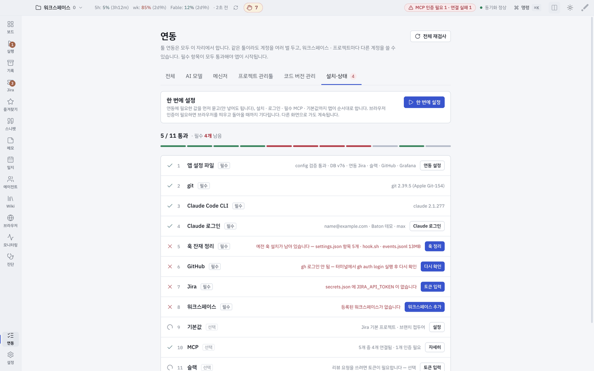
12- 1한 번에 설정
- 2점검 목록
셋업이 도는 동안 다른 화면으로 가도 계속됩니다. 끝나면 앱 어디에 있든 알림이 한 번 뜹니다. 중단 은 설치 명령까지 멈추고, 다시 누르면 다시 시도 로 이어서 합니다.
점검 목록의 각 행에도 버튼이 있습니다 — 설치(git · Claude Code CLI) · Claude 로그인 · 훅 정리 · 다시 확인 · 토큰 입력 · 워크스페이스 추가 · 설정. 셋업을 통과한 뒤에도 레일 아래 연동 과 진단 에서 같은 목록을 다시 볼 수 있습니다.
연동 — 같은 툴, 여러 계정#
레일 맨 아래 연동 이 툴 연동을 하는 단 한 자리입니다. 탭이 여섯입니다.
| 탭 | 무엇을 하나 |
|---|---|
| 전체 | 계정 요약과 프로젝트 × 종류 표. 칸에서 바로 그 프로젝트가 쓸 계정을 고릅니다 |
| AI 모델 | Claude 계정(구독 로그인 · API 키). 지금 로그인돼 있는 계정이 자동으로 한 벌 섭니다. 계정마다 기본 모델을 정하면 그 프로젝트의 세션이 그 모델로 뜹니다(세션에서 직접 고른 모델이 이깁니다). 별칭(opus · sonnet · haiku · fable)으로 적으세요 — 새 모델이 나오면 별칭이 알아서 그것을 가리킵니다. claude-opus-5-5 처럼 구체 ID 를 적으면 그 모델에 묶여 다음 모델이 나와도 따라가지 않습니다. Codex · OpenAI · Gemini 는 「준비중」 |
| 메신저 | Slack — 토큰 하나가 워크스페이스 하나입니다. 잔디 · Discord 는 「준비중」 |
| 프로젝트 관리툴 | Jira — 브라우저 세션(쿠키) · API 토큰 · MCP 위임. Trello 는 「준비중」 |
| 코드 버전 관리 | GitHub — gh 에 로그인된 계정에서 고릅니다. GitLab · Bitbucket 은 「준비중」 |
| 설치·상태 | 지금까지의 점검 목록(설정 파일 · git · CLI 설치 · Claude 로그인 · 훅 정리 · 워크스페이스 · 기본값 · MCP)과 「한 번에 설정」 |
첫 실행에는 「설치·상태」 탭이 먼저 열립니다 — 앱을 막고 있는 것부터 보여야 하기 때문입니다. 필수 항목이 남아 있으면 그 탭에 빨간 숫자가 붙습니다.
프로젝트마다 소속이 다를 수 있습니다 — 회사 · 개인 · 스터디. 그래서 같은 툴이어도 계정을 여러 벌 두고 프로젝트마다 다른 계정으로 붙입니다. 계정마다 이름을 붙이세요(「회사」 · 「개인」). 처음 만든 계정이 그 툴의 기본 이 되고, 「기본으로」 로 언제든 옮길 수 있습니다.
어느 계정이 쓰이나 — 프로젝트에 지정한 것 → 워크스페이스에 지정한 것 → 그 툴의 기본 계정 순입니다. 프로젝트에서 「워크스페이스 따름」 을 고르면 지정이 지워져 위에서 물려받습니다(끄는 것이 아닙니다). 표에서 ↑ 가 붙은 칸이 물려받은 것입니다. 지정은 연동 › 전체 탭 과 프로젝트 탭의 「연동」 섹션 두 자리에서 모두 할 수 있습니다.
구독 로그인은 이 맥에 한 벌입니다. 토큰은 Keychain 이 들고 앱은 누구로 로그인돼 있는지(이메일 · 조직)만 읽습니다. 로그인 주인이 바뀌어도 계정 행은 그대로이고 표시만 따라 바뀝니다 — 프로젝트에 걸어 둔 지정이 살아 있어야 하기 때문입니다.
계정을 더 두려면 두 길입니다. ① 설정 디렉터리를 나눕니다 — 그 디렉터리로 한 번 로그인하면 자격이 그 안에 따로 남습니다(계정 행의 설정 디렉터리 칸에 그 경로를 적고 「로그인」 을 누르면 앱이 그 디렉터리로 로그인합니다). ② API 키 — 로그인 절차가 없고 계정이 곧 키입니다(과금도 그 키로 갑니다).
Claude 로그인은 가끔 풀립니다. 그러면 세션이 인증 오류로 멈추고, 연동 › AI 모델 의 그 계정 행이 「인증 필요」 가 됩니다. 두 자리 어디서든 「로그인」 을 누르면 창이 하나 열립니다.
- 창 안의 터미널에서
claude auth login이 돌고 브라우저가 열립니다. - 브라우저에서 승인하고 코드를 복사합니다.
- 그 코드를 창 안의 터미널에 붙여넣고(⌘V) Enter 를 누릅니다. 끝나면 창이 「로그인됐습니다」 로 바뀌고 계정 행도 함께 풀립니다.
멈춰 있던 세션은 배너의 「다시 시도」 로 이어집니다. 창을 닫으면 로그인을 그만둡니다(이미 끝난 로그인은 그대로 남습니다). 바깥 터미널에서 하고 싶으면 창 안의 「명령 복사」 로 같은 한 줄을 가져가면 됩니다.
세션 대화창에 /login 을 치면 아무 일도 일어나지 않습니다. 앱의 세션은 터미널이 아니라 SDK 로 든 것이라 그런 화면 전용 명령이 없습니다 — 그래서 이 창이 있습니다.
세션을 열면 그 프로젝트의 계정이 세션 환경변수로 들어갑니다. 그래서 AI 가 스스로 gh pr create 를 불러도 회사 프로젝트에서 개인 계정으로 PR 이 열리는 일이 없습니다. 값은 대화 기록에서 가려집니다.
Jira 의 MCP 위임 은 MCP 서버 한 벌이 인증 한 벌을 들기 때문에 계정을 하나만 둘 수 있습니다. 고르는 자리에서 그렇게 알려 줍니다. 같은 Jira 사이트에 다른 계정 으로 붙으려면 브라우저 세션(쿠키) 방식에서 브라우저 프로필을 나눠야 합니다.
계정을 더하거나 · 고치거나 · 지우거나 · 기본을 옮기면 앱을 다시 열지 않아도 그 값으로 돕니다 — 주소 · 기본 프로젝트뿐 아니라 인증 방식(브라우저 세션(쿠키) ↔ API 토큰 ↔ MCP 위임) 과 GitHub 토큰까지 같습니다. Jira · Slack · GitHub 모두 마찬가지입니다.
딱 하나 뒤늦게 따라오는 것이 있습니다 — 이미 떠 있는 세션은 뜰 때 받은 AI 계정으로 계속 돕니다. 그런 세션이 있을 때만 앱이 「앱을 다시 시작할까요?」 를 묻고, 「나중에」 를 고르면 연동 화면 위에 그 한 줄이 남아 언제든 「지금 재시작」 을 누를 수 있습니다. 묻지 않았다면 재시작할 것이 없다는 뜻입니다.
쿠키 방식으로 두면 앱을 열 때마다 「키체인에서 security 가 'Chrome Safe Storage' 를 사용하려고 합니다」 가 뜰 수 있습니다 — Chrome 쿠키를 풀 열쇠를 키체인에서 꺼내기 때문입니다. 「항상 허용」은 누르지 마세요: 그 허용은 security 명령 전체에 열리는 것이라, 이후 어떤 프로그램이든 암호 없이 그 열쇠를 꺼낼 수 있게 됩니다(Chrome 에 로그인된 모든 세션이 그 열쇠로 풀립니다). 창이 성가시면 API 토큰 방식으로 바꾸는 것이 답입니다 — 쿠키도 키체인도 건드리지 않습니다.
https://<조직>.atlassian.net 까지만 넣습니다. 브라우저 주소창을 통째로 복사하면 /jira/for-you 같은 화면 경로가 딸려 들어가 티켓 조회가 엉뚱한 주소로 나갑니다.
이 기능이 들어간 뒤 앱을 처음 열면, 지금 쓰던 Jira · 슬랙 · GitHub 설정이 「기본」 계정 한 벌로 자동으로 옮겨집니다. 다시 넣을 것이 없습니다. 계정을 하나도 만들지 않은 설치는 예전 설정 그대로 돕니다.
연동 설정 — 무엇을 넣으면 무엇이 켜지나#
하나도 넣지 않아도 앱은 돕니다. worktree · 세션 · 문서 · 성과 · 위키 · 메모는 로컬 git 과 앱 DB 만으로 섭니다. 아래 값들은 넣으면 늘어나는 것이고, 비우면 그 기능과 관련 워크플로우가 목록에서 조용히 빠집니다(눌렀다가 막히는 것이 아니라 아예 보이지 않습니다).
「한 번에 설정」을 누르면 이 값들을 먼저 묻습니다. 채워 넣고 저장하고 계속을 누르면 값을 설정 파일에 써 준 뒤 이어서 설치·로그인·필수 MCP·기본값까지 순서대로 갑니다 — Jira 주소를 방금 넣었으면 그 주소로 로그인 단계가 이어집니다. 지금은 넣고 싶지 않으면 건너뛰고 계속(값을 건드리지 않습니다) 또는 취소입니다. 폼만 열고 싶으면 점검 목록 맨 위 앱 설정 파일 행의 연동 설정 버튼을 눌러도 같은 칸이 나옵니다. 그 행에는 지금 쓰는 연동이 적혀 있습니다 — 아무것도 없으면 「연동 없음(로컬 git 만)」입니다.
| 넣는 값 | 어디서 얻나 | 넣으면 켜지는 것 |
|---|---|---|
| Jira 주소 | Jira 를 브라우저에서 연 뒤 주소창의 맨 앞부분을 그대로 복사합니다 — https://<조직>.atlassian.net 까지(뒤의 /jira/software/… 는 뺍니다). | 티켓 조회·연결·자동 사냥, 티켓을 쓰는 워크플로우 9개 |
| Jira 기본 프로젝트 키 | 티켓 번호 ABC-123 의 앞 글자가 프로젝트 키입니다. | 실행 폼의 기본값(비워도 됩니다 — 실행할 때 고릅니다) |
| 슬랙 리뷰 채널 id | 슬랙에서 채널 이름을 우클릭 → 채널 세부정보 보기 → 맨 아래 채널 ID(C 로 시작). 이름(#reviews)이 아니라 id 입니다 — 이름은 바뀌어도 id 는 안 바뀝니다. | 리뷰 요청 · 슬랙 질문 답변 워크플로우. 글을 남기려면 슬랙 단계에서 토큰도 넣어야 합니다 |
| Grafana 주소 | Grafana 를 연 뒤 주소창의 맨 앞부분. | 모니터링 화면의 대시보드 열기 |
| GitHub 를 쓰나요 | 고르기만 합니다. 예 로 두면 GitHub CLI(gh)가 필요합니다. | PR 만들기 · 리뷰 반영 · 체크 확인. 아니오 면 그 기능과 셋업 단계가 통째로 빠져 gh 를 깔지 않아도 첫 실행이 끝납니다 |
넣은 값은 ~/.baton/app.config.json 에 저장되고, 저장하는 즉시 해당 기능이 켜져 레일·메뉴·워크플로우 목록이 따라 바뀝니다. 비우면 같은 자리에서 다시 꺼집니다 — 끄는 길과 켜는 길이 같은 자리입니다. Jira 주소도 그 자리에서 반영됩니다(S392 — 앱을 다시 켜지 않아도 됩니다). 인증 방식(jira.authMode)을 바꾸는 경우만 다시 켜야 합니다.
이 폼은 첫 실행에만 뜨는 것이 아닙니다. 셋업을 통과한 뒤에도 「다시 시도」를 누르면 같은 칸이 먼저 열리고, 진단 의 같은 행에서도 열어 고칠 수 있습니다. 연동을 전부 꺼도 이 행은 남습니다 — 다시 켤 값을 넣을 자리가 사라지면 안 되기 때문입니다.
Jira 를 켠 뒤의 세부 조직 값(상태 전이 이름 · 커스텀 필드 id · 자동 사냥 대상)은 기본값 행의 설정 에서 이어서 정합니다. 대부분은 Jira 가 붙는 순간 앱이 실측해 채웁니다.
무엇을 하는 자리인가 — 프로젝트 타입#
Baton 은 프로젝트마다 타입을 가집니다 — 개발 · 학습 · 기획 · 통합. 타입에 따라 보드 상세의 메뉴와 쓸 수 있는 워크플로우, AI 의 역할이 달라집니다. 자세한 것은 프로젝트 타입 을 보세요.
기존 프로젝트는 전부 개발 입니다. 공부하거나 기획하는 자리는 프로젝트를 붙이는 어느 자리에서든 타입을 골라 시작합니다 — 신규 프로젝트 추가 · 폴더에서 프로젝트 추가 · 워크스페이스 추가 · 프로젝트 추가(재스캔).
화면 구성 한눈에#
창 왼쪽의 레일 이 화면을 고르고, 맨 위 상단바 가 앱 전체 상태를 보여 줍니다. 레일의 번호 키(⌘1~⌘9)는 위에서부터 차례로 붙습니다(기능을 끄면 번호가 다시 매겨집니다).
| 레일 | 키 | 하는 일 |
|---|---|---|
| 보드 | ⌘1 | 워크스페이스 트리 · 작업 목록 · 세션 대화 — 일하는 자리 |
| 실행 | ⌘2 | 워크플로우 실행 · 실행 기록 · 가져오기 — 숫자 배지는 지금 진행 중인 워크플로우 실행 수(내 답을 기다리는 실행이 있으면 주황 숫자로 그 건수) |
| 기록 | ⌘3 | 닫은 과업·세션 검색 · 성과 모아보기 |
| Jira | ⌘4 | 내 티켓 · 자동 사냥 (Jira 기능이 켜져 있을 때) |
| 즐겨찾기 | ⌘5 | 링크를 소속·그룹으로 모아 열기 |
| 스니펫 | ⌘6 | 자주 치는 문장을 입력창 버튼으로 |
| 메모 | ⌘7 | 슬랙·이미지·글을 모아 두는 개인 기록(비밀번호) — 프로젝트·라벨로 묶고 ⌘⇧M 으로 어디서나 남깁니다 |
| 일지 | ⌘8 | 하루 동안 한 일을 시간대별로 |
| AI | ⌘9 | 에이전트에게 업무 맡기기 · 스킬 · 플러그인 · 마켓플레이스 보기 |
| Wiki | — | 문서·링크·메모를 한 자리에 모아 보기 |
| 모니터링 | — | Grafana 대시보드를 앱 안에서 |
| 진단 | — | 셋업 점검 · MCP 서버 상태 · 재인증 |
| 연동 | — | (레일 아래) 툴 연동 · 계정 · 설치·상태 — 필수 항목이 깨지면 빨간 숫자 |
| 설정 | — | (레일 아래) UI 배율 · AI 실행 · OS 알림 · 메모 · 레이아웃 · 기기 옮기기 |
⌘ 를 두 번 톡톡 치면 지금 화면의 버튼 위에 단축키 키캡이 뜹니다. 다시 두 번 치거나 Esc 로 걷습니다. 다녀온 자리는 ⌘⌥← / ⌘⌥→ 로 되짚습니다 — 화면뿐 아니라 고른 세션·워크트리, 화면 안의 상세·탭까지 한 걸음씩 돌아갑니다(팝업·메뉴는 걸음에 들지 않습니다). 입력칸에 글을 쓰던 중에도 그대로 듣습니다.
되짚지 않고 레일로 그냥 다녀와도 그 화면은 보던 자리에 그대로 섭니다 — 보던 세션·문서, 골라 둔 거르기와 쪽, 트리에서 손이 있던 행까지 남습니다. 다른 화면을 한 번 들렀다고 처음부터 다시 고를 일은 없습니다.
사이드 패널 숨기기#
왼쪽에 목록이 붙은 화면 — 보드(트리·작업 목록) · 실행(워크플로우 목록) · 에이전트(역할 목록) · 위키(트리) · 모니터링(대시보드 목록) — 에서 그 목록을 숨겨 오른쪽 본문을 넓게 봅니다.
- 본문 머리 왼쪽 끝의 패널 버튼(사이드 패널 숨기기)을 누르거나 ⌃` 를 칩니다.
- 다시 열 때는 같은 자리의 버튼(사이드 패널 보이기)이나 ⌃` 를 한 번 더.
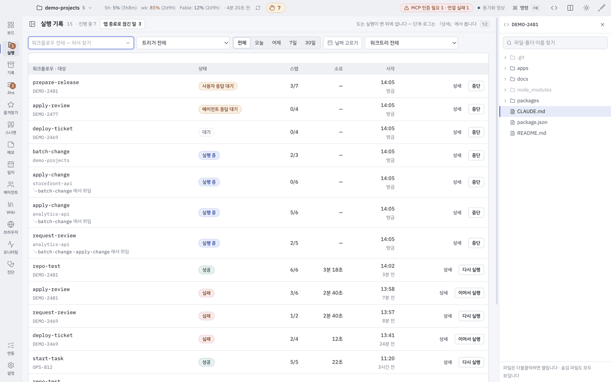
1- 1사이드 패널 보이기 ⌃`
실행 화면에서 숨겨도 보드의 목록은 그대로이고, 앱을 다시 켜도 숨긴 상태가 남습니다. 화면을 둘로 나눴을 때는 손(포커스)이 있는 칸의 화면이 먼저 접히고, 그 화면에 목록이 없으면 다른 칸이 접힙니다. 목록이 없는 화면(기록 · Jira · 즐겨찾기 …)에서는 아무 일도 하지 않습니다.
그 방향으로 더 갈 데가 없을 때 마우스 휠이나 트랙패드로 굴리면, 내용이 반대쪽으로 조금 끌렸다가 제자리로 돌아옵니다 — 앱이 멈춘 것이 아니라 여기가 끝이라는 뜻입니다. 목록이 짧아 처음부터 굴릴 데가 없을 때(보드의 워크스페이스 트리를 걸러 한두 줄만 남겨 놓고 굴려 보면 바로 보입니다)도, 긴 목록을 끝까지 내린 뒤 더 내릴 때·맨 위에서 더 올릴 때도 같습니다. 아직 굴러갈 데가 남은 쪽으로는 평소대로 스크롤만 하고(맨 아래에서 위로 굴리면 그냥 올라갑니다), 화면 틀 자체는 흔들리지 않습니다. 앱 안의 모든 스크롤 자리가 같습니다. macOS 의 동작 줄이기 를 켜 두었다면 이 움직임은 나오지 않습니다.
링크 — 어디서나 같은 네 갈래#
앱에서 누를 수 있는 링크는 모두 같은 네 가지로 열립니다. 세션 대화의 주소, 실행 로그 · 요약 · 티켓 설명 · 리뷰 코멘트 안의 링크, 문서 · 즐겨찾기 · PR · Jira 티켓 · 위키 · 성과의 근거 · 그룹 링크 · 모니터링 대시보드 — 어디에 적혀 있든 같은 메뉴, 같은 순서, 같은 말입니다.
- 링크를 그냥 누릅니다. 링크 이름과 주소가 머리에 적힌 메뉴가 그 자리에 섭니다(오른쪽 버튼 · 트랙패드 두 손가락 탭도 같은 메뉴입니다 — 그때는 커서 옆).
- 브라우저로 열기 — 시스템 기본 브라우저로 보냅니다. 메뉴의 첫 줄이라 종전 동작은 한 번 더 누르는 것으로 남습니다.
- 앱에서 열기 — 앱 창 안의 팝업 뷰어로 봅니다. 잠깐 확인하고 닫을 때 씁니다.
- 옆에서 열기 — 화면을 좌우로 나누고 오른쪽 칸 브라우저의 새 탭으로 엽니다. 띄워 놓고 반대쪽에서 일할 때입니다(브라우저).
- 주소 복사 — 주소를 클립보드에 넣습니다(남에게 넘길 때).
앱에서 · 옆에서 는 앱 안에 태울 수 있는 주소에만 섭니다 — http · https 와 볼 수 있는 형식의 로컬 파일(HTML · Markdown · 그림 · 텍스트)입니다. 메일 주소(mailto:)나 PDF 처럼 태울 수 없는 것은 브라우저로 열기 와 주소 복사 만 섭니다(문서 행처럼 앱 안에 제 자리가 있는 것은 PDF 여도 앱에서 열기 가 섭니다 — PDF 창이 그 자리입니다). 이 기기의 파일 경로인 문서(로컬 HTML · Markdown · PDF)는 복사해 붙일 곳이 없어 주소 복사 가 서지 않습니다 — 그 자리의 답은 Finder 에서 보기 입니다. 앱 안의 자리를 가리키는 링크(위키 문서 등)는 메뉴 없이 그 자리로 갑니다.
메뉴를 건너뛰고 곧바로 기본 브라우저로 나갑니다 — 고를 것 없이 가려는 손을 막지 않습니다. 즐겨찾기 행의 ↗ 처럼 「브라우저로」라고 적힌 버튼도 직통입니다. 세션 대화에서 아직 즐겨찾기에 없는 주소를 누르면 같은 메뉴에 즐겨찾기에 담기 · 담고 바로 열기 가 함께 섭니다(즐겨찾기). 로그인이 필요한 사내 페이지도 앱에서 열립니다 — 팝업 · 옆 칸 · 브라우저 화면이 쿠키 한 벌을 함께 쓰므로 한 번 로그인하면 나머지가 그 세션을 씁니다.
즐겨찾기 행 · PR 목록 행 · Jira 티켓 키 · 「ArgoCD 열기」 · 트리의 그룹 링크 버튼처럼 버튼 모양인 링크도 누르면 같은 메뉴가 섭니다. 마우스를 올리면 툴팁 끝에 클릭: 여는 방법 고르기 · ⌥·⌘ 클릭: 바로 브라우저 라고 적혀 있습니다. 홀로 선 링크(위키의 바깥 주소 · 문서 뷰어 머리)에는 같은 네 갈래가 처음부터 버튼 줄로 보입니다.
예외는 없습니다: 과업 상세의 문서 행도 누르면 같은 메뉴가 섭니다. 그 자리의 앱에서 열기 는 종전에 행을 눌렀을 때와 똑같은 것을 엽니다 — 로컬 Markdown 은 앱 서식으로, 로컬 HTML 은 원본 그대로 팝업으로, PDF 는 PDF 창으로, 주소 문서는 대화 자리의 웹 뷰로. 행의 앱 열기 · 브라우저 열기 버튼은 그대로 있어 고르지 않고 바로 갈 수 있습니다.
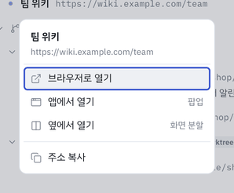
보드 모두#
보드는 일하는 자리입니다. 왼쪽에 워크스페이스 트리 와 작업 목록, 오른쪽에 고른 worktree 의 상세 패널(세션 대화)이 섭니다.
보드 화면 구성#
 123456
123456- 1필터
- 2워크스페이스 트리
- 3작업 목록
- 4정보 칩
- 5대화
- 6입력창
- 필터 — 티켓 키·레포 이름으로 트리와 목록을 좁힙니다(⌘F).
- 워크스페이스 트리 — 워크스페이스 › 프로젝트(레포) › worktree(과업) › 세션 › 서브에이전트.
- 작업 목록 — 세션 카드. 탭 전체 · 주의 · 실행 중 · 만료(각 칸에 건수 숫자)으로 거르고 밀도(촘촘·보통·여유)를 고릅니다. 내가 마지막으로 연 세션이 맨 위입니다.
- 정보 칩 — 티켓 요약 · PR · 변경 · 문서 · 이력 · 성과 · 프로젝트 · 링크, 그룹 세션이면 진행상황(상세 패널).
- 대화 와 입력창 — 세션과 주고받습니다(세션 대화).
⌥1 트리 · ⌥2 작업 목록 · ⌥3 입력창 · ⌥4 대화 로그. ⌥ 가 입력기에 먹히면 ⌃1~⌃9 가 같습니다. F6 은 순서대로 돕니다. ⌃` 는 왼쪽 목록을 접어 대화를 넓힙니다(사이드 패널 숨기기).
팝업을 확인·취소하거나 닫으면, 행을 지우거나 이름을 고치면, 키보드 포커스는 하던 행으로 돌아옵니다 — 곧바로 ↑↓ 로 이어 가면 됩니다. 지운 행이면 바로 옆 행으로 갑니다. 무엇을 추가했으면(세션 · worktree · 메모 · 스니펫 · 즐겨찾기 …) 새로 생긴 항목으로 갑니다. 기다리는 사이 다른 곳을 누르면 따라가지 않습니다.
메뉴 · 목록 팝업(열린 PR · 버전 히스토리 · 링크 모듬 …) · 확인 창 · 명령 팔레트 · 통합 검색 · 날짜/색 고르기 — 떠 있는 팝업은 모두 같은 키로 움직입니다. 열리면 키보드 포커스가 팝업 안(검색창 → 고른 항목 → 첫 항목)으로 들어갑니다.
↑↓ 항목 이동(검색창에서도, 닫기 버튼에 있어도) · HomeEnd 처음·끝 · Enter 고르기 · Tab/⇧Tab 팝업 안의 버튼을 돌기(밖으로 나가지 않습니다) · Esc 맨 위 팝업만 닫고 연 자리로 돌아가기 · 메뉴에서는 ← 도 닫고 연 행으로 돌아가기(→ 로 연 행 메뉴의 짝). 날짜·색 격자는 ←→ 로 칸을 옮깁니다.
목록을 불러오는 중에도 Esc 는 살아 있고, 다 불러오면 첫 항목으로 옮겨 갑니다(그 사이 다른 버튼으로 옮겼으면 그대로 둡니다). 팝업이 떠 있는 동안 뒤 화면의 키(목록 이동 · 세션 탭 넘기기 ⌃[⌃] · 정보 칩 ⌘⌃1~)는 쉽니다.
워크스페이스 트리와 행 메뉴#
행의 ⋯ 버튼이나 우클릭이 같은 메뉴를 엽니다. 메뉴는 행의 종류(워크스페이스 · 프로젝트 · worktree · 세션)마다 다릅니다.
펼치고 접기 — 행마다 따로입니다
하위가 있는 행에는 왼쪽에 꺾쇠(>)가 섭니다. 누르면 펴지고 꺾쇠는 아래를 향합니다. 펼침은 행마다 따로라 다음 세 가지가 보장됩니다.
- 고르는 일은 펼침을 건드리지 않습니다 — 다른 행을 누르거나 방향키로 훑어도, 펴 둔 가지는 그대로 있고 새로 고른 가지가 저절로 열리지도 않습니다.
- 여러 가지를 동시에 펴 둘 수 있습니다 — 한쪽을 펴는 것이 형제를 접지 않습니다.
- 층마다 따로입니다 — worktree 를 펴면 세션이, 세션을 펴면 N agents 묶음이, 그것을 펴면 개별 서브에이전트가 나옵니다.
키보드는 행에 손을 얹고 ← — 그 행의 펼침 토글입니다(펴져 있으면 접고, 접혀 있으면 폅니다). 하위가 없는 행에서 ← 는 상위 행으로 올라갑니다. → 는 접힌 행을 펴고, 이미 펴져 있으면 행 메뉴를 엽니다.
트리 머리의 도구 셋
트리 위 워크스페이스 줄 오른쪽에 버튼 셋이 고정돼 있습니다 — 트리를 아무리 스크롤해도 같은 자리입니다.
| 버튼 | 하는 일 |
|---|---|
| 열린 세션으로 (⌃S) | 지금 오른쪽 대화 패널이 들고 있는 세션을 트리에서 찾아 그 자리로 스크롤합니다. 그 세션이 든 가지가 접혀 있으면 자동으로 펴집니다. 열린 세션이 없으면 눌리지 않습니다. ⌃S 는 보드 화면 어디서든 같은 일을 합니다 — 대화를 읽다가 손을 입력창에 둔 채로 눌러도 됩니다(한글 입력 상태 그대로도). 단, 손이 터미널 탭 안에 있을 때는 셸의 키(XOFF)라 그쪽이 먼저 받습니다 |
| 모두 펼침 | 트리의 모든 하위를 끝까지 폅니다(세션 · 서브에이전트 묶음까지). 손으로 접어 둔 행도 함께 풀립니다 |
| 모두 접힘 | 프로젝트 · 그룹 층까지는 남기고 그 아래(worktree · 세션 · 서브에이전트)를 접습니다. 워크스페이스 이름만 남지 않으므로, 접은 뒤에도 어느 레포·그룹이 있는지는 그대로 보입니다 |
모두 펼침 과 열린 세션으로 는 트리 블록 자체가 접혀 있으면 먼저 펴 줍니다(보여 달라는 뜻이니까요). 모두 접힘 은 블록을 건드리지 않습니다.
접고 편 모양은 그대로 남습니다 — 다른 화면에 갔다 오거나 앱을 다시 켜도 접어 둔 가지는 접힌 채입니다.
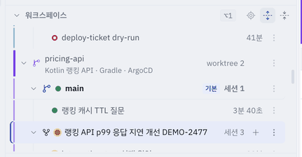
123- 1열린 세션으로
- 2모두 펼침
- 3모두 접힘
표기명을 고칠 수 있는 행(worktree · 세션 · 그룹 · 워크스페이스 · 프로젝트)은 그 행에서 Enter 를 누르거나 더블클릭하면 메뉴를 열지 않고도 바로 이름 칸이 됩니다. Space 는 그대로 고르기와 그룹·에이전트 묶음 접기펴기입니다 — 둘이 갈라지기 전까지는 Enter 도 같은 일을 했습니다. 워크스페이스 스코프 가상 worktree(「워크스페이스 세션」) · 그룹 안의 레포 노드 · 「분류 안 됨」 · 에이전트는 이름을 고칠 수 없습니다.
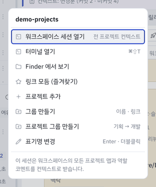
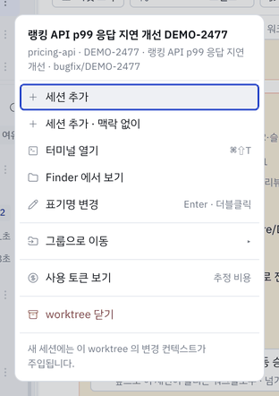
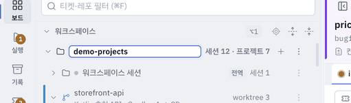
| 행 | 메뉴 | 하는 일 |
|---|---|---|
| 워크스페이스 | 워크스페이스 세션 열기 | 모든 프로젝트 맵과 역할 코멘트를 컨텍스트로 받는 총괄 세션을 엽니다 |
| 링크 모듬 (즐겨찾기) | 이 워크스페이스에 붙은 즐겨찾기를 팝오버로 | |
| 프로젝트 추가 | 워크스페이스 폴더에서 새 레포를 골라 프로젝트로 등록(체크한 폴더마다 타입을 함께 고릅니다) | |
| 그룹 만들기 | worktree 를 모을 그룹을 이름 · 링크로 만듭니다(worktree 그룹) | |
| 프로젝트 그룹 만들기 | 레포(프로젝트)를 모을 그룹을 만듭니다 — 기획·학습과 개발을 한 자리에(프로젝트 그룹) | |
| 프로젝트 행 | 프로젝트 그룹으로 이동 · 프로젝트 그룹에서 빼기 | 이 레포를 프로젝트 그룹에 넣거나 뺍니다(같은 워크스페이스의 그룹만) |
| 표기명 변경 | 워크스페이스 폴더 이름과 별개로 트리·카드에 보이는 이름을 답니다(행 더블클릭·Enter 와 같음). 비우고 저장하면 폴더 이름으로 돌아갑니다 — worktree 표기명과 같은 규약입니다 | |
| 「프로젝트」 그룹 | 신규 프로젝트 추가 · 폴더에서 프로젝트 추가 · 그룹 만들기 | 레포를 새로 만들거나 · 워크스페이스 밖의 있는 폴더를 프로젝트로 붙입니다(git 레포가 아니면 git init) · 이 묶음의 worktree 를 모을 그룹을 만듭니다 |
| worktree 그룹 | 세션 추가 · 문서 추가 · 이름 변경 · 링크 열기 · 그룹 편집 · worktree 모두 닫기 · 그룹 삭제 | 그룹 행을 더블클릭하면 그 자리에서 이름이 입력칸이 됩니다(worktree · 세션 행과 같습니다) — 메뉴의 이름 변경 도 같은 입력으로 들어옵니다. 그룹 편집 은 이름과 링크를 함께 고칠 때, 문서 추가 는 이 묶음 전체의 문서(에픽 기획서 등)를 그룹에 붙일 때, 그룹 삭제 는 그룹만 지울 때입니다(worktree 는 남습니다 — worktree 그룹) |
| 프로젝트 | worktree 만들기 · 기본 worktree 에서 세션 열기 · 프로젝트 원격 세션 · 열린 PR 보기 · remote 설정 / remote 변경 · 버전 히스토리 보기 · 링크 모듬 (즐겨찾기) · 표기명 변경 · 색 바꾸기 · 프로젝트 맵 다시 생성 · 폴더 없는 worktree 정리 · 배포 현황 | 프로젝트 메뉴 에서 하나씩 설명합니다 |
| 그룹 안의 레포 | 프로젝트 메뉴와 같은 항목 · 프로젝트 행으로 가기 | 그룹 안에서 레포 이름으로 선 행입니다. 항목은 모두 그 레포(그룹 밖 프로젝트 행과 같은 대상)에 동작하고, 맨 끝 프로젝트 행으로 가기 는 그룹 밖의 원래 프로젝트 행으로 손을 옮깁니다(worktree 그룹) |
| worktree | 세션 추가 | 이 worktree 의 변경 컨텍스트를 주입한 새 세션 |
| 세션 추가 · 맥락 없이 | 아무 맥락 없이 빈 세션(입력창 옆 ⌥클릭과 같음) | |
| 표기명 변경 | 트리·카드에 보이는 그 이름에서 시작해 바꿉니다(행 더블클릭·Enter 와 같음). 티켓 키 · 브랜치는 고칠 수 없어 입력칸에 들어가지 않습니다 — 비우고 저장하면 자동 이름(티켓 제목 등)으로 돌아갑니다. 워크스페이스 바로 아래의 워크스페이스 세션 행에는 이 항목이 없습니다 — 실제 worktree 가 아니라 이름을 저장할 자리가 없습니다 | |
| worktree 다시 만들기 | 폴더가 밖에서 지워졌을 때만 — 브랜치를 그대로 붙여 되살립니다. 그 브랜치를 레포 본체나 다른 worktree 가 체크아웃하고 있으면 git 이 두 자리에 붙이지 않으므로, 어디가 물고 있는지 알려 주고 멈춥니다 | |
| 그룹으로 이동 · 그룹 해제 | 이 worktree 를 그룹에 넣거나 그룹에서 풉니다(⌥⌫) — 행을 끌어다 놓는 것과 같고, 풀면 자기 프로젝트 아래 제자리로 돌아갑니다(worktree 그룹) | |
| 사용 토큰 보기 | 이 worktree 아래 모든 세션이 쓴 토큰과 추정 비용을, 세션별 내역과 함께 봅니다(토큰 사용량). 닫히거나 정리된 세션의 몫도 들어 있습니다 | |
| worktree 닫기 | 과업을 기록으로 옮기고 worktree 를 지웁니다(닫기) | |
| 폴더가 밖에서 지워진 자리(폴더 없음)가 여러 개 쌓였으면 프로젝트 행 ⋯ › 폴더 없는 worktree 정리 로 한 번에 걷습니다 — 닫기 를 보세요 | ||
| 세션 | 이 세션 열기 · 이름 변경 · 세션 추가 · 세션 추가 · 맥락 없이 | 세션을 열거나 이름을 바꾸고, 같은 worktree 에 세션을 더합니다 |
| 사용 토큰 보기 | 이 세션이 쓴 토큰(입력 · 출력 · 캐시 쓰기 · 캐시 읽기)과 추정 비용 · 캐시 적중률 · 응답 수 · 기간을 봅니다(토큰 사용량) — 작업 목록 카드 메뉴에도 같은 항목이 있습니다 | |
| 세션 닫기 | 확인을 거쳐 이 세션만 닫습니다(worktree 는 그대로). 대화는 기록 › 닫힌 세션에 남고 되살릴 수 있습니다 — 작업 목록 카드 메뉴 · 탭 ✕ 와 같습니다 | |
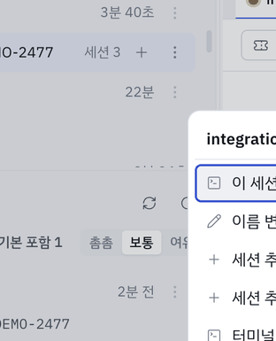
워크스페이스 · 프로젝트 · 그룹 · worktree · 세션 행은 모두 같은 부모 · 같은 depth 형제 안에서 끌어서 순서를 바꿀 수 있습니다. 한 번 끌어 놓으면 그 형제 줄 전체가 그 순서를 그대로 유지합니다(재스캔·다시 시작해도 남습니다). 마우스 없이는 행에서 ⌥↑/⌥↓ — 맨 위·맨 아래에서는 더 움직이지 않고, 다른 depth 로는 넘어가지 않습니다. 스탠드얼론 「프로젝트」 묶음은 늘 맨 아래라 끌 수 없습니다.
worktree 행은 그룹에 넣기도 같은 드래그로 됩니다 — 그래서 놓을 자리가 가장자리(위·아래)인지 가운데인지로 뜻이 갈립니다: 행의 위 · 아래 25%에 놓으면 순서(테두리 모양 힌트가 그 틈에 끼워짐을 보입니다), 가운데 50%에 놓으면 그 행에 넣기(꽉 찬 힌트가 행 전체를 감쌉니다). 그룹에 넣을 수 없는 행(워크스페이스 · 프로젝트 · 그룹 · 세션)은 위 · 아래 절반만 봅니다.
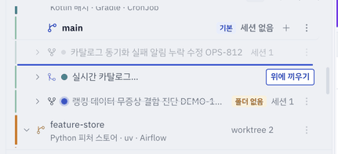
1- 1순서 끼우기
줄기 행의 ↓N · ↑N — 눌러서 받고, 눌러서 올립니다
기본(줄기) worktree 행의 기본 딱지 옆에는 그 브랜치가 원격과 얼마나 벌어졌는지가 섭니다 — ↓N 은 받을 것(원격에만 있는 커밋), ↑N 은 올릴 것(아직 안 올린 커밋)입니다. 원격과 같거나 아직 확인 전이면 아무것도 그리지 않습니다 — 정상까지 배지로 말하면 다른 행의 진짜 신호가 묻힙니다.
둘 다 버튼입니다. 누르면 그 자리에서 pull · push 하고, 도는 동안 그 배지만 … 로 바뀝니다(그 사이 다시 눌리지 않습니다). 끝나면 배지를 즉시 다시 재서 결과를 그대로 보입니다. 행을 고르거나 끌지 않습니다 — 배지를 누른 것은 「받아라 · 올려라」이지 「이 행을 고르라」가 아닙니다.
- ↓N — fast-forward 로만 당깁니다. 양쪽에 각자의 커밋이 있으면(갈라짐) 아무것도 하지 않고 알립니다 — merge 냐 rebase 냐는 사람이 정할 일입니다.
- ↑N — fast-forward 로만 올립니다. 강제 push 는 하지 않습니다. 받을 것이 있어 그냥은 못 올리면 아직 올리지 않은 채로 「원격에 새 커밋 N개가 있습니다 — 먼저 받은 뒤에 올릴까요?」를 묻고, 당기고 올리기 를 누르면 받은 뒤에 이어서 올립니다(받는 데 실패하거나 갈라져 있으면 올리지 않고 멈춥니다).
- 레포가 거절하면 그 사유를 그대로 보입니다 — 보호 브랜치나 서버 훅이 막는 레포에서는 그 메시지가 알림에 그대로 뜹니다. 앱이 우회하지 않습니다.
세션 행에는 상태 말고도 딱지가 붙습니다: 아직 안 본 결과가 있으면 새 결과, 이 세션을 워크플로우가 열었으면 워크플로우, Claude 가 선택지 카드 없이 글로만 묻고 멈췄으면 작업 목록 과 같은 답 대기 딱지가 새 결과 바로 앞에 섭니다 — 문구·색은 작업 목록과 같고, 그 세션에 답을 보내면 함께 빠집니다. worktree 행에는 이 딱지들을 모아 보이지 않습니다(세션 행에서만 봅니다).
worktree 그룹 — 에픽처럼 묶어 보기#
여러 레포에 걸친 worktree 를 사람이 정한 그룹으로 모읍니다. 그룹은 이름과 링크 하나(에픽 · 기획서 · 스레드 등, 선택)만 가진 앱 자체 데이터라 Jira 에 매이지 않습니다. 그룹은 워크스페이스 바로 아래, 프로젝트보다 먼저 서고, 그 안에서도 레포 › worktree 구조를 그대로 보입니다 — 그룹 안에 그 그룹의 worktree 가 있는 레포마다 레포 노드(레포 이름 · 레포 색)가 서고, worktree 는 자기 레포 노드 아래에 섭니다. 그래서 에픽 이름과 어느 레포의 worktree 인지를 트리에서 한 번에 읽습니다.
- 워크스페이스 행의 ⋯ › 그룹 만들기 — 이름과 링크(선택)를 넣고 만들기. 링크는
http://·https://주소만 받습니다. - 넣기 — worktree 행을 그룹 안 어디든(그룹 행 · 레포 노드 · 구성원 행) 끌어다 놓습니다. 놓을 자리에 「그룹 이름」에 넣기 가 뜹니다. 어느 레포 노드 위에 놓든 worktree 는 자기 레포 노드 아래로 갑니다(레포는 바뀌지 않습니다). 마우스 없이는 worktree 행 메뉴 › 그룹으로 이동 에서 그룹을 고릅니다(맨 끝 새 그룹 만들기… 는 만들면서 바로 넣습니다). 다른 그룹의 worktree 를 옮기는 것도 같습니다.
- 그룹 해제 — 그룹 안의 worktree 행을 그룹 밖 프로젝트 쪽 어디든(프로젝트 행 · 줄기 · 다른 worktree 행) 끌어다 놓습니다. 놓을 자리에 그룹 해제 가 뜨고, 놓으면 원래 자기 프로젝트 아래 제자리로 돌아갑니다. 다른 레포 쪽에 놓아도 해제만 하고 자기 레포로 돌아갑니다 — 그때는 표시가 그룹 해제 → 레포 이름 으로 돌아갈 곳을 말합니다. 돌아간 행은 골라지고 보이는 자리까지 스크롤되며, 「그룹에서 뺐습니다 — 레포 이름 로 돌아갔습니다」 알림이 뜹니다. 마우스 없이는 행 메뉴 › 그룹 해제, 또는 행에서 ⌥⌫.
- 그룹 행 · 레포 노드를 누르거나 Enter · ← → 로 접고 펼칩니다. 그룹 행 오른쪽의 링크 버튼이 그룹의 링크를 브라우저로 엽니다.
- 그룹 문서 — 그룹 행 메뉴 › 문서 추가 로 묶음 전체의 문서(에픽 기획서 · 설계서 · 스레드 · 로컬 HTML · Markdown · PDF)를 붙입니다. 구성원 worktree 가 아니라 그룹에 붙습니다 — 그래서 구성원 하나를 닫아도 남습니다. 붙인 문서는 그룹 행 아래 그룹 세션 줄을 골라 문서 칩에서 보고 · 열고 · 고치고 · 뗍니다. ⌘⇧F 통합 검색에서도 제목 · 주소로 찾을 수 있고, 목록에는 레포 대신 그룹 · 이름이 소속으로 섭니다 — 고르면 그 그룹의 문서 자리로 갑니다. 그룹 행에는 worktree 2 · 문서 1 처럼 몇 건인지 섭니다. 구성원 worktree 의 문서는 종전대로 각 worktree 자리에 있습니다(섞이지 않습니다).
- 구성원 세션에 일괄 요청 — 그룹 행 메뉴에서, 이 그룹의 worktree 에 열려 있는 세션들에 같은 요청을 한 번에 넣습니다(다른 세션에 요청 보내기). 열린 세션이 없으면 항목이 서지 않습니다.
- worktree 모두 닫기 — 그룹에 든 worktree 를 한 번에 기록으로 옮깁니다(그룹 닫기). 구성원이 없으면 항목이 서지 않습니다. 그룹 삭제 와 다릅니다 — 저건 묶음만 풀고 worktree 는 그대로 둡니다.
- 그룹 삭제 는 묶음만 풀고 안에 있던 것은 제자리로 돌려보냅니다: worktree 는 자기 프로젝트 아래로, 그룹 문서·링크는 워크스페이스 자리로 옮겨져 거기서 계속 열립니다(사라지지 않습니다 — 종전에는 그룹과 함께 지워졌습니다). 그룹 세션은 닫힙니다 — 돌던 프로세스가 내려가고, 대화는 기록 › 닫힌 세션에 그룹 이름과 함께 남아 되살릴 수 있습니다.
- 그룹 세션 — 그룹 행의 +(또는 행 메뉴 › 세션 추가)로 묶음 전체를 보는 세션을 엽니다. 이 세션은 구성원 worktree 하나(줄기 우선)의 폴더에서 뜨지만 어느 한 과업에 매이지 않고, 시작할 때 구성원마다 티켓 · PR · 체크 · 미해결 코멘트 · 변경 요약을 갱신해 맥락으로 받습니다. 구성원이 많으면 앞의 12개까지 싣고 몇 개를 싣지 않았는지 적습니다. 위에서 붙인 그룹 문서 도 구성원보다 먼저 맥락에 실리고, 이 세션에게 「이 링크 문서에 등록해줘」라고 말하면 그 그룹에 붙습니다(성과 · 티켓 연결과 이 worktree 자신의 표기명은 과업 하나에 붙는 기록이라 그 worktree 세션에서 말해야 합니다 — 세션이 그렇게 답합니다). 세션 · 그룹 · 프로젝트 · 워크스페이스의 표기명을 바꾸는 것은 이 세션에서도 됩니다 — 「이 그룹 세션들 이름을 순서 맞춰 바꿔줘」처럼 말하면 구성원 세션들을 한 번에 바꿉니다(AI 에게 baton 기능 시키기). 열린 세션은 그룹 행 바로 아래 그룹 세션 줄에 모입니다. 구성원이 하나도 없는 그룹은 뜰 폴더가 없어 + 와 행 메뉴 › 세션 추가 가 눌리지 않습니다 — 그 자리 툴팁(메뉴는 오른쪽 캡션)이 「worktree 를 먼저 넣으세요」라고 적습니다. ⌘N 으로 눌렀으면 같은 말을 알림으로 받습니다. worktree 행을 이 그룹에 끌어다 놓으면 바로 눌립니다.
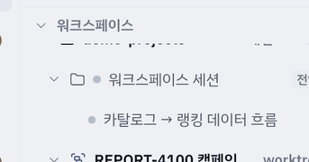
123- 1그룹
- 2링크 열기
- 3레포 노드
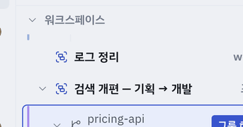
1- 1그룹 해제 표시
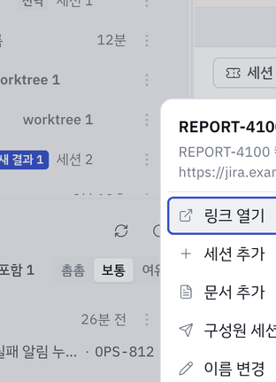
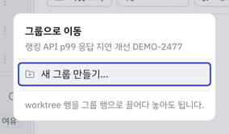
그룹 안의 레포 노드는 그 레포의 프로젝트 행과 같은 대상입니다 — ⋯ 메뉴(worktree 만들기 · 열린 PR 보기 · 버전 히스토리 …)와 ⌘N 이 그 레포에 그대로 동작하고(다만 여기서 worktree 만들기 를 하면 만든 자리가 그 그룹 안에 섭니다), 메뉴 맨 끝 프로젝트 행으로 가기 가 그룹 밖의 원래 프로젝트 행(줄기와 그룹에 안 든 worktree 가 선 자리)으로 손을 옮깁니다. 레포 노드를 고르면(클릭 · 키보드 포커스) ⌘P 는 곧바로 그 레포를 대상으로 삼습니다 — 다만 상세 패널의 선택(worktree · 세션)은 바뀌지 않습니다. 그룹 안의 worktree · 세션을 고르면 그 worktree 의 레포가 그대로 대상이 됩니다 — 그룹은 트리가 보여 주는 자리만 바꿀 뿐입니다.
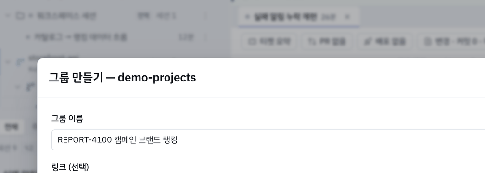
Jira 와 이어진 워크플로우는 그룹을 알아서 채웁니다
에픽 분해(이니셔티브·에픽 분해 의 「task 마다 worktree 준비」) · 새 작업 시작(상위 티켓을 고른 경우) · worktree 만들기(티켓을 넣은 경우)가 worktree 를 만들고 티켓과 이으면, 그 티켓의 상위 에픽으로 그룹을 만들어 넣습니다. 이름은 에픽 키 + 제목(예: REPORT-4100 캠페인 브랜드 랭킹), 링크는 에픽 주소이고 행에 자동 딱지가 붙습니다. 같은 에픽이면 새로 만들지 않고 같은 링크의 그룹에 넣습니다 — 이름을 바꿨거나 그 링크로 직접 만든 그룹이어도 그렇습니다.
자동 그룹도 이후엔 여느 그룹과 같습니다 — 이름 · 링크를 고치고, 구성원을 옮기고, 지울 수 있습니다. 한 번 뺀 worktree 는 그 뒤 다른 워크플로우(배포 준비 · 리뷰 반영 등)가 같은 티켓을 다시 이어도 끌려 들어가지 않습니다. 티켓 없이 만든 worktree 나 상위가 없는 티켓은 그룹을 만들지 않습니다.
그룹을 지워도 worktree · 세션 · 폴더는 그대로 남고 각자의 프로젝트 아래로 돌아갑니다. 다만 그룹에 붙인 문서는 함께 사라집니다(돌아갈 자리가 없습니다) — 확인 창이 몇 건인지 말합니다. 원본 링크 · 파일은 그대로입니다. worktree 를 닫았다가 기록에서 다시 열면 같은 그룹으로 돌아옵니다. 기본(줄기) worktree 는 그룹에 넣지 않습니다. 밖에서 만들어 동기화로 들어온 worktree 도 넣을 수 있습니다.
기획 프로젝트 — 초안부터 구체안까지#
기획 타입 프로젝트의 상세에는 기획 칩이 섭니다. 여섯 단계가 총론 → 경계 → 각론 순서로 서고, 다 쓴 뒤 인계 로 개발 프로젝트에 넘깁니다.
| 단계 | 적는 것 |
|---|---|
| 배경 · 문제 | 왜 지금 이것인가 · 현상을 수치로 |
| 목표 · 성공 기준 | 무엇이 되면 성공인가 — 측정할 수 있는 값으로 |
| 사용자 · 시나리오 | 누가 어떤 상황에서 쓰나 |
| 범위 | 하는 것과 안 하는 것 |
| 기능 명세 | 화면 · 동작 · 예외 |
| 프로토타입 | 디자인 시안 · 플로우맵과 피드백 — 상세의 디자인 칩에서 봅니다 |
- 단계 행의 쓰기 를 누르면 그 자리에서 글을 씁니다(마크다운). 저장하면 초안 이 됩니다.
- 정해졌으면 정했음 — 진행률(3/6 · 50%)이 오릅니다. 고칠 것이 생기면 되돌리기 로 초안으로 돌립니다.
- 글을 비우면 상태가 없음 으로 돌아갑니다 — 빈 글에 「초안」 딱지가 붙으면 진행률이 거짓이 됩니다.
- 인계 — 여섯 단계를 한 글로 말아 개발 프로젝트에 넘깁니다. 그 레포에 자리(worktree)를 만들고 세션을 열어 그 글을 첫 지시로 줍니다. 다 쓰지 않아도 넘길 수 있습니다 — 안 쓴 단계는 글에 「(아직 쓰지 않았습니다)」 로 남고, 받는 세션은 짐작으로 메우지 않고 먼저 묻습니다.
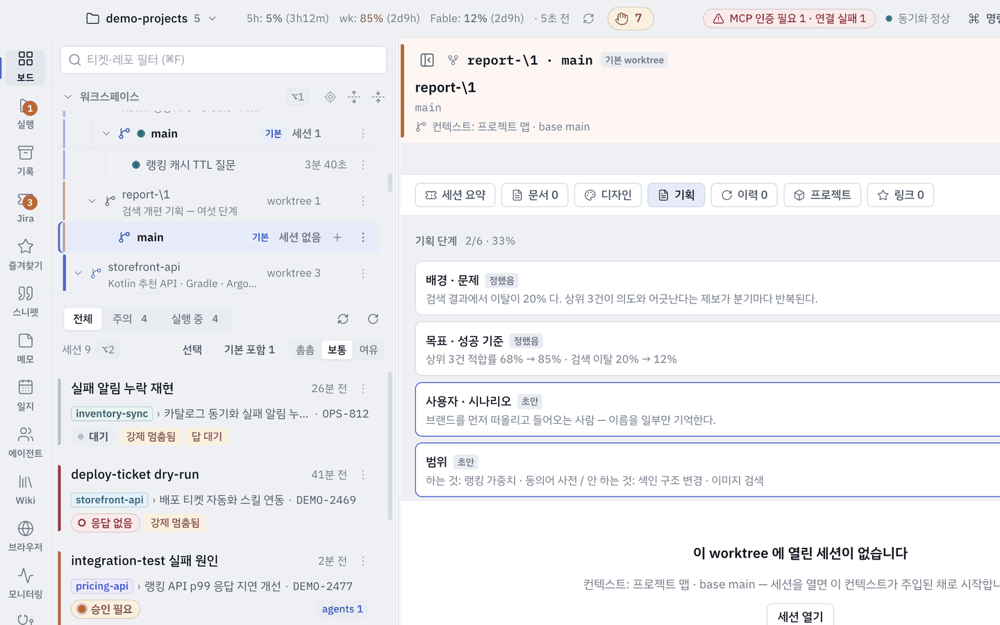
단계는 여섯으로 고정입니다 — 프로젝트마다 뼈대가 다르면 「어디까지 썼나」를 화면이 말할 수 없습니다. 기능 명세의 표 형식(ID·우선순위·수용 기준)은 그 단계의 글 안에서 조직의 방식대로 쓰면 됩니다. 기획 프로젝트와 넘겨받은 개발 프로젝트는 프로젝트 그룹으로 묶어 한 자리에서 볼 수 있습니다.
학습 프로젝트 — 커리큘럼으로 공부하기#
학습 타입 프로젝트의 상세에는 커리큘럼 칩이 섭니다. 무엇을 어떤 순서로 공부하는지, 어디까지 왔는지, 다음 장을 시작하는 버튼이 한 자리에 있습니다.
맨 위에 지금 할 일 한 줄이 섭니다 — 「무엇을 눌러야 하나」에 화면이 먼저 답합니다. 커리큘럼이 없으면 짜기, 진행 중인 장이 있으면 그 장을 이어서, 없으면 다음 장을 시작, 장을 다 끝냈으면 남은 복습입니다. 옆의 버튼은 그 일을 바로 합니다 — 차례에서 그 장을 다시 찾아 누르지 않아도 됩니다. 오늘 볼 복습이 있으면 한 줄 더 붙지만, 공부하던 장이 먼저입니다(벌여 둔 자리를 두고 다른 것을 권하면 공부가 흩어집니다).
- 커리큘럼은 저절로 짜입니다 — 학습 타입으로 프로젝트를 붙이는 어느 자리에서든 커리큘럼 짜기가 바로 돕니다: 신규 프로젝트 추가 · 폴더에서 프로젝트 추가 · 워크스페이스 추가 · 프로젝트 추가(재스캔). 따로 누를 것도, 저장 전에 확인할 것도 없습니다 — 끝나면 차례가 서 있습니다. 과목은 적어 준 글(「무엇을 공부하나」 · 역할 코멘트)의 첫 줄이고, 비웠으면 프로젝트 이름입니다.
- 직접 짜거나 다시 짜려면 칩을 눌러 커리큘럼 짜기. 무엇을 공부하나 에 「일본어 N2」·「Kafka 운영」처럼 적습니다(종류를 고르는 칸은 없습니다 — 적은 말이 그대로 과목명입니다). 지금 수준·목표, 쓸 수 있는 시간, 참고 자료는 선택입니다. 차례가 마음에 안 들면 다시 돌리면 됩니다 — 시작한 장은 지우지 않습니다.
- AI 가 그 과목의 선생도 함께 만듭니다 — 어떤 사람으로 가르칠지(「JLPT 를 10년 가르쳐 온 강사」), 내 수준에 맞춘 방식, 그 과목에서 자주 막히는 자리를 들고 있는 선생입니다. 그 선생이 에이전트 목록에 서고, 챕터를 시작하면 그가 붙습니다. 범용 선생과 가장 크게 갈리는 것이 「자주 막히는 자리」입니다 — 묻기 전에 먼저 짚어 줍니다.
- AI 가 챕터 차례(4~12장)와 학습 방식을 정해 옵니다. 학습 방식은 네 가지입니다 — 실습 코드(산출물이 코드인가) · 복습(잊는 것이 문제인가) · 평가(시험으로 넘어가는가) · 리듬(매일·주 단위·비정기). 이 값이 화면에 무엇을 보여 줄지 정합니다. 장마다 목표 학습 시간과 통과 기준도 함께 옵니다.
- 확인 창에서 차례를 고쳐서 저장할 수 있습니다. 저장해도 폴더는 아직 만들지 않습니다 — 차례는 기록일 뿐입니다.
- 챕터 시작 — 그 장의 시작 을 누르면 chapter/<번호>-<제목> worktree 가 그때 생기고, 트리에 그 자리가 서고, 선생이 붙은 세션이 열립니다. 20장 커리큘럼이 폴더 20개를 미리 차지하지 않습니다.
- 이어서 하기 — 진행 중인 장에는 세션 버튼이 있고, 맨 위 지금 할 일 의 이어서 하기 도 같은 자리로 갑니다. 새로 열린 세션도 지난번까지 쓴 노트를 읽고 뜨므로, 선생이 1강부터 다시 시작하지 않습니다 — 마지막으로 하던 자리를 짧게 되짚고 이어서 갑니다.
- 끝냄 / 다시 열기 — 끝내는 것은 사람이 누릅니다(선생이 스스로 끝내지 않습니다). 누르면 그 장의 통과 기준과 선생이 올린 증거를 읽어 주고 한 번 더 묻습니다(바로 아래 목표 달성도). 기준이 없는 옛 커리큘럼이면 목표 한 줄을 읽어 줍니다 — 목표는 「…을 할 수 있다」로 적히므로 그것이 곧 기준입니다. 진도(3/8 · 38%)는 끝낸 장의 비율로 셉니다. 끝낸 장도 다시 열기 로 돌아갈 수 있습니다 — 복습하러 들어간 자리입니다.
- 다시 짜기 — 차례는 공부하는 동안 바뀝니다. 다시 짜도 이미 시작한 장은 남습니다(그 자리에 worktree·세션·커밋이 붙어 있습니다).
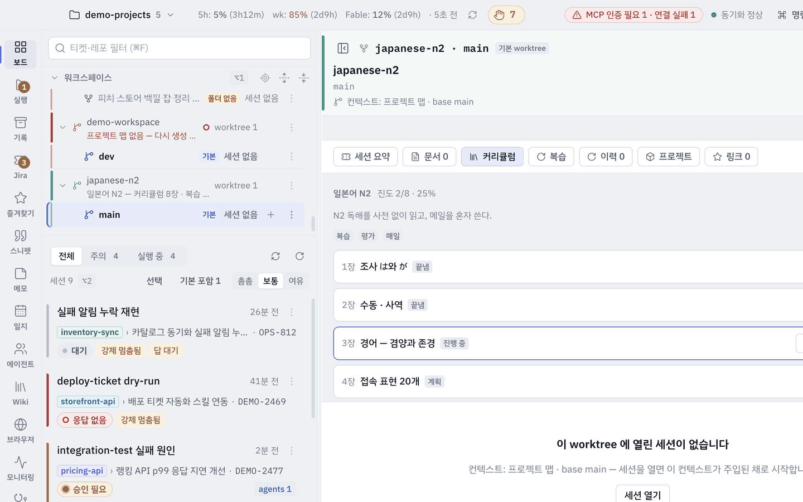
1- 1진행 중인 장
수업은 정해진 차례로 갑니다 — 지금 어디쯤인지 보입니다
한 장은 늘 같은 차례를 지납니다: 되짚기 → 오늘 할 것 → 개념 → 확인 → 실습 → 정리 → 마무리. 선생이 단계를 옮길 때마다 올리고, 커리큘럼의 그 장에 「수업 3/7 · 개념」 으로 섭니다 — 설명이 언제 끝나는지, 실습은 하는지, 지금 어디까지 왔는지를 물어보지 않아도 됩니다.
- 개념과 확인은 여러 번 오갑니다 — 한 조각 설명하고 되묻고, 또 한 조각. 막히면 앞 단계로 돌아갑니다.
- 실습 은 실습 코드 공부에만 섭니다. 어학·독서는 여섯 단계이고 「하지 않아도 되는 일」이 남은 것처럼 보이지 않습니다.
- 마무리 에서 선생이 무엇이 채워지고 무엇이 남았는지를 말합니다 — 「넘어가셔도 됩니다」는 선생이 아니라 화면이 말합니다(바로 아래).
목표 학습 시간 — 이 장은 몇 시간쯤 쓰는 게 합리적인가
장마다 목표 시간이 적힙니다(「1시간 30분」). 커리큘럼을 짤 때 AI 가 쓸 수 있는 시간을 근거로 정하고, 한 장은 보통 1~3시간입니다 — 그보다 길어지는 주제는 장을 둘로 쪼갭니다.
- 어디에 보이나 — 차례의 그 장 제목 옆 · 지금 할 일 줄(「… 를 시작하세요 · 예상 1시간 30분」) · 커리큘럼 머리의 남은 N시간. 머리의 수는 아직 끝내지 않은 장의 합이라 「오늘 어디까지 할까」에 바로 답합니다. 일부 장만 시간이 정해져 있으면 그 사실이 툴팁에 적힙니다.
- 선생이 그 시간에 분량을 맞춥니다 — 이게 이 기능의 핵심입니다. 챕터를 시작하면 선생도 목표 시간을 받고, 시작할 때 「오늘 1시간 반 정도로 봅니다」라고 말한 뒤 설명의 깊이와 실습의 크기를 거기에 맞춥니다. 넘칠 것 같으면 곁가지를 덜고, 남으면 더 깊이 들어갑니다.
- 안 정한 장에는 아무것도 서지 않습니다 — AI 가 값을 못 냈거나 옛 커리큘럼이면 그 장만 빈 채로 둡니다(「예상 0분」을 그리지 않습니다). 합계에서도 빠집니다.
여기 있는 수는 목표뿐입니다. 앱이 잴 수 있는 것은 「시작한 날부터 끝낸 날까지」인데 그건 공부한 시간이 아닙니다 — 한 장을 사흘에 걸쳐 하면 72시간이 됩니다. 틀릴 때 조용히 틀리는 숫자는 두지 않습니다. 시계는 선생이 말로 짚어 줍니다(「지금 절반쯤 왔습니다」).
목표 달성도 — 무엇을 보고 다음 장으로 넘어가나
장마다 통과 기준이 항목으로 2~4개 적혀 있습니다(「…을 할 수 있다」). 커리큘럼을 짤 때 AI 가 함께 정하고, 차례의 그 장에 「목표 3/4」 로 섭니다 — 진도(장 단위)와 달리 한 장 안에서 얼마나 왔는지를 이 수가 말합니다.
중요한 것은 누가 판정하는가입니다. 선생에게 「이 사람이 넘어갈 만한가?」를 물으면 거의 항상 그렇다고 답합니다 — 격려하는 쪽으로 기울고, 자기가 설명한 것을 상대가 이해한 것으로 셉니다. 그래서 선생은 판정하지 않습니다: 항목에 증거만 올리고, 「넘어갈 만한가」는 앱이 규칙으로 계산합니다.
- 항목마다 받을 증거가 정해져 있습니다 — 설명은 내가 자기 말로 설명한 발언(짧은 동의는 설명이 아닙니다), 적용은 내가 직접 돌려 통과한 명령이나 내가 쓴 파일(실제로 있어야 합니다), 암기는 복습 큐에서 내가 맞힌 기록입니다. 선생이 설명한 것 · 선생이 돌린 것은 증거가 아니고 앱이 거절합니다.
- 실습 전에는 「적용」이 채워지지 않습니다 — 설명을 듣고 끄덕인 것이 적용의 증거로 통과하지 않습니다. 그리고 수업이 정리(6) 에 닿기 전에는 「넘어갈 만합니다」를 아예 계산하지 않습니다.
- 끝냄 창이 평가표입니다 — 항목 · 선생이 올린 증거 원문 · 그 옆에 내가 고르는 「할 수 있다 / 아직」. 근거가 「제가 설명해 드렸습니다」 수준이면 읽고 바로 압니다.
- 내 답이 선생보다 셉니다 — 선생이 「됐다」고 올린 항목에 내가 아직 을 고르면 그 항목은 미달로 돌아가고 「넘어갈 만합니다」가 내려갑니다. 같은 버튼을 다시 누르면 「아직 안 고름」으로 되돌아갑니다.
- 두 갈래로 고릅니다 — 정리하고 넘어가기(이 장을 끝내고 다음 장까지 바로 시작합니다) · 좀 더 공부하기(수업을 개념 으로 되돌리고 남은 항목만 선생에게 넘깁니다 — 채워진 항목을 다시 듣지 않습니다).
- 그래도 끝낼 수 있습니다 — 기준을 다 못 채워도 그래도 끝냄 이 열려 있습니다(끝내는 것은 사람입니다). 그때 남은 항목은 커리큘럼 머리의 보완할 것 N 에 모이고, 다음 장 선생도 그 목록을 받습니다 — 걸리는 자리에서 한 번 짚습니다. 복습 큐와 다른 자리입니다: 복습은 외울 조각이고 이건 목표 미달입니다.
선생이 내가 하지 않은 말을 인용해 올리는 것은 앱이 가려낼 수 없습니다(대화 원문과 대조하지 않습니다). 그래서 증거를 평가표에 그대로 보입니다 — 내가 안 한 말이면 아직 을 한 번 누르면 됩니다. 「적용」 증거도 키보드를 누른 것이 누구인지는 알 수 없고, 명령이 통과했는지와 파일이 실제로 있는지까지만 검사합니다.
통과 기준이 없는 장(S481 이전에 짠 커리큘럼)에는 아무것도 늘지 않습니다 — 종전처럼 목표 한 줄로 묻습니다. 다시 짜기 를 하면 기준이 서고, 이미 쌓인 증거는 항목의 글이 같으면 그대로 남습니다.
끝내면 학습 문서가 남습니다 — 몇 달 뒤에 다시 볼 한 장
챕터를 끝냄 하면 그 장의 노트를 한 장짜리 HTML 학습 문서로 정리해 그 챕터의 문서로 등록합니다(워크플로우 study-note). 노트 md 는 공부하는 동안 쌓이는 시간순 기록이라 다시 읽기 힘든데, 이 문서는 정리된 지식입니다.
- 무엇이 들어가나 — 맨 앞에 이 장에서 할 수 있게 된 것(통과 기준 체크 목록) · 한눈에 보는 표 · 흐름과 구조를 그린 다이어그램 · 맞는 예와 틀린 예 · 자주 틀리는 자리 · 되짚기 질문(답은 접혀 있습니다) · 맨 뒤에 접어 둔 원문 노트.
- 자기 완결입니다 — CSS 가 파일 안에 들어 있어 네트워크 없이 열리고, 밝은 화면·어두운 화면 둘 다 읽힙니다. 몇 년 뒤에 열어도 깨지지 않습니다.
- 어디에 남나 — 레포에는 notes/<번호>-<제목>.html 로(커밋됩니다), 앱에는 그 챕터 상세의 문서 칩에. 앱 쪽은 사본이라 나중에 그 챕터 worktree 를 닫아도 남습니다.
- 위키에도 자동으로 들어갑니다 — 등록한 문서는 위키 트리에 맞춰 서고, HTML 은 본문까지 검색에 걸립니다. 따로 할 일은 없습니다.
- 붙들지 않습니다 — 「끝냄」을 누르면 그 자리에서 다음 일로 넘어가도 됩니다. 다 되면 우하단에서 알려 줍니다.
- 노트도 통과 기준도 비어 있으면 만들지 않습니다 — 꾸미기만 한 빈 문서는 다시 볼 가치가 없습니다.
노트 — 선생이 쓰고 사람이 읽는 파일
챕터를 시작하면 notes/<번호>-<제목>.md 가 함께 만들어집니다. 선생이 그 장에서 다룬 것·막힌 자리·복습할 것을 거기 적고, 사람이 쓴 말은 고치지 않고 아래에 덧붙입니다.
차례의 각 장에는 노트가 몇 줄 쌓였고 마지막으로 언제 손댔는지가 함께 섭니다 — 진도는 장 단위라 한 장(1~3시간)을 한참 공부해도 숫자가 꿈쩍하지 않는데, 이 줄이 「지난번에 어디까지 했나」를 화면에서 바로 말해 줍니다.
커리큘럼의 챕터 행에서 노트 를 누르면 그 파일이 코드 보기로 열립니다 — 앱이 사본을 들지 않으므로 늘 지금 내용입니다. 노트는 레포 파일이라 커밋으로 남고, 다른 기기에서도 그 브랜치를 받으면 그대로 읽힙니다.
복습 — 잊는 것이 문제인 공부
커리큘럼의 학습 방식에 복습 이 켜져 있으면 상세에 복습 칩이 하나 더 섭니다. 선생이 가르치면서 외울 것을 자동으로 큐에 넣습니다 — 사람이 카드를 적지 않습니다.
- 앞면만 보입니다. 떠올린 뒤 뒷면 보기 를 누르면 뒷면과 판정 버튼이 섭니다 — 순서가 뒤바뀌면 복습이 아니라 읽기가 됩니다.
- 기억남 이면 다음 차례가 멀어집니다 — 1 → 3 → 7 → 14 → 30일. 모름 이면 내일 다시 봅니다(처음으로 돌아갑니다). 간격이 고정이라 「왜 오늘 이게 떴지」에 답할 수 있습니다.
- 오늘 볼 것이 없으면 다음에 볼 것 N건 만 셉니다 — 아직 때가 아닌 것은 보여 주지 않습니다(그러면 복습이 전체 훑기가 됩니다).
- 이미 아는 것은 빼기 로 큐에서 없앱니다.
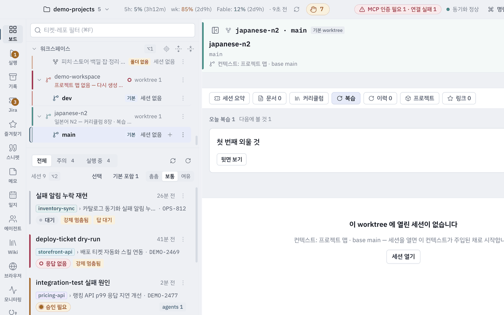
공부는 화면에서 시작합니다 — 문서를 열어 복사하지 않습니다
커리큘럼 · 차례 · 진도 · 복습은 앱이 들고 있는 데이터입니다. 공부를 시작하려고 레포 안의 .md 를 열거나, 프롬프트를 복사해 대화창에 붙이거나, 진도를 손으로 적을 필요가 없습니다 — 커리큘럼 칩의 「시작」 하나가 그 일을 합니다. 레포 파일로 가는 것은 노트와 실습 결과뿐입니다.
그래서 학습·통합 프로젝트의 세션은 커리큘럼을 알고 뜹니다 — 과목 · 진도 · 차례 · 학습 방식 · 이 자리가 몇 장인지 · 노트 경로 · 복습 큐 수가 받은 컨텍스트 에 실립니다. 커리큘럼이 아직 없으면 「커리큘럼은 저절로 짜이니 레포에 만들지 말라」고 적힙니다. 세션이 레포에 커리큘럼 문서를 또 만들면 같은 것이 두 벌이 되고, 내가 보는 화면은 앱 쪽입니다.
커리큘럼 짜기 → 한 장 시작 → 선생과 공부 → 끝냄 → 복습을 실제 대화 예시와 함께 순서대로 적은 문서가 있습니다 — docs/html/baton-study-walkthrough.html. 이 절은 기능을, 그 문서는 순서를 설명합니다.
챕터는 이름만 챕터이고 구조는 과업 worktree 와 같습니다 — 세션·문서·변경·커밋이 그 자리에 그대로 쌓입니다. 선생은 notes/ 와 그 장의 실습 파일만 만지고, 커밋은 사람이 말할 때만 합니다.
프로젝트 그룹 — 기획·학습과 개발을 한 자리에#
레포(프로젝트) 자체를 사람이 정한 프로젝트 그룹으로 묶습니다. worktree 그룹과 담는 것이 다릅니다 — 저건 과업(worktree)을 모으고, 이건 레포를 모읍니다. 기획 프로젝트와 그 결과를 구현하는 개발 프로젝트처럼 이어지는 일을 한 자리에서 보려고 씁니다(프로젝트 타입).
- 워크스페이스 행의 ⋯ › 프로젝트 그룹 만들기 — 이름을 넣고 만들기. 링크 칸은 없습니다(그건 에픽에서 온 worktree 그룹의 칸입니다).
- 넣기 — 프로젝트 행을 그룹 행 위로 끌어다 놓습니다(그룹 안의 아무 행이어도 됩니다). 놓기 전에 「그룹 이름」에 넣기 딱지가 그 행에 서니 그 말을 보고 손을 떼면 됩니다. 행 ⋯ › 프로젝트 그룹으로 이동 도 같은 일을 하고, 맨 끝 새 프로젝트 그룹 만들기… 는 만들면서 바로 넣습니다. 같은 워크스페이스의 그룹만 — 묶여도 어느 워크스페이스의 레포인지는 트리 구조로 남습니다.
- 빼기 — 그룹 밖(묶이지 않은 프로젝트 행 · 워크스페이스 행)에 끌어다 놓거나 ⌥⌫, 또는 행 메뉴의 프로젝트 그룹에서 빼기. 워크스페이스 아래 제자리로 돌아갑니다.
- 그룹에 든 프로젝트는 그룹 안에만 섭니다(워크스페이스 바로 아래에는 다시 그리지 않습니다). 프로젝트 수(프로젝트 N)는 묶여도 그대로 셉니다.
- 그룹 세션 — 그룹 행의 +(또는 행 메뉴 › 세션 추가)로 묶음 전체를 보는 세션을 엽니다. 구성원이 하나도 없어도 열립니다 — 그룹부터 만들고 세션에서 무엇을 묶을지 정하는 순서도 됩니다.
- 어디서 도나 — 이 세션은 구성원 레포가 아니라 그룹 전용의 빈 작업 폴더에서 뜹니다(
~/.baton/work/groups/<그룹id>). 묶음을 보는 자리가 한 구성원 안에 갇히지 않게, 그리고 거기서 실수로 코드를 고치는 일이 없게 하기 위함입니다. 구성원 레포는 절대 경로로 읽습니다(맥락에 경로가 실립니다 ·git -C <경로>). - 무엇을 맥락으로 받나 — 구성원 레포의 맵: 이름 · 타입 · 경로 · base 브랜치 · 맵 한 줄 · 역할 코멘트 · 테스트/빌드 명령, 그리고 이 그룹에 붙인 문서. 맵이 아직 돌지 않은 레포는 그렇다고 적힙니다(빈 것과 안 실린 것은 다릅니다).
- 일은 각 레포의 세션이 합니다 — 「이 기획대로 구현은 저쪽 개발 프로젝트에서 해줘」처럼 말하면 그 프로젝트의 세션에 요청을 보냅니다. 그룹 세션은 조회하고 파악해 통합해서 알려 주고, 고치는 일을 넘기는 자리입니다.
- 문서·링크를 이 자리에 붙입니다 — 행 메뉴 › 문서 추가, 또는 그룹 세션 상세의 문서 칩. 묶음 전체의 글(1-1 기획서 · 설계서)이 여기 옵니다. 구성원 프로젝트의 문서는 각 프로젝트 자리에 그대로 있습니다. 성과는 과업(worktree) 단위라 이 자리에 서지 않습니다.
- 진행상황으로 묶음 전체를 한 장에 봅니다 — 그룹 행 ⋯(또는 우클릭) › 진행상황, 또는 그룹 세션 상세의 진행상황 칩. 세션을 열지 않아도 행 메뉴에서 바로 볼 수 있습니다. 거의 화면 가득 찬 팝업으로 열리고, 그림은 기본이 맞춤(자리에 꼭 맞게 키우거나 줄임)입니다 — 위의 − / + / 맞춤 / 100% 로 배율을 바꿉니다. 구성원 worktree 가 단계(대기 · 파악 · 구현 · 리뷰 · 반영 · 완료)와 의존 관계로 그려집니다. 보기는 둘입니다: 의존(무엇이 무엇을 막고 있나)과 단계(지금 무엇이 어디까지 왔나 · 빈 단계는 좁은 띠로 줄어듭니다).
- 선 읽는 법 — 그림 위 범례에 늘 적혀 있습니다. 점이 찍힌 끝이 선행(먼저 끝나야 하는 쪽), 화살촉이 후행(기다리는 쪽)입니다. 실선 = 확정된 의존(사람이 긋거나 Jira 에서 왔거나 승인한 것), 주황 점선 = AI 추천안(승인 대기), 빨간 점선 = 순환(서로를 기다림 — 하나를 지워야 풀림). 카드 왼쪽 띠 색은 단계, 테두리 색은 상태(승인 기다림 · 검사 실패 · 차단 · 다음 차례 · 움직임)입니다.
- 어느 노드에 붙은 선인지 — 노드나 선에 포인터를 올리면 거기 이어진 선과 노드만 남고 나머지는 흐려집니다. 선은 카드 테두리에 붙고, 한 카드에 여럿이 붙으면 세로로 펼쳐져 따로 나갑니다.
- 선을 누르면 그림 위 막대에 양 끝 이름(「A → B」)과 어디서 온 것인지(사람 · Jira · AI) · 사유가 보입니다. 추천안이면 승인 · 거절, 그 밖이면 지우기를 거기서 누릅니다(빈 자리를 누르거나 ✕ 로 풉니다).
- 노드를 끌어 다른 노드에 놓으면 선행·후행 간선을 긋고, 노드의 ↗ 로 그 worktree 로 갑니다.
- 이름 변경 은 행에서 바로(Enter), 그룹 편집 은 창에서.
- 그룹 삭제 는 묶음만 풀고 안에 있던 것은 제자리로 돌려보냅니다: 프로젝트는 워크스페이스 아래로, 문서·링크는 워크스페이스 자리로 옮겨져 거기서 계속 열립니다(사라지지 않습니다). 그룹 세션은 닫힙니다 — 돌던 프로세스가 내려가고, 대화는 기록 › 닫힌 세션에 그룹 이름과 함께 남아 되살릴 수 있습니다.
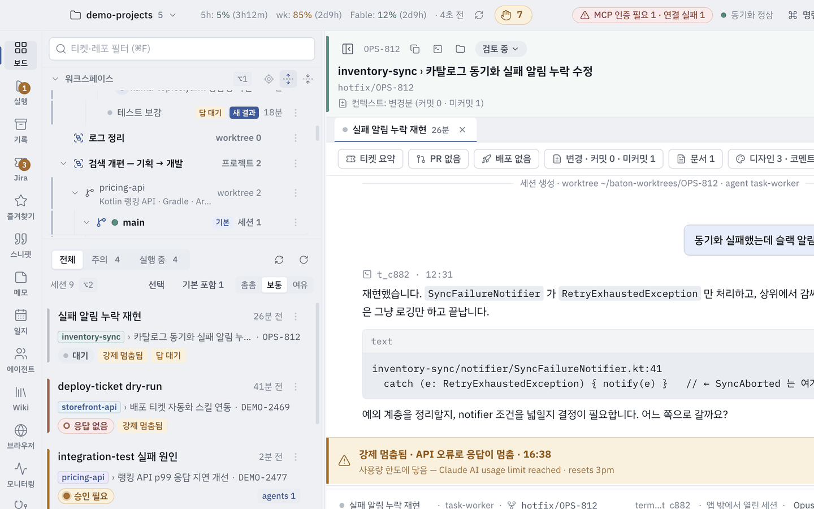
그룹 행끼리는 끌어서 순서를 바꿉니다(worktree 그룹과 같습니다). 프로젝트 그룹은 worktree 그룹 뒤, 묶이지 않은 프로젝트 앞에 섭니다. 두 묶음은 섞이지 않습니다 — 프로젝트를 worktree 그룹에 놓거나 worktree 를 프로젝트 그룹에 놓으면 아무 표시도 서지 않습니다(담는 것이 다릅니다). 같은 자리의 프로젝트끼리 끌면 순서가 바뀝니다 — 끌어 놓은 행에 어떤 딱지가 섰는지가 뜻을 가릅니다.
worktree 만들기#
레포에 브랜치를 파고 worktree(과업 단위 작업 폴더)를 만듭니다. 티켓을 넣으면 그 내용을 읽은 세션까지 열립니다.
- 트리에서 프로젝트 행의 ⋯ › worktree 만들기.
- 브랜치 이름과(선택) Jira 티켓 키를 넣습니다. 그룹 칸을 고르면 worktree 가 처음부터 그 worktree 그룹 안에 생깁니다(비우면 프로젝트 아래).
- 확인하면 worktree 가 생기고 트리에 나타납니다. 티켓을 넣었다면 세션이 그 티켓을 읽고 기다립니다.
- 만드는 데 시간이 걸리므로 다른 일을 계속하면 됩니다 — 다 되면 보던 화면은 그대로 둔 채 우하단 토스트(워크트리로 이동 · 세션으로)와 상단바 답 대기 배지 가 길을 내밉니다.
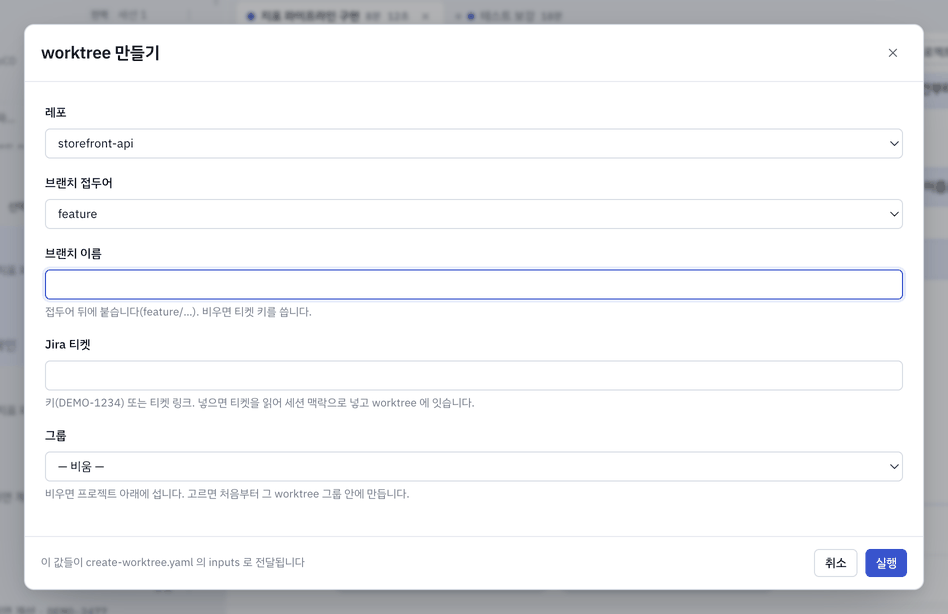
그룹 안의 레포 노드에서 ⋯ › worktree 만들기(또는 ⌘N)를 누르면 그룹 칸이 그 그룹으로 채워져 뜹니다 — 만든 worktree 를 다시 끌어다 넣을 필요가 없습니다. 칸을 비우면 종전처럼 프로젝트 아래에 섭니다.
Jira 티켓을 새로 만들며 시작하려면 실행의 새 작업 시작, 이미 있는 티켓이면 작업 시작 워크플로우를 씁니다.
티켓 칸은 비워도 됩니다 — 브랜치 이름만으로 worktree 와 세션이 열립니다. Jira 연동을 꺼 둔 설치에서도 이 메뉴는 그대로 있습니다(로컬 git 만으로 끝나는 일이기 때문입니다). 그때는 입력 창에 「꺼진 연동: Jira — 그 단계는 건너뛰고 나머지는 그대로 실행됩니다」 가 한 줄 서고, 티켓 연결만 빠집니다.
작업 목록(세션 카드)#
세션마다 카드 한 장입니다. 카드에는 세션 이름 · 프로젝트 · 티켓 · 상태(승인 필요 · 실행 중 · 응답 없음 · 대기) · 서브에이전트가 보입니다.
- 탭 주의 는 내가 손을 대야 하는 카드만 모읍니다 — 승인 필요 · 응답 없음 · 강제 멈춤됨 · 답 대기 · 아직 안 본 새 결과 · 쓰다 만 작성 중.
- 탭 만료 는 48시간 동안 아무 일이 없어 앱이 프로세스를 내린 세션만 모읍니다. 닫힌 것이 아니라 대화와 자리는 그대로이고, 말을 걸거나 「이어가기」를 누르면 이어서 진행하며 이 탭에서 빠집니다.
- 탭마다 그 칸에 몇 개가 있는지 숫자 가 함께 붙습니다. 0이면 숫자가 서지 않습니다. 전체 의 숫자는 지금 목록에 보이는 세션 수입니다(기본 포함 을 끄면 줄기 세션을 뺍니다). 주의 · 실행 중 · 만료 는 기본 포함 을 꺼 둬도 그 세션들까지 세므로, 가려 둔 줄기 세션이 승인을 기다리는 것도 숫자로 보입니다.
- 기본 포함 을 켜면 base worktree(main 등)의 세션도 보입니다. 숫자는 서 있는데 목록이 비었다면 그 세션이 가려 둔 base 에 있는 것이라, 빈 자리가 「기본 포함」을 켜면 보입니다 라고 알려 줍니다.
- 목록은 어떤 세션도 빠뜨리지 않습니다 — worktree 세션이 먼저 서고, 그 아래로 그룹 세션(그룹 안 worktree 를 아우르는 자리) · 워크스페이스 세션 · 분류 안 됨 묶음이 차례로 섭니다.
- 선택 으로 여러 카드를 골라 한 번에 닫거나(정리), 고른 세션 전부에 같은 요청을 한 번에 넣습니다(요청 보내기 — 다른 세션에 요청 보내기).
- 목록은 열려 있는 세션 전부입니다 — 위 트리에서 행을 옮기거나 눌러도 목록은 바뀌지 않습니다.
- 세션 탭 · ⌘K · 알림 · 트리에서 세션을 고르면 목록이 그 카드가 보이는 자리로 스크롤됩니다. 이미 보이면 움직이지 않고, 키보드 포커스는 쓰던 자리에 그대로 둡니다.
- 한 레포만 보려면 ⌘K 에서 프로젝트를 고릅니다. 목록 머리에 그 레포 칩이 서고, 칩 옆 ✕ 로 풉니다.
- 작성 중 딱지 — 입력창에 아직 보내지 않은 글이 남아 있는 세션에 붙습니다(공백만 있으면 붙지 않습니다). 보내거나 지워서 칸이 비면 딱지는 곧바로 사라집니다. 다른 화면에 다녀와도 초안은 남아 있습니다.
- 새 결과 딱지 — 아직 보지 않은 세션 결과가 있으면 붙습니다. 그 세션을 열어 결과를 보면 사라집니다.
- 강제 멈춤됨 딱지 — 세션이 내 뜻과 무관하게 멈췄을 때 붙습니다: 응답 도중 앱이 꺼짐 · API 오류(사용량 한도 · 인증 · 서버 과부하) · 인터넷 끊김 · 30분 넘게 소식 없음 · 세션 엔진이 도중에 멈춤. 딱지에 마우스를 올리면 사유와 시각이 보입니다. 내가 ⌃C 로 끊었거나, 정상으로 끝났거나, 내 답(승인 · 질문)을 기다리는 세션에는 붙지 않습니다.
- 승인 필요 세션은 카드 셋째 줄의 승인 필요 표시(주황색)로 알 수 있어 따로 딱지를 더하지 않았습니다. 도구 승인과 모델이 내민 질문 카드가 모두 여기 듭니다.
- 답 대기 딱지 — Claude 가 선택지 카드 없이 글로만 묻고 멈춘 세션에 붙습니다(예: 「고쳐도 될까요?」로 답이 끝남). 상태는 대기 그대로지만 나를 기다리는 세션이라 주의 탭에 함께 섭니다. 상단바 답을 기다리는 세션 목록의 「답을 기다리는 대화」와 같은 세션입니다.
- 그 세션에 한 번 답을 보내면 딱지가 곧바로 빠집니다 — Claude 의 답이 끝날 때까지 기다리지 않습니다. 다른 기기(원격 제어)에서 보낸 답도 같습니다.
- 세션을 열어 읽기만 해서는 빠지지 않습니다. 질문이 아니었으면 상단바 목록의 숨기기 로도 뺄 수 있습니다.
- 워크플로우가 그 세션에 넣은 말은 내 답으로 치지 않습니다 — 딱지가 남습니다.
- Claude 가 다음 답에서 또 글로 물으면 새 질문이라 딱지가 다시 붙습니다.
카드가 서는 순서
내가 마지막으로 연 세션이 맨 위입니다. 그 아래로 그전에 열었던 순서대로 내려갑니다 — 오늘 손댄 세션들이 자연히 위쪽에 모입니다. 아직 한 번도 열지 않은 세션은 마지막 대화가 최근인 것부터 섭니다.
- 딱지는 자리를 바꾸지 않습니다. 「작성 중」·「강제 멈춤됨」·「승인 필요」·「답 대기」·「새 결과」가 붙어도 카드는 있던 자리에 그대로 있습니다. 그런 세션을 한자리에 모아 보려면 주의 탭을 누르세요 — 그것이 이 탭의 일입니다.
- 보는 동안 목록은 움직이지 않습니다. 카드를 누르거나 ↑↓ 로 훑는 동안 줄이 다시 서면 방금 누른 카드가 눈앞에서 사라지므로, 순서는 그 자리에 머무는 동안 고정됩니다. 내가 옮겨 다닌 자취는 세션을 열거나 닫을 때 · 탭이나 검색어를 바꿀 때 · 다른 화면에 다녀왔을 때 반영됩니다.
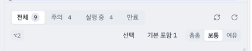
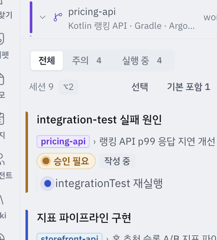
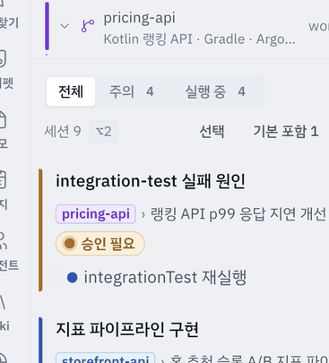
1- 1답 대기
강제 멈춤된 세션 처리하기
- 「강제 멈춤됨」 카드를 눌러 세션을 엽니다. 입력창 위에 강제 멈춤됨 · 사유 · 시각 배너가 서고, 대화 끝에는 무엇이 끊겼는지 적힌 카드가 있습니다.
- 다시 시도(API 오류 · 인터넷 끊김) 또는 이어가기(앱 종료 · 엔진 멈춤 · 소식 없음) — 대화를 되찾아 세션을 다시 띄웁니다. 아무 일도 하기 전에 멈춘 턴이면 방금 보낸 말을 다시 보내고, 일을 하던 중이었으면 「끊긴 곳부터 이어서」를 보냅니다.
- 따로 처리했거나 이어갈 필요가 없으면 확인 — 딱지만 내립니다. 새로 말을 걸거나 세션을 닫아도 딱지는 내려갑니다. 30분 넘게 소식이 없던 세션은 소식이 오면 저절로 풀립니다.
- 인증 실패로 멈춘 것이면 배너에 「Claude 로그인」 이 하나 더 섭니다 — 눌러서 앱 안에서 다시 로그인 한 뒤 다시 시도 하면 이어집니다. 사용량 한도 · 서버 과부하에는 이 버튼이 서지 않습니다(로그인으로 풀리는 일이 아닙니다).
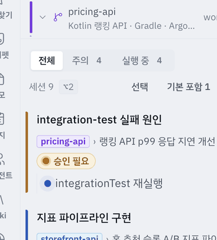
1- 1강제 멈춤됨
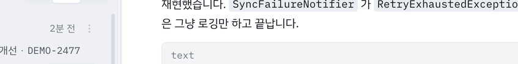
1- 1다시 시도
앱 종료로 끊긴 세션은 실행 화면의 앱 종료로 끊긴 일 창에도 있습니다. 어느 쪽에서 이어가기 · 필요없음 · 확인을 해도 두 곳에서 함께 빠집니다. API 오류 · 인터넷 끊김 · 소식 없음 · 엔진 멈춤은 그 창에 없고, 세션 목록과 대화창에서만 다룹니다.
이름 고치기
- 카드를 더블클릭합니다(키보드로는 카드에서 F2). 세션 이름 자리가 입력칸이 되고, 자리가 좁아
…로 줄어 보이던 이름도 입력칸에는 전체가 들어 있습니다. - 새 이름을 치고 Enter — 탭 · 트리 · 목록이 한꺼번에 새 이름을 씁니다. Esc 는 저장하지 않고, 다른 곳을 누르면 저장합니다.
새 세션은 Claude - 10-09 21:00 으로 열리지만, 첫 요청을 보내면 그 요청을 보고 이름이 바뀝니다. 두 걸음으로 갑니다:
- 곧바로 첫 요청의 한 줄이 이름이 됩니다(말끝 「~해줘」와 링크·장식을 떼고).
- 몇 초 뒤 AI 가 「무슨 일을 하는 자리인가」를 10글자 미만으로 지어 그 이름을 덮습니다 —
세션 TTL·맵 자동갱신처럼 됩니다. 트리 행과 탭은 폭이 좁아 긴 이름은 앞머리만 보이는데, 짧은 이름이면 다섯 개가 나란히 서도 어느 것이 무엇인지 바로 읽힙니다.
AI 가 답하지 않거나 엉뚱하게 길게 답하면 1번 이름이 그대로 남습니다 — 비어 있는 이름이 되는 일은 없습니다. 그 사이에 직접 이름을 지었으면 그것이 이깁니다(손으로 지은 이름은 자동 이름이 덮지 않습니다).
키보드와 행 메뉴
⌥2 로 목록을 잡은 뒤 ↑↓ 로 카드를 옮기면 그 세션이 바로 열립니다. Enter 는 손이 선 카드를 엽니다. →(또는 카드 오른쪽 위의 ⋯ 버튼 · ⇧F10)는 그 카드의 메뉴를 엽니다. 메뉴 머리에 세션 이름이 끝까지 보이고, ← 나 Esc 로 닫으면 손은 그 카드로 돌아옵니다.
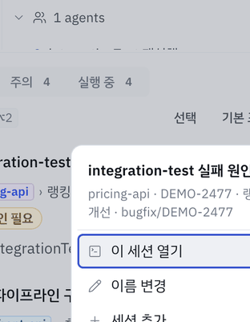
| 메뉴 | 하는 일 |
|---|---|
| 이 세션 열기 | 카드를 누른 것과 같습니다(Enter) |
| 이름 변경 | 카드의 이름 자리가 입력칸이 됩니다(더블클릭과 같음) |
| 세션 추가 · 세션 추가 · 맥락 없이 | 이 세션의 worktree 에 세션을 하나 더 엽니다(분류 안 됨 세션에는 없음) |
| 골라서 정리 | 선택 을 켜고 이 카드를 먼저 골라 둡니다 — 더 골라 정리 로 한 번에 닫습니다 |
| 사용 토큰 보기 | 이 세션이 쓴 토큰과 추정 비용을 봅니다 — 트리 세션 행 메뉴와 같은 창입니다(토큰 사용량) |
| 세션 닫기 | 확인을 거쳐 이 세션을 닫습니다. 대화는 기록 › 닫힌 세션에 남고 되살릴 수 있습니다 |
세션이 무슨 일을 하던 중이든 닫기는 그 자리에서 끝냅니다 — 돌던 응답은 끊기고(그만큼 토큰도 더 쓰지 않습니다), 뒤늦게 도착하는 답 · 진행 · 도구 승인 요청은 버려집니다. 닫은 탭이 저절로 다시 서지 않습니다. 그 대화를 이어가려면 기록 › 닫힌 세션 에서 되살리기 로 새 세션을 엽니다.
선택 이 켜져 있는 동안 카드는 체크박스라, 더블클릭·→·⋯ 버튼이 이름 고치기와 메뉴를 열지 않습니다.
이틀 쉬면 프로세스만 내려갑니다 — 「쉼」
세션 하나가 Claude 프로세스 하나입니다(한 개에 400MB 쯤). 열어 두고 안 쓰는 세션이 쌓이면 이 컴퓨터가 먼저 느려지므로, 48시간 동안 아무 말도 오가지 않은 세션은 앱이 프로세스를 내립니다. 딱지는 「쉼」 이 됩니다.
- 닫는 것이 아닙니다. 트리와 작업 목록에 그 자리에 그대로 있고, 대화도 전부 남아 있습니다 — 사라지는 것은 메모리 위의 프로세스뿐입니다.
- 그냥 말을 걸면 이어집니다. 입력창에 쓰고 보내면 세션이 다시 뜨면서 그 대화를 되찾아(resume) 이어서 답합니다. 대화 끝의 「이어가기」 를 눌러도 같습니다(말을 걸 것이 아직 없을 때 쓰세요).
- 일하는 중 · 승인 대기 세션은 내려가지 않습니다. 워크플로우가 몰고 있는 세션도 그대로 둡니다. 「쉼」이 되는 것은 이틀 내내 아무 일도 없던 자리뿐입니다.
- 경고가 아닙니다. 「쉼」 카드는 「강제 멈춤됨」과 달리 평상색으로 섭니다 — 고칠 것이 없다는 뜻입니다.
앱이 뒤에서 여는 세션(워크플로우 단계 · 자동 사냥 · 프로젝트 맵)은 기준이 2시간이고, 그쪽은 닫습니다 — 사람이 볼 자리가 아니기 때문입니다. 「쉼」은 사람이 직접 연 세션에만 붙습니다.
티켓·레포 필터 (⌘F)#
트리와 작업 목록을 티켓 키·레포 이름으로 좁힙니다.
- 손이 트리·목록에 있을 때 ⌘F(또는 필터 칸을 누릅니다).
- 티켓 키나 레포 이름 일부를 칩니다 — 트리가 즉시 좁혀집니다.
- 칸을 비우면 전체가 돌아옵니다 — Esc 로도 한 번에 지웁니다(손은 칸에 남습니다).
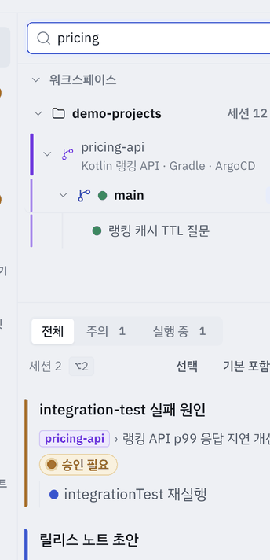
1- 1필터
손이 대화(로그·입력창) 에 있을 때 ⌘F 는 필터가 아니라 대화 안 찾기 입니다.
워크스페이스 전환 · 추가#
상단바 왼쪽의 워크스페이스 이름을 누르면 전환 메뉴가 뜹니다.
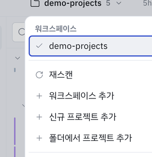
- 재스캔 — 워크스페이스 폴더에서 새 레포를 감지해 「프로젝트 나중에 추가」 팝업을 엽니다.
- 워크스페이스 추가 — 폴더를 고르면 하위 git 레포를 찾아 프로젝트로 등록하고 프로젝트 맵을 만듭니다.
- 신규 프로젝트 추가 — 레포를 새로 만듭니다. 아래 절을 보세요.
- 폴더에서 프로젝트 추가 — 워크스페이스 밖의 폴더 하나를 프로젝트로 붙입니다(이미 있는 폴더).
- git 레포가 아닌 폴더도 됩니다 — 목록에 git 없음 딱지로 뜨고 꺼진 채입니다. 켜서 추가하면 앱이 그 자리에서 git init 합니다(빈 첫 커밋까지). 터미널을 따로 열 필요가 없습니다.
- 체크한 폴더는 타입도 함께 정합니다 — 체크를 켜면 그 행 아래로 개발 · 학습 · 기획 · 통합 고르개가 펴집니다(기본 개발). 타입에 따라 보드 상세의 메뉴가 달라지고, 등록한 뒤에는 바꿀 수 없습니다 — 체크하는 그때가 유일한 기회입니다. 이미 등록된 행에는 그 타입이 딱지로 서 있습니다.
- 삭제 — 앱 DB 에서만 지웁니다. 디스크의 레포는 그대로입니다.
프로젝트 타입 — 개발 · 학습 · 기획 · 통합#
프로젝트를 만들거나 붙일 때 무엇을 하는 자리인가 를 고릅니다. 타입에 따라 보드 상세의 메뉴(칩 줄) 와 쓸 수 있는 워크플로우, 그리고 AI 의 역할 이 달라집니다. 대화하고 일을 시키는 방식은 어느 타입이든 같습니다.
| 타입 | 무엇을 하는 자리 | 상세에 서는 메뉴 |
|---|---|---|
| 개발 | 코드를 고치는 레포 — 지금까지의 프로젝트가 전부 이것입니다 | PR · 변경 · 디자인 · 성과 |
| 학습 | AI 선생님과 공부하는 자리. 커리큘럼을 짜고 챕터로 나눠 나갑니다 | 커리큘럼 · 진도 · 복습 · 학습 기록 · 인계 |
| 기획 | 만들기 전에 정하는 자리. 문제 정의부터 기능 명세 · 프로토타입까지 | 기획 · 디자인 · 인계 |
| 통합 | 학습 · 기획 · 개발을 한 레포에서 | 전부 |
어느 타입이든 요약 · 문서 · 이력 · 링크 · 프로젝트 는 늘 섭니다.
칩 줄은 가로로 스크롤합니다 — 창이 좁으면 밀어서 봅니다. 칩을 끌어 놓으면 순서가 바뀌고 그대로 기억됩니다(대화창 아래 워크플로우 칩과 같습니다). ⌘⌃1~⌘⌃9 는 늘 보이는 순서를 따릅니다.
등록한 뒤에는 고정입니다 — 쌓인 것(커리큘럼 · 기획 단계 · 과업)이 어느 쪽 뜻으로 읽히는지 알 수 없게 되기 때문입니다. 다음 단계로 넘어가려면 인계 하세요(기획이 끝나면 그 내용을 들고 개발 프로젝트로). 기존 프로젝트는 전부 개발 입니다.
타입은 프로젝트가 들어오는 모든 자리에서 고릅니다 — 신규 프로젝트 추가 · 폴더에서 프로젝트 추가 · 워크스페이스 추가 · 프로젝트 추가(재스캔). 뒤의 두 자리는 한 번에 여러 개를 붙이므로 체크를 켠 폴더마다 고르개가 그 아래 펴집니다. 기본은 개발 이고, 이미 등록된 행에는 그 프로젝트의 타입이 딱지로 서 있습니다(읽기 전용).
신규 프로젝트 추가#
아직 폴더도 없는 프로젝트를 여기서 시작합니다(폴더만 있는 경우는 프로젝트 추가에서 그대로 고르면 됩니다 — git init 은 앱이 합니다). 상단바 워크스페이스 이름 › 신규 프로젝트 추가(트리 맨 아래 프로젝트 그룹의 ⋯ 에도 있습니다).
- 프로젝트 타입 을 고릅니다 — 개발 · 학습 · 기획 · 통합. 타입에 따라 보드 상세의 메뉴가 달라집니다. 등록한 뒤에는 바꿀 수 없습니다.
- 저장할 위치 를 고릅니다. 고른 위치가 소속을 정합니다 — 워크스페이스 폴더를 고르면 그 워크스페이스에, 그 밖이면 트리 맨 아래 프로젝트 그룹에 붙습니다.
- 이름 은 비워 둘 수 있습니다. 비운 채 누르면 아래 내용으로 이름을 제안해 칸에 채우고 멈춥니다 — 폴더 이름이 되는 값이라 한 번 보고 누르게 합니다. AI 추천 으로 먼저 받아 볼 수도 있고, 받은 이름은 고쳐도 됩니다.
- 무엇을 만드나 에 적은 글대로 만든 뒤 레포를 채웁니다(README 만 둘지, 언어별 최소 뼈대까지 세울지는 내용에 따라 정합니다). 비우면 폴더와 git init 까지만 합니다.
- 학습 타입을 골랐으면 이 칸은 「무엇을 공부하나」 입니다 — 적은 글로 커리큘럼을 저절로 짭니다(첫 줄이 과목명이고, 전문은 수준·목표로 함께 들어갑니다). 레포에는 아무것도 채우지 않습니다 — 커리큘럼은 앱의 데이터이고, 레포로 가는 것은 챕터의 노트·실습뿐입니다. 비워도 됩니다(프로젝트 이름으로 짭니다).
- 만들고 맵 생성 — 폴더 · git init · 등록은 누르는 즉시 끝나고 트리에 올라옵니다. 뼈대와 프로젝트 맵은 그 뒤 실행으로 이어지며, 이 창을 닫아도 계속됩니다. 학습 프로젝트면 이 자리에 커리큘럼 짜기 진행이 섭니다 — 끝나면 상세의 커리큘럼 에 챕터 차례가 서 있습니다.

내용을 적었으면 그 레포에 세션이 하나 열린 채 남습니다 — 「테스트도 하나 추가해줘」처럼 이어서 시키면 됩니다. 설치가 필요한 것(npm install 등)은 일부러 돌리지 않고 README.md 에 적어 둡니다.
worktree 닫기 — 기록으로 옮기기#
과업이 끝난 worktree 는 지우지 않고 기록 으로 옮깁니다. 대화·문서·산출물·성과는 기록에 남고 디스크의 worktree 폴더만 정리됩니다.
- 트리 worktree 행 ⋯ 또는 상세 머리의 ⋯ › worktree 닫기.
- 창이 열리면 닫을 수 있는지 먼저 확인합니다. 막히면 상자에 이유와 파일이 뜨고 닫고 보관이 잠깁니다 — 아직 아무것도 닫지 않았습니다.
- 커밋하지 않은 변경 때문에 막혔으면 그 상자에서 강제로 닫기 를 고를 수 있습니다(아래).
- 그 밖의 이유(레포의 기본 체크아웃 · 이미 기록으로 옮긴 자리 · 어느 레포인지 모르는 자리)로 막혔으면 넘길 길이 없습니다. 창을 닫고 그 worktree 에서 정리한 뒤(⋯ › git 상태) 다시 열거나 다시 확인을 누릅니다.
- 요약을 만들지 고르고 확인합니다. 요약은 뒤에서 만들어지므로 창을 닫아도 됩니다.
「남는 것」 목록 맨 끝에 사용 토큰 한 줄이 섭니다 — 이 과업에 든 토큰과 추정 비용입니다. 창이 열리는 순간 이 worktree 세션들의 대화 기록을 읽어 합계를 확정하므로, 닫은 뒤 세션이 정리되어도 토큰 통계에 그대로 남습니다.
닫는 동안 트리의 그 worktree 행에는 제거중 딱지가 붙습니다(요약을 만드는 동안 포함). 창을 닫아도 딱지는 남아 있어 어느 자리가 지워지고 있는지 보입니다. 닫기가 끝나면 행이 기록으로 옮겨지고, 실패하거나 중단하면 딱지가 사라집니다.
커밋하지 않은 변경이 막을 때 — 강제로 닫기
정리하지 못한 파일이 남아 worktree 가 걷히지 않을 때, 그 상자에서 무엇을 할지 골라 그대로 닫을 수 있습니다. 고를 것은 셋이고 기본은 닫지 않는 쪽입니다 — 고르기 전에는 닫고 보관이 잠겨 있습니다.
| 고르는 것 | 무엇이 일어나나 |
|---|---|
| 정리한 뒤 닫기 (기본) | 닫지 않습니다. 창을 닫고 그 worktree 에서 커밋하거나 치운 뒤 다시 확인 을 누릅니다. |
| 변경을 기록에 남기고 강제로 닫기 | 지우기 전에 변경된 파일들을 기록의 산출물로 복사한 뒤 닫습니다. 기록 › 그 과업 › 산출물의 out/discarded/ 에 같은 경로로 들어 있고, out/discarded.md 가 무엇을 남겼고 무엇을 못 남겼는지 적습니다. git 이력에는 없습니다 — 되살리려면 그 파일을 레포로 다시 복사합니다. |
| 변경을 버리고 강제로 닫기 | 그대로 지웁니다. 되돌릴 수 없습니다. |
버튼의 문구가 고른 것을 그대로 말합니다(남기고 강제로 닫기 · 버리고 강제로 닫기) — 무엇을 누르는지 버튼에서 읽힙니다. 삭제된 파일은 남길 내용이 없어 목록에만 적히고, 아주 큰 파일(5MB 넘음 · 합계 50MB 넘음)도 기록이 부풀지 않게 목록에만 적힙니다.
레포의 기본 체크아웃, 이미 기록으로 옮긴 자리, 어느 레포의 자리인지 모르는 경우는 강제로도 닫히지 않습니다 — git 이 거부하기 때문입니다. 그래서 그런 막음에는 고를 것을 아예 내지 않습니다.
세션에 말로 시킬 때도 같습니다 — 워크플로우 의 worktree 닫기 에 커밋하지 않은 변경이 있어도 닫기 · 버리는 변경을 기록에 남기기 두 칸이 있습니다.
닫는 도중 폴더를 지우지 못하면(잠긴 worktree 등) 보관을 되돌립니다. worktree 는 목록에 그대로 남아 있으니 알림의 사유를 확인하고 다시 닫으면 됩니다. 앱이 남긴 .baton/ 파일(요약 등)은 막는 이유가 아닙니다 — 기록으로 옮긴 뒤 함께 정리됩니다. 폴더가 이미 없는 worktree 는 기록만 남깁니다.
폴더 없는 worktree 를 한 번에 정리하기
터미널에서 폴더를 지웠거나 다른 도구가 걷어 간 worktree 는 앱이 말없이 보관하지 않습니다 — 트리에 폴더 없음 딱지를 달고 그대로 세워 둡니다(지운 것이 기록으로 넘어가 버리면 왜 사라졌는지 알 수 없기 때문입니다). 그래서 그런 자리가 쌓입니다. 한 번에 걷는 길이 둘 있습니다.
- 프로젝트 행 ⋯ › 폴더 없는 worktree 정리 — 그 레포의 자리만. 정리할 것이 없으면 항목이 아예 없고, 있으면 옆에 그 수가 적힙니다.
- 동기화 알림의 「정리」 — 보드 머리의 동기화 를 누르면 「폴더가 없는 worktree N개」 알림이 뜨고, 거기 정리 버튼이 붙습니다. 이쪽은 모든 레포가 대상입니다.
- 세션에 말로 — 「폴더 없는 워크트리 정리해줘」. 세션이 먼저 대상을 세어 보여 주고, 치우는 것은 실행 카드 로 승인을 받습니다(AI 에게 시키기). 원격에서도 같습니다 — 워크플로우 목록의 폴더 없는 worktree 정리 가 같은 일입니다.
창이 열리면 무엇을 닫는지 다시 세어 보여 줍니다 — 자리 목록과, 기록에 남을 대화 · 링크·문서 수입니다. 지울 폴더는 없습니다(이미 사라졌습니다). 브랜치는 그대로 남아 같은 브랜치로 언제든 다시 만들 수 있습니다.
정리 를 누르면 창은 바로 닫히고 일은 뒤에서 계속됩니다 — 자리마다 닫기 와 똑같은 경로를 타므로(보관 · 사용 토큰 확정) 자리 수만큼 시간이 걸립니다. 끝나면 알림이 몇 개를 옮겼는지 말합니다. 어떤 자리가 막히면 그 자리만 트리에 그대로 남고 나머지는 옮겨집니다 — 알림에 사유가 뜹니다.
그룹 닫기 — 묶음째 기록으로#
에픽 하나가 끝나면 그 그룹의 worktree 를 하나씩 닫지 않고 한 번에 옮깁니다. 그룹 행 ⋯ › worktree 모두 닫기.
창이 열리면 무엇을 닫는지 세어 보여 줍니다 — 자리 목록(폴더 없음 · 변경 N개 표시), 기록에 남을 대화 수, 그리고 고를 것 셋입니다.
| 고르는 것 | 기본 | 무엇이 일어나나 |
|---|---|---|
| 요약 생성 | 꺼짐 | 켜면 세션 하나가 자리들을 차례로 훑어 각 자리의 요약을 남깁니다. 자리마다 세션을 열지 않습니다 — 그게 느려지는 원인이었습니다. 자리 수만큼 오래 걸리므로 기본은 꺼져 있습니다. |
| 커밋하지 않은 변경 처리 | 그 자리는 남겨 두기 | 변경이 남은 자리가 있으면 낱개 닫기 와 같은 세 갈래가 뜹니다(그 자리는 남겨 두기 / 기록에 남기고 강제로 / 버리고 강제로). 기본은 나머지만 닫고 그 자리는 트리에 그대로 둡니다. |
| 다 닫히면 그룹 행도 지우기 | 꺼짐 | 끄면 빈 그룹으로 남습니다 — 이름·문서가 그대로 남아 같은 묶음으로 다시 씁니다. 못 닫은 자리가 하나라도 있으면 지우지 않습니다. |
버튼에 실제로 닫히는 수가 적힙니다(변경이 남은 자리를 넘기지 않으면 그 수만큼 줄어듭니다). 누르면 창은 바로 닫히고 일은 뒤에서 계속됩니다 — 자리를 차례로 닫습니다.
진행은 트리가 말합니다: 대상 자리 전부에 제거중 딱지가 한 번에 붙고, 닫힌 자리가 기록으로 빠지면서 남은 수가 줄어듭니다. 딱지에 마우스를 올리면 아직 몇 자리가 남았는지 뜹니다. 아직 차례가 오지 않은 자리도 제거중 입니다 — 그 자리를 따로 닫으려 하면 「다른 닫기가 이 자리를 처리하는 중입니다」로 거절합니다(같은 자리를 두 번 닫아 한쪽이 실패하는 것을 막습니다).
자리마다 대화 기록을 훑어 사용 토큰을 확정하던 것을 한 번으로 합쳤습니다 — 자리가 열 몇 개여도 그만큼 느려지지 않습니다. 앱이 도중에 꺼져도 제거중 딱지는 다음 실행의 동기화가 걷습니다.
세션에 말로 시킬 수도 있습니다 — 워크플로우 의 그룹 닫기 가 같은 일입니다(실행 카드 로 승인을 받습니다).
상세 패널 모두#
보드에서 worktree 나 세션을 고르면 오른쪽에 뜹니다. 머리 · 세션 탭 · 정보 칩 · 대화 · 입력창으로 이뤄집니다.
머리 · 세션 탭 · 정보 칩#
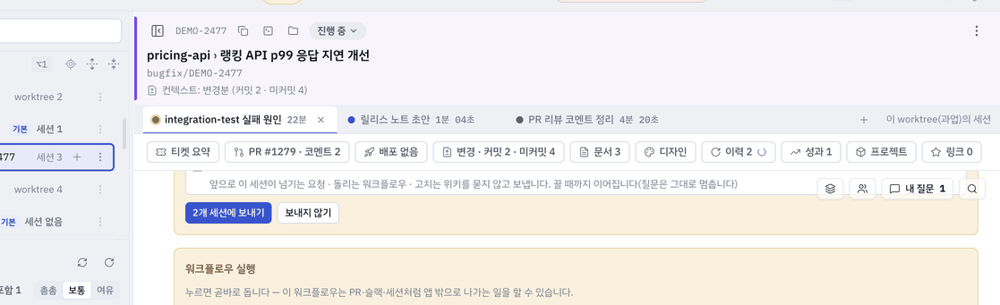
12- 1세션 탭
- 2정보 칩
정보 칩은 누르면 아래로 서랍이 열립니다. 화면에 보이는 순서대로 ⌘⌃1~⌘⌃9 가 붙습니다.
옛 ⌘⇧1~⌘⇧9 는 macOS 스크린샷 단축키(⌘⇧3·⌘⇧4·⌘⇧5, Touch Bar 모델은 ⌘⇧6)와 겹쳐 그 번호들이 눌리지 않았습니다. 지금은 전부 ⌘⌃1~⌘⌃9 이고, 이 머신의 시스템 단축키·Mission Control 설정과 겹치지 않는 조합입니다.
| 칩 | 여는 것 |
|---|---|
| 티켓 요약 / 세션 요약 | 연결 티켓의 요약·상태·기한(티켓이 없으면 세션 요약). 상태는 여기서 바꿉니다 |
| PR #번호 / PR 없음 개발자 | PR 상태 · checks · 미해결 리뷰 · 리뷰 요청 · 배포 준비 실행(PR) |
| 변경 · 커밋 n · 미커밋 n | 이 브랜치의 커밋과 미커밋 변경 파일 |
| 문서 n | 과업에 붙은 문서(문서) |
| 이력 n | 이 과업에서 돈 워크플로우 실행. 행을 누르면 실행 상세 가 지금 화면에서 그대로 뜹니다(보드가 실행 화면으로 바뀌지 않습니다) |
| 성과 n | 과업의 성과 기록(성과) |
| 프로젝트 | 프로젝트 맵 · 배포 이력 · 테스트 방식 · 연동 · 배포 환경(프로젝트 칩) |
| 링크 n | 이 자리의 즐겨찾기 팝오버 |
이 worktree 에 지금 진행 중인 워크플로우 실행이 있으면 이력 칩 옆에 도는 아이콘이 붙습니다 — 시작 대기 · 실행 중 · 에이전트 대기(다시 제안 받는 중 포함) · 내 답 대기가 모두 진행 중으로 셉니다. 2건부터는 숫자도 함께 보입니다. 실행이 끝나거나 실패·중단되면 바로 사라집니다. 다른 worktree 의 실행은 표시하지 않습니다.
머리 맨 윗줄의 작은 글자는 이 worktree 의 식별자·경로입니다. 옆의 복사 는 그 식별자를 클립보드에 담고, 터미널에서 열기 는 그 폴더에서 터미널 창을 엽니다(macOS 는 터미널, Windows 는 Windows Terminal — 없으면 명령 프롬프트, Linux 는 기본 터미널). 창은 baton 과 따로 살아서, 앱을 닫아도 그대로 남습니다. 폴더가 없으면(「폴더 없음」) 이 버튼은 눌리지 않습니다. 경로는 칸이 넓으면 끝까지 보이고, 좁아질 때만 뒤가 … 로 접힙니다.
머리 오른쪽 ⋯ 는 worktree 동작 메뉴입니다.
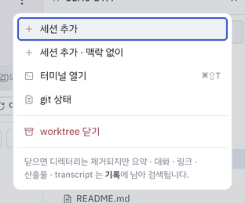
- git 상태 — 이 worktree 폴더의 브랜치·변경 파일을 팝업으로 봅니다(폴더가 없으면 「폴더 없음」).
- 세션 탭: ⌘T 새 세션 · ⌘⇧T 새 터미널(아래 참고) · ⌘W 탭 닫기 · ⌃[ 이전 탭 · ⌃] 다음 탭(줄의 위치 순서 — 끌어 옮긴 순서 그대로, 끝에서는 반대쪽 끝으로) · ⌃Tab/⌃⇧Tab 왼쪽 / 오른쪽 탭 · ⌃⇧[/⌃⇧] 탭 히스토리(전에 골랐던 탭으로). 입력창에 쓰는 중에도 됩니다. 터미널 탭도 같은 줄의 같은 탭이라 이 키들이 그대로 듣습니다.
- 탭 줄 오른쪽 + 의 세 갈래 — 그냥 누르면 세션(그 worktree 의 티켓 · PR · 변경 · 문서 · 성과 · 링크를 갱신해 맥락으로 안고 시작합니다), ⌥와 함께 누르면 맥락 없는 세션, ⌘와 함께 누르면 터미널입니다(터미널 탭). 버튼에 마우스를 올리면 이 셋이 툴팁에 적혀 있고, 같은 갈래가 worktree 동작 메뉴에도 눌리는 항목으로 있습니다(세션 추가 · 세션 추가 · 맥락 없이 · 터미널 열기) — 누르는 손잡이를 모르고도 찾을 수 있게 둔 것입니다. 폴더가 사라진 worktree 에서는 세 갈래 모두 꺼져 있습니다.
- 새 세션 탭의 자리 — 지금 선택된 탭 바로 뒤에 섭니다(⌘T · + · 트리에서 지금 보고 있는 worktree 에 추가). 선택된 탭 없이 추가하면(다른 worktree 의 트리 행 · 기록 › 닫힌 세션의 되살리기) 그 줄의 맨 뒤에 섭니다. 탭 순서는 답이 와도 바뀌지 않고, 앱을 다시 띄워도 그대로입니다.
- 보던 세션으로 돌아오기 — 트리에서 worktree 행을 고르면(클릭 · ↑↓) 그 worktree 에서 마지막으로 보던 세션 탭이 열립니다. 다른 worktree 를 보고 와도, 앱을 다시 띄워도 그대로입니다. 그 세션을 닫았거나 아직 고른 적이 없으면 줄의 첫 탭이 열립니다. 알림의 「세션 열기」 · 명령 팔레트의 세션처럼 세션을 집어 가는 길은 기억과 상관없이 그 세션으로 갑니다.
- 탭 순서 바꾸기 — 탭을 끌어서 다른 탭의 앞(왼쪽 절반)이나 뒤(오른쪽 절반)에 놓습니다. 놓일 자리에 세로 막대가 섭니다. 키보드로는 탭에 포커스를 두고 ⌥←/⌥→ 로 한 칸씩 옮깁니다(끝에서는 더 가지 않습니다). 바꾼 순서는 worktree 마다 저장되어 화면을 옮기거나 앱을 다시 띄워도 그대로이고, 보고 있던 탭은 옮긴 뒤에도 그대로 선택돼 있습니다.
- 터미널 탭 — 세션 탭과 같은 줄에 같은 탭으로 섭니다. ⌘⇧T, 탭 줄 오른쪽 + 를 ⌘와 함께 클릭, worktree 동작 메뉴의 터미널 열기, 트리의 워크스페이스 · 프로젝트 · worktree · 세션 행 메뉴에서 엽니다. 앱을 떠나지 않고
npm run dev·npm test·git status를 돌리는 자리입니다.- 그룹 세션 자리에서도 열립니다 — 그룹은 자기 폴더가 없으므로, 터미널은 그 그룹 세션이 실제로 뜬 폴더(구성원 worktree 중 줄기 우선)에서 뜹니다. 구성원이 하나도 없는 그룹과 프로젝트 묶음에는 빌릴 폴더가 없어 터미널 열기 항목이 아예 보이지 않습니다 — 구성원 프로젝트 · worktree 에서 여세요.
- 세션 탭과 똑같이 다룹니다 — 새 터미널은 지금 선택된 탭 바로 뒤에 서고, 끌어서 순서를 바꾸거나 ⌥←/⌥→ 로 한 칸씩 옮길 수 있으며, ⌃Tab · ⌃[/⌃] 가 세션 탭과 터미널 탭을 가리지 않고 지납니다. 세션 탭을 누르면 대화로, 터미널 탭을 누르면 셸로 곧바로 돌아옵니다. 다른 것은 탭 안에 든 것뿐입니다.
- 탭 이동 키는 셸 안에서 쳐도 듣습니다 — 커서가 터미널 안에 있어 명령을 치는 중이어도 ⌃Tab · ⌃[/⌃] · ⌃⇧[/⌃⇧] 는 앱이 먼저 받아 탭을 옮깁니다(셸로는 가지 않습니다). 그 대신 터미널에서 ⌃[ 로 ESC 를 보낼 수는 없습니다 — Esc 키를 쓰면 됩니다(
vim도 그것으로 나옵니다). ⌃C 중단 · ⌃D · ⌃R 이력 검색처럼 나머지 Ctrl 조합은 모두 셸의 것입니다. - 어디서 열리나 — 셸은 그 행이 가리키는 폴더에서 뜹니다: 워크스페이스 행은 워크스페이스 폴더, 프로젝트 행은 그 레포의 줄기, worktree · 세션 행은 그 worktree 입니다. 폴더가 사라진 worktree 에서는 「폴더 없음」으로 열리지 않습니다.
- 진짜 터미널입니다 —
vim·top·less·ssh처럼 화면을 통째로 쓰는 프로그램이 그대로 돌고, Ctrl+C · Tab 완성 · 방향키 · 색이 평소 터미널과 같습니다. 창 크기를 바꾸면 그 크기가 셸까지 전해집니다. - 프롬프트의 특수문자도 그대로 보입니다 —
agnoster·powerlevel10k처럼 Powerline · Nerd Font 글자를 쓰는 셸 프롬프트가 네모(□)로 깨지지 않도록, 터미널은 한글 등폭 + Nerd 글리프를 가진 글꼴을 먼저 찾아 씁니다(D2Coding·MesloLGS NF·Hack Nerd Font등 — 기계에 깔려 있는 것을 씁니다). 그런 글꼴이 하나도 없으면 앱의 기본 등폭으로 그리며, 이때 Powerline 글자는 그 글꼴에 없어 네모로 보일 수 있습니다. 한글도 같은 이유로 정확히 두 칸에 맞아 표·눈금이 어긋나지 않습니다. - 터미널마다 셸이 따로입니다 — 한쪽에서
cd해도 다른 터미널은 그대로고,npm run dev를 켜 둔 채 다른 탭에서git status를 칠 수 있습니다. 탭 이름은 더블클릭으로 고칩니다. - 닫으면 돌던 명령도 끝납니다 — 탭의 ✕ 나 ⌘W 는 그 셸과 거기서 돌던 것(개발 서버 등)을 함께 끝냅니다. 누르는 즉시 탭이 사라집니다 — 세션 탭과 달리 확인을 묻지 않습니다(되살릴 기록이 없는 셸 한 장이기 때문입니다). 그냥 다른 탭으로 옮기는 것은 끝내는 것이 아닙니다 — 출력은 돌아와도 그대로 남아 있습니다. 앱을 끄면 열려 있던 터미널은 모두 정리됩니다.
- 복사 · 붙여넣기 는 ⌘C · ⌘V 입니다. 고른 글자가 없을 때의 ⌃C 는 평소처럼 실행 중단입니다. 지난 출력은 위로 스크롤해서 봅니다(터미널당 5000줄까지).
- 셸은 로그인 셸로 뜹니다 — 평소 터미널과 같은
PATH라node·npm·git이 그대로 잡힙니다. macOS 에서는 계정에 설정된 셸(보통zsh)을 씁니다.
- 탭이 많아지면 — 탭은 칸 폭에 맞춰 조금씩 좁아지고, 그래도 넘치면 줄이 가로로 흐릅니다(트랙패드 · 마우스 휠 · 탭에 포커스를 두고 ←→). 넘친 쪽 끝은 흐려져 「더 있다」를 알려 줍니다. 고른 세션의 탭은 언제나 보이는 자리로 따라옵니다. +(세션 추가)와 오른쪽 스코프 글은 줄과 함께 흐르지 않고 제자리에 남으므로, 탭이 몇 개든 세션을 더 열 수 있습니다. 끌어서 옮기는 중에 줄 끝에 손을 대면 줄이 따라 흘러 화면 밖 자리로도 옮길 수 있습니다.
세션 대화#
입력창에 쓰고 ⌘Enter 로 보냅니다. 세션이 도구(명령 실행·파일 쓰기)를 쓰려 하면 승인 카드 가 뜹니다.
- 보드에서 worktree 를 고르고 세션 탭을 누릅니다(⇧Enter 는 어디서든 입력창으로 점프).
- 입력창에 지시를 쓰고 ⌘Enter.
- 응답 중에는 응답 중 · n초 가 보입니다. 멈추려면 ⌃C 또는 그 줄의 중단 (⌃C)(세션은 살아 있습니다). 한글 입력 상태 그대로 눌러도 되고, 손이 입력창이 아니라 대화 쪽에 있어도 됩니다. 복사는 종전대로 ⌘C 입니다.
- 응답이 끝나기를 기다리지 않고 이어서 보내도 됩니다. 그 말 아래에 대기 중 이 서고, 세션이 지금 하던 단계(명령 실행 · 파일 읽기 같은 도구 호출 하나)를 끝내는 자리에서 그 말을 읽으면 반영됨 · 14:18 로 바뀝니다 — 끝까지 다 하고 나서가 아니라 하던 일 도중에 반영됩니다. 세션이 그 말을 읽기 전에 멈추면 읽히지 않음 이 서니 다시 보내세요.
- 승인 카드가 뜨면 승인 또는 거부. 놓친 승인은 상단바 답 대기 배지 에 모입니다.
- 세션이 고르라고 물으면 답을 기다립니다 카드가 뜹니다. 질문마다 선택지를 고르고(여러 개 고르는 질문은 체크박스), 맞는 것이 없으면 기타 칸에 직접 씁니다. 모든 질문에 답하면 답 보내기 — 세션이 그 답을 받아 이어갑니다. 넘기려면 답하지 않기.
- 보낸 뒤에는 대화에 질문에 답함 줄이 남습니다 — 물음 과 내 답 이 쌍으로 갈려 한 쌍씩 서므로, 나중에 내가 뭐라고 답했는지 를 그 자리에서 그대로 읽을 수 있습니다. 답에 쓴 줄바꿈·목록·코드는 쓴 그대로 보입니다.
맨 아래를 보고 있으면 새 말·답·카드가 올라올 때마다 화면이 따라 내려갑니다. 답이 한 줄로 떴다가 전문으로 길어지거나 그림이 뒤늦게 떠도 마찬가지입니다.
화면을 위로 올려 두면 그 자리를 지킵니다 — 읽던 자리를 뺏지 않습니다. 그동안 올라온 말은 아래쪽의 제일 최근 대화로 이동 으로 한 번에 따라잡고, 손으로 바닥까지 내려도 다시 붙습니다. 그 버튼은 ⌘⌥↓ 로도 눌립니다 — 읽던 자리에서 마우스로 손을 옮기지 않아도 됩니다.
다른 세션 탭이나 다른 화면에 다녀와도 읽던 자리가 그대로입니다 — 돌아오면 보고 있던 그 말이 화면 맨 위에 다시 섭니다(그 사이 답이 더 와 있어도 같습니다). 바닥에 붙어 보고 있던 세션은 돌아와서도 최신입니다. 읽던 자리는 앱이 켜져 있는 동안만 기억합니다 — 앱을 다시 켜면 최신부터 봅니다.
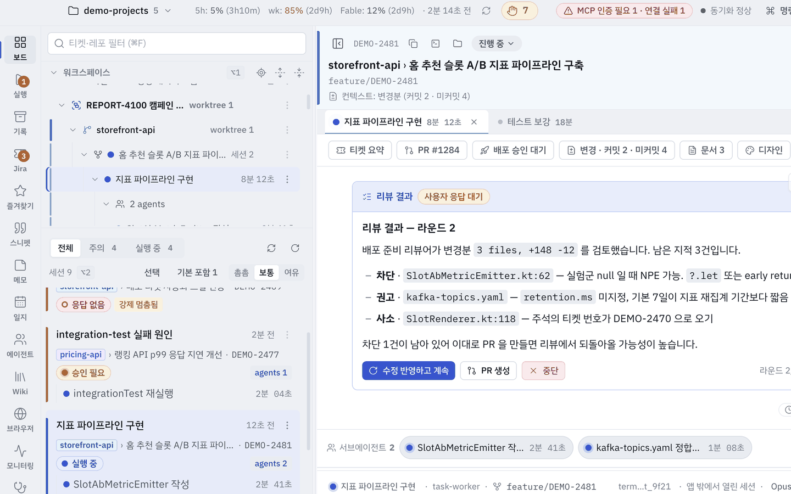
12- 1반영됨 — 세션이 읽은 시각
- 2대기 중 — 지금 단계가 끝나면 읽는다
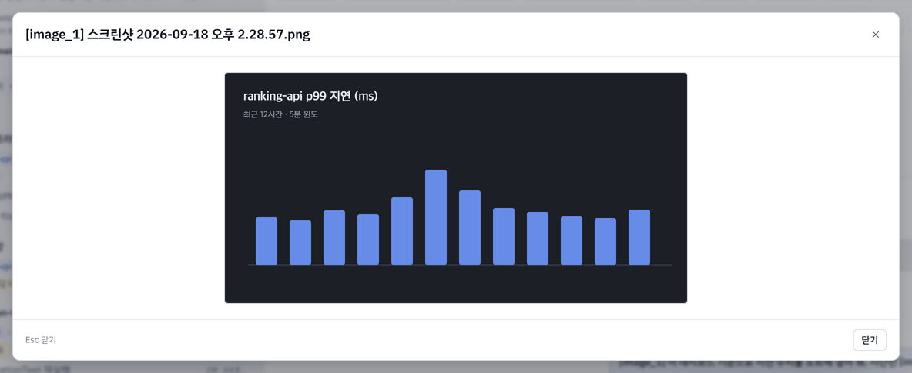
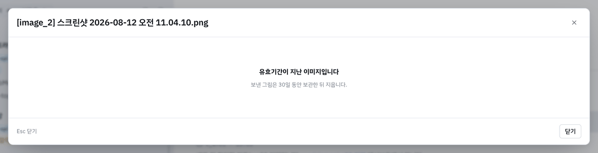
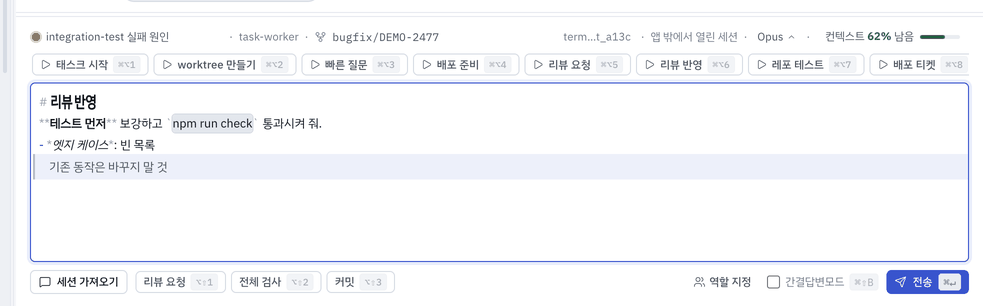
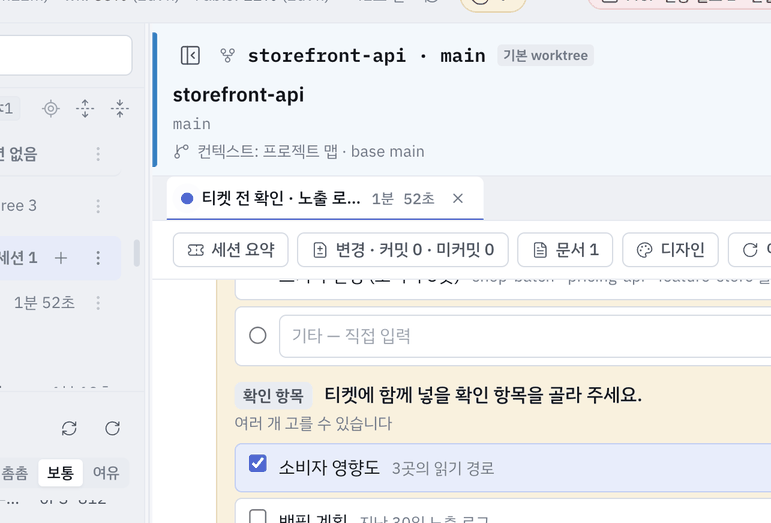
세션에게 「10분마다 보고해줘」 처럼 되풀이할 일을 맡기면, 대화 맨 아래 줄의 오른쪽 끝 에 10분마다 · 다음 약 오늘 10:40 이 섭니다. 세션이 쉬고 있을 때도 보이므로 지금 걸려 있는지 를 대화를 뒤지지 않고 알 수 있습니다. 여러 개면 예약 2 처럼 수로 적고 가장 이른 다음 시각을 보입니다. 아무것도 안 걸렸으면 아무것도 서지 않습니다.
시각에 약 이 붙는 이유가 있습니다 — 이 예약은 세션이 쉬는 틈에 돌고, 몰림을 피하려고 몇 분 늦게 도는 일이 있습니다(긴 작업 중이면 그 작업이 끝난 뒤로 밀립니다). 배지에 마우스를 올리면 걸린 것 전부와 마지막으로 돈 시각 · 언제 만료되는지 가 보입니다. 되풀이 예약은 7일이 지나면 스스로 사라집니다.
배지의 ⟳ 를 누르면 세션에 직접 물어 목록을 맞춥니다(맞춘 시각도 툴팁에 남습니다). 세션이 멈췄거나 끊겼으면 다음 시각 대신 멈춤 으로 바뀌고 테두리가 점선이 됩니다 — 그 상태에서는 예약도 돌지 않기 때문입니다.
- 1되풀이 주기와 다음 실행 — 마우스를 올리면 만료·마지막 실행까지
| 입력창 주변 | 하는 일 |
|---|---|
| 워크플로우 칩 (⌘⌥1~⌘⌥9) | 이 자리를 대상으로 워크플로우를 바로 실행 — 끌어서 순서를 바꾸면 번호도 따라갑니다. 누르는 즉시 오른쪽 아래에 시작 알림이 뜨고 실행으로 가기 로 그 실행에 갑니다(자세히) |
| 스니펫 칩 (⌥⇧1~⌥⇧9) | 자주 치는 문장을 입력창에 넣습니다 — 끌어서 순서를 바꾸면 번호도 따라가고, 바꾼 순서는 스니펫 화면에도 그대로 남습니다(자주 쓰는 것을 앞으로) |
| 세션 가져오기 | 다른 세션(앱 밖에서 연 Claude 세션 포함)에서 알아낸 것을 압축해 입력창에 넣습니다 — 전송하지 않습니다(자세히) |
| 역할 지정 | 이 세션의 요청을 정해진 역할에게 맡깁니다 — 누르면 역할 목록이 뜨고, 체크한 역할에게 보내는 요청마다 일이 넘어갑니다. 찾기는 이름과 하는 일 둘 다에 걸리고(Tab 으로 이름을 완성, ↑↓ 이동, Enter 고르기), 고른 것은 맨 위에 남습니다. 고르지 않는 것이 기본입니다 — 그때는 세션용 역할이 모두 깔린 채로 가고, 그 중 무엇을 쓸지 AI 가 요청을 보고 정합니다. 고르면 그 역할로만 처리합니다(지시로 나갑니다). 연쇄 딱지가 붙은 역할은 스스로 다른 역할을 또 띄웁니다(실행 수와 시간·비용이 몇 배로 늘 수 있습니다). 체크는 그 세션의 것이고 바꾸기 전까지 그대로 남습니다(에이전트 화면의 그 역할들입니다) |
| 간결답변모드 (⌘⇧B) | 설명 없이 결과만 짧게 답하도록 — 지금 보는 세션에만 |
| 마크다운 표시 | 쓰는 동안 입력창 안에서 바로 서식이 보입니다 — **굵게** · *기울임* · ~~취소선~~ · `코드` · # 제목 · > 인용 · - 목록 · [링크](주소) · ``` 코드 블록. 기호(** 같은)는 지워지지 않고 흐리게 남고, 세션에는 쓴 글자 그대로 갑니다. 코드 블록에 언어를 적으면 그 언어대로 색이 칠해집니다 — ```html · ```ts · ```sh 처럼 적으면 대화에 보낸 뒤의 코드블록과 같은 색표로 보입니다(모르는 언어는 칠하지 않습니다 — 추측한 색이 사실처럼 보이지 않게). 제목은 단계만큼 커집니다 — # 가 가장 크고 ## · ### · #### 로 갈수록 작아지며, ##### 부터는 본문 크기에 굵기로만 갈립니다(글자 폭은 본문과 같게 두어 캐럿이 글자 위에 그대로 섭니다). 인용과 코드 블록은 한 덩어리 상자로 보입니다 — 왼쪽에 띠가 서고 바탕이 그 줄 끝까지 이어져, 여러 줄이 · 코드 블록 안의 빈 줄까지 한 구역으로 읽힙니다. 띠는 글자와 붙지 않게 조금 떨어져 섭니다. 인용 한 줄이 길어 칸 폭에서 접혀도 띠와 바탕은 접힌 줄까지 이어집니다 — 접힌 아랫줄만 블록 밖처럼 보이지 않습니다(다만 입력칸에서는 > 가 차지한 자리만큼 첫 줄의 글이 조금 들어가 시작합니다. 친 글자를 그대로 보여 주어야 커서가 글자 위에 서기 때문이며, 보낸 뒤에는 > 가 접혀 모든 줄이 같은 자리에서 시작합니다). 보낸 내 말도 대화에 같은 모양으로 남고(주소는 눌립니다), 거기서는 인용의 > 가 접혀 모든 줄의 글이 같은 자리에서 시작합니다(복사하면 > 는 그대로 따라옵니다). 앱의 여러 줄 입력칸은 전부 같습니다 — 에이전트 요청 문구 · 지시문 · 원하는 것, 실행 질문의 보낼 글, 스니펫 내용, 즐겨찾기 메모, 메모 본문, 리뷰 코멘트, 트리아지 답변 초안 · 작업 내용, 테스트 계획 절차 · 검증 기준, 세션 맥락의 넣을 글, 워크플로우의 여러 줄 입력. 마크다운이 아닌 칸(워크플로우 정의 (YAML), 테스트 계획 변수, 임팩트 대상 지표)과 이름 · 주소 · 검색 같은 한 줄 칸은 서식 없이 그대로입니다 |
| 치는 동안 거들기 | 고른 글에 " · ' · * · _ · ~ · ` · ( · [ · { · 「 를 치면 지워지지 않고 감쌉니다 — 감싼 뒤에도 안쪽이 고른 채라 한 번 더 치면 한 겹 더 됩니다(*글* → **글**). > 인용 · - 목록 · 1. 번호 줄에서 ⇧Enter 로 줄을 바꾸면 표시가 따라옵니다(번호는 다음 번호로). 표시만 있는 빈 줄에서 한 번 더 바꾸면 표시가 걷히고 빠져나옵니다 — 인용은 줄바꿈 두 번이면 블록이 끝납니다(표시를 걷으면서 빈 줄 하나를 남기므로 이어 쓰는 글이 인용에 딸려 가지 않습니다. 목록은 그런 딸려 감이 없어 표시만 걷힙니다). 여러 줄 인용은 첫 줄에만 > 를 찍어도 빈 줄이 나올 때까지 같은 인용으로 보입니다 — 보낸 뒤의 모양과 같습니다. 인용과 코드 블록은 왼쪽 띠로 덩어리째 보입니다 — 인용에서는 > 기호를 띠가 대신하므로 보이지 않습니다(글을 고르면 도로 보이고, 복사하면 > 가 그대로 따라옵니다) |
| Tab ⇧Tab — 들여쓰기 | Tab 은 들여쓰기입니다(공백 두 칸) — 다른 자리로 넘어가지 않습니다. - 목록 · 1. 번호 · > 인용 줄에서는 항목이 통째로 한 단 들어가 중첩 목록이 되고, 그 밖에서는 캐럿 자리에 두 칸이 들어갑니다. 여러 줄을 골라 누르면 걸친 줄 전부가 함께 움직입니다 — 고른 글이 지워지지 않습니다. ⇧Tab 은 반대로 한 단 빼냅니다. ⌘Z 로 되돌아갑니다. 앱의 여러 줄 입력칸은 전부 같습니다(워크플로우 정의 (YAML) 처럼 마크다운이 아닌 칸에서도 — 거기서는 목록 판정 없이 캐럿 자리에 들어갑니다) |
| ⌥Tab ⌥⇧Tab — 다음 자리로 | 입력창에서 다음 / 이전 자리(세션 가져오기 · 스니펫 칩 · 보내기 …)로 손을 옮깁니다. Tab 이 들여쓰기가 되면서 옮겨 온 자리입니다. 버튼에 올라선 뒤로는 평소대로 Tab 으로 다음 버튼에 갑니다. 팝업 · 모달 안에서는 그 안에서만 돕니다(팝업 키보드 공통 규칙). ⌘Tab 이 아닌 까닭은 그 조합을 macOS 가 앱 전환기로 가져가 앱까지 오지 않기 때문입니다 |
| 쓰는 자리 따라가기 | 글이 칸보다 길어져도 쓰고 있는 줄은 늘 보입니다 — Enter 로 칸 아래로 내려가도 입력칸이 따라 내려가므로 손으로 스크롤할 일이 없습니다. 목록 · 인용을 이어 가느라 줄머리가 함께 들어가는 Enter 도 같습니다. 다른 화면 · 패널에 다녀와도 쓰던 자리(커서)가 그대로입니다 — 돌아오면 커서가 쓰던 그 자리에 있고 칸도 그 줄을 보여 줍니다. 긴 초안을 스크롤로 뒤져 작성하던 곳을 다시 찾을 필요가 없습니다(커서 자리는 초안과 함께 세션마다 기억합니다). 읽으려고 위로 올려 둔 칸은 치기 전까지 그대로 있습니다. 앱의 여러 줄 입력칸은 전부 같습니다 |
| ↑ ↓ | 내가 보낸 메시지 히스토리(캐럿이 보이는 첫 줄/마지막 줄일 때) — 쓰던 글은 사라지지 않습니다: ↓ 로 끝까지 내려오면 쓰던 초안이 그대로 돌아옵니다. 긴 줄이 칸 폭에서 접혀 생긴 아랫칸은 첫 줄이 아닙니다 — 거기서 ↑ 는 히스토리가 아니라 커서를 윗칸으로 올립니다 |
| 쓰던 초안 | 보내지 않은 글(붙인 그림 포함)과 쓰던 커서 자리는 세션마다 남습니다 — 다른 세션 탭이나 다른 화면에 다녀와도, 창을 닫았다 다시 열어도 그 세션으로 돌아오면 쓰던 그대로입니다. 보내거나 Esc 로 비우면 사라집니다. 저장되는 때는 치다가 1초 멈췄을 때 · 입력창을 떠날 때 · 보낼 때 이고, 한글을 조합하는 중에는 저장하지 않습니다(다 만들어진 글자만 남습니다) |
| Esc | 쓰던 초안을 클립보드로 옮기고 입력창을 비웁니다 — 「복사하기로 클립보드에 저장되었습니다」 토스트로 알려 줍니다(복사에 실패하면 비우지 않고 그 사실을 말합니다) |
| 내 질문 복사 (「나 · 14:17」 이름표 왼쪽) | 대화의 내 질문에 손을 올리면 이름표 왼쪽에 질문 복사 아이콘이 섭니다. 누르면 그 질문을 보낸 그대로(줄바꿈 · 링크 주소 · [image_1] 같은 그림 표시 포함) 클립보드에 넣고, 아이콘이 잠깐 체크로 바뀝니다. 키보드로는 Tab 으로 가서 Enter |
/ @ 자동완성 | / 를 치면 스킬 · 슬래시 명령 · MCP 도구 가, @ 를 치면 파일 경로 가 목록으로 뜹니다 — ↑↓ 로 고르고 Enter 로 넣습니다(Esc 는 목록만 닫습니다). 파일 목록은 그 세션이 실제로 도는 폴더 기준입니다. 어떤 세션에서도 뜹니다 — 워크스페이스 · 그룹 · 분류 안 됨 세션처럼 레포가 아닌 자리에서는 폴더를 직접 훑어 보여 줍니다(.git · node_modules 같은 자리는 건너뜁니다). |
| 파일 · 폴더 끌어다 놓기 | 이미지를 끌어다 놓으면 커서 자리에 [image_1] 이 들어가고 입력창 아래에 파일 이름이 칩으로 섭니다. 그 밖의 파일과 폴더는 @/절대/경로 로 들어갑니다 — 첨부가 아니라 글이라 칩은 서지 않고, 지우려면 글자를 지우면 됩니다. 여러 개를 한 번에 놓으면 각자의 표기로 나란히 들어갑니다. 놓는 자리는 창 어디든 됩니다(입력창에 손이 가 있지 않아도 됩니다). 바로 보내지는 않습니다: 파일은 대개 말과 함께 가는 것이라 설명을 덧붙인 뒤 보냅니다. 받지 못하는 것은 그 자리에서 이유를 말합니다(브라우저에서 바로 끌어온 그림은 경로가 없습니다). 그림 크기 제한은 없습니다 — 모델이 받는 한 장 한도를 넘는 그림은 보낼 때 앱이 알아서 줄여서 보냅니다(긴 변을 줄이고 필요하면 다시 인코딩합니다 · 원본 파일은 그대로 둡니다). 한도는 둘이고 어느 한쪽만 넘어도 줄입니다 — 용량 5MB 와 긴 변 2000px. 둘은 함께 걸리지 않습니다: 맥의 Retina 스크린샷은 전체 화면을 찍어도 400KB 남짓인데 가로는 3000px 을 넘기 일쑤라, 용량만 보면 그냥 지나가고 모델 쪽에서 「이미지를 읽지 못했다」가 됩니다. |
보낸 그림 칩 ([image_1] 파일 이름) | 입력창에 끌어다 놓아 함께 보낸 그림은 내 말 아래에 칩으로 남습니다. 칩을 누르면 그 그림이 창에 크게 뜹니다(Esc 로 닫기). 보낼 때 앱이 그림의 보관 사본을 데이터 폴더(~/.baton/chat-images/)에 남기므로, 스크린샷 미리보기를 바로 끌어 놓아 원본이 임시 파일이었어도 다시 볼 수 있습니다. 사본은 30일 뒤 지워지고(설정 파일 app.chatImageKeepDays), 그 뒤에 누르면 유효기간이 지난 이미지입니다 라고 안내합니다 — 보관 사본이 생기기 전에 보낸 그림도 원본이 지워졌으면 같습니다 |
| 대화 로그 위 도구줄 | 대화의 링크 · 받은 컨텍스트 · 처리 과정 숨김 · 서브에이전트 일지 · 내 질문 로그 · 대화에서 찾기 |
| 처리 과정 숨김 (눈 아이콘 · 받은 컨텍스트 옆 · ⌘⇧H) | 대화에서 도구가 한 일(Bash · npm run check 같은 줄과 그 출력)을 거둬 내가 봐야 할 글만 남깁니다 — 처리 과정이 많은 세션에서 읽을 것을 찾기 위한 자리입니다. 기본은 보임이고, 아이콘은 누르면 일어날 일을 그립니다(보이는 동안 감은 눈, 거둔 동안 뜬 눈). 몇 줄을 숨겼는지는 아이콘에 손을 올리면 말해 줍니다.거두지 않는 것: AI 가 턴 도중에 쓴 글(조사·리뷰 보고가 여기로 옵니다) · 질문에 답함(내가 뭐라고 답했는지) · 승인·질문 카드 · 결과물 등록 · 오류. 답해야 할 카드는 켜 두어도 사라지지 않습니다. 세션마다 따로 기억합니다 — 보고만 읽는 세션에서 켠 것이 일하는 세션까지 따라가지 않습니다. 대화에서 찾기(⌘F)를 여는 동안에는 거둔 줄이 잠깐 돌아옵니다: 숨긴 줄에 든 말도 찾을 수 있어야 하기 때문입니다 |
| 책갈피 (답의 줄 왼쪽 여백) | 답의 한 줄에 손을 올려 꽂으면 대화 오른쪽 레일에 표시가 섭니다. 표시를 누르면 그 줄로 가고, 손을 올리면 그 줄의 글과 복사 · 빼기 가 나옵니다. 복사 는 그 줄 하나(문단 · 목록 항목 · 코드블록 · 표)를 클립보드에 넣습니다 — 코드는 줄바꿈 그대로, 표는 칸을 탭으로. 답의 어느 줄이든 손을 올리면 왼쪽 여백의 책갈피 버튼 바로 옆에 복사 가 섭니다 — 책갈피를 꽂지 않은 줄에서도 바로 복사할 수 있습니다. 두 버튼으로 가는 손이 대화 칸 왼쪽 끝을 조금 넘어가도(그 줄의 높이 안이면) 버튼은 사라지지 않습니다. 키보드로는 표시에서 ↑↓ 로 다른 책갈피, Tab 으로 복사 → 빼기, Esc 로 글을 접고 표시로 돌아옵니다(팝업 키보드 공통 규칙) |
| 모델 표시(Opus ⌃) | 이 세션의 모델을 바꿉니다 |
| 원격 (○ 원격 ⌃) | 이 세션을 claude.ai/code · Claude 앱(폰)에서 이어 씁니다(자세히) |
대화 안에서 누르면 사라지는 버튼 — 결과물 카드의 되돌리기 · 줄 옆의 책갈피 · 줄 복사 · 응답 줄의 중단 — 을 눌러도 대화가 맨 위로 튀지 않고 보던 자리에 머뭅니다. 전송 버튼으로 보낸 뒤에는 키보드 포커스가 입력창에 남아 곧바로 이어 쓸 수 있습니다.
승인 카드 없이 돌리려면 설정 › AI 실행 › 모든 권한 자동 승인. 켜도 대화에 자동 허용 기록은 남습니다. 세션이 고르라고 묻는 질문은 켜 두어도 자동으로 넘기지 않습니다 — 허락이 아니라 사람의 선택이라, 답할 때까지 기다립니다.
원격 제어 — 폰에서 이어 쓰기#
앱에서 돌리던 세션을 claude.ai/code 나 Claude 앱(폰)에서 이어 씁니다. 세션은 계속 이 기계에서 돌고, 파일·도구도 이 기계의 것을 씁니다.
- 입력창 위 표시줄의 원격 을 누르고 원격 제어 켜기. 쉬던 세션이면 몇 초 동안 원격 연결 중… 이 보입니다.
- 원격 연결됨 이 되면 다시 눌러 claude.ai 에서 열기 · QR — 폰으로 열기 · 링크 복사. Claude 앱의 코드 세션 목록에는
baton · 워크스페이스 › 프로젝트 › 워크트리 · 세션으로 뜹니다 — 이름만 보고 어느 작업의 세션인지 알아볼 수 있게 자리가 함께 붙습니다(이름은 트리에 보이는 표기명 그대로이고, 없는 마디는 빠집니다). - 폰으로 옮길 때는 QR 이 가장 빠릅니다 — 주소를 카메라로 찍으면 됩니다. 주소는 원격을 켤 때마다 새로 발급되므로, 껐다 켜면 먼저 띄운 QR 은 더 이상 열리지 않습니다.
- 폰에서 보낸 말은 대화에 나 · 원격 으로 남고, 답과 도구 진행도 그대로 쌓입니다.
- 폰에서 승인하면 앱의 승인 카드는 다른 기기에서 답함 으로 접힙니다.
- 그만두려면 원격 제어 끄기. 앱을 끄거나 세션을 닫아도 끊깁니다.
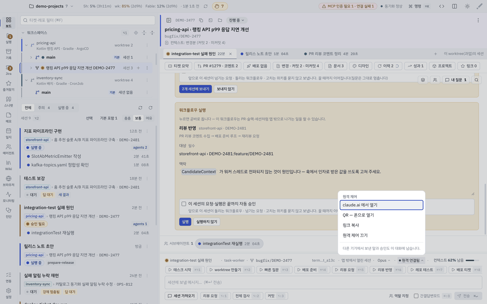
12- 1원격 조각
- 2원격 메뉴
claude.ai 구독 계정으로 로그인한 Claude Code 여야 합니다(API 키 · Bedrock 은 안 됩니다). 회사 계정(Team/Enterprise)은 관리자가 Claude Code 설정에서 원격 제어를 켜 두어야 합니다. 안 켜진 사유는 대화에 한 줄로 남습니다. 연결된 동안 대화 기록은 Anthropic 서버에 저장됩니다.
대화 안 찾기 (돋보기 · ⌘F)#
지금 세션의 대화에서 말을 찾습니다. 매치 수와 지금 위치(2/8)가 보이고 이전·다음으로 옮겨 다닙니다.
- 대화 로그 오른쪽 위 돋보기 를 누르거나, 손이 대화·입력창·세션 탭 에 있을 때 ⌘F.
- 찾을 말을 칩니다 — 대화 속 일치하는 곳이 칠해집니다.
- Enter 다음 · ⇧Enter 이전(⌘G / ⌘⇧G 도 같습니다). 끝에서 처음으로 돕니다.
- Esc 로 닫으면 손이 원래 자리로 돌아갑니다.
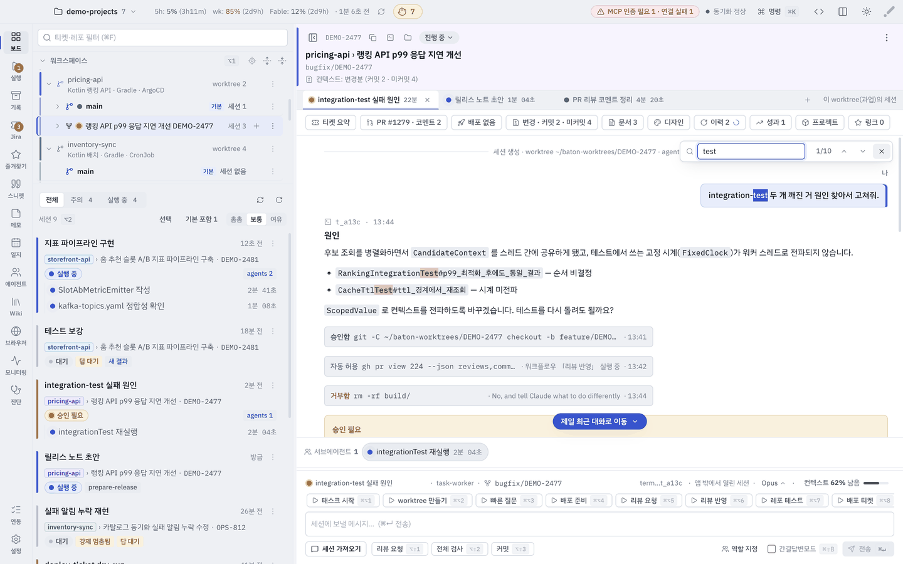
1- 1찾기 막대
화면에 그려진 최근 대화(최대 500줄)입니다. 그보다 오래된 대화는 ⌘⇧F 통합 검색 의 「대화」 에서 찾습니다.
코드 보기 (파일 트리 · 파일 탭)#
고른 과업(또는 프로젝트)의 폴더를 그대로 열어 파일을 읽습니다. 파일은 탭으로 뜨고, 확장자에 맞춰 색이 칠해집니다. 고치지는 않습니다 — 고치는 일은 세션에게 맡기고, 여기서는 읽고 줄에 코멘트를 달아 넘깁니다.
- 보드에서 worktree 나 프로젝트 행을 고릅니다.
- 창 오른쪽 위 코드 보기(
</>) 를 누르면 오른쪽에 파일 트리 가 섭니다. 폴더가 없는 자리(워크스페이스 행 · 그룹 행)에서는 이 아이콘이 아예 뜨지 않습니다. - 폴더를 누르면 그 한 겹만 읽습니다 — 레포가 몇 만 개든 여는 속도가 같습니다.
- 파일을 더블클릭하면 세션 탭과 같은 줄에 파일 탭이 섭니다(Enter 도 같습니다). 한 번 누르면 고르기만 합니다 — 훑어보다가 탭이 잔뜩 쌓이지 않게. 폴더는 종전대로 한 번에 접히고 펼쳐집니다.
- 탭 옮기기(⌥← ⌥→ · 드래그) · ⌘W 닫기가 세션 탭과 똑같습니다.
- 파일 안에서 말을 찾으려면 ⌘F — 찾은 줄이 칠해지고 Enter / ⇧Enter 로 옮겨 다닙니다.
- 줄에 코멘트 — 줄 번호 옆 + 를 누르고 남길 말을 씁니다(⌘Enter 로 추가). 코멘트가 있는 줄은 말풍선이 늘 보입니다.
- 다 썼으면 아래 줄의 AI 에게 보내기 — 그 과업의 세션이 받아 고치고, 반영 또는 기각 으로 답합니다. git 상태 창의 리뷰 와 같은 흐름이고 같은 목록에 쌓입니다.
트리 위 칸에 이름을 치면 펼치지 않은 곳까지 찾습니다(처음 한 번 폴더 전체를 훑습니다). 결과에는 파일 이름과 그 경로가 함께 섭니다.
.gitignore 와 상관없이 디스크에 있는 그대로입니다. node_modules · .git · 숨김 파일도 목록에 있고, 눈이 먼저 가지 않게 흐리게 둡니다.
512KB 를 넘는 파일과 글이 아닌 파일(이미지 · PDF · 실행 파일)은 열지 않고 왜 안 되는지 를 적습니다. 상한은 git 상태 창의 diff 상한과 같은 값입니다.
컨텍스트 잔량 · 압축#
입력창 위 표시줄 오른쪽 끝에 컨텍스트 n% 남음 이 보입니다. 25% 아래는 주의색, 10% 아래는 위험색입니다. 누르면 대화를 압축할지 묻습니다.
- 입력창 위 컨텍스트 n% 남음 을 누릅니다.
- 대화를 압축할까요? 에서 압축. 이전 대화가 요약으로 바뀌어 남은 컨텍스트가 늘어납니다.
- 압축은 뒤에서 돕니다. 끝나면 대화에 표식이 남습니다.
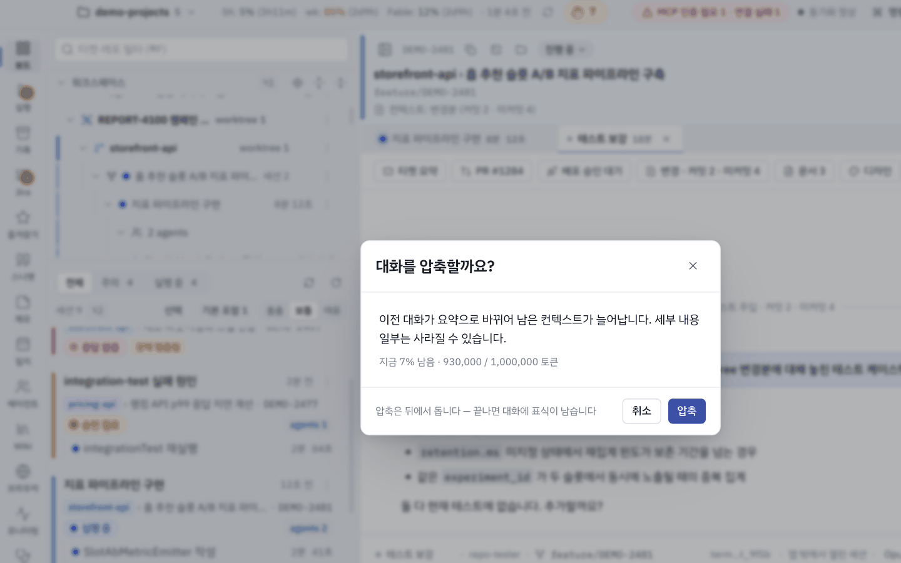
12- 1컨텍스트 잔량
- 2압축 확인
압축하면 세부 내용 일부가 사라질 수 있습니다. 세션이 응답 중이면 끝난 뒤에 압축합니다.
숫자는 그 세션의 대화만 셉니다(다른 세션·서브에이전트는 들어가지 않습니다). 쓰는 중에 남은 양이 늘기도 합니다 — 압축, /clear, 그리고 세션이 오래된 도구 결과를 스스로 비울 때입니다. /clear·압축 직후의 숫자는 추정치라 툴팁에 그렇게 적히고, 다음 턴이 끝나면 실측으로 바뀌며 조금 더 줄어들 수 있습니다.
받은 컨텍스트#
이 세션이 안고 시작한 것 — 작업 폴더 · 프로젝트 지침(CLAUDE.md) · 사용자 지침 · 앱이 붙인 안내 · baton 도구 · 시작 맥락(PR·변경 요약)을 보여 줍니다.
학습·통합 프로젝트에서는 커리큘럼도 함께 실립니다 — 과목 · 진도 · 차례 · 학습 방식 · 이 자리가 몇 장인지 · 노트 경로 · 복습 큐 수. 그래서 세션은 공부가 앱의 커리큘럼으로 돌아간다는 것을 알고 뜨고, 레포에 커리큘럼 문서를 따로 만들지 않습니다(학습 프로젝트).
- 대화 로그 위 도구줄에서 받은 컨텍스트.
- 항목의 전체 보기 로 원문을 펼칩니다. 오른쪽 위 새로고침으로 다시 읽습니다.
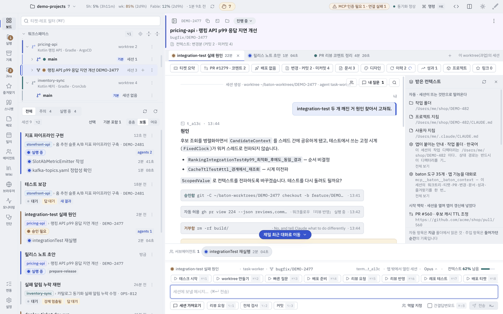
1- 1받은 컨텍스트
세션 가져오기 — 다른 세션에서 알아낸 것#
다른 세션의 대화를 다섯 항목(무엇을 하려던 세션인가 · 확정된 사실 · 결정과 이유 · 만진 파일·명령 · 미해결) 한 장으로 줄여 입력창에 넣습니다. 전송은 하지 않습니다. 앱에서 연 세션뿐 아니라 앱 밖에서 연 Claude 세션(터미널의 claude · IDE · 다른 Agent SDK 앱)도 가져옵니다.
- 입력창 아래 세션 가져오기.
- 목록에서 세션을 고릅니다. 찾기 상자(이름 · 세션 ID · 장소 · 폴더)와 장소 · 출처 · 기간 칩으로 좁힙니다. 앱 밖 세션만 보려면 출처 앱 밖.
- 목록에 없는 세션은 Claude 세션 ID(
5b3f7c1d-8e2a-…모양)를 찾기 상자에 붙여 넣고 ID 로 가져오기 를 누릅니다. - 압축본과 출처를 읽고, 필요하면 아래 글상자에서 고친 뒤 입력창에 넣기.
기록 파일 이름이 곧 ID 입니다 — ~/.claude/projects/<폴더>/<ID>.jsonl. 그 폴더에서 연 세션이면 목록의 이 워크트리 · 이 프로젝트 칩으로도 바로 찾습니다.
이 머신 · 같은 사용자의 ~/.claude/projects 에 기록이 남는 세션만입니다. claude.ai 웹 대화나 다른 머신의 세션은 가져올 수 없습니다(그 ID 를 넣으면 이유를 알려 줍니다). 목록은 최근 한 달이고 앱 밖 세션은 그중 최근 200개까지입니다. 그보다 오래된 세션은 ID 로 가져옵니다. 긴 기록은 뒤쪽을 읽어 앞부분이 잘릴 수 있습니다(출처에 「앞부분 잘림」).
창을 닫아도 됩니다 — 결과는 남고, 다시 열어 같은 세션을 고르면 곧바로 뜹니다(준비됨).
다른 세션에 요청 보내기 — 옆 자리에 일을 넘긴다#
세션 가져오기가 다른 세션에서 가져오는 길이라면, 이것은 다른 세션에 보내는 길입니다. 내가 지금 알아낸 것이 옆 worktree 의 세션이 깔고 있는 전제를 무너뜨릴 때, 그 세션으로 찾아가 같은 설명을 다시 쓰지 않아도 됩니다.
보내는 것은 언제나 나입니다. AI 가 대상과 글을 준비할 수는 있지만, 한 글자도 내 승인 없이는 나가지 않습니다 — 설정의 모든 권한 자동 승인 을 켜 두었어도 이것만은 매번 묻습니다(그 설정은 도구 승인, 즉 명령 실행·파일 쓰기에만 듣습니다). 남의 작업 자리를 움직이는 일이기 때문입니다. 자리를 비운 사이에도 이어지게 하려면 카드의 끝까지 자동 승인 을 켭니다 — 그 세션 하나에만, 끌 때까지입니다.
AI 에게 시키는 길
- 대화에서 말합니다 — 「이거 저쪽 세션에도 알려줘」 · 「의존하는 세션에 이걸 시켜줘」 · 「이 그룹 세션들에 일괄로 요청해줘」.
- 대화에 다른 세션에 요청 카드가 서고 세션은 거기서 멈춥니다(상단바 답을 기다리는 세션 에도 다른 세션에 보낼 요청 으로 오릅니다).
- 카드에서 대상을 빼고(체크 끄기) 글을 고칩니다. 고치면 모델이 내민 원안 보기 가 나와 견줄 수 있습니다.
- 답을 어떻게 정리해 달라고 할까요 에 원하는 형식을 적습니다(비워 두면 「무엇을 했는지 · 남은 것 · 막힌 것」으로 나갑니다). 이 말은 요청문 꼬리에 따로 붙어, 시키는 일과 섞이지 않습니다.
- 답이 다 오면 이 세션이 모아서 알리기 — 켜 두면 보낸 세션이 모두 답한 뒤 이 세션이 스스로 한 번 깨어나 읽고 정리해서 알려 줍니다. 끄면 결과는 각 세션에서 직접 봐야 합니다.
- 이 세션의 요청·실행은 끝까지 자동 승인 — 자리를 비울 거라면 여기서 켭니다(아래). 켜면 버튼이 보내고 · 끝까지 자동 승인 으로 바뀝니다.
- N개 세션에 보내기 — 고른 수가 버튼에 적혀 있습니다. 보내지 않으려면 보내지 않기.
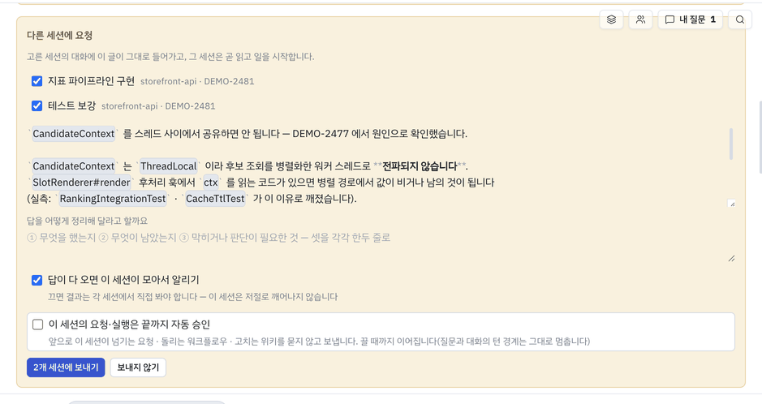
1234- 1대상(체크로 빼기)
- 2보낼 글(고칠 수 있음)
- 3답을 어떻게 정리해 달라고 할지
- 4답이 다 오면 모아서 알리기
내가 직접 보내는 길
- 고른 세션 여러 개에 — 작업 목록 머리의 선택 을 켜고 세션을 고른 뒤 요청 보내기.
- 그룹 구성원 전체에 — 그룹 행 메뉴 › 구성원 세션에 일괄 요청. 그 그룹의 worktree 에 열려 있는 세션이 대상으로 채워집니다(그룹 세션 자신은 빠집니다).
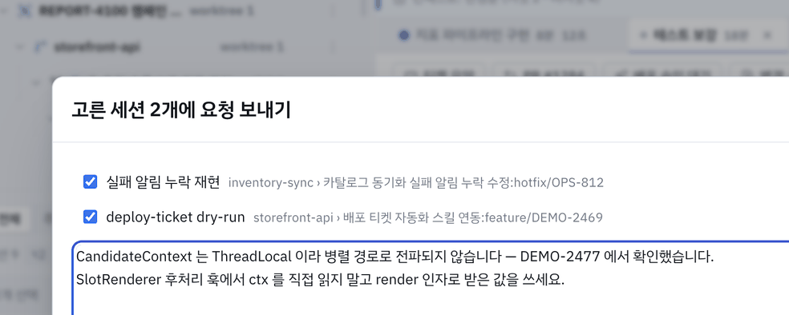
넘어간 글은 그 세션의 대화에 다른 세션의 요청 으로 섭니다 — 내가 그 대화에서 친 말로 서지 않습니다. 그래서 그 세션이 나에게 묻고 기다리던 중이었다면 그 질문은 그대로 남습니다(요청이 답을 대신하지 않습니다). 세션이 응답 중이면 보낸 말은 줄을 서서 지금 하는 일이 끝난 뒤 읽힙니다. 다만 내가 직접 보낸 글은 내가 쓴 말이므로 종전처럼 내 말로 섭니다.
조사 → 반영 → 재확인처럼 양쪽이 번갈아 손을 봐야 끝나는 일은 세션 간 대화 로 엽니다 — 목표를 하나 두고 20턴까지 승인을 묻지 않고 서로 요청을 주고받습니다.
보낸 뒤 이 세션은 기다리지 않습니다 — 보낸 곳을 알리고 그 턴을 끝냅니다(저쪽 세션 하나가 수십 분 걸릴 수 있고, 붙들고 있으면 이 대화가 그동안 섭니다). 보낸 세션들이 모두 답하면 모아서 알리기 를 켠 요청에 한해 이 세션이 스스로 한 번 깨어나, 각 세션의 답을 읽고 합쳐서 알려 줍니다 — 답을 차례로 옮겨 붙이는 것이 아니라 읽고 판단한 것을 적습니다.
먼저 보고 싶으면 그냥 「요청 결과 정리해줘」 라고 말하면 됩니다. 아직 하는 중인 세션이 있으면 그 수를 함께 알려 줍니다. 답이 길면 요약본이 오고, 한 세션의 전문 이 필요하면 그 세션을 짚어 다시 물으면 됩니다.
같은 워크스페이스에 열려 있는 세션이고, 자기 자신 · 닫힌 세션 · 워크플로우가 몰고 있는 세션은 제외됩니다(워크플로우는 그 세션의 다음 답을 기다리는 중이라, 사이에 다른 말이 끼면 실행이 어긋납니다). 한 번에 8개까지입니다 — 그보다 많으면 읽고 판단할 수 없는 승인이 됩니다.
무엇을 왜 해야 하는지, 어느 파일 · 티켓 · 브랜치인지를 글 안에 적으세요. 「위에서 말한 대로」 · 「그거」는 받는 쪽에서 뜻이 없습니다. AI 가 쓴 원안도 이 기준으로 한 번 읽어 보는 것이 이 카드를 두는 이유입니다.
대상 중 하나가 그새 닫혔으면 나머지는 보내고 일부만 보냄 으로 남습니다 — 못 간 세션과 이유가 카드와 알림에 함께 적힙니다. 답을 모을 때도 못 간 세션은 같은 목록에 보내지 못함 으로 서고, 답 없이 턴을 끝낸 세션과 아직 하는 중인 세션도 따로 구분됩니다 — 셋 다 「답이 없다」이지만 해야 할 일이 다르기 때문입니다. 앱을 다시 켜면 답하지 않은 요청 카드는 만료가 됩니다(어디에도 보내지 않았습니다) — 세션에 다시 요청해 달라고 말하세요.
세션 간 대화 — 목표를 두고 서로 요청을 주고받는다#
다른 세션에 요청 이 한 번 물어 한 번 답받는 길이라면, 이것은 끝날 때까지 양쪽이 번갈아 손을 보는 길입니다. 받은 세션은 답에 「그쪽에서 이것을 확인해 주세요」를 함께 적고, 그 답을 읽은 세션이 처리한 뒤 다시 요청합니다 — 조사 → 반영 → 재확인처럼 한 번으로 끝나지 않는 일에 씁니다.
한 번 승인하면 20턴까지 묻지 않습니다. 그 대신 승인하는 내용이 달라집니다 — 「이 글을 한 번 보낼까」가 아니라 「이 목표로 20턴까지 주고받을까」 입니다. 20턴을 다 쓰면 멈추고 다시 묻습니다(승인하면 20턴이 더 붙습니다). 턴은 오간 메시지 한 건이 1턴이라, 20턴이면 두 세션이 각자 열 번쯤 말합니다.
여는 길
- 대화에서 말합니다 — 「저 세션과 번갈아 확인하면서 이거 끝까지 맞춰줘」 · 「이 목표로 저쪽과 주고받으면서 해결해줘」.
- 대화에 다른 세션과 대화 시작 카드가 섭니다. 보통 요청 카드와 다른 점은 목표 칸이 맨 위에 서는 것입니다 — 이 문장이 턴마다 상대에게 함께 가고, 승인하는 대상도 이것입니다.
- 목표와 보낼 글을 손봅니다. 목표가 비어 있으면 보낼 수 없습니다.
- 대화 시작 · 20턴까지 — 누르면 첫 요청이 가고, 그 뒤의 왕복은 승인 카드가 서지 않습니다. 나간 것은 모두 대화에 대화 n/20턴 · 보냈음 으로 남아 되짚을 수 있습니다.
- 상대는 하나만 고를 수 있습니다 — 대화는 두 세션 사이의 것입니다. 여러 곳에 같은 일을 뿌리는 것은 일괄 요청 입니다.
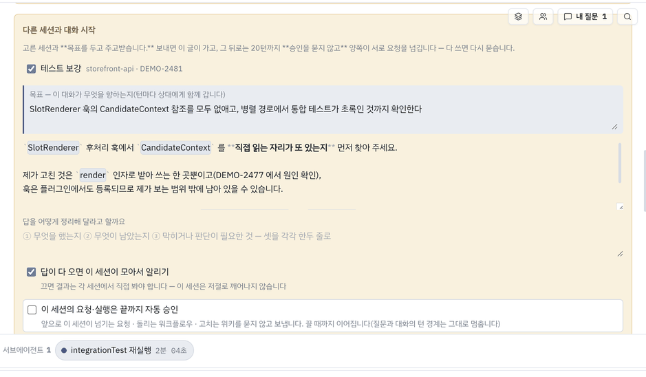
12- 1목표(턴마다 상대에게 함께 간다)
- 2첫 요청문
20턴을 다 썼을 때
- 다음 요청은 한 글자도 나가지 않고 대화를 20턴 더 이어갈까요? 카드가 섭니다 — 지금까지 몇 턴을 주고받았는지와 목표를 함께 보여 줍니다.
- 20턴 더 주고 보내기 — 예산이 20턴 늘고, 들고 있던 글이 그대로 나갑니다(승인 뒤에 AI 가 다시 글을 짜내지 않습니다).
- 여기서 그만하기 — 대화가 닫힙니다. 보낸 세션은 그것을 실패로 읽지 않고 지금까지 오간 것을 정리해서 알려 줍니다.
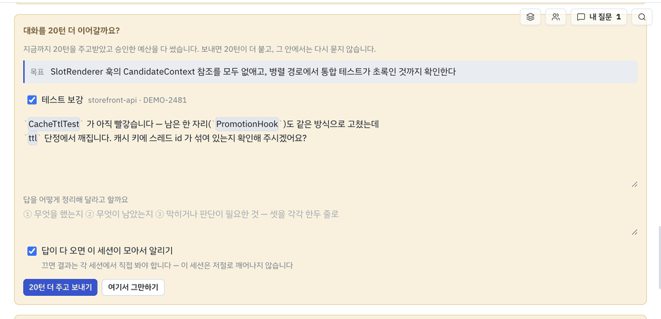
1- 1무엇을 향한 대화였나
목표가 달성되면 AI 가 대화를 닫습니다(닫힌 대화로는 더 보낼 수 없고, 쓰지 않은 턴은 사라집니다). 「저쪽과 하던 거 어떻게 됐어?」라고 물으면 지금 낀 대화의 목표 · 상대 · 쓴 턴 · 상태를 읽어 알려 줍니다. 두 세션 중 하나가 닫히거나 죽으면 그 대화도 함께 닫힙니다 — 열어 두면 상대가 예산만 쓰며 보내려 하기 때문입니다.
끝까지 자동 승인 을 켜 두어도 이 카드는 뜹니다. 그 스위치는 「카드를 사람 대신 누른다」이지만, 20턴째에 묻는 것은 이 대화를 더 할 가치가 있나 라는 판단이기 때문입니다 — 두 세션이 사람 없이 무한히 주고받는 것을 막는 유일한 자리라, 여기만은 반드시 사람이 누릅니다.
대화 흐름 — 주고받은 것을 한 장으로#
세션 간 대화 를 한 세션에서, 그 세션이 누구에게 무엇을 몇 번 묻고 답했는지를 한 장으로 봅니다. 그림에는 고른 세션에서 이어진 대화 체인만 섭니다 — 고른 세션에게 시킨 쪽, 고른 세션이 넘긴 쪽, 그 쪽이 또 넘긴 쪽까지 따라갑니다. 같은 worktree 에 있어도 이 체인에 이어지지 않은 세션은 끼지 않습니다. 세션 패널을 옮겨 다니지 않고 일이 끝난 뒤 무슨 일들을 했는지 되짚는 자리입니다.
체인은 고른 세션에서 3 단계 · 세션 20개까지 펼칩니다. 그 너머에도 주고받은 세션이 있으면 끝 노드에 +n 더 가 붙습니다 — 그 세션으로 가서(↗) 「대화 흐름」을 다시 열면 거기서부터 이어 볼 수 있습니다.
AI 를 부르지 않습니다. 노드의 글도 배선의 숫자도 이미 대화에 적힌 것을 잘라 온 것이라, 열어도 토큰이 들지 않습니다. 「↻ 다시 읽기」도 마찬가지입니다.
여는 길
- 워크스페이스 트리 에서 대화중 · 대화 승인 대기 라벨이 붙은 세션을 누릅니다(또는 상세에서 그 세션 탭을 고릅니다).
- 세션 줄의 + 옆에 대화 흐름 버튼이 서 있습니다. 고른 세션이 아무와도 주고받지 않았으면 버튼이 서지 않습니다 — 탭을 옮기면 그 세션 기준으로 다시 정해집니다.
- 누르면 화면을 거의 채우는 창이 열립니다.
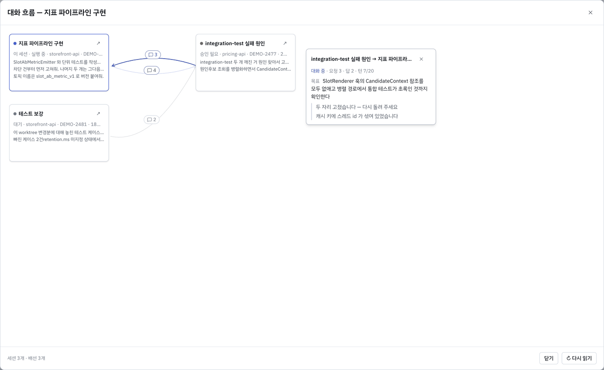
123- 1고른 세션
- 2배지 — 누르면 오간 기록
- 3기록 카드
읽는 법
| 무엇이 | 뜻 |
|---|---|
| 노드(상자) | 세션 하나. 제목 · 상태 · 자리 · 마지막 활동과 함께 그 대화의 마지막 몇 줄이 들어 있습니다. 진짜 대화창이 아니라 알아보기 위한 조각입니다 |
| 강조 테두리 노드 | 고른 세션(노드에 「이 세션」이라고 적힙니다). 나머지 노드는 그 세션에서 이어진 대화 체인입니다. 시킨 쪽이 왼쪽, 받은 쪽이 오른쪽에 섭니다 |
| 노드의 +n 더 | 체인 한계(3 단계 · 20개)에 걸려 펼치지 않은 대화 상대가 n개 더 있습니다 |
| 배선(화살표) | 한 방향의 오감. 반대 방향은 따로 섭니다 — 누가 더 많이 물었는지가 대화의 모양입니다 |
| 배선 위 배지(💬 n) | 그 방향으로 간 요청 수. 선 위에는 이것만 둡니다 — 글을 얹으면 선이 글을 가로질러 둘 다 읽히지 않습니다. 누르면 기록 카드가 열려 상태 · 요청 n · 답 m · 턴 · 목표 · 오간 요청 · 결말을 보여 줍니다. 카드는 Esc · ✕ · 빈 바탕 클릭으로 닫힙니다 |
| 진한 배선 | 아직 오가는 중인 대화 |
| 점선 배선 | 사람의 재승인을 기다리는 대화(20턴을 다 썼습니다) |
| 흐린 배선 | 끝난 대화. 배지를 누르면 목표와 결말 한 줄이 뜹니다 |
| 노드 오른쪽 ↗ | 그 세션이 있는 자리로 이동합니다. 노드 본체를 누르는 길은 두지 않았습니다 — 손이 미끄러지면 엉뚱한 자리로 넘어갑니다 |
끝나지 않은 대화만 라벨이 섭니다 — 대화중 n/20(저절로 오가는 중, 할 일 없음)과 대화 승인 대기(그 세션을 열어 카드를 처리해야 이어집니다). 대화가 끝나면 라벨은 사라집니다. 끝난 대화를 되짚는 자리는 이 그림이지 트리가 아닙니다. worktree 행에는 대화 n 으로 수만 서는데, 행이 접혀 있을 때도 「여기서 대화가 돌고 있다」가 보여야 하기 때문입니다.
한 번짜리 요청 도 배선이 됩니다(목표 줄이 없습니다). 「무엇을 주고받았나」를 보는 그림에서 그것을 빼면 그림이 거짓이 됩니다 — 묶음이 있냐 없냐는 어떻게 승인했나의 차이이지, 오간 적이 없다는 뜻이 아닙니다.
끝까지 자동 승인 — 자리를 비워도 이어지게#
요청을 넣고 자리를 뜨면, 중간에 뜬 승인 카드에서 세션이 멈춰 섭니다. 그 세션 하나에 한해 승인을 묻지 않게 하는 스위치입니다.
| 무엇이 | 자동이 되나 |
|---|---|
| 다른 세션에 요청 · 워크플로우 실행 · 위키 수정 | 묻지 않고 그 자리에서 나갑니다 |
| 도구 승인(명령 실행 · 파일 쓰기) | 이 스위치와 무관합니다 — 설정 › 모든 권한 자동 승인 의 자리입니다 |
| 질문(세션이 고르라고 물을 때) | 그대로 멈춥니다 — 허락이 아니라 사람의 선택이라 누구도 대신 답하지 않습니다 |
| 세션 간 대화 의 20턴 경계 | 그대로 멈춥니다 — 「더 할 가치가 있나」는 판단이고, 두 세션의 무한 왕복을 막는 유일한 자리입니다 |
켜는 곳 · 끄는 곳
- 요청 · 실행 카드에서 — 이 세션의 요청·실행은 끝까지 자동 승인 체크를 켜고 보냅니다. 자리를 비우기 직전에 누르는 마지막 카드가 여기라, 켜는 자리는 이곳이 먼저입니다.
- 끄기 — 대화 상태 줄의 자동 승인 중 배지 옆 지금 끄기. 배지에는 그 스위치로 나간 건수가 함께 섭니다.
끌 때까지입니다 — 턴이 끝나도 꺼지지 않습니다. 요청을 보내면 그 턴은 끝나고, 답이 와서 세션이 다시 깨어난 다음 턴에 그 다음 카드가 서기 때문입니다. 세션을 닫거나 세션이 죽으면 함께 꺼지고, 앱을 다시 켜면 모두 꺼져 있습니다.
요청·실행 카드는 승인인 동시에 마지막 검토이기도 합니다 — 대상을 빼거나 보낼 글 · 입력값을 고치는 자리입니다. 켜 두면 그 손질 없이 AI 가 쓴 그대로 나갑니다. 그래서 처음 한 번은 사람이 읽는 카드에서 켜는 것을 권합니다. 나간 것은 모두 대화에 자동 승인 · 보냄 으로 남아 되짚을 수 있습니다.
문서#
과업에 붙은 설계 문서·링크입니다. 워크플로우와 세션이 이 문서를 컨텍스트로 씁니다. 여러 레포에 걸친 그룹에도 같은 방식으로 붙일 수 있습니다 — 그 경우 문서는 구성원 worktree 가 아니라 묶음에 붙습니다.
- 정보 칩 문서 n 을 누릅니다.
- 문서 추가 에 링크(또는 로컬 HTML · Markdown · PDF)를 넣으면 제목이 자동으로 채워집니다. HTML · Markdown 은 대화 자리에서, PDF 는 PDF 창에서 열립니다.
- 앱에서 열면 글만 앱 서식(테마 · 글꼴 · 표)으로 다시 그립니다 — 문서가 들고 온 색·글꼴·레이아웃은 쓰지 않습니다. 로컬 HTML 은 표가 많아 패널 폭을 그대로 쓰고, Markdown 은 읽기 좋은 폭을 지킵니다. 원본 모습 그대로 보려면 머리의 원본 그대로 열기 로 기본 브라우저에서 엽니다.
- 행의 ▥ 는 옆에서 열기 입니다 — 화면을 좌우로 나누고 오른쪽 칸 브라우저의 새 탭에서 봅니다. 문서를 띄워 놓고 반대쪽에서 일할 때 씁니다(브라우저).
- 앱에서 여는 문서는 행에 앱 열기 · 브라우저 열기 가 나란히 섭니다 — 열어 보지 않고도 바로 기본 브라우저로 보낼 수 있습니다. 로컬 파일(HTML · Markdown · PDF)뿐 아니라 주소 문서(링크 · 슬랙)도 같습니다: 그 문서들도 대화 자리에서 열리기 때문입니다. ⌥ 나 ⌘ 를 누른 채 문서를 누르면 메뉴를 건너뛰고 바로 브라우저로 열립니다.
- 링크인 문서(링크 · 슬랙)는 행에 복사 아이콘이 섭니다 — 누르면 그 주소가 클립보드에 들어갑니다(행 ⋯ › 링크 복사 도 같습니다). 로컬 파일(HTML · Markdown · PDF)에는 서지 않습니다: 이 기기의 파일 경로라 복사해 붙일 곳이 없습니다 — 그 자리의 답은 Finder 에서 보기 입니다.
- 행의 ⋯ 로 수정 · 삭제합니다.
- 행을 누르면 앱 어디서나 같은 링크 네 갈래 메뉴가 섭니다(브라우저 · 앱에서 · 옆에서 · 주소 복사). 앱에서 열기 는 위에 적은 그 자리(뷰어 · 팝업 · PDF 창 · 웹 뷰)를 엽니다.
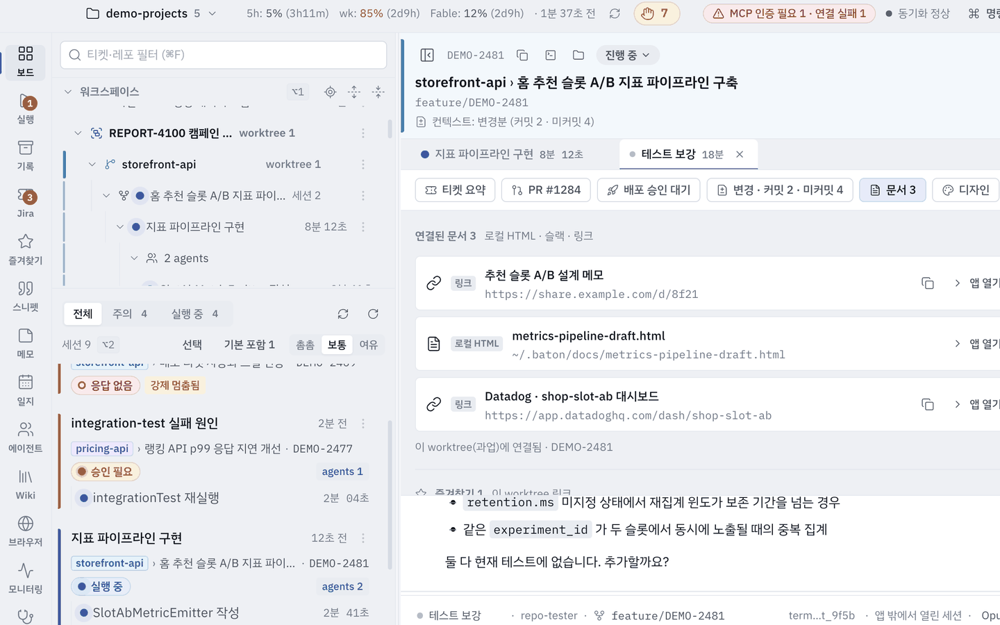
1- 1앱에서 열까 브라우저로 열까
세션에 「이 링크 문서에 등록해줘 https://…」 라고 하면 세션이 직접 등록합니다(AI 에게 baton 기능 시키기). 어디에 붙는지는 그 세션이 선 자리가 정합니다 — worktree 세션이면 그 worktree, 그룹 세션이면 그 그룹입니다.
세션이 대화에서 HTML · Markdown · PDF 를 만들거나 페이지를 만들면, 대화창의 대화의 링크 목록에서 문서 등록 을 눌러 이 목록에 붙입니다.
성과#
「그래서 무엇이 좋아졌나」를 과업마다 남깁니다. 지표 · 근거 · 신뢰도가 카드로 섭니다.
- 정보 칩 성과 n.
- 성과 추가 에서 직접 적거나, 성과 측정 워크플로우로 지표를 조회해 채웁니다.
- 연결 티켓이 있으면 성과를 Jira 에 반영 으로 티켓 설명 아래 「성과」 절을 씁니다.

PR 개발자#
worktree 브랜치의 PR 상태 · checks · 미해결 리뷰 스레드를 봅니다. GitHub 기능이 켜져 있어야 보입니다.
- 정보 칩 PR #번호(없으면 PR 없음). 칩을 눌러 열 때마다 그 PR 을 다시 읽어옵니다 — 상태 · checks · 미해결 코멘트가 지금 값으로 바뀝니다.
- 서랍을 열어 둔 채 기다릴 때는 지금 갱신 을 누릅니다(칩을 열 때 도는 것과 같은 일입니다).
- 머지 는 체크가 모두 통과 · 기준 승인 도달 · 미해결 코멘트 0 일 때만 눌립니다. 조건이 덜 찼으면 버튼이 꺼져 있고, 버튼에 마우스를 올리면 무엇이 남았는지 를 알려 줍니다.
- PR 이 자동으로 안 잡히면 다른 PR 확인 또는 ⌘⇧P 로 링크를 붙여 직접 연결합니다.
- 리뷰 요청 은 슬랙 리뷰 채널에 PR 을 남기고, 배포 준비 실행 은 커밋→리뷰 루프→PR→checks 를 돌립니다.
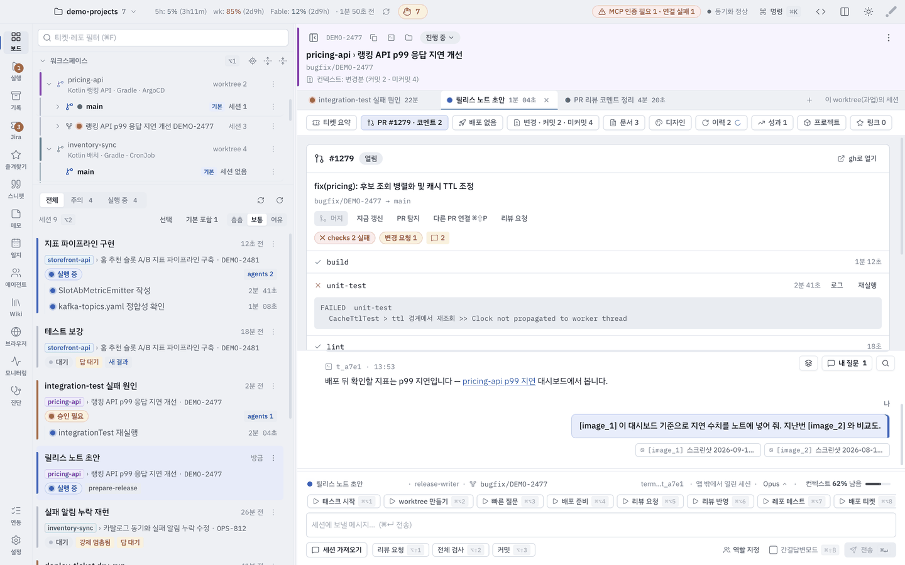
squash 로 커밋 하나로 합치고 원격 브랜치를 지웁니다. 되돌릴 수 없어서 확인 창이 한 번 서고, 확인 창에서는 Enter 가 아니라 머지 버튼을 눌러야 진행됩니다. 작업 폴더(worktree)와 로컬 브랜치는 그대로 남습니다 — 정리는 worktree 닫기 가 합니다. 마지막 판정은 GitHub 이 합니다: 레포의 보호 규칙이나 충돌로 막히면 그 사유가 그대로 뜹니다.
PR·checks 는 칩을 열 때 · 지금 갱신 으로 다시 읽습니다. 과업의 나머지(티켓 · 원격 차이 · 변경 요약)까지 함께 맞추려면 ⌘R(고른 과업) · ⌘⇧R(전체)입니다.
상단바 모두#
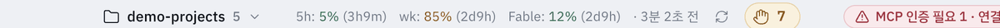
12345- 1워크스페이스
- 2구독 한도
- 3새로고침
- 4답 기다리는 세션
- 5MCP
구독 한도 · 새로고침#
5h: 5% (3h12m) 는 5시간 창 사용률과 초기화까지 남은 시간, wk: 85% (2d9h) 는 주간 창입니다. 옆의 「n초 전」 은 마지막으로 읽은 시각입니다.
모델 하나에만 걸린 주간 한도가 있으면 주간 칸 뒤에 그 모델 이름으로 한 칸 더 섭니다 — 예: Fable: 12% (2d9h). 이름은 계정에 내려온 표기명 그대로입니다. 계정에 그런 한도가 없으면 칸도 없지만, 한 번 선 칸은 그 뒤로 사라지지 않습니다 — 값을 못 읽은 때에는 Fable: - 로 자리를 지킵니다.
- 는 「한도가 없다」가 아니라 「이번에 못 읽었다」사용량을 너무 자주 읽으면 한동안 모델별 한도만 빠진 답이 옵니다(5시간 · 주간 숫자는 계속 갱신됩니다). 그때 그 칸은 - 로 서 있다가, 다음에 제대로 읽히면 숫자가 다시 채워집니다. 급하면 옆의 새로고침을 한 번 누르지 말고 몇 분 두었다가 누르세요 — 자주 부를수록 늦게 풀립니다.
- 「n초 전」 옆 새로고침 아이콘을 누르면 지금 다시 읽습니다.
- 열린 세션이 하나도 없으면 새로 읽지 못했다는 안내가 뜹니다 — 세션을 하나 열고 다시 누릅니다.
사용량은 열린 세션을 통해서만 읽을 수 있어서, 세션이 하나도 없으면 새로 읽지 못합니다. 그래도 표시가 사라지지는 않습니다 — 앱을 껐다 켜도 마지막으로 읽은 값이 그대로 서 있고, 옆의 「n초 전」 이 그게 언제 읽은 값인지 말해 줍니다. 다만 그 사이에 창이 초기화되는 시각이 지났으면 그 칸만 ...% 가 됩니다 — 지난 창에서 쓴 양이지 지금 창의 양이 아니기 때문입니다. 세션을 하나 열고 한 번 주고받으면 새 값이 채워집니다.
답을 기다리는 세션#
세션이 사람의 확인·승인·선택을 기다리면 상단바에 손 아이콘 + 숫자 배지가 뜹니다. 0 이면 보이지 않습니다. 내가 열지 않은 세션(워크트리 생성 · 워크플로우가 연 것)도 같은 배지에 섭니다.
- 배지를 누르면 기다리는 것이 세션별로 묶여 뜹니다 — 묶음 이름이 워크트리명 - 세션명 이고, 오래 기다린 세션이 위입니다. 한 세션 안에서는 그 자리에서 끝낼 수 있는 도구 승인 이 먼저 옵니다.
- 세션을 닫으면 그 세션이 기다리던 승인·질문도 함께 사라집니다 — 답할 세션이 없는 질문은 배지에 남지 않습니다.
- 도구 승인 은 그 자리에서 승인 / 거절.
- 고르라는 질문 은 선택지를 미리 보여 줍니다. 세션으로 가면 대화의 답을 기다립니다 카드에서 골라 답 보내기.
- 답을 기다리는 대화 는 세션으로 또는 숨기기, 워크플로우 확인 은 답하기 · 실행으로.
- 다른 세션에 보낼 요청 은 세션으로 만 있습니다 — 여기서 보내지 않습니다. 대상을 빼고 글을 고치는 것이 그 승인의 실질이라, 대화의 요청 카드 에서 합니다.
- 뗄지 정할 문서 는 그 자리에서 떼기 / 떼지 않기 — 묻는 것이 「이 한 건을 뗄까」 하나뿐이고, 무엇을 어디에서 떼는지(자리 · 제목 · 주소)가 행에 다 적혀 있습니다. 자세한 것은 말로 문서 떼기.
- 새로 열린 세션 은 세션으로 또는 지우기(목록에서만 뺍니다 — 세션은 그대로 열려 있습니다).
워크트리 생성 · 워크플로우가 세션을 만들면 종전에는 그 순간 보던 화면이 그 세션으로 갈아치워졌습니다. 이제는 보던 자리를 그대로 두고 우하단 토스트 세션이 열렸습니다 와 이 배지로만 알립니다 — 갈지 말지는 사람이 정합니다. 내가 직접 연 세션(세션 탭 + · ⌘N · 트리 메뉴의 세션 추가)은 누른 자리에서 바로 열리므로 여기 서지 않습니다.
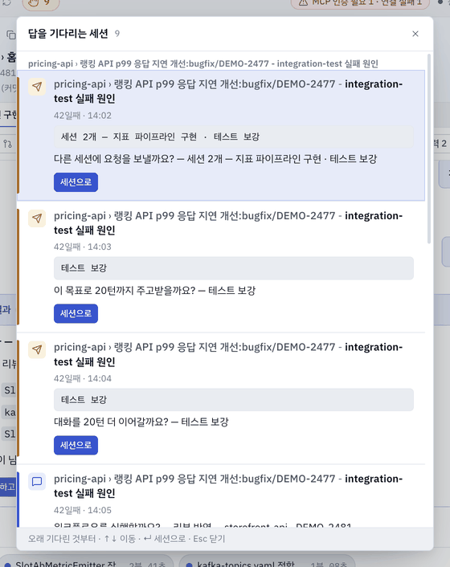
⌘K 명령 팔레트#
어디로 갈지·무엇을 할지 한 번에 찾습니다. 세션 · 워크트리 · 프로젝트 · 티켓 · 즐겨찾기 · 문서 · 워크플로우 · 에이전트 · 성과 · 위키가 종류별로 묶여 나옵니다.
- ⌘K 또는 상단바 명령.
- 검색어를 치고 ↑↓ 로 고른 뒤 Enter — 그 자리로 가거나, 워크플로우를 실행하거나, 에이전트에게 일을 맡깁니다.
- 종류를 알면
@로 범위를 잡습니다:@즐겨찾기 배포·@에이전트 시안·@위키 롤백. Tab 으로 자동완성, 빈 입력에서 ⌫ 로 풉니다. - ⌥1~⌥9 로 종류 필터를 켜고 끄고, ⌥0 으로 초기화합니다.
위키는 제목 · 라벨 · 내용으로 찾힙니다. 그리고 세션이 알려 준 위치(baton://wiki/wn_…)나 문서 아이디를 그대로 붙여넣어도 그 문서가 나옵니다 — 위키 화면의 검색창과 같은 규칙입니다.
대화 속의 baton:// 주소는 눌러서 바로 갈 수 있습니다. 브라우저가 아니라 위키 화면이 열리고, 트리가 접혀 있었다면 그 줄이 보이도록 펴집니다.
에이전트 화면(⌘9)까지 가지 않아도 됩니다 — 여기서 역할을 찾아 Enter 하면 그 자리에서 업무 요청 폼이 열리고, 시작하면 그 세션으로 데려갑니다. 역할 이름이 영문이라 하는 일로도 찾힙니다(시안 → 디자인 검사). 목록의 소속 칸에는 출신(번들 · 수정됨 · 사용자)이 섭니다.
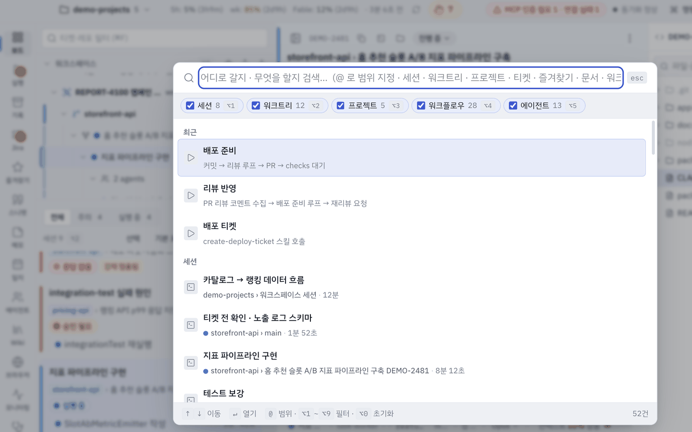
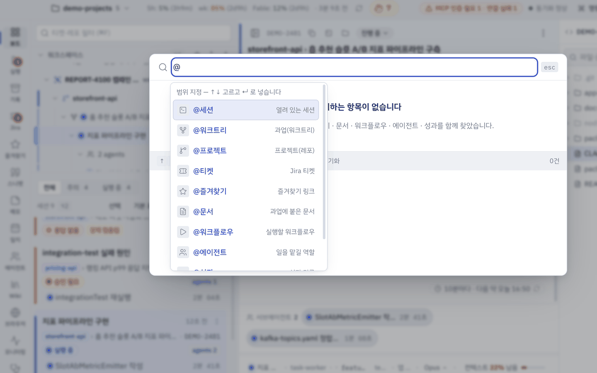
⌘⇧F 통합 검색#
앱의 거의 모든 것을 찾습니다 — Jira 티켓 · 활성/보관 과업 · 세션 · 대화 · 문서 · 산출물 · 성과 · 메모 · 즐겨찾기 · PR · 레포.
문서는 어디에 붙였든 찾힙니다. 소속 칸이 어디 것인지 말합니다 — worktree 에 붙인 문서는 그 레포 이름, 그룹에 붙인 문서는 그룹 · 이름. 그룹은 레포가 아니므로 기록 화면의 필터(보관 · 성과 있음 · 자동 사냥 · 레포 한정)를 걸면 그룹 문서는 목록에서 빠집니다.
- 어느 화면에서든 ⌘⇧F.
- 검색어를 칩니다. 결과를 누르면 그 자리로 갑니다.
- 더 보려면 전체 보기 — 기록 화면에서 필터와 함께 봅니다.
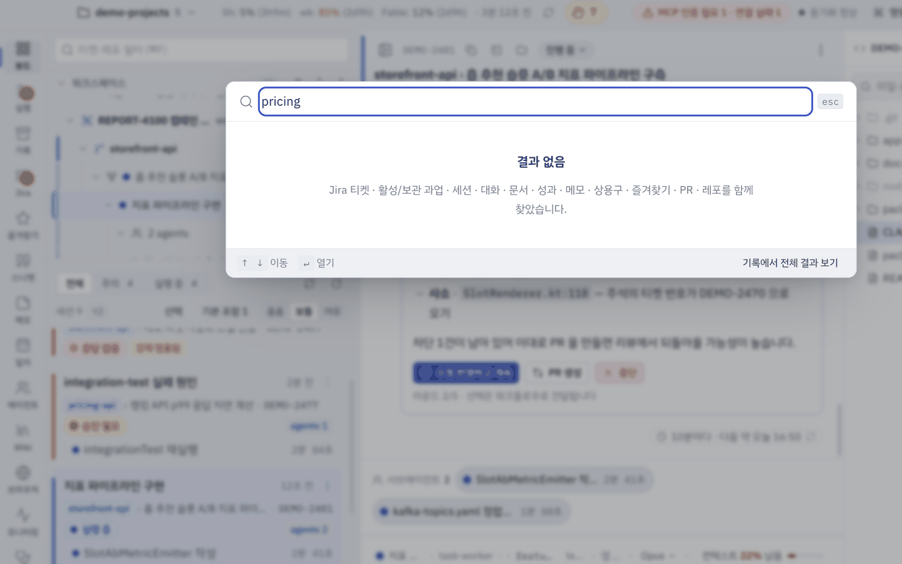
화면 분할 · 테마 · 상태 표시#
- 화면 분할 (⌘⇧S) — 오른쪽에 화면을 하나 더 엽니다. 오른쪽 칸에도 레일이 서고, 번호 키는 손이 있는 칸으로 갑니다. 가운데 선을 끌어 폭을 바꿉니다. 버튼과 ⌘⇧S 는 같은 일을 하고, 다시 누르면 한 칸으로 돌아옵니다 — 접으면 손도 왼쪽 칸으로 돌아옵니다.
- 테마 전환 — 다크 → 라이트 → 시스템 순으로 바뀝니다.
- MCP 배지 — MCP 서버가 인증 필요·연결 실패면 빨갛게 뜹니다. 누르면 진단에서 재인증합니다.
- 동기화 정상 · 오른쪽 끝 바통 마크 — 무언가 도는 동안 바통이 색을 띠고 돕니다.
창을 나눠 쓰는 동안 뜨는 창(워크플로우 실행 전 입력 — worktree 만들기 · 태스크 시작 · 예약 저장 … · 티켓 고르기 · 세션 맥락)은 그 창을 연 칸만 덮습니다. 반대쪽 칸은 그대로 살아 있어서, 창에 넣을 값을 옆 칸에서 찾아보고 돌아올 수 있습니다 — 누르기 · 스크롤 · 키보드 항해가 모두 됩니다. 반대쪽 칸을 눌러도 창은 닫히지 않습니다(「바깥을 누르면 닫힌다」의 바깥은 그 칸 안의 여백입니다). Esc 는 그대로 맨 위 창 한 장을 닫습니다.
갇히는 칸은 그 창을 연 칸입니다 — 연 뒤에 손이 옆 칸으로 가도 창은 제자리에 있습니다(옆 칸에서 값을 찾아 오는 것이 이 기능의 목적입니다). 칸이 640px 보다 좁으면 예전처럼 창 전체를 덮습니다 — 좁은 칸에 가두면 창 안이 접혀 읽을 수 없기 때문입니다. 창이 떠 있는 동안 분할선을 끌어 그보다 좁히면 그 자리에서 창 전체로 돌아가고, 그때는 창을 닫아야 다시 넓힐 수 있습니다. 앱 전체에 관한 창(명령 팔레트 · 통합 검색 · 설정 · 워크스페이스 추가 · 첫 실행 셋업)도 언제나 창 전체입니다.
새로고침#
⌘R 은 새로고침 (고른 과업) — 그 worktree 의 티켓·PR·checks 를 다시 가져옵니다. ⌘⇧R 는 전체 새로고침(최대 25건)입니다. 앱 메뉴 보기 에도 있습니다.
브라우저 화면에서 페이지를 보고 있으면 ⌘R 은 그 웹페이지를 다시 읽습니다 — 앱의 데이터 새로고침이 아닙니다. 타일 모드는 해당하지 않습니다(타일마다 그 세션이 몰고 갑니다). ⌘⇧R(전체 새로고침)은 어디서나 앱의 일입니다.
Jira · 자동 사냥 Jira 기능 켜짐#
레일 Jira(⌘4)는 내 티켓을 일하는 목록으로 보여 줍니다. 설정에서 Jira 를 끄면 이 화면은 레일에서 사라집니다.
내 티켓#
- 위쪽 검색(⌘F)으로 ID·제목을 찾고, 칩으로 거릅니다: 전체 · 담당 · 보고 · 에픽 · task · 새 댓글 · 수정필요 · 상태(진행 중 · 검토 중 · 할 일 · 보류 · 완료).
- 목록 / 트리 로 보기를 바꿉니다(트리는 에픽·이니셔티브 아래로 묶음). 내 목록에 없는 상위(이니셔티브·에픽)는 묶음 줄로 서는데, 그 줄에도 보통 행과 같이 티켓 ID · 바로가기 · ID 복사 · 링크 복사 가 있습니다 — 키보드는 o(Jira 에서 열기) · c(ID 복사) · ⇧C(링크 복사). 상위를 이름으로만 아는 묶음(예전 방식으로 연결된 티켓)은 키가 없어 이름만 섭니다.
- 행의 상태 pill 에서 상태를 바로 바꾸고, 오른쪽 아이콘으로 worktree 를 열거나 작업을 시작합니다.

단축키 ? 버튼이 이 화면의 키 목록을 보여 줍니다. ⌥1 티켓 목록 · ⌥2 필터 칩.
티켓 ID 복사 · 링크 복사#
행마다 복사 단추가 둘입니다. 브라우저에서 티켓을 열어 주소창을 긁어 올 일이 없습니다.
| 단추 | 클립보드에 담기는 것 | 키 | 쓰는 자리 |
|---|---|---|---|
| 티켓 ID 복사 | DEMO-2481 | c | 브랜치 이름 · 커밋 메시지 · 대화에서 티켓을 부를 때 |
| 링크 복사 | https://…/browse/DEMO-2481 | ⇧C | 슬랙 · 코멘트 · 메일에 건넬 때 |
- 담기는 것은 주소 한 줄입니다 — 제목을 붙이거나 마크다운 링크(
[키](주소))로 만들지 않습니다. 어디에 붙여 넣어도 깨지지 않는 쪽을 골랐습니다. - 행 메뉴(⋮)에도 티켓 ID 복사 아래에 링크 복사 가 있습니다.
- 묶음 줄(내 목록에 없는 에픽·이니셔티브)에서도 똑같이 됩니다. 주소를 알 수 없는 묶음 줄(이름으로만 연결된 상위)에는 단추도 메뉴 항목도 서지 않습니다 — 눌러서 「주소가 없습니다」를 읽게 하지 않습니다.
- 복사에 성공하면 그 단추가 1.4초 동안 ✓ 로 바뀝니다. 실패하면(창이 포커스를 잃었거나 클립보드 권한이 거부됨) 성공한 척하지 않고 알림으로 말합니다.
관리 필드 · ⚠ 수정필요 배지#
앱이 「비면 ⚠」로 보는 필드는 그 Jira 에 실제로 있는 것만입니다. 없는 값을 「누락」이라고 말하지 않습니다.
~/.baton/app.config.json 의 jira.requiredFields 가 정합니다. 기본은 ["due"](기한 하나) — 기한은 어느 Jira 에나 있는 내장 필드입니다. 여기 적어도 그 Jira 에 없는 필드는 배지를 띄우지 않습니다.
man-day 추정 같은 customfield_XXXXX 는 그 Jira 인스턴스에서만 뜻이 있습니다. 앱이 들고 있으면 그 필드가 없는 조직에서 열은 늘 「—」, 배지는 전 티켓 ⚠, 고쳐도 아무것도 안 써집니다. 그런 필드를 다루려면 ~/.baton/workflows/ 에 조직 전용 워크플로우를 두는 것이 맞습니다(워크플로우 고치기).
자동 사냥#
앱이 네 시간마다 최근 7일 안에 들어온 내 task 를 훑어, 할 수 있는 것 을 골라 둡니다. 코드 작업은 승인해야 자리가 열리고, 답변으로 끝나는 일은 승인해야 댓글이 나갑니다.
- Jira › 자동 사냥 탭(숫자는 내가 확인 안 한 제안 수).
- 확인 필요 무리의 행을 펼쳐 계획·판정·레포를 봅니다. 레포가 틀렸으면 바꾸고 다시 판정합니다.
- 승인 하면 worktree·세션이 열리고 작업이 시작됩니다(답변 유형은 댓글).
- 지금 훑기 는 바로 한 번 더 훑고, 확인 필요 다시 검사 는 판정을 다시 씁니다.
티켓 이름 밑에는 상위 로 시작하는 작은 줄이 붙습니다 — 그 티켓이 속한 상위 티켓(에픽) 의 이름이고, 누르면 그 에픽이 Jira 에서 열립니다. 상위 티켓이 없는 티켓에는 이 줄이 없습니다.
목록은 상위 에픽으로 먼저 묶여 섭니다(에픽 키 오름차순). 같은 에픽 안에서는 종전대로 티켓이 생긴 최신 순 이고, 상위 에픽이 없는 티켓은 맨 아래 에 모입니다.
이어서 하기#
내가 이미 손대던 티켓(worktree·세션이 있는 티켓)도 사냥에 올라옵니다. 이런 행에는 진행 중 · 이어서 딱지가 붙고, 승인하면 새 자리를 열지 않고 하던 자리에서 이어서 합니다.
- 진행 중 · 이어서 행을 펼치면 이어서 할 자리(worktree·세션·어디까지 했는지)가 한 줄로 보입니다.
- 승인하고 이어서 — 워크플로우가 먼저 진행 상황(커밋·문서·PR·대화)을 파악하고, 애매한 것은 묻고, 남은 단계만 진행합니다.
- 실행이 끝났거나 멈췄는데 자리가 살아 있으면 이어서 진행 이 다시 섭니다.
작업 시작 워크플로우를 이미 있는 티켓에 돌려도 같은 규칙입니다 — 사람이 하던 데까지는 두고 그 뒤를 잇습니다.
실행 · 워크플로우 모두#
워크플로우는 「티켓 만들기 → 브랜치 → 세션 → PR」 같은 여러 단계를 한 번에 돌리는 정의(YAML)입니다. 레일 실행(⌘2)에서 고르고 돌리고 지켜봅니다.
실행 화면#

레일 실행 옆 회색 숫자는 지금 진행 중인 워크플로우 실행 수입니다 — 시작 대기 · 실행 중 · 에이전트 대기 · 내 답 대기가 모두 들어가고, 끝나거나 실패·중단되면 빠집니다. 실행이 다른 워크플로우에 일을 나눠 맡긴 경우(위임)에는 맡긴 실행이 도는 동안 한 건으로 셉니다. 0 이면 숫자가 없습니다. 내 답을 기다리는 실행이 있으면 그 자리에 주황 숫자(기다리는 건수)가 먼저 섭니다 — 그동안 진행 중인 실행 수는 버튼에 마우스를 올리면 툴팁으로 봅니다.
- 워크플로우 이름을 누르면 설명과 단계가 펼쳐집니다. ⌥1 목록 · ⌥2 실행 기록.
- 워크플로우 검색 — 목록 위 검색칸에 id · 제목 · 설명 · 전용 이름을 칩니다(띄어 쓴 말은 모두 들어간 것만). 찾은 말은 목록에서 색으로 칠해집니다. 손이 목록에 있을 때 ⌘F 로도 잡힙니다. 칸에서 ↓(또는 Enter) 첫 행으로 · 맨 위 행의 ↑ 칸으로 · Esc 또는 칸 오른쪽 ✕ 로 검색어 지우기. 칸의 Enter 는 실행하지 않습니다 — 행에서 Enter 를 한 번 더 누르면 실행입니다.
안 보이는 워크플로우 — 꺼 둔 기능
워크플로우마다 어떤 연동이 있어야 도는지가 정의에 적혀 있습니다(Jira · 슬랙 · GitHub). 설정 › 기능 에서 그중 하나를 끄면 그 워크플로우는 목록에서 사라집니다 — 실행 목록뿐 아니라 ⌘K 팔레트 · 대화 입력창 위의 칩 · 트리와 Jira 의 버튼 · 세션이 말로 돌리는 길(실행 카드) · 예약 까지 함께입니다. 켜 두지 않은 연동으로 인증을 요구하는 화면을 보지 않게 하려는 것입니다.
다만 있으면 더 쓰는 연동은 숨기는 근거가 되지 않습니다. 예를 들어 worktree 만들기 는 티켓을 넣었을 때만 Jira 를 읽고, 비우면 브랜치와 세션만 만듭니다 — 그래서 Jira 를 꺼도 목록에 그대로 남습니다. 대신 실행 전 입력 창에 「꺼진 연동: Jira — 그 단계는 건너뛰고 나머지는 그대로 실행됩니다」 가 한 줄 섭니다. 아래 표의 필요 칸에 (선택) 이 붙은 것이 그런 연동입니다.
세션이 MCP 로 하는 일은 앱 연동과 다른 길입니다. 세션의 Atlassian MCP 가 티켓을 만드는 워크플로우는 앱 Jira 연동을 꺼 두어도 목록에 남고 끝까지 돕니다 — 앱 Jira 는 만든 티켓의 요약·상태를 캐시에 채우는 데만 쓰이고, 없으면 키만 남기고 지나갑니다(요약은 나중에 채워집니다). 대신 MCP 인증이 만료돼 있으면 실행 첫 걸음에서 「atlassian 인증 필요 — 재인증하고 계속 / 취소」 로 멈춥니다. 세션도 티켓도 만들어지지 않습니다.
줄어든 목록 위에는 왜 줄었는지가 한 줄로 섭니다 — 꺼진 기능 수와 숨긴 워크플로우 수, 걸어 둔 예약이 있으면 몇 개가 서 있는지, 그리고 설정에서 켜기. 마우스를 올리면 숨긴 워크플로우 이름이 보입니다. 다시 켜면 그대로 돌아옵니다.
이름으로 못 찾으면 — AI 추천 · 새로 만들기
- AI 로 찾기 → 없으면 새로 만들기 — 검색어를 치면 목록 아래에 칸이 하나 섭니다. 이름으로 못 찾았거나 찾은 것이 원하는 게 아니면 AI 로 찾기 를 누르세요. 검색어를 「하려는 일」로 읽고 이미 있는 워크플로우 중 맞는 것을 최대 3개 권합니다(왜 맞는지 한 줄과 함께). 권한 것마다 실행 · 보기(검색어를 지우고 그 행을 펼칩니다).
- 권한 것이 없거나 맞지 않으면 「검색어」로 새로 만들기 — 워크플로우 추가 창이 검색어를 채운 채 열립니다. 모델을 쓰지 못하면 낱말로 고르고 그 사실을 칸에 적습니다. 기다리는 동안에도 새로 만들기는 누를 수 있습니다.
- 1추천
- 2새로 만들기
실행 기록 거르기
- 실행 기록은 워크플로우 · 트리거(수동 실행 / 예약 실행) · 기간 · 워크트리로 거릅니다. 행의 상세 · 중단 · 다시 실행 — 실패 지점부터 이을 수 있는 실패에는 다시 실행 대신 이어서 실행 이 섭니다(이어서 실행). 예약이 돌린 행에는 예약 과 반복 시각이 붙습니다(워크플로우 예약).
- 이 워크플로우 실행만 — 왼쪽 목록 행의 기록 버튼(실행 왼쪽의 두루마리 아이콘)을 누르면 오른쪽 실행 기록에 그 워크플로우의 실행만 남습니다. 버튼이 색으로 켜지고 그 행 왼쪽에 테가 서며, 워크플로우 칸에 이름이 들어갑니다. 다시 누르거나 워크플로우 칸의 ✕, 필터 해제 로 풉니다. 다른 행의 기록 버튼을 누르면 필터가 그 워크플로우로 옮겨 갑니다.
- 워크플로우 칸은 자동완성입니다 — 누르거나 ↓ 로 펼치면 기록에 있는 워크플로우가 제목 · 건수와 함께 뜨고, id 나 제목 일부를 치면 좁혀집니다. ↑ ↓ 로 옮기고 Enter 로 고릅니다. Esc 는 친 말을 되돌립니다(고른 값은 그대로). 맨 위 워크플로우 전체 를 고르거나 칸 오른쪽 ✕ 를 누르면 풀립니다.
- 기간 은 전체 · 오늘 · 어제 · 7일 · 30일 을 눌러 고릅니다(7일 · 30일은 오늘을 넣어 셉니다). 옆의 달력 칩에 지금 걸린 실제 날짜가 적힙니다. 달력 칩을 누르면 달력에서 시작일과 끝날을 찍어 아무 범위나 고릅니다 — 기록이 있는 날에는 점이 찍혀 있습니다.
- 1기록 버튼 — 이 워크플로우 실행만
- 2워크플로우 칸(✕ 해제)
- 3기간 칩
기본으로 들어 있는 워크플로우(설치본 기준 — 데모 그림에는 일부만 보입니다):
| 워크플로우 | 하는 일 | 필요 |
|---|---|---|
| 새 작업 시작 | Jira 티켓을 만들고 브랜치·worktree·세션을 준비해 작업 리드에게 위임 | Jira · Atlassian MCP |
| 작업 시작 | 이미 있는 task 로 worktree·세션을 열고, 원하면 HLD/LLD → 구현 → PR → 리뷰 반영까지(이어서 하기) | Jira · GitHub |
| worktree 만들기 | 브랜치 이름으로 worktree 를 만들고 세션을 엶(티켓을 넣으면 그 티켓을 읽어 맥락으로 넣고 이어 줌) | Jira (선택) |
| 빠른 확인 | 기본 worktree 세션에서 질문에 답(코드 변경 없음) | — |
| 배포 준비 | 커밋·푸시 → 배포 전 리뷰 루프 → PR → checks 대기 → Jira 전이 | GitHub · Atlassian MCP |
| 배포 준비(전체) | 논리 단위 커밋 → 5인 동시 리뷰 → 반영 → 2인 재리뷰 → push·PR·checks | GitHub · Atlassian MCP |
| 리뷰 요청 | PR 링크를 슬랙 리뷰 채널에 남겨 리뷰 요청 | 슬랙 · GitHub |
| 리뷰 반영 | 미해결 리뷰 코멘트를 모아 반영하고 다시 리뷰 루프 | GitHub |
| 레포 테스트 | 프로젝트의 테스트를 실행하고 판정 — 환경을 고르면 그 환경의 테스트 방식대로 | — |
| 환경 테스트 (한 건) | 프로젝트 · 환경 · 테스트 하나를 돌려 판정(보통은 레포 테스트가 부릅니다) | — |
| PRD 초안 쓰기 기획 | 주제·배경을 받아 PRD 초안을 쓰고 확인·수정한 뒤 파일로 남김 — 레포 불필요 · 기획·통합 프로젝트에서 섭니다(가이드) | — |
| 테스트케이스 만들기 기획 · QA | 기획서를 받아 정상·경계·예외 테스트케이스 표를 만들고 확인 뒤 파일로 남김 | — |
| 기획 인계 | 기획 여섯 단계를 한 글로 말아 개발 프로젝트에 넘깁니다 — 그 레포에 자리를 만들고 세션에 첫 지시로 줍니다(기획) | — |
| 챕터 시작 | 커리큘럼의 챕터 하나를 시작 — chapter/<번호>-<제목> 자리를 만들고 선생을 붙인 세션을 엽니다 | — |
| 챕터 학습 문서 만들기 | 끝낸 챕터의 노트를 표·도식이 있는 한 장짜리 HTML 로 정리해 그 챕터의 문서로 등록 — 나중에 다시 볼 때 쓰는 문서입니다(「끝냄」을 누르면 저절로 돕니다) | — |
| 커리큘럼 짜기 | 무엇을 공부할지 받아 챕터 차례와 학습 방식을 정해 그 학습 프로젝트에 저장 — 학습 프로젝트를 만들면 저절로 돕니다(묻지 않습니다). 목록에는 학습·통합 프로젝트에서만 섭니다 | — |
| worktree 닫기 | 과업을 기록으로 옮기고 worktree 제거(요약 선택) | — |
| 폴더 없는 worktree 정리 | 폴더가 밖에서 지워진 worktree 를 한 번에 기록으로 옮김 — 프로젝트를 비우면 전체(닫기) | — |
| 성과 측정 | 배포 전후 지표를 조회·비교해 성과 기록 | 지표 MCP |
| 일괄 변경 요청 | 프로젝트 여럿에 같은 요청 — 레포마다 브랜치·세션·PR·리뷰 요청(일괄 변경) | GitHub · 슬랙 |
| 변경 적용 | 요청 하나를 프로젝트 하나에 적용해 PR·리뷰 요청까지 | GitHub · 슬랙 |
| 문서 정정 PR | 코드와 어긋난 문서 한 곳을 고쳐 PR | GitHub · 슬랙 |
| 워크스페이스 추가 | 프로젝트마다 프로젝트 맵을 병렬 생성 | — |
| 이니셔티브·에픽 분해 | 이니셔티브·에픽 아래 티켓을 세션과 상의해 만들고 worktree 준비 | Atlassian MCP |
| 슬랙 질문에 답하기 | 슬랙 메시지 링크를 받아 관련 레포에 동시에 묻고 답을 합쳐 스레드에 답글 | 슬랙 |
| 월말 회고 | 월말 회고 초안을 Confluence 에 남김 | Atlassian MCP |
설정에서 GitHub·Jira·슬랙을 끄면 그 기능이 필요한 워크플로우가 목록·팔레트·입력창 칩에서 사라집니다.
필수 워크플로우 · 사용자 워크플로우#
앱 안에 든 정의로만 도는 워크플로우가 필수 입니다 — 사용자 폴더(~/.baton/workflows)에 같은 이름 파일을 두어도 읽지 않습니다. 그래서 설치 직후 그 폴더가 비어 있어도 앱의 버튼이 그대로 동작합니다. 목록에서 필수에는 필수, 내가 만들거나 가져온 것에는 사용자 가 붙습니다.
버튼이 있다고 필수인 것은 아닙니다. 버튼은 그 이름의 정의가 있으면 서고, 그 정의가 앱에 든 것인지 사용자 폴더의 것인지는 가리지 않습니다. 그래서 조직마다 값이 다른 워크플로우는 버튼이 있어도 필수에서 내려 둡니다 — 리뷰 요청이 그렇습니다(리뷰 채널과 부를 봇). 고치지 못해서 아무 일도 안 일어나는 쪽이, 고쳐서 반쯤 도는 쪽보다 나쁘기 때문입니다.
- 필수 — worktree 닫기 · worktree 만들기 · 새 작업 시작 · 작업 시작 · 워크스페이스 추가 · 신규 프로젝트 추가 · 이니셔티브·에픽 분해 · 성과 측정 · 레포 테스트 · 배포 준비. 앱의 버튼이 이름으로 부르고 조직마다 다를 것이 없는 것들입니다.
- 필수가 아닌 것 — 리뷰 반영 · 환경 테스트 · 리뷰 요청. 조직마다 전제가 달라(리뷰봇 문구 · 테스트 정의 · 리뷰 채널과 부를 봇) 사본으로 고쳐 쓸 수 있게 두었습니다. 다른 워크플로우가 이들에게 일을 넘길 때는 입력 이름만 지키면 됩니다.
- 사용자 — 사용자 폴더에 있는 정의. 지금처럼 그 폴더에서 돌고, 고치고 지울 수 있습니다.
- 표시가 없는 것 — 앱에 들어 있지만 앱이 이름으로 부르지 않는 것. 종전처럼 고치면 사용자 폴더에 수정본이 생기고 기본값으로 되돌리기 로 돌아갑니다.
필수는 고칠 수 없습니다. 펼친 행의 버튼이 정의 보기 로 바뀌고, 저장 · 말로 고치기 · 전용 걸기 · 삭제 · 가져오기로 덮어쓰기가 모두 막힙니다. 고친 정의 하나가 그 버튼의 기능(예: worktree 닫기)을 반쯤 돌다 멈추게 할 수 있기 때문입니다. 바꾼 흐름이 필요하면 정의 보기 창의 사본 만들기 로 <이름>-copy 사용자 워크플로우를 만들어 고치세요. 사본은 「실행」으로 돌고, 앱의 버튼은 계속 원본을 부릅니다.
같은 이름의 사본은 등록할 수 없습니다
필수 워크플로우와 id(파일 이름)가 같거나 표시 이름(title)이 같은 워크플로우는 만들기 · 정의 저장 · 가져오기에서 거절되고 사유가 그 자리에 뜹니다. 표시 이름은 대소문자와 앞뒤 · 연속 공백을 무시하고 비교합니다(「 Worktree 닫기」 도 「worktree 닫기」 와 같은 이름). 사본은 다른 이름으로 만드세요 — 사본 만들기 는 자동으로 「… (사본)」 이름을 붙입니다.
작동 불가 사본 — 파일을 직접 넣은 경우
~/.baton/workflows 에 필수와 같은 id 나 같은 표시 이름의 파일을 직접 넣었거나 예전에 고쳐 둔 파일이 남아 있으면, 앱은 원본만 씁니다. 그 파일은 실행 목록에 서지 않고 실행할 수도 없으며, 목록 위 작동 불가 사본 칸에 작동 불가 표시와 이유 · 파일 경로와 함께 섭니다.
- 이름 바꾸기 — 새 id(파일 이름)와 새 표시 이름을 적고 바꾸기. 파일 이름과 정의의 id · title 이 함께 바뀌고, 곧바로 사용자 워크플로우로 목록에 섭니다. 다른 워크플로우와 겹치거나 필수와 같은 이름이면 사유가 폼에 남습니다.
- 원본과 비교 — 사본과 앱 기본 정의를 나란히 봅니다. 무엇을 고쳐 두었는지 보고 고르세요.
- 삭제 — 한 번 더 지웁니다 를 눌러야 지워집니다. 사본 파일만 지우고 원본은 그대로입니다.
- 1작동 불가
- 2고치는 버튼
같은 id 의 사본이 남아 있으면 필수의 정의 보기 창이 그 경로를 알려 주고, 내 편집을 사본으로 옮기기(내용으로 「… (사본)」 워크플로우를 만들고 원래 파일은 치움) 또는 그 파일 지우기 를 고를 수 있습니다. 앱이 먼저 지우지는 않습니다.
워크플로우 실행하기#
- 목록 행의 실행(또는 ⌘K 에서 워크플로우 이름, 입력창의 워크플로우 칩).
- 입력 팝업에서 대상·옵션을 채웁니다. 지금 보고 있는 worktree 는 미리 채워집니다.
- 시작. 팝업은 바로 닫혀도 됩니다 — 실행은 뒤에서 계속되고 끝나면 알림이 뜹니다.
새 작업 시작의 입력 — 요약 · 상위 티켓
- 요약 은 여러 줄입니다. 첫 줄이 Jira 이슈 제목과 세션 제목이 되고, 둘째 줄부터는 이슈 설명으로 들어갑니다. ↵ 는 줄바꿈, ⌘↵ 가 실행입니다.
- 상위 티켓 은 이 작업을 둘 에픽(OPS 등)입니다. 칸을 누르면 고른 Jira 프로젝트의 진행 중 티켓이 뜨고, 키나 제목 일부를 치면 찾아 줍니다(에픽이 위에 섭니다). ↓ 로 후보에 내려가 ↵ 로 고르거나 눌러 고릅니다.
- 상위 티켓은 비워 둘 수 있습니다 — 비우면 상위 없이 만듭니다. 고른 뒤에는 비우기 로 되돌립니다.
- 이슈 타입 은 고른 Jira 프로젝트에서 실제로 만들 수 있는 타입 만 후보로 뜹니다. 설정의 기본 타입(보통
Task)이 미리 골라지되, 그 프로젝트에 없는 타입이면 목록에 나오지 않습니다 — 요청 접수용 프로젝트처럼Task가 아예 없는 곳이 있습니다. - 프로젝트를 바꾸면 이슈 타입 후보도 그 프로젝트의 것으로 다시 뜹니다.
- 1상위 티켓 후보
티켓은 Atlassian MCP 로 만듭니다. 실행이 잠깐 전용 세션을 열어 티켓을 만들고 닫습니다 — 실행 상세의 「Jira 이슈 생성」 단계가 그동안 돌고 있습니다.
고른 이슈 타입·상위 티켓을 그 프로젝트에서 쓸 수 없으면 세션이 묻고 멈춥니다(임의로 다른 타입으로 만들지 않습니다). 그 물음은 실행 상세 의 되물음에 답하기 단계에 그대로 서고, 답을 적어 답하고 다시 만들기 를 누르면 그 답을 들고 이슈 생성부터 다시 돕니다. 한 번 답했는데도 또 되물으면 실행은 그 말을 사유로 남기고 멈춥니다 — 같은 자리를 맴돌지 않습니다.
「Jira 이슈 생성」 단계를 펼치면 키 · 제목 · 링크 · 타입/상태/상위 · 설명 앞부분 이 함께 있습니다. 링크는 눌러서 바로 Jira 로 갑니다. PR 을 만드는 워크플로우도 같은 모양입니다(#번호 · 제목 · 링크).
시작 알림 · 실행으로 가기
어디서 시작하든 — 입력창의 워크플로우 칩(⌘⌥1~⌘⌥9) · ⌘K · 실행 목록의 실행 · 다시 실행 · 프로젝트 메뉴 · Jira 의 다음 걸음 · 환경 테스트 · worktree 닫기 · 워크스페이스/프로젝트 추가 · 성과 측정 · 자동 사냥 승인 — 누르는 즉시 화면 오른쪽 아래에 「○○ 실행을 시작했습니다」 알림이 5초 동안 뜹니다. 알림의 실행으로 가기 를 누르면 방금 시작한 그 실행의 상세로 갑니다.
- 알림은 입력 중인 칸의 포커스를 가져가지 않습니다. 계속 치면 됩니다.
- Tab 으로 알림의 버튼에 닿고, 거기서 Esc 를 누르면 그 알림만 닫히고 치던 자리로 돌아갑니다.
- 실행이 끝나면 같은 자리에 결말(끝남 · 실패)이 다시 뜹니다 — 화면을 옮겼거나 창을 닫았어도 뜹니다.
- 시작하지 못했으면(이미 같은 자리에서 돌고 있음 · 설정 필요 등) 이유를 담은 알림이 닫을 때까지 남습니다.
알림은 알려 주기만 합니다. 중단은 실행 화면의 중단 에서 합니다.
실행 상세 · 응답하기#
실행 기록 행의 상세 는 단계 흐름과 진행 로그를 보여 줍니다. 사용자 응답 대기 인 단계는 거기서 답하거나 대화에서 응답 으로 세션에 갑니다.
맨 위 요청 칸에는 시작할 때 채운 입력 그대로 가 폼과 같은 순서·이름으로 섭니다 — 무엇을 요청해서 돈 실행인지 여기서 확인합니다. 비워서 보낸 칸은 — 로 남습니다(비운 것도 고른 값입니다). 그 아래가 대상(작업 폴더)입니다.
워크플로우가 확인을 기다리기 시작하면 어느 화면에 있든 확인 팝업 이 뜹니다. 에이전트가 쓴 본문(분해안 · 리뷰 요약 등)은 마크다운 문서 로 그려집니다 — 제목 · 목록 · 굵게 · 코드 · 표가 대화의 답과 같은 모양입니다.
- 본문 상자 오른쪽 위 원문 은 같은 자리에서 글자 그대로(마크다운 기호 포함) 보여 줍니다. 다시 누르면 문서로 돌아옵니다.
- 원문 복사 는 그려진 글이 아니라 마크다운 원문 을 넣습니다 — Jira · 슬랙 · 대화에 붙여도 다시 문서가 됩니다.
- 나중에 로 닫아도 실행은 그대로 기다립니다.
보드 상세의 이력 행 · Jira 승인 딱지 · 일지의 실행 조각을 누르면 이 상세가 지금 화면 위에 그대로 뜹니다 — 예전처럼 실행 화면으로 옮겨 가지 않습니다. 닫으면 보던 화면·스크롤·선택이 그대로입니다. 실행 화면으로 정말 옮기고 싶으면 시작 · 결말 알림의 실행으로 가기 · 확인 팝업의 실행 화면에서 보기 처럼 이름이 그렇게 적힌 자리에서만 옮겨 갑니다.
실행 요약 · 서브에이전트가 들고 온 결과 · Jira 티켓 설명과 코멘트 · 리뷰 코멘트 · 에이전트 지시문도 같은 문서 모양입니다. 로그 · 명령 · 도구 출력 · YAML 은 원문 그대로 둡니다.
레일 실행 의 숫자 배지는 나를 기다리는 실행 수입니다. 상단바 답 대기 배지 에도 같이 모입니다.
실패 지점부터 이어서 실행 · 앱 종료로 끊긴 일#
실패한 실행은 처음부터 다시 돌리지 않고 실패한 단계부터 이어서 돌릴 수 있습니다. 앞 단계의 결과(만든 worktree · 세션 · 조회한 값)는 그대로 씁니다.
- 실행 기록에서 실패한 행의 이어서 실행 을 누르거나, 상세 를 열어 위쪽 이어서 실행 칸의 버튼을 누릅니다.
- 칸의 한 줄이 어디서부터 도는지 알려 줍니다. 에이전트의 답을 기다리다 실패했으면 그 요청을 보낸 단계부터 다시 보냅니다 — 기다리던 답은 이미 사라졌기 때문입니다.
- 같은 실행이 그 자리부터 다시 돕니다. 상세 머리에 이어서 실행 N번 이 붙습니다.
- 1이어서 실행
다시 돌리면 같은 일이 두 번 일어날 수 있는 실행은 버튼이 꺼지고 이유가 칸에 적힙니다 — 앱이 꺼질 때 슬랙 · Jira 에 올리거나 PR 을 만들거나 명령을 돌리던 도중이었던 경우, 실패한 뒤 워크플로우 정의를 고친 경우, 작업 폴더(worktree)가 없어진 경우, 그 단계가 이미 하위 실행을 띄운 경우입니다. 무엇까지 됐는지 확인한 뒤 처음부터 다시 실행 을 누르세요.
앱 종료로 끊긴 일 골라서 잇기 — 앱을 완전히 종료하면 돌던 워크플로우와 답을 쓰던 세션이 끊깁니다. 다시 켜면 저절로 이어 돌리지 않고, 끊긴 것만 모아 줄마다 버튼으로 고르게 합니다.
- 켰을 때 이번에 끊긴 일이 있으면 앱이 꺼지며 끊긴 일이 N건 있습니다 토스트가 뜹니다. 골라서 이어가기 로 창을 엽니다.
- 실행 화면 머리의 앱 종료로 끊긴 일 버튼도 같은 창을 엽니다(끊긴 일이 있을 때만 보입니다 — 배지 숫자는 아직 처리하지 않은 것만 셉니다).
- 이을 수 있는 실행 줄에는 재시작 과 필요없음 두 버튼이 있습니다. 재시작 은 그 자리에서 곧바로 이어서 실행을 시작하고, 필요없음 은 잇지 않고 처리됨으로 표시합니다.
- 이을 수 없는 실행 줄에는 확인 한 버튼뿐입니다 — 왜 이을 수 없는지 사유가 바로 위 줄에 적혀 있습니다. 눌러도 실행은 그대로 실패한 채로 두고 알림 목록에서만 뺍니다.
- 세션 줄은 이어가기(대화를 되찾아 잇는다) 와 필요없음(카드만 닫는다 — 대화는 남습니다) 두 버튼입니다.
- 같은 갈래에 2건 이상 있으면 절 머리에 모두 필요없음·모두 확인 이 함께 서 한 번에 치울 수 있습니다.
- 어느 버튼이든 누르면 창을 열어 둔 채로 곧바로 처리됩니다 — 재시작·이어가기는 뒤에서 돌고(세션은 다시 띄우는 데 몇 초씩 걸립니다), 처리된 줄은 목록에서 빠집니다. 창을 닫아도 결과는 토스트가 알려 줍니다.
처리한 줄은 앱을 껐다 켜도 이 목록·배지·켤 때 토스트에 다시 뜨지 않습니다(코어에 처리된 시각을 남겨 둡니다). 실행 기록(표)에는 그 실행이 그대로 남고, 그 행의 「이어서 실행」도 그대로 쓸 수 있습니다 — 처리됨은 이 알림 목록 하나에서만 빠지는 것입니다. 처리해 둔 실행을 나중에 다시 돌렸다가 또 실패하면 새 실패로 다시 알립니다.
끊긴 세션의 대화 끝에는 앱이 꺼져 이 답변이 도중에 끊겼습니다 카드와 이어가기 버튼이 남습니다. 누르면 대화를 되찾아 끊긴 곳부터 이어서 진행하게 합니다. 이어가지 않고 새로 말을 걸면 카드는 닫힙니다.
확인 창에서 더 논의하기#
일부 확인 창(예: 이니셔티브·에픽 분해 의 분해안 확인)은 제안 아래에 피드백 칸이 있습니다. 적은 말로 제안을 다시 받거나, 결정하면서 추가 지시로 함께 보냅니다.
- 제안을 읽고 아래 피드백 칸에 고칠 점을 적습니다. 칸이 비어 있으면 더 논의한다 는 누를 수 없습니다.
- 더 논의한다 를 누르면 창이 닫히지 않고 피드백을 반영해 다시 제안 받는 중 으로 바뀝니다. 보낸 피드백, 경과 시간, 세션이 지금 하는 일이 보입니다. 이때 이대로 만든다 는 잠깁니다.
- 새 제안이 오면 같은 창에 바뀌어 섭니다. 앞 제안과 피드백은 지난 제안 · 피드백 에 접혀 남습니다. 필요한 만큼 되풀이합니다.
- 마음에 들면 이대로 만든다. 칸이 비어 있으면 마지막 제안 그대로, 적혀 있으면 마지막 제안 + 그 글 을 토대로 만듭니다.
- 1피드백
- 2더 논의한다
다시 제안 받는 중에 나중에 로 닫아도 세션은 계속 일합니다. 새 제안이 오면 확인 창이 다시 뜨고, 답 대기 배지 에도 섭니다. 중단 은 닫기가 아니라 실행 취소입니다.
결과 형식 — 결과를 표 · 키-값 · 마크다운으로 보기#
워크플로우 정의(YAML)에 output: 을 적으면 그 단계의 결과를 정한 모양으로 보여 줍니다. 형식은 표(table) · 키-값(keyvalue) · 마크다운(markdown) · JSON(json) · 평문(text) 다섯 가지입니다. 정의 맨 위에 적은 output: 은 실행 상세 맨 위의 최종 결과 가 됩니다.
- 워크플로우 행의 정의 편집 에서 결과를 받는 단계(보통 에이전트의 대기 단계)에
output: { format: table }처럼 적습니다. 모양을 확인하려면schema(필수 칸required· 칸의 종류type)를, 열 순서와 제목은fields를 함께 적습니다. - 실행 전체의 결과는 맨 위에
output: { from: 단계의 as 이름, format: keyvalue }로 적습니다. - 실행 기록 행의 상세 를 열면 최종 결과 가 단계보다 먼저 서고, 형식이 정해진 단계는 결과 보기 로 펼칩니다.
- 다음 단계에는 늘 구조 값(JSON)이 그대로 넘어갑니다. 에이전트 답에서 꺼낸 값이
$이름.data로 실리고, 전과 같은$이름.text도 남습니다. 화면의 모양은 보여 주는 방식일 뿐입니다. - 에이전트에게는 형식이 자동으로 지시됩니다. 답이 형식과 맞지 않으면 같은 세션에 한 번 더 고쳐 달라고 요청합니다(횟수는
retry, 0~3). - 그래도 맞지 않으면 형식 불일치 경고와 어긋난 자리를 보이고, 받은 원문을 그대로 남긴 채 계속합니다. 그 자리에서 멈추게 하려면
onInvalid: fail. - 원본 보기 는 다음 단계로 넘어간 JSON 과 에이전트 원문을 펼칩니다. 복사 는 붙여 넣기 좋은 모양(표 · 키-값은 JSON, 마크다운은 본문)을 넣습니다.
- 표시만 바꾸고 싶으면
template에 마크다운 틀을 적습니다 —{{항목}}은 값,{{#data}}…{{/data}}는 줄마다 반복입니다. 넘어가는 값은 바뀌지 않습니다.
모르는 형식 이름 · 키 오타 · 없는 단계를 가리키는 from · 대기 단계가 아닌 곳의 retry 는 저장 을 누르는 순간 이유와 함께 막습니다. output: 을 적지 않은 워크플로우는 전과 똑같이 동작합니다.
모양 검사는 type · properties · required · items · enum 만 봅니다(정규식 · 개수 제한 같은 JSON Schema 의 나머지는 없습니다). 에이전트가 아닌 단계는 다시 요청할 상대가 없어 경고 · 실패만 합니다. 아주 큰 결과는 화면에 앞부분(1000행)만 보관합니다 — 다음 단계에는 전체가 넘어갑니다.
API 호출 — 워크플로우에서 외부 API 부르기#
정의(YAML)에 http.request 단계를 적으면 앱이 그 주소로 요청을 보내고, 응답 JSON 을 뜯어 다음 단계의 인자로 넘깁니다. 앱이 미리 아는 Jira · GitHub · 슬랙 말고 사내 API · 사외 서비스 · 웹훅 을 부르는 자리입니다.
- 워크플로우 행의 정의 편집 에서 단계를 더하고 주소를 적습니다.
as로 이름을 붙이면 뒤 단계가 그 이름으로 응답을 읽습니다. - 응답 값은
${이름.json.…}으로 꺼냅니다 — 점으로 내려가고 목록은 번호(0부터)로 짚습니다. - 보내는 값(
body)에는 입력칸 값과 앞 단계 결과를 그대로 섞어 적습니다. 객체로 적으면 JSON 으로 보냅니다.
steps:
- http.request: { url: "https://api.example.com/items" }
as: list
label: 목록 조회
- http.request:
url: "https://api.example.com/items/${list.json.data.items.0.id}/sync"
method: POST
headers: { authorization: "Bearer secret:API_TOKEN" }
body: { picked: "${list.json.data.items.0.id}", memo: $memo }
as: synced
label: 동기화- 토큰은 정의에 적지 않습니다.
secret:키이름으로 적어 두고 값은~/.baton/secrets.json의testSecrets에 둡니다(테스트 방식과 같은 자리 · 같은 규칙). 글 안에 섞어 써도 됩니다 —"Bearer secret:API_TOKEN". 값이 없으면 요청을 보내지 않고 어느 키가 비었는지 말합니다. 푼 값이 응답·기록에 찍히면***로 가립니다. - 응답이 2xx 가 아니면 그 단계에서 멈춥니다(상태코드와 본문 앞부분이 사유에 남습니다). 404 를 「없음」으로 받아 갈래를 타려면
allowStatus: [404], 어떤 코드도 멈추지 않게 하려면failOnStatus: false로 적고${이름.ok}·${이름.status}로 판단합니다. - 쓸 수 있는 값:
status·ok·json(파싱된 응답) ·text(원문) ·headers·contentType·durationMs. JSON 이 아닌 응답은text로 받습니다(parse: json으로 「반드시 JSON」을 요구할 수도 있습니다). - 기본 제한 시간은 30초(
timeoutSec으로 최대 600초). 넘으면 몇 초 기다렸는지 말하고 멈춥니다 — 실행이 앱을 붙잡지 않습니다.
http.request 는 정의가 주소를 고릅니다 — 가져오기 창의 위험 요약에 「밖으로 나가는 단계」 와 그 주소 가 섭니다. 그 주소에 secrets.json 의 토큰이 실려 나갈 수 있으니, 모르는 호스트가 있으면 들이기 전에 정의를 읽으세요. 요청은 확인 창 없이 나갑니다(워크플로우가 몰고 있는 단계는 승인을 묻지 않습니다).
앱이 꺼질 때 http.request 단계가 도중이었으면 이어서 실행 이 막힙니다 — 그 요청이 실제로 나갔는지 알 수 없고, POST 였다면 다시 돌리면 두 번 나가기 때문입니다. 무엇까지 됐는지 확인한 뒤 다시 실행 으로 처음부터 돌리세요.
워크플로우 예약 — 정해 둔 시각에 실행#
워크플로우를 매일 · 평일 · 매주 · 매시간 · 몇 분마다(또는 크론 식) 저절로 돌립니다. 기본은 수동입니다 — 예약을 등록한 워크플로우만 저절로 돌고, 나머지는 지금처럼 실행 을 눌러야 돕니다.
- 실행 화면 왼쪽 목록에서 워크플로우 이름을 눌러 펼치고, 예약 칸의 + 예약 을 누릅니다.
- 반복 · 요일 · 시각 을 고릅니다. 바로 아래 줄에 다음 실행 시각 세 번이 보입니다. 원하는 모양이 없으면 직접 입력(크론 식) 에
분 시 일 월 요일을 적습니다(예:0 9 * * 1-5는 평일 09:00). - 앱이 꺼져 있던 동안 놓친 실행 을 고릅니다 — 켜지면 한 번 실행 또는 건너뛰기.
- 아래의 실행 입력(대상 · 옵션)을 실행할 때처럼 채우고 예약 저장.
앱이 꺼져 있거나 맥이 잠자기였을 때
Baton 은 이 컴퓨터에서 돌기 때문에 앱이 꺼져 있거나 맥이 잠든 동안에는 예약이 돌 수 없습니다. 그 사이의 예정 시각은 예약마다 고른 대로 합니다.
- 켜지면 한 번 실행 — 앱을 켜거나 맥이 깨어나면 곧 가장 최근 예정분을 한 번만 실행합니다. 사흘 꺼져 있었어도 몰아 돌리지 않습니다. 따라잡는 한도(기본 24시간)보다 오래 지난 예정분은 건너뜁니다.
- 건너뛰기 — 놓친 예정분은 실행하지 않고 「건너뛰었습니다」만 남깁니다.
- 예정 시각에서 5분 안에 확인되면 놓친 것이 아니라 제시간 실행입니다.
- 같은 예약의 앞선 실행이 아직 끝나지 않았으면(답을 기다리는 중 등) 다음 예정분은 겹쳐 돌리지 않고 건너뜁니다.
- 예약을 만들거나, 반복을 바꾸거나, 꺼 둔 예약을 다시 켜면 그때부터 셉니다 — 그 전의 예정분을 따라잡지 않습니다.
예약 관리 · 기록
- 예약이 켜진 워크플로우에는 목록에 예약 표시가 붙습니다(마우스를 올리면 다음 실행 시각).
- 펼친 안의 예약 칸에서 끄기 · 고치기 · 지우기. 마지막 줄이 최근 예정분을 실행했는지 · 건너뛰었는지 · 시작하지 못했는지를 말합니다.
- 그 워크플로우가 기대는 기능 을 끄면 예약은 돌지 않습니다 — 그 줄이 꺼진 기능 때문에 돌지 않습니다 와 어느 기능인지를 말합니다. 예약을 지우지는 않으므로 기능을 다시 켜면 예정대로 돕니다.
- 실행 기록의 트리거 필터에서 예약 실행 만 · 수동 실행 만 봅니다. 시작하지 못한 예약도 실패한 예약 실행으로 기록에 남습니다. 예약을 지워도 그 예약으로 돈 기록은 남습니다.
- 예약 실행이 끝나거나 실패하면 알림이 뜹니다(창을 보고 있지 않으면 OS 알림).
- 1예약 칸
- 2트리거 필터
창을 닫는 것은 괜찮습니다 — 앱은 트레이에 남아 예약을 계속 돌립니다. 앱을 종료하면 다시 켤 때까지 돌지 않고, 켜면 위의 규칙대로 놓친 예정분을 처리합니다.
워크플로우 가져오기#
다른 사람이 만든 워크플로우(.yaml) · 에이전트(.md) 파일을 검사한 뒤 들입니다. 여러 파일을 한 번에 올릴 수 있습니다.
- 실행 화면 툴바 가져오기 — 또는 파일을 실행 화면 아무 데나 끌어다 놓습니다.
- 창 위의 탭에서 길을 고릅니다 — 파일에서(내가 받은 파일) 또는 카탈로그에서(공개 스토어).
- 파일마다 판정(통과 · 경고 n · 오류 n)이 뜹니다. 문법 · 액션 입력 · 이름 겹침을 저장 전에 봅니다.
- 다른 워크플로우·에이전트에 기대는데 빠진 파일이 있으면 함께 올려야 할 파일 칸에 그 파일을 더 놓습니다.
- 이름이 겹치면 덮어쓰기 또는 이름 바꾸기 를 고릅니다. 오류가 0 이면 가져오기 가 켜집니다.
가져온 정의는 ~/.baton 의 사용자 폴더에 파일로 놓입니다. 번들 워크플로우는 건드리지 않습니다.
카탈로그에서 골라 받기
카탈로그에서 탭은 공개 스토어의 목록을 받아 보여 줍니다. 묶음을 체크해 고르면 그 자리에서 내려받아 파일에서 올린 것과 똑같은 검사를 받습니다 — 문법 · 액션 입력 · 의존 · 이름 겹침 · 밖으로 나가는 동작.
- 목록 위에 보고 있는 주소가 그대로 적힙니다. 어느 카탈로그를 믿고 고르는지가 출처의 반입니다.
- 묶음을 고르면 부르는 에이전트·자식 워크플로우가 함께 들어옵니다 — 「함께 올려야 할 파일」을 사람이 찾아다닐 일이 없습니다.
- 행의 배지는 올린 사람의 신고입니다. 그 아래 위험 칸은 앱이 받아 온 정의를 직접 읽어 센 값이라, 둘이 다를 수 있습니다 — 다르면 그 사실 자체가 정보입니다.
- 받는 파일은 목록에 적힌 sha256 과 맞춰 봅니다. 다르면 가져오지 않고 그 사실을 말합니다.
- 등급이 높음 이면 파일 경로와 똑같이 동의를 켜야 가져오기가 켜집니다. 길이 다르다고 관문이 느슨해지지 않습니다.
카탈로그의 묶음이 올라가도 내 기기의 정의가 저절로 바뀌지는 않습니다. 다시 가져오면 위험 검토를 다시 지납니다 — 올린 쪽이 그 사이에 shell 한 줄을 더했을 수 있습니다.
밖으로 나가는 동작 — 위험 요약과 동의
남의 정의는 내 기기에서 돕니다. 그래서 가져오기 창은 그 정의가 어디로 무엇을 보내는지 를 먼저 정리해 보여 줍니다.
- 위험 등급과 점수(밖으로 나가지 않음 · 낮음 · 주의 · 높음)가 서고, 점수가 왜 그렇게 됐는지 줄마다 적힙니다.
- 단계마다 호스트(
api.example.com) · 주소 원문 ·shell이면 명령 원문 을 보입니다. - 그 요청에 무엇이 실리는지 를 자리와 함께 적습니다 —
header:authorization ← 저장된 비밀값 API_TOKEN처럼. 비밀값이 나가는 줄은 붉게 섭니다. - 값이 실행 중에 정해지면 그 값이 어디서 오는지 를 말합니다(
입력 「대상 서버」·3번 「조회」 결과). 정의가 선언하지 않은 이름이면 「알 수 없음」 이라고 적습니다. - 등급이 높음 이면 목록을 읽고 동의 를 켜야 가져오기 가 켜집니다. 파일이나 선택을 바꾸면 동의는 풀립니다.
정의를 글자로 읽어 세는 값이라, 주소를 변수에 담거나 shell 명령 안에서 만들면 끝까지 알 수 없습니다. 그런 자리는 「모른다」는 사실 자체가 점수를 올립니다 — 「낮음」이 「안전」이라는 뜻은 아닙니다. 모르는 호스트가 보이면 정의를 직접 읽으세요.
워크플로우 추가(말로 만들기)#
- 목록 머리 + 추가(또는 목록 검색의 「검색어」로 새로 만들기 — 검색어가 채워진 채 열립니다).
- 하고 싶은 일을 말로 적고 초안 만들기.
- 비슷한 워크플로우가 이미 있으면 먼저 보여 줍니다. 그걸 쓰려면 실행 또는 보기(창을 닫고 목록에서 펼칩니다), 하려는 일과 다르면 무시하고 초안 만들기. 비슷한 것이 없으면 곧장 초안을 만듭니다.
- 앱이 정의(YAML) 초안을 채웁니다. 읽고 고친 뒤 추가 는 사람이 누릅니다. 행의 메뉴에서 정의를 다시 편집할 수 있습니다.
- 1비슷한 워크플로우
비슷한 것을 찾는 동안 건너뛰기 로 기다리지 않고 만들 수 있고, 찾기에 실패해도 초안은 그대로 만들어집니다. 초안 없이 정의를 직접 붙여 넣었다면 추가 를 누를 때 제목 · 설명으로 한 번 찾아 봅니다(무시하고 추가). 검색에서 이미 추천을 본 말로 열었다면 같은 추천을 다시 띄우지 않습니다.
이미 있는 워크플로우 고치기(말로 고치기)#
워크플로우 행을 펼쳐 정의 편집 을 누르면 정의(YAML)를 손으로 고치거나 말로 고칠 수 있습니다.
- 어떻게 고칠지 말로 적어도 됩니다 칸에 바꾸고 싶은 것을 적습니다. 여러 줄로 적을 수 있고(Enter 는 줄바꿈), 조건이 여럿이면 줄을 나눠 적는 편이 잘 전달됩니다.
- 고쳐 보기(또는 ⌘Enter)를 누릅니다. 아래 편집 상자가 고친 초안 으로 채워집니다 — 저장은 사람이 누릅니다.
- 모델이 엉뚱하게 고쳤으면 내 편집으로 되돌리기 로 누르기 직전의 내 글로 돌아갑니다.
- 저장 은 YAML · 액션 이름을 검사합니다. 걸리면 사유가 폼 안에 남고 쓰던 초안은 지워지지 않습니다.
긴 정의(2,000자 이상)를 고칠 때는 바뀌는 자리만 받아 앱이 붙입니다. 그래서 고쳐 달라고 하지 않은 줄은 — 주석 · 따옴표 · 스텝 순서까지 — 한 글자도 바뀌지 않습니다. 길이와 상관없이 대개 10초 안쪽에 끝납니다. 버튼에 고치는 중… N초 로 흐른 시간이 보입니다.
바꿀 자리를 정의에서 못 찾으면(들여쓰기가 어긋났거나 같은 줄이 여러 곳에 있으면) 앱이 스스로 정의 전체를 다시 쓰는 방식으로 한 번 더 시도합니다 — 이때는 몇 분이 걸릴 수 있습니다. 창을 닫아도 앱은 멈추지 않지만 그 초안은 잃습니다.
일괄 변경 — 여러 레포에 같은 지시 개발자#
일괄 변경 요청 은 고른 프로젝트 모두에 같은 지시를 적용하고 레포마다 PR 을 만듭니다. 프로젝트마다 변경 적용 실행이 따로 돌며 worktree → 세션 → PR → 리뷰 요청까지 이어 갑니다.
- 실행 화면에서 일괄 변경 요청 › 실행.
- 대상 프로젝트 칸 머리의 전체 선택 으로 모두 고르거나, 하나씩 켭니다. 전체 해제 로 한 번에 비웁니다.
- 프로젝트가 8개 이상이면 이름으로 좁히기 칸이 뜹니다. 좁힌 동안 버튼은 보이는 것만 고르고(「보이는 3개 선택」), 좁히기 밖에서 이미 고른 것은 「숨은 선택 N」 으로 남습니다.
- 요청 내용을 적고 실행 → 확인 단계에서 대상·요청을 다시 보고 승인합니다. 실행 기록에 「batch-change 에서 위임」 으로 레포마다 한 줄씩 섭니다.
한 워크스페이스 안의 프로젝트만 고를 수 있고, 레포마다 PR 이 필요합니다(GitHub · 슬랙 기능 켜짐). 이미 적용된 레포는 에이전트가 판단해 PR 을 건너뜁니다. 프로젝트 여럿을 고르는 다른 입력(슬랙 질문에 답하기의 레포 등)도 같은 버튼을 씁니다.
AI 모두#
레일 AI(⌘9)는 탭 넷입니다 — 에이전트(기본) · 스킬 · 플러그인 · 마켓플레이스. 앞의 하나는 앱이 가진 역할을 정의해 일을 맡기는 자리이고, 뒤의 셋은 Claude Code 가 디스크에 들고 있는 것을 보는 자리입니다. 연동 화면의 「AI 모델」과 다릅니다 — 거기는 「어느 계정·키·모델로 세션을 여나」이고, 여기는 「무엇이 깔려 있나」입니다.
에이전트 탭
역할은 두 갈래입니다. 세션용은 사람이 대화에서 쓰는 것이고, 워크플로우 전용은 특정 워크플로우의 한 단계로만 뜻이 있는 것(리드·일꾼)입니다. 섞어 보이면 「무엇을 고를 수 있나」가 흐려지므로 목록은 세션용만 보입니다 — 목록 위 워크플로우 전용 역할도 보기 를 켜면 전부 나옵니다(정의를 고칠 때 씁니다). 내가 만든 역할은 언제나 세션용입니다.
세션용 역할은 앱이 알아서 깝니다 — 세션에 처음 말을 보낼 때 그 worktree 의 .claude/agents/ 에 놓이고, AI 가 필요하면 바로 부릅니다. 고르지 않아도 쓰인다는 뜻입니다.
역할(지시문 · 모델 · 도구)을 정의해 두고 일을 맡깁니다. 워크플로우도 이 역할들을 불러 씁니다.
- 레일 AI(⌘9) › 에이전트 탭에서 역할을 고릅니다 — 지시문·모델·도구·일한 기록이 보입니다. 지시문은 마크다운 문서로 보이고, 실행에 가는 글자 그대로는 상자의 원문 으로 봅니다.
- 업무 요청 으로 할 일을 적고 대상(worktree 등)을 고르면 그 역할의 세션이 열려 일합니다.
- 수정 으로 지시문을 고치고, 번들 역할은 기본값으로 되돌리기 로 원래대로 돌립니다. + 에이전트 추가 로 새 역할을 만듭니다.
- 일한 기록의 대화 열기 로 그때의 세션을 봅니다.
번들 은 앱이 함께 나르는 역할입니다(지시문은 고칠 수 있고, 모델·도구는 잠깁니다 — 워크플로우가 그 계약 위에서 돕니다). 수정됨 은 번들 역할을 고쳐 둔 것이라 기본값으로 되돌리기 가 열립니다. 사용자 는 직접 만든 역할로, 사용자 폴더(~/.baton/agents)에 파일로 있고 전부 고치고 지울 수 있습니다 — 워크플로우 목록의 사용자 배지와 같은 뜻입니다.
역할의 도구(tools) · 모델 설정은 업무 요청 으로 열 때 적용되고, 워크플로우의 에이전트 단계(agent.prompt)에는 걸리지 않습니다 — 편집 화면에도 한 줄로 적혀 있습니다. 번들 역할에는 기획용 prd-writer · prd-reviewer · qa-case-writer 가 있습니다.
시안 그리기 — 코드가 되기 전에 화면부터
아직 코드가 아닌 화면을 단일 HTML 한 장으로 먼저 그려 보는 역할 셋입니다. 빌드도 서버도 필요 없어 더블클릭이면 열리고, 그대로 보내서 「이렇게 만들자」를 확정하는 데 씁니다.
앱이나 서비스를 처음부터 만드는 길 전체(디자인 기준 → 시안 → 후보 고르기 → 코드 반영)는 디자인 런북 에 단계별로 있습니다 — 무엇을 적어 보내야 하는지, 각 단계가 무엇을 돌려주는지, 막혔을 때 어디를 보는지까지.
- 에이전트 화면에서 mockup-lead(시안 리드)를 고르고, 업무 요청 에 무엇을 그릴지 적습니다 — 대상은 시안을 둘 worktree 를 고릅니다.
- 리드가 먼저 누가 · 언제 · 무엇 하려고 와 화면 목록을 확정합니다. 모자라면 되묻고 멈추므로, 답해 주면 이어서 갑니다.
- 리드가 ui-artboard(시안 그리기)에게 그리게 하고, design-critic(시안 검사)이 대비비 · 타이포 스케일 · 간격을 값으로 재서 지적하면 고칩니다.
- 다 되면 리드가 그 시안을 이 자리의 문서로 등록합니다 — 상세 패널 문서 탭에서 바로 열립니다.
흐름(가입 → 목록 → 상세)이나 여러 지면을 요청하면 아트보드를 늘어놓는 대신 눌러서 이동되는 프로토타입 을 같은 파일에 만듭니다 — 위쪽 아트보드 보기 / 프로토타입 토글로 오갑니다. 아직 안 그린 화면으로 가는 버튼은 「준비 중」이라고 말해 줍니다.
상세 패널 정보 칩의 디자인 은 프로젝트에 속한 자리에서 언제나 섭니다 — 아직 아무것도 없어도 서고, 누르면 어디서 시작하면 되는지 알려 줍니다. 만들어진 것이 있으면 디자인 N(반영 안 된 코멘트가 있으면 디자인 2 · 코멘트 3). 누르면 목록이 열리고 기준/시안/플로우맵 · 제목 · 판(v3) · 코멘트 상태 · 수정 시각이 보입니다. 브라우저에서 열기 로 봅니다 — 앱 안 웹 뷰(링크의 「앱에서 열기」)에서도 스크립트가 돌지만, 문서 뷰어의 미리보기는 스크립트를 막으므로 거기서는 프로토타입 이동과 코멘트가 돌지 않습니다.
목록은 프로젝트 단위입니다. 시안은 레포 안에 살고 레포는 브랜치마다 갈리므로, 같은 화면의 다른 안을 worktree 마다 하나씩 그리면 이 목록에 나란히 섭니다 — 그것이 시안 후보입니다. 지금 보고 있는 자리가 아닌 행에는 그 자리 이름(OPS-812)이 붙습니다.
내용이 똑같은 것은 한 줄로 묶입니다. 시안을 머지하고 나면 그 파일은 모든 가지에 바이트까지 똑같이 퍼지므로 — 그때부터는 후보가 아니라 복사본입니다. 그런 행에는 3곳 처럼 몇 자리에 있는지가 붙고(올려 두면 자리 이름이 전부 보입니다), 드로어 머리에도 같은 파일 N건은 한 줄로 묶음 이 적힙니다. 내용이 한 바이트라도 다르면 묶지 않습니다 — 그것은 진짜 후보라 나란히 서야 고를 수 있습니다.
드로어 위쪽에 기준 정하기 · 시안 그리기 · 플로우맵 그리기(시안이 둘 이상일 때) · 시안 검사 가 있고, 각 시안 행에 클립보드의 코멘트를 시안에 적기 · 수정 요청 · 디자인 반영 · 치우기 가, 플로우맵 행에는 다시 그리기 · 브라우저에서 열기 · 치우기 가 있습니다. 에이전트 화면으로 가서 역할을 찾고 자리를 고르고 무슨 파일 얘기인지 적는 세 걸음이 한 번으로 줄어듭니다 — 누르면 무엇을 맡길지 적는 창이 뜨고, 일은 그 시안이 사는 worktree 에서 열립니다(다른 자리의 안을 골라도 그렇습니다). 진행은 에이전트 화면과 그 자리의 세션에서 봅니다.
OPS-812(그 안이 사는 자리) 가 붙습니다. 칩은 두 축을 다른 낱말로 말합니다 — 코멘트 2 · 코멘트 정리됨(시안 안에서 고칠 것)과 코드 v2 · 코드 미반영 · 코드 반영됨(코드에 들어갔는지).- 1여기서 바로 맡긴다
- 2정하기 · 수정 요청 · 디자인 반영
시안 행의 이 안으로 결정 을 누르면 정해진 안 표시가 붙고, 같은 이름의 다른 안에서는 표시가 내려갑니다 — 그래서 「결정 변경」이 따로 없습니다. 다른 안을 고르면 그것이 곧 변경입니다. 정한 것을 내리려면 같은 자리의 결정 해제 를 누릅니다. 기준(tokens.html)에는 이 버튼이 없습니다 — 프로젝트에 하나뿐이라 고르고 말고가 없습니다.
시안이 코드로 어디까지 갔는지를 목록이 말합니다: 코드 미반영(한 번도 안 옮김) · 코드 v2(시안은 v3 인데 코드는 v2) · 코드 반영됨(같은 판까지 옮김). 드로어 머리에 코드로 반영할 것 N 이 서고, 칩에도 디자인 3 · 반영 1 로 나옵니다.
이것은 코멘트와 다른 축입니다 — 코멘트는 시안 안에서 고칠 것이고, 반영은 코드에 들어갈 것입니다. 코멘트를 다 고쳐도 코드로는 안 갔을 수 있어서, 한 행에 코멘트 정리됨 과 코드 미반영 이 나란히 설 수 있습니다 — 둘은 서로 모순이 아니라 서로 다른 질문의 답입니다. 「반영」이라는 말은 코드 축에만 씁니다(코멘트 축은 코멘트 3 · 코멘트 정리됨). 칩은 코멘트를 먼저 말합니다 — 시안에서 고칠 것을 고치고 그 다음에 코드로 옮기는 순서라서요.
반영했다고 적는 것은 역할입니다. 「디자인 반영」으로 맡기면 그 역할이 코드로 옮긴 뒤 시안에 어느 판을 어디에 옮겼는지를 적고, 앱은 그 값을 읽어 위 표시를 그립니다. 절반만 옮겼으면 적지 않습니다 — 적어 두면 그 시안이 거짓말을 하게 됩니다.
시안 오른쪽 위 코멘트 를 켜고 요소를 누르면 그 자리에 핀이 박히고 의견을 적을 수 있습니다. 코멘트는 파일을 다시 열어도 남습니다 — 다만 그 브라우저에만 남습니다(브라우저는 파일에 쓸 수 없습니다). 다 달았으면 반영 안 된 코멘트 복사 를 누르고, 디자인 목록의 시안 행에서 「클립보드의 코멘트를 시안에 적기」 를 누릅니다 — 앱이 그 글을 시안 파일에 적고, 몇 건 적었는지 · 이미 있어서 건너뛴 것이 몇 건인지 를 말해 줍니다. 그때부터 세션은 시안 파일에서 코멘트를 읽습니다.
적고 나면 「코멘트 반영해줘」로 맡기면 됩니다 — 번호 순서대로 한 번에 고치고, 항목마다 고침/안 고침과 바뀐 값(「여백 16 → 8px」)을 알려 줍니다. 서로 부딪히는 코멘트는 고르지 않고 되묻습니다. 복사한 것을 대화창에 직접 붙여넣어도 됩니다 — 다만 그러면 그 코멘트는 시안 파일에 남지 않아 다음 세션이 보지 못합니다.
적기 전에 맡기면 세션은 코멘트를 보지 못합니다. 브라우저에만 있는 글은 레포에 없기 때문입니다 — 「코멘트 반영해줘」만 해서 아무것도 안 고쳐졌다면 이 한 걸음을 빠뜨린 것입니다.
화면이 둘 이상이면 시안과 함께 플로우맵 한 장이 만들어져 같은 목록에 섭니다(<뿌리>/flow/). 각 스크린이 축소된 노드로 늘어서고, 「주문 카드를 누르면 상세로 간다」 같은 트리거가 배선으로 이어집니다 — 실선은 눌러서 가는 이동, 점선은 되돌아오기와 아직 안 그린 곳입니다. 노드를 누르면 그 스크린이 실제 크기로 펼쳐지고, 브라우저 뒤로 가기(또는 좌상단 「← 플로우맵」)로 돌아옵니다. 주소 끝에 #s-<이름> 을 붙여 보내면 그 스크린이 바로 열립니다.
행에는 스크린 4 · 배선 5 가 적힙니다. 시안을 고치고 플로우맵을 안 고쳤으면 시안이 바뀌었습니다 가 붙고, 노드가 가리키는 시안이 없어졌으면 파일 없음 이 붙습니다 — 둘 다 다시 그리기 로 맞춥니다. 시안이 여럿인데 플로우맵이 없으면 드로어 머리가 플로우맵 없음 이라고 알려 주고 플로우맵 그리기 버튼이 섭니다.
플로우맵은 문서 뷰어의 미리보기에서도 눌러 볼 수 있습니다 — 노드 클릭과 뒤로 가기를 스크립트 없이 만들었기 때문입니다(시안의 프로토타입 이동·코멘트는 스크립트라 브라우저에서 열어야 합니다).
시안 행의 치우기 를 누르면 그 파일이 휴지통으로 갑니다 — 지우는 것이 아니라 치우는 것이라, 되돌리려면 Finder 의 휴지통에서 꺼내면 됩니다(커밋해 두었다면 git 쪽에도 남아 있습니다). 시안 안에는 코멘트 · 판 번호 · 결정이 함께 들어 있어서 지워 버리면 적어 둔 말까지 사라지기 때문입니다.
묻고 갑니다. 누르면 바로 가지 않고 무엇이 치워지는지를 먼저 읊는 창이 뜹니다 — 제목과 판, 그리고 같은 파일이 있는 자리 이름 전부. 그중 하나가 남이 작업 중인 가지라면 거기서 멈추면 됩니다.
복사본은 함께 갑니다. 한 줄로 묶인 행을 치우면 그 자리 전부에서 치웁니다(버튼이 3곳에서 치우기 로 뜹니다) — 한 자리만 지우면 다른 자리의 사본이 목록에 그 줄을 다시 세우기 때문입니다. 권한 때문에 못 치운 자리가 있으면 그 사실을 알려 줍니다.
시안은 자기 상태를 파일 안에 들고 있습니다 — 지금 몇 번째 판인지, 어느 코멘트가 반영됐는지. 그래서 「수정 반영해」·「코멘트 반영해」라고 하면 아직 반영 안 된 것만 골라 고치고, 판 번호를 1 올리며, 고친 코멘트는 반영됨으로 표시하고 무엇을 어떤 값으로 바꿨는지 함께 적습니다. 화면에서는 핀 색으로(남은 것은 진하게, 반영된 것은 흐리게), 목록에서는 배지로 구분됩니다. 「구현해」를 요청했는데 반영 안 된 코멘트가 남아 있으면 먼저 물어봅니다.
시안 파일은 디자인 뿌리(docs/design/, docs/ 가 없으면 design/) 아래 mockups/ 에, 플로우맵은 같은 뿌리의 flow/ 에 만들어지고 커밋하지 않습니다 — 저장소에 남길지는 사람이 정합니다. 레포에 이미 디자인 토큰(tokens.css · prototype/index.html)이 있으면 그 값을 그대로 옮겨 씁니다. 제품 코드는 고치지 않습니다 — 「이대로 구현해」는 그 다음 일이고 다른 역할이 받습니다.
처음 만드는 서비스 — 디자인부터 시작하기
코드도 디자인도 없는 상태에서 디자인을 먼저 하면서 시작할 수 있습니다. 순서는 디자인 기준 → 화면 → 코드 입니다.
- 신규 프로젝트 추가 에서 무엇을 만드나 를 비운 채 만듭니다 — 폴더와 git init 까지만 되고 코드는 들어가지 않습니다. 그 프로젝트에 worktree 를 하나 팝니다.
- 디자인 기준 정하기(design-system-starter)에 업무 요청 — 무엇을 하는 제품인지, 누가 쓰는지, 성격 형용사 셋을 정해 토큰 정본 한 장(
docs/design/tokens.html—docs/가 없으면design/tokens.html)을 만듭니다. 팔레트 · 타이포 · 간격 · 컴포넌트 견본이 라이트 · 다크 둘 다 들어간 한 파일입니다. - 시안 리드 에 화면을 요청합니다. 토큰 정본이 이미 있으면 그 값을 그대로 써서 그리므로, 화면을 여러 번 나눠 그려도 색 · 크기 · 간격이 어긋나지 않습니다. (정본이 없으면 리드가 2번을 먼저 부릅니다.)
- 시안이 마음에 들면 시안을 코드로(design-to-code)에 넘깁니다 — 플랫폼 · 언어를 먼저 고릅니다(웹 React · Vue · SwiftUI · Compose · Flutter …). 토큰을 그 플랫폼의 토큰 자리로 옮긴 다음 화면을 옮기고, 한 번에 화면 하나 가 권장입니다.
버튼을 찾지 않고 세션에 「시안 그려줘」 · 「이 프로젝트 디자인을 분석해서 등록해줘」 라고만 해도 됩니다 — 세션은 디자인 산출물이 서는 자리(docs/design/tokens.html · docs/design/mockups/ · docs/design/flow/)를 이미 알고 거기에 만들고, 화면이 둘 이상이면 플로우맵까지 한 벌로 만들고, 만들어진 것은 디자인 칩에 그대로 섭니다. 애매하면 「디자인에 시안으로 등록할까요?」 를 먼저 묻습니다. 프레젠테이션 · 기획서 · 보고서처럼 디자인이 아닌 글은 디자인이 아니라 문서 로 갑니다.
화면부터 그리면 색과 크기가 그 화면 안에서만 정해집니다. 다음 화면을 다른 날 그릴 때 같은 회색이 다시 정해지고, 세 장째에는 회색이 셋이 됩니다. 정본을 먼저 세우면 그 뒤의 화면은 고르기만 하면 됩니다.
시안은 HTML 이라 SwiftUI · Compose · Flutter 로 옮기면 픽셀은 일치하지 않습니다(글꼴 렌더링 · 기본 여백 · 그림자가 애초에 다릅니다). 지켜지는 것은 순서대로 토큰 · 구조와 위계 · 상태이고, 플랫폼 관습과 시안이 부딪히면 플랫폼을 따르고 그 사실을 보고합니다.
스킬 · 플러그인 · 마켓플레이스 보기#
나머지 세 탭은 Claude Code 가 파일로 들고 있는 것을 보여 줍니다. 터미널에서 /plugin 으로 깐 것도, 세션이 깐 것도 같은 목록에 섭니다.
- 대상 고르개로 전역만 볼지 전역 + 그 프로젝트를 함께 볼지 정합니다. 프로젝트 자리는 두 갈래입니다 — 이 프로젝트 · 공유(레포에 커밋되어 팀원에게도 깔립니다) · 이 프로젝트 · 나만(커밋되지 않습니다).
- 검색은 탭을 가로지릅니다. 경로로 좁히고(
core-de-skills/brix/sql) 갈래로도 좁힙니다(skill:·plugin:·market:). 고르면 그 탭으로 가서 상세가 열립니다. - 항목을 고르면 오른쪽에 어디서 왔는지 · 실제 파일 경로 · 지시문이 보입니다. 플러그인은 무엇을 나르는지(스킬 · 에이전트 · 훅)와 모든 세션에 더해지는 토큰까지 봅니다 — 「세션이 왜 무거운가」의 답이 이 숫자입니다.
탭 위에 설정 디렉터리 가 늘 적혀 있습니다. 보통은 ~/.claude 지만, 연동의 Claude 계정이 설정 디렉터리를 나눠 두었다면 그 자리를 봅니다 — 스킬·플러그인은 디렉터리마다 따로라 자리가 다르면 목록도 다릅니다. 그래서 빈 목록은 「아무것도 안 깔림」이 아니라 「이 디렉터리에 없음」으로 적습니다.
무효 는 파일 모양이 틀려 아무도 읽지 않는 스킬입니다(이름.md 가 아니라 이름/SKILL.md 여야 합니다). 고장 은 플러그인이 제 스킬을 못 읽은 것이고, 상세에 원문이 그대로 있습니다. 겹침 은 같은 이름이 여러 자리에 있을 때이고, 실제로 도는 쪽에 표시가 붙습니다(프로젝트 → 전역 → 플러그인 순으로 이깁니다).
스킬 목록의 출처가 플러그인 이름이면 그 플러그인을 끄거나 지우는 것뿐입니다. 출처가 단독 인 것만 그 스킬 하나로 다룹니다.
설치 · 제거 · 켜기/끄기
- 마켓플레이스 탭 에서 마켓을 고르면 그 마켓이 품은 플러그인이 보이고, 각 줄의 설치 로 깝니다. 마켓 자체는 머리의 + 마켓 등록(주소·경로·
owner/repo)과 갱신 으로 다룹니다. - 프로젝트에 설치할 때는 어디에 쓸지 묻습니다 — 나만(기본 · 커밋되지 않음) · 팀 공유(커밋되어 팀원에게도 깔림) · 전역. 「팀 공유」는 레포에 파일이 남는다는 뜻이라 그 사실을 고르는 자리에 적어 둡니다.
- 켜고 끄기 는 플러그인 상세에서 바로 합니다(설정 한 줄이라 묻지 않습니다). 제거 는 디스크를 지우므로 확인 창을 거칩니다 — 그 플러그인이 나르던 스킬·에이전트도 함께 사라집니다.
일부 플러그인은 마켓플레이스가 선언한 셸 명령으로 깔립니다. 그럴 때는 설치가 바로 되지 않고 그 명령과 sha256 을 원문 그대로 보여 주는 창이 한 번 더 뜹니다. 읽어 보고 괜찮으면 설치 를, 아니면 설치하지 않기 를 누릅니다 — 앱이 대신 확인해 주지 않습니다.
설치·제거·켜기/끄기가 끝나면 「열려 있는 세션 N곳에 지금 반영할까요?」 를 한 번 묻습니다. 반영 을 누르면 그 세션들을 끊지 않고 새 목록을 다시 읽게 합니다 — 대화도 하던 맥락도 그대로입니다. 쉬고 있는 세션에만 보냅니다(일하는 중이거나 승인을 기다리는 세션은 건너뜁니다). 나중에 를 고르면 다음에 여는 세션부터 적용됩니다.
자동으로 보내지 않는 이유가 있습니다 — 보내는 일 자체는 AI 를 부르지 않지만, 그 세션이 다음에 말할 때 조금 더 쓰게 됩니다. 그래서 모르는 사이에 하지 않습니다.
「이미 켜져 있습니다」처럼 바뀐 것이 없을 때는 실패가 아니라 그 사실을 그대로 알립니다 — 두 번 누르지 않아도 됩니다.
최근 사용
스킬 상세에 최근 사용 이 함께 섭니다 — 몇 번 썼는지, 마지막이 언제인지, 무슨 요청으로 불렀는지(사람이 친 말 그대로). AI 를 부르지 않습니다 — 앱이 남긴 기록과 Claude Code 의 입력 기록을 읽어 셉니다.
기록 없음 으로 적습니다. 터미널에서 AI 가 스스로 발동한 스킬은 셀 수 없기 때문입니다 — 그걸 세려면 Claude Code 설정에 앱이 손을 대야 하는데, 그 길은 쓰지 않습니다.
요청 원문에는 사람이 친 말이 그대로 들어가므로 이 화면에서만 보입니다 — 전역 검색(⌘⇧F)에도 뜨지 않고, 문서·성과·매뉴얼 어디에도 실리지 않으며, 레포에는 한 글자도 쓰지 않습니다. 상세의 이력 지우기 로 그 스킬의 기록만 지울 수 있습니다.
프로젝트 메뉴#
보드 트리의 프로젝트(레포) 행 ⋯ 메뉴입니다. 레포가 정해진 자리라 레포에 관한 일은 여기서 합니다.
remote 설정 · 변경 개발자#
GitHub 기능이 켜져 있는데 레포에 원격이 없으면 remote 설정, 있으면 remote 변경(힌트에 지금 주소)이 보입니다.
- 프로젝트 행 ⋯ › remote 설정(또는 remote 변경).
- GitHub 주소(
https://github.com/org/repo또는git@github.com:org/repo.git)를 넣고 저장합니다.
버전 히스토리(배포 이력) 모두#
「이 레포에 언제 무엇이 나갔나」 를 날짜순으로 봅니다. 릴리스 노트를 쓰는 레포는 릴리스로, 아니면 base 브랜치의 머지 기록(커밋 제목·내용)으로 보여 줍니다. 원격이 있으면 원격 기준, 없으면 로컬 기준입니다.
- 프로젝트 행 ⋯ › 버전 히스토리 보기.
- 행을 펼치면 본문(릴리스 노트·커밋 내용)이 보입니다. PR·릴리스는 브라우저로 엽니다.
- 머리 오른쪽에서 머지 기록으로 보기 / 릴리스 노트로 보기 를 바꾸고, 머지 기록이면 원격 새로 받기.
- 아래 더 불러오기 로 이전 이력을 봅니다.
레포마다 무엇으로 볼지는 상세 패널 프로젝트 칩의 배포 이력 에서 정합니다 — 스위치 「릴리스 노트로 배포 이력 보기」 와 다시 감지. 같은 칩에 프로젝트 맵(맵 다시 생성) · 테스트 방식 · 연동 · 배포 환경 도 있습니다.
열린 PR 보기 개발자#
이 레포에 지금 열려 있는 PR 을 내 것부터 보여 줍니다. 누르면 브라우저로 엽니다.
⌘P 는 보드 화면 어디서든 같은 목록을 바로 엽니다 — 트리 · 상세 패널 · 세션 목록 · 대화 입력창 · 드로어, 손이 어디에 있어도 됩니다. 대상은 마지막으로 클릭하거나 키보드로 고른 트리 항목입니다: 프로젝트 행 · 그룹 안 레포 노드를 골랐으면 그 레포 그대로, worktree · 세션을 골랐으면 그 상위 레포(세션은 속한 worktree 를 거쳐), 이 화면을 켠 뒤로 트리를 아직 안 건드렸으면 목록에 걸어 둔 프로젝트 필터를 그 레포로 봅니다. 한글 입력 상태 그대로 눌러도 되고, 이미 뜬 팝업 위에서는 다시 열지 않습니다.
워크스페이스 행이나 그룹 행(레포 노드 아닌 그룹 자체)을 골랐으면 레포가 하나로 정해지지 않는다고 바로 알립니다 — 그 전에 보던 worktree 로 조용히 넘어가지 않습니다. 그 밖에 아무것도 안 골랐거나 · 레포가 없는 워크스페이스 세션이거나 · GitHub 연동이 꺼져 있거나 · 로그인이 안 됐거나 · remote 가 없거나 · GitHub 원격이 아니면 마찬가지로 팝업 대신 알림으로 그 사유를 말합니다.
프로젝트 원격 세션#
이 레포의 맥락을 폰·claude.ai 에서 쓰는 전용 세션입니다. 프로젝트마다 하나이고, 앱 안에서는 어디에도 보이지 않습니다 — 트리에도, 세션 목록에도, 상세의 탭 줄에도 서지 않습니다. 여는 길은 프로젝트 행의 ⋯ › 프로젝트 원격 세션 뿐입니다.
- 켜기 — 세션을 만들고 원격을 붙입니다. 쉬던 세션이면 프로세스가 뜨는 데 7~8초가 걸리므로, 주소는 조금 뒤에 생깁니다(그동안 메뉴는 원격 연결 중… 을 보여 줍니다).
- 세션 열기 — 그동안 오간 기록을 팝업으로 봅니다. 읽기만 하는 자리입니다 — 입력칸이 없고, 말과 승인은 claude.ai · Claude 앱에서 합니다. 탭으로 열리지 않으므로 닫아도 세션은 그대로 돕니다.
- QR — 폰으로 열기 — 주소를 QR 한 장으로 띄웁니다. 폰 카메라로 찍으면 그 자리에서 이어 씁니다.
- 링크 복사 — 같은 주소를 클립보드로.
- 재연결 — 세션이 떠 있지 않을 때만 섭니다(앱을 껐다 켠 뒤). 이 세션과 대화를 그대로 두고 원격만 다시 붙입니다 — 「끄기 → 켜기」와 달리 대화가 기록으로 넘어가지 않습니다. 주소는 새로 발급됩니다.
- 끄기 — 이 세션을 닫습니다. 원격만 떼지 않습니다 — 원격으로만 쓰는 자리라 원격 없이 남으면 쓸 수 없기 때문입니다. 대화는 기록 › 닫힌 세션에 남습니다.
표기명이 claude.ai 에 서는 이름(baton · {프로젝트} · 프로젝트 원격 세션)의 원천인데, 그 이름은 원격을 켤 때 한 번 정해지고 그 뒤에는 바꿀 수 없습니다. 둘이 어긋나면 claude.ai 목록에서 이 세션을 이름으로 찾을 수 없게 되므로, 앱에서도 이름 변경을 막아 둡니다.
원격 연결은 앱이 켜져 있는 동안의 것입니다. 앱을 켜면 켜 둔 프로젝트 원격 세션을 한 번 다시 붙입니다(몇 초 걸립니다). 그래도 주소는 새로 발급되므로, 먼저 띄워 둔 QR 과 복사해 둔 링크는 더 이상 열리지 않습니다 — 같은 메뉴에서 QR 을 다시 꺼내세요. 자동으로 못 붙었으면 메뉴에 재연결 이 섭니다.
앱을 켤 때의 자동 재연결은 그 세션이 쓰던 Claude 대화를 이어받아 다시 띄웁니다. 그 기록이 사라졌으면(오래됐거나 정리됐거나 다른 기기에서 쓴 경우) Claude 가 No conversation found… 로 거절하는데, 그때는 새 대화로 다시 세우고 원격을 그대로 다시 겁니다 — 앱의 대화 기록과 세션은 그대로 남고, Claude 쪽 맥락만 새로 시작합니다. 끝내 못 붙으면 우하단에 알림이 떠서 사유를 알려 줍니다(그 뒤에는 메뉴의 재연결 로 다시 시도하세요).
표기명 변경 · 색 바꾸기 · 프로젝트 맵 다시 생성 · 기본 worktree 세션 · 폴더 없는 worktree 정리#
- 표기명 변경 — 폴더·레포 이름은 그대로 두고 트리·카드에 보이는 이름만 바꿉니다(행 더블클릭·Enter 와 같음). 비우고 저장하면 폴더 이름으로 돌아갑니다 — worktree 표기명과 같은 규약입니다. 바꾼 이름은 그 아래 worktree 행 앞에 붙는 레포 이름과 카드 · 기록 · 워크플로우 「대상」 고르는 칸까지 모두 따라옵니다(예전에는 프로젝트 행만 바뀌고 나머지는 폴더 이름으로 남아 같은 자리가 두 이름으로 불렸습니다).
- 색 바꾸기 — 트리·카드·팔레트에서 이 레포를 알아볼 색을 고릅니다. 옆 프로젝트 색을 보면서 고르세요.
- 프로젝트 맵 다시 생성 — 언어·빌드·테스트 명령·주요 디렉터리를 다시 조사합니다. 워크플로우 프롬프트에 컨텍스트로 들어갑니다.
- 기본 worktree 에서 세션 열기 — 티켓을 만들기 전에 main 에서 확인·질문할 세션을 엽니다.
- 폴더 없는 worktree 정리 — 이 레포에서 폴더가 밖에서 지워진 worktree 를 한 번에 기록으로 옮깁니다. 정리할 것이 없으면 이 항목은 보이지 않고, 있으면 옆에 그 수가 적힙니다(닫기).
배포 현황 (ArgoCD) 개발자#
레포의 환경(개발 · 스테이징 · QA · 운영)별 ArgoCD 배포 상태를 한 창에서 보고, 앱을 동기화하거나 멈춘 롤아웃을 재개 · 프로모트합니다. 배포 기능이 켜져 있어야 보입니다. MCP 는 필요 없습니다(ArgoCD API 를 직접 읽습니다).
- 환경 등록 — 상세 프로젝트 칩 › 배포 환경 에서 환경 줄의 추가: 모듈 이름 (선택) · ArgoCD 주소 · 앱 이름 · 앱 namespace (선택) · ArgoCD project (선택)를 넣고 연결 확인 후 저장. 환경은 0~4개, 필요한 것만 둡니다.
- 한 환경에 앱 여럿(멀티 모듈) — 한 레포에 모듈이 여럿이라 ArgoCD 앱이 모듈마다 따로면, 앱이 이미 있는 환경에서도 추가 를 눌러 둘째 앱을 넣습니다. 이때는 모듈 이름(예:
api·worker·batch)이 필수입니다 — 같은 환경에 같은 이름은 둘 둘 수 없습니다. 앱 줄마다 편집 · 삭제 가 따로 있고, 배포 현황 창에서도 같은 환경 칸(머리의 추가) 안에서 넣을 수 있습니다. 앱이 하나뿐인 환경은 이름을 비워 둬도 됩니다. - 프로젝트 행 ⋯ › 배포 현황. 환경 칸마다 등록한 앱이 카드로 서고(모듈이 여럿이면 한 칸에 여러 장 · 카드 머리에 모듈 이름), 카드마다 sync/health 알약 · 리비전 · 이미지 · 마지막 동작이 보입니다. 창이 열린 동안 10초마다 갱신됩니다.
- 카나리면 단계 눈금(i/n)과 가중치 막대가 서고, 멈춰 있으면 프로모트 필요 상자가 뜹니다(블루그린은 preview 대기).
- 재개(멈춘 단계를 풀고 다음 단계로 · resume) 또는 전체 프로모트(남은 단계를 건너뛰고 끝까지)를 누르면 확인 창이 앱 · 환경 · 롤아웃 · 지금 단계를 보여 줍니다. 되돌릴 수 없으니 확인하고 진행합니다. 사람이 일부러 멈춘 롤아웃(프로모트 대기가 아닌 멈춤)에도 재개 가 뜹니다. 중단(abort)된 롤아웃은 재개로 풀리지 않아 버튼 대신 「ArgoCD 에서 retry 하세요」 안내와 ArgoCD 열기 가 섭니다.
- Suspended 상자 — ArgoCD 에서 앱이 Suspended 인데 위의 롤아웃 상자가 서지 않는 멈춤(롤아웃 없이 멈춘 Deployment 등)이면 카드에 「Suspended — Deployment/이름」 상자가 섭니다. ArgoCD 가 그 리소스에 지금 허락하는 동작만 버튼으로 나오고(보통 재개), 버튼마다 무엇을 하는지 한 줄이 붙습니다. 허락하는 동작이 없거나 볼 권한이 없으면 버튼 대신 까닭과 ArgoCD 열기 가 섭니다.
- 재개 · 전체 프로모트 · 동기화의 확인 창은 취소 에 손이 먼저 가 있고, Enter 로는 실행되지 않습니다 — 확인 버튼을 눌러야 보냅니다. 실패하면(권한 없음 등) ArgoCD 가 준 까닭이 알림으로 옵니다.
- 모든 환경 카드에 동기화 가 있습니다 — 카나리가 없는 일반 Deployment 앱도 됩니다. OutOfSync 면 강조돼 보이고, 확인 창이 지금 sync 상태 · 리비전과 대상 리비전(앱이 따라가는 브랜치·태그)을 보여 줍니다. prune 없이 동기화합니다(삭제된 리소스는 지우지 않음). 운영 환경이면 경고 한 줄이 더 붙습니다. 이미 동기화가 도는 중이면 버튼이 잠기고 보내지 않습니다.
- Pod — 카드 끝의 Pod N 줄이 떠 있는 Pod 수와 비정상(CrashLoopBackOff · ImagePullBackOff · OOMKilled 등) · 준비 중 · 재시작 수, 그리고 상태별 개수를 보여 줍니다. 누르면 펼쳐져 ReplicaSet(리비전)별로 Pod 가 서고 — 카나리면
canary·stable, 블루그린이면active·preview— 비정상 Pod 는 붉게 강조됩니다. Pod 줄을 누르면 Pod 상세 창이 열려 노드 · 생성 시각 · 컨테이너별 상태 · 재시작 · 직전 종료 사유(예:OOMKilled (exit 137)) · 최근 이벤트를 보여 줍니다. 로그는 로그 불러오기 를 눌러야 읽고, 컨테이너 · 끝에서 몇 줄 · 직전 컨테이너(재시작 전) 를 고를 수 있습니다. 목록은 창이 이미 받는 정보로 그려서 서버에 요청이 더 가지 않습니다. - 보낸 뒤 창을 닫아도 됩니다 — 결과는 앱 어디서든 알림으로 옵니다. 동기화·재개·프로모트는 누른 카드의 앱에만 가고, 확인 창과 알림이 「개발 · worker」 처럼 모듈까지 적습니다.
로그는 ArgoCD 역할에 logs, get 권한이 있어야 읽힙니다(ArgoCD 2.4 부터 따로 두는 권한 · 3.0 부터 기본 적용). 없으면 창에 「권한이 없습니다 — ArgoCD 역할에 로그 권한(logs, get)이 필요합니다」가 뜹니다 — 이벤트와 컨테이너 상태는 그대로 보입니다. 이벤트는 쿠버네티스가 기본 1시간만 보관해서 오래된 Pod 는 비어 있습니다. CPU · 메모리 사용량은 ArgoCD 가 주지 않아 볼 수 없고(Grafana 를 쓰세요), 실시간 로그 따라가기 · 컨테이너 안 명령(exec) · Pod 삭제 · 재시작 은 이 창에서 하지 않습니다 — ArgoCD 화면에서 하세요.
토큰은 서버마다 secrets.json 의 argocd.tokens → argocd login 설정 → 브라우저 세션 순으로 찾습니다(토큰은 DB 가 아니라 secrets.json). 못 찾으면 카드에 「로그인 필요」 와 브라우저로 열기 · 토큰 넣기 가 뜹니다. 권한이 없으면 프로모트·동기화가 거절 문구로 돌아옵니다(동기화는 ArgoCD 역할에 applications sync 권한이 필요합니다).
테스트 방식 — 레포 × 환경 모두#
레포마다, 환경(local · dev · staging · qa · prod — 레포마다 다르게)마다 「어디서 무엇을 어떻게 판정할지」 를 적어 둡니다. 명령으로 도는 테스트(e2e·회귀)와, 에이전트에게 절차를 맡기는 테스트(예: 데이터브릭스 잡을 돌리고 결과 테이블 검증)를 둘 다 둘 수 있습니다.
- 상세 프로젝트 칩 › 테스트 방식. 위의 환경 탭(
local 1·dev 2…)에서 환경을 고르거나 + 환경 추가(권장값 제안). 이름 변경 · 환경 삭제 도 여기서. - + 테스트 추가 — 테스트 이름 · 종류(명령 / 에이전트)를 고릅니다.
명령이면 명령 · 작업 디렉터리 · 타임아웃 (초) · 판정 기준(종료 코드 0 / 출력에 문자열 포함).
에이전트면 절차 · 검증 기준 · 필요 MCP(실행 전에 인증 확인).
공통으로 대상 URL · 변수(
KEY=값— 비밀은 값 대신secret:키). 저장은 앱에 됩니다. - 이 환경 테스트 실행 — 레포 테스트 워크플로우가 그 환경의 테스트를 돌리고 통과/실패와 근거를 남깁니다. 창을 떠나도 계속되고 결말은 알림으로 옵니다.
- 레포에
.baton/test-plans.yaml을 두고 팀과 나누려면 레포로 내보내기, 받은 파일은 레포에서 불러오기(누를 때만 읽고 씁니다 · 비밀 값은 쓰지 않습니다).
실행 화면에서 레포 테스트 를 돌릴 때 환경 을 고르면 그 환경의 테스트가, 비워 두면 종전대로 기본 레시피(local · default)가 돕니다. 테스트 를 비우면 그 환경의 테스트 전부입니다.
API 레포의 dev e2e·회귀, 데이터(DAG) 레포의 staging 잡 실행 + 결과 검증, 프론트 local 스모크 예시는 테스트 방식 가이드에 있습니다.
나머지 레일#
Wiki 모두#
어떤 통로로든 등록한 문서 · 링크 · 메모 · 상용구를 한 자리에 모아 보고, 여기서 새 글도 씁니다. 왼쪽이 트리, 오른쪽이 문서입니다(⌃` 로 트리를 접습니다).
다른 화면에 등록한 문서·메모는 위키로 옮겨오지 않고 걸어 둡니다. 원천을 고치면 위키가 따라 바뀌고, 위키에서 빼도 원천은 그대로 남습니다. 그래서 「어느 쪽이 정본인가」가 생기지 않습니다.
어디에 등록한 문서·링크든 보드에서 그것이 붙어 있는 자리의 구조 그대로 위키 트리에 섭니다: 워크스페이스 › 레포 › 워크트리 › 문서(그룹에 든 워크트리면 워크스페이스 › 그룹 › 레포 › 워크트리). 자리가 없으면 그때 생기고, 이미 있으면 거기에 들어갑니다. 종전의 「미분류」는 없습니다 — 자리를 사람이 지어내지 않습니다.
옮겨 두면 그 자리를 지킵니다. 가지나 문서를 다른 데로 끌어다 놓아도 제자리로 돌아가지 않고, 위키에서 뺀 것은 다시 걸리지 않습니다. 문서가 하나도 없게 된 가지는 저절로 걷히지만, 그 안에 쓴 글이 있으면 남습니다.
보관한 과업도 남습니다. 워크트리를 닫아 보드에서 사라져도 위키의 그 가지와 문서는 그대로 서고 행에 기록 표가 붙습니다 — 지난 과업의 문서를 찾는 길이 끊기지 않게 합니다.
메모 · 상용구는 자동으로 들어가지 않습니다. 그 둘은 어느 워크트리에도 붙지 않는 전역 글이라 비출 자리가 없습니다. 트리에 두고 싶으면 트리 위 📎 (원천 걸기) 로 고릅니다.
- 새 페이지 — 트리 위 ＋. 줄에 커서를 올리면 나오는 ＋ 는 그 안에 만듭니다. 깊이 제한은 없고 어느 줄이든 부모가 됩니다.
- 편집 · 저장 — 오른쪽 편집 을 누르고 마크다운으로 씁니다. 저장 을 눌러야 저장됩니다(자동 저장이 아닙니다).
- 원천 걸기 — 트리 위 📎. 메모 · 상용구처럼 보드에 자리가 없는 것을 고른 자리 아래에 겁니다. 문서 · 링크는 걸 필요가 없습니다 — 아래의 「문서는 제자리에 섭니다」를 보세요.
- 옮기기 — 줄을 끌어 놓습니다. 줄의 위·아래 끝에 놓으면 형제로 끼고, 가운데에 놓으면 그 안에 들어갑니다. 키보드로는 ⌥↑ · ⌥↓ 입니다.
- 검색 — 트리 위 검색창. 제목 · 라벨 · 내용 · 주소를 찾고 한국어 부분일치가 됩니다(「위키」로 「개인위키」가 걸립니다). 같은 결과가 ⌘K · ⌘⇧F 에도 나옵니다.
- 내보내기 — 페이지를
.md파일로 꺼냅니다(기본 자리는 다운로드 폴더).
| 줄의 종류 | 무엇인가 | 지우면 |
|---|---|---|
| 페이지 | 위키에서 쓴 글. 고칠 때마다 이전 본문이 최근 10개까지 판으로 남고 되돌릴 수 있습니다 | 하위는 한 단 위로 올라갑니다 — 글이 통째로 사라지지 않습니다 |
| 문서 · 링크 · 메모 · 상용구 | 다른 곳이 원천인 줄(칩으로 표시). 본문은 열 때 원천에서 읽습니다 | 위키에서만 빠집니다 — 원천은 그대로입니다 |
📎 (원천 걸기) 의 줄에 손을 올리면 눈 아이콘 이 뜹니다. 누르면 그 항목이 위키에서 아예 안 보이게 됩니다 — 임시 링크 · 남의 대시보드처럼 위키에 넣을 생각이 없는 것들을 빼 두면 고를 것만 남습니다.
트리에 서 있는 문서를 지우기(휴지통 아이콘) 로 뺀 것도 같습니다: 다시 자동으로 걸리지 않습니다. 안 그러면 다음에 위키를 열 때 되돌아와 뺄 방법이 없어집니다.
지우는 것이 아닙니다. 그 문서 · 메모 · 즐겨찾기는 원래 자리에 그대로 있고 위키 목록에서만 빠집니다. 되돌리려면 📎 를 열어 위쪽 「뺀 것」 에서 누르면 다시 나옵니다.
트리에 걸린 참조(문서 · 링크 · 메모 · 상용구)를 열면 문서 아래에 등록된 자리 가 섭니다 — 그 문서가 원래 붙어 있는 워크트리 · 그룹 · 프로젝트 · 워크스페이스입니다. 위키는 원천을 가리킬 뿐이라 실제 자리는 위키 밖에 있습니다.
누르면 그 자리로 갑니다. 보관된 과업이면 기록 화면, 아직 진행 중이면 보드 의 그 줄로 — 닫힌 과업을 보드에서 찾으면 없고, 진행 중인 것을 기록에서 찾아도 없기 때문입니다. 보관된 자리에는 기록 표가 함께 섭니다.
링크 · 슬랙처럼 앱 안에 본문이 없는 줄을 열면 주소와 함께 버튼 셋이 섭니다.
| 버튼 | 하는 일 |
|---|---|
| 브라우저 | 기본 브라우저로 엽니다. 로그인이 필요한 사내 주소는 이쪽이 낫습니다(쿠키가 다릅니다) |
| 앱에서 | 앱 창 하나를 띄워 그 안에서 봅니다. 그 창은 앱의 기능에 닿지 않습니다 |
| 주소 복사 | 남에게 넘길 때 |
같은 버튼 줄을 문서 뷰어의 「원본」 에서도 씁니다 — 여는 법은 앱 어디서나 같습니다.
등록한 문서가 .md 면 마크다운 문서, .html 이면 HTML 문서로 그려집니다(상자 머리에 적혀 있습니다). 그래서 HTML 안의 제목 · 표 · 목록이 글자가 아니라 모양으로 보입니다 — 어느 쪽이든 원문 을 누르면 쓰인 그대로를 보고, 원문 복사 는 그 글자를 넣습니다.
도식(SVG)도 그대로 그려집니다. 문서가 제 색으로 칠한 그림은 지금 테마(밝게 · 어둡게)에 맞는 값으로 그려집니다 — 문서의 색·글꼴 설정 중 색 이름만 가져오고 나머지 꾸밈은 들이지 않기 때문에, 문서 CSS 가 앱 화면을 덮는 일은 없습니다.
문서가 부르는 그림(원격 이미지)도 보입니다. https 주소면 그대로 그려집니다 — 등록한 문서 파일은 내가 올린 것이므로 그 안의 그림도 문서의 일부로 봅니다. 다만 file: 처럼 이 맥의 파일을 끌어다 쓰는 주소는 그리지 않습니다. 원본 서식 그대로 보려면 문서 머리의 열기 로 브라우저에서 봅니다.
대화 · 요약 · 티켓 설명처럼 모델이 쓴 글에는 그림이 그려지지 않습니다. 그 글은 내가 올린 파일이 아니라서, 읽는 것만으로 바깥에 요청이 나가면 내가 언제 무엇을 읽었는지가 남의 서버에 남습니다.
문서 본문 · 대화 · 요약 안에 적힌 링크는 그대로 눌러서 엽니다. 바깥 주소(http(s))는 기본 브라우저로, baton://wiki/… 는 앱 안 그 자리로 갑니다.
내 맥의 문서(file:///…/runbook.html)도 눌러서 열립니다 — 런북 · 매뉴얼처럼 레포에 있는 HTML 을 위키에 적어 두는 자리를 위해서입니다. 여는 것은 문서 · 이미지 · 텍스트 뿐이고(실행으로 이어지는 파일은 열지 않습니다), 파일이 사라졌거나 열 수 없는 형식이면 그 사유를 말합니다 — 눌러도 아무 일 없는 링크를 남기지 않습니다.
세션은 wiki_update 로 이미 있는 문서를 고칠 수 있습니다. 통째로 바꾸거나, 「이 줄을 저 줄로」처럼 부분만 고칩니다(긴 글을 다시 보내지 않습니다).
내가 승인해야 반영됩니다. 대화에 카드가 서고 바뀌는 줄이 보입니다 — 누르기 전에는 한 글자도 바뀌지 않고, 누르지 않기로 하면 그대로입니다. 카드가 떠 있는 사이에 내가 그 문서를 고쳤다면 반영되지 않습니다(덮어쓰지 않습니다). 잠긴 메모는 읽지 못하므로 고치지도 못합니다.
지우는 도구는 없습니다 — 문서를 지우는 일은 화면에서 사람이 합니다.
줄 위의 🔗 나 문서 머리의 위치 복사 를 누르면 그 자리의 주소(baton://wiki/wn_…)가 복사됩니다. 이 주소를 요청문에 붙여넣으면 어디에 쓸지 말로 설명하지 않아도 됩니다 — 「baton://wiki/wn_… 하위에 정리해 줘」.
세션에 맡기기 를 누르면 그 주소와 쓸 도구가 미리 적힌 요청 창이 열립니다. 그 위에 시킬 일을 덧써서 보내면, 받은 세션이 다음 도구로 그 자리를 다룹니다.
| 도구 | 무엇을 하나 |
|---|---|
wiki_read | 그 위치의 문서를 읽습니다 |
wiki_list | 그 아래 · 같은 단의 이웃 · 아래 전부 목록을 봅니다 |
wiki_search | 제목 · 라벨 · 내용 · 주소로 찾습니다(한국어 부분일치) |
wiki_add | 그 아래에 새 문서를 씁니다 |
잠긴 메모는 세션에 본문이 가지 않습니다. 비밀번호를 걸어 둔 메모를 세션이 읽으려 하면 그 문서로 가는 링크만 돌아오고, 세션은 그 링크를 전할 뿐 내용을 지어내지 않습니다. 화면에서 비밀번호를 풀어 두었더라도 마찬가지입니다 — 세션에 준 글은 앱 밖(모델)으로 나가기 때문입니다.
한 문서를 배포 아래와 온콜 아래 둘 다에 걸 수 있습니다. 문서를 열면 아래에 이 문서가 걸린 다른 자리 가 보입니다.
비밀번호를 걸어 둔 메모는 트리에 제목이 보이고 자물쇠 가 붙습니다. 본문은 메모 화면에서 비밀번호를 입력한 뒤에 보이고, 그 전까지는 검색 결과에도 본문 미리보기가 나오지 않습니다.
편집 을 누르면 제목과 본문을 한 자리에서 고칩니다 — 저장하면 둘 다 함께 저장됩니다.
놓는 자리는 문서 쪽 어디든 됩니다. 파일을 끌고 오면 문서 자리에 점선 테두리가 서고, 거기 놓으면 붙습니다 — 아래쪽 첨부 칸을 찾아 맞힐 필요가 없습니다. 「파일 첨부」로 골라도 같습니다. 붙인 파일은 앱이 복사해 둡니다(원본을 지우거나 옮겨도 위키에 남습니다). 줄의 원본 을 누르면 그 파일이 기본 앱으로 열립니다.
그림은 글 안에 그려집니다. 들어가는 자리가 둘로 갈립니다 — 쓰는 중(편집)이면 커서 자리에, 그냥 보는 중이면 본문 끝에 들어갑니다. 쓰다가 그림을 넣는 손짓은 대개 「지금 이 자리에」이기 때문입니다. 문서 · HTML · PDF 는 본문을 건드리지 않고 첨부로만 남습니다 — 사람이 쓴 글에 남의 글을 섞지 않기 위해서입니다.
편집 중에 붙인 그림은 저장할 때 글에 남습니다. 쓰던 글은 그대로 있고, 취소 하면 그림 표시도 들어가지 않습니다(붙인 파일은 첨부 칸에 남아 다시 넣을 수 있습니다).
첨부를 빼도 본문의 그림 표시는 지우지 않습니다 — 글은 쓴 사람의 것이라 앱이 손대지 않습니다.
문서를 열면 제목 아래에 날짜가 섭니다. 위키에서 쓴 페이지 는 작성 과 고침 을 적고(한 번도 고치지 않았으면 「고침」은 서지 않습니다), 참조(문서 · 링크 · 메모 · 상용구)는 위키에 걸린 날 을 적습니다 — 참조의 정본은 원천이라, 원천을 언제 썼는지는 위키가 알지 못합니다.
트리의 줄 앞 아이콘은 그것이 무엇인지 말합니다(글 · 메모 · 즐겨찾기 · 상용구). 내용이 하나도 없으면 폴더 로 그립니다 — 그 줄은 읽을 글이 아니라 자리 이기 때문입니다. 글을 쓰거나 파일을 붙이면 그때 문서 아이콘으로 바뀝니다.
왼쪽 패널과 본문 사이의 경계를 끌어서 너비를 바꿉니다. 두 번 누르면 기본값으로 돌아갑니다. 보드 · 실행 · 에이전트 · 모니터링 · 위키 어디서나 같고, 너비는 화면마다 따로 기억합니다 — 보드에서 넓게 쓰던 것이 위키까지 넓어지지 않습니다.
위키를 열 때마다 앱이 트리의 앞뒤를 검사하고, 고칠 수 있는 것은 묻지 않고 고칩니다(경로 어긋남 · 부모를 잃은 줄 · 남은 곁가지 행). 사람이 누를 버튼이 없습니다 — 고치는 방법이 하나로 정해져 있어 물을 것이 없기 때문입니다.
딱 하나 자동으로 손대지 않는 것이 있습니다: 가리키던 원천이 지워진 줄. 위키에 걸어 둔 메모·문서를 그쪽 화면에서 지우면 그 줄은 가리킬 곳이 없어집니다. 이건 고장이 아니라 사실이고, 걷는 것은 줄을 지우는 일이라 되돌릴 수 없어서 사람이 정합니다 — 그런 줄이 있으면 트리 위에 「원천이 사라진 줄 N개」 가 뜨고, 눌러서 확인한 뒤 위키에서 빼면 됩니다.
링크 · 슬랙 문서는 앱 안에 글이 없습니다. 그 줄은 제목 · 주소 · 열기 만 보이고, 찾으려면 주소나 그 줄에 적어 둔 한 줄 메모로 걸립니다.
기록 모두#
닫거나 삭제된 worktree 의 요약 · 대화 · 링크 · 산출물을 검색합니다. 디렉터리는 없어도 기록은 남습니다(⌘3).
- 검색창(⌘F)에 티켓 키 · 제목 · 대화 · 문서 · 산출물 파일명을 칩니다.
- 필터: 전체 · 보관됨 · 활성 · 성과 있음 · 자동 사냥 · 기간 · 프로젝트별.
- 보관 과업 목록은 한 쪽에 3일치씩 날짜별로 묶여 보입니다. 아래 이전 · 다음 · 쪽 번호로 더 지난 날을 보고, 기간이나 필터를 바꾸면 첫 쪽으로 돌아갑니다.
- 보관된 과업을 누르면 상세(요약 · 대화 · 문서 · 산출물)가 열립니다.
- 오른쪽 위에서 보관 과업 / 닫힌 세션, 과업 / 성과 모아보기 / 토큰 을 바꿉니다.
- 닫힌 세션 은 한 쪽에 3일치씩 날짜별로 보입니다. 아래 이전 · 다음 · 쪽 번호로 더 지난 날을 봅니다.
보관된 과업 수는 이 화면 목록 머리의 N건 · 보관 n · 활성 m 에서 봅니다. 지금 진행 중인 워크플로우 실행 수는 레일 실행 의 숫자입니다.
토큰 사용량 모두#
세션과 과업이 쓴 토큰을 봅니다. 자리는 셋이고 숫자는 모두 같은 장부에서 옵니다 — 트리 의 세션 행 · worktree 행 ⋯ › 사용 토큰 보기, 그리고 기록(⌘3) › 토큰 의 기간별 통계입니다.
Claude 는 대화 기록에 금액을 남기지 않습니다. 그래서 앱은 토큰 × 단가표로 값을 계산하고 화면에도 「추정」이라고 적습니다. 정액제 구독을 쓰고 있다면 이 금액은 실제 청구액과 아무 관계가 없습니다 — 「어느 작업이 비쌌나」를 견주는 눈금으로만 보세요. 단가는 개인 설정 파일 app.config.json 의 tokens.prices 에서 모델별로 고칩니다(적은 줄만 기본 표 위에 얹힙니다). 표에 없는 모델의 토큰은 0 으로 치지 않고 「단가 모름」으로 따로 세어 금액 옆에 알립니다.
한 세션 · 한 과업이 쓴 토큰
- 트리에서 세션 행이나 worktree 행의 ⋯ › 사용 토큰 보기(작업 목록 카드 메뉴에도 같은 항목이 있습니다).
- 입력 · 출력 · 캐시 쓰기 · 캐시 읽기 네 칸이 따로 섭니다 — 캐시 읽기는 입력의 1/10 값이라 한 숫자로 합치면 무엇이 비쌌는지 읽을 수 없습니다.
- 아래에 합계 · 추정 비용 · 캐시 적중률 · 응답 수 · 기간. 모델을 섞어 쓴 자리는 모델별 표가 한 겹 더 섭니다(모델마다 단가가 달라 따로 계산합니다).
- worktree 행에서 열면 그 아래 세션별 표가 함께 섭니다. 이미 닫히고 정리된 세션도 정리됨 표시와 함께 남습니다.
- 숫자가 비어 있거나 모자라면 기록에서 다시 세기 — 그 자리의 대화 기록(transcript)을 읽어 채웁니다. 창을 닫아도 계속되고 끝나면 알려 줍니다.
기간별 통계 — 기록 › 토큰
- ⌘3 기록에서 오른쪽 위 토큰 을 고릅니다.
- 기간(최근 30일 · 최근 90일 · 전체)과 눈금(주 · 달)을 고릅니다. 고른 기간의 실제 날짜가 옆에 늘 적힙니다.
- 기간별 추이 — 주(월요일 시작) 또는 달마다의 토큰 · 추정 비용 · 캐시 적중률.
- 워크플로우별 — 실행 한 번에 드는 값입니다. 어느 워크플로우가 비싼지가 이 표의 요지입니다(프롬프트를 줄이거나 모델을 낮출 자리를 찾습니다).
- 상위 소비처 — 과업(worktree)과 프로젝트 순위. 프로젝트별 칩으로 레포 하나만 볼 수 있습니다 — 칩을 고르면 맨 위 합계와 추이 · 워크플로우별까지 함께 그 레포 기준으로 바뀝니다(한 화면의 숫자가 늘 같은 기준입니다).
- 오른쪽 위 기록에서 되살리기 는 모든 세션의 대화 기록을 훑습니다. 버튼의 숫자가 아직 안 읽은 파일 수입니다.
적중률은 이번 호출이 읽어 들인 맥락 중 캐시에서 온 몫입니다. 캐시 읽기 단가가 입력의 1/10 이라 적중률이 곧 금액입니다 — 같은 일을 긴 세션에서 이어 하는 편이 이득인지, 새로 여는 편이 이득인지를 이 숫자로 견줍니다. 잰 것이 없으면 — 로 나옵니다(0% 가 아닙니다).
세션을 닫거나 worktree 를 닫을 때 앱이 그 자리의 대화 기록을 읽어 합계를 확정합니다. 그 뒤 세션 행이 아주 지워져도 장부는 그때의 이름(워크스페이스 · 프로젝트 · 과업 · 세션)을 들고 남아 통계에 그대로 섭니다. 되살리기는 몇 번을 돌려도 숫자가 늘지 않습니다 — 같은 응답을 두 번 세지 않습니다.
즐겨찾기 모두#
링크를 소속(워크스페이스 · 프로젝트 · worktree)과 그룹으로 모아 봅니다. 붙여 넣으면 제목이 자동으로 차고, 누르면 브라우저에서 열립니다(⌘5).
담은 것은 전부 보입니다. 화면은 전체 범위로 열리므로, 어느 워크스페이스에 담았는지 기억하지 못해도 여기 있습니다 — 워크스페이스 밖 폴더를 프로젝트로 붙인 「프로젝트」 그룹(단독 프로젝트)에 담은 링크도 마찬가지입니다. 한 워크스페이스만 보려면 제목 옆 보는 범위 고르개로 좁힙니다.
계층은 트리와 같은 한 줄기입니다 — 워크스페이스 › 프로젝트 › worktree. 프로젝트에 담은 링크는 그 워크스페이스 덩어리 안에 들어가고, worktree 에 넣은 링크는 다시 그 프로젝트 안에 한 단계 들여 모입니다. 위를 접으면 아래 링크도 함께 접힙니다. 즐겨찾기는 여전히 그 worktree 의 것이라 상세의 링크 n 에도 그대로 뜹니다. 소속 이름은 트리에 뜨는 그 표기명과 같습니다 — 예전에는 지라 티켓 키(DEMO-1234)만 보여 어느 worktree 인지 알아보기 어려웠습니다.
- + 즐겨찾기 에 URL 을 붙여 넣고 소속·그룹을 고릅니다. 내 컴퓨터의 문서는
file:///Users/…/문서.html처럼 넣으면 기본 앱(html 은 브라우저)으로 열립니다 — html·pdf·이미지·텍스트만 열고, 파일이 없으면 그 사유를 알려 줍니다. - 메모 (선택) 에 이 링크를 왜 두는지 적어 두면 목록의 제목 아래에 한 줄로 보입니다.
- 행의 복사 아이콘(열기 ↗ 옆)을 누르면 그 주소가 클립보드에 들어갑니다 — 행 ⋯ › 링크 복사 도 같습니다.
- 검색창으로 제목·URL·메모를 찾고, 행 ⋯ › 편집 으로 제목·주소·저장 위치·그룹·메모를 고치거나 삭제 합니다. 저장 위치를 바꾸면 그 소속으로 옮겨 갑니다(끌어 놓기와 같은 일입니다). 메모를 비우고 저장하면 지워집니다.
행을 끌어다 놓습니다. 같은 그룹 안에 놓으면 순서가 바뀌고, 다른 그룹이나 다른 소속의 행 위에 놓으면 그리로 옮겨 가 그 자리에 섭니다. 접기 헤더(소속 · 그룹 이름 줄) 위에 놓으면 그 묶음의 맨 끝으로 갑니다 — 비어 있거나 접어 둔 그룹으로 보내는 길이고, 소속 헤더에 놓으면 그룹 밖으로 나옵니다. 놓을 자리에는 행 사이 선(순서)이나 헤더 전체가 물드는 표시(그 안으로)가 섭니다. 같은 드래그가 즐겨찾기 화면 · worktree 상세의 즐겨찾기 절 · 트리 행의 링크 모듬 팝오버에서 모두 똑같이 됩니다.
스니펫 모두#
자주 치는 문장을 제목·내용으로 등록해 두면 대화 입력창 아래 버튼으로 붙습니다. 앞 9개는 순서대로 ⌥⇧1~⌥⇧9 를 받습니다(⌘6).
- + 스니펫 으로 제목과 내용을 적습니다(대화의 내 말에서 스니펫으로 등록 도 됩니다).
- 끌어서 옮기거나 화살표로 순서를 바꿉니다 — 버튼 순서와 단축키가 따라갑니다. 바꾼 순서는 그대로 저장되어 앱을 다시 켜도 남습니다. 자주 쓰는 것을 앞으로 당기면 ⌥⇧1 도 함께 앞당겨집니다.
메모 모두#
슬랙 스레드 · 이미지 · 글 · 문서 파일을 한자리에 남기는 개인 기록입니다. 비밀번호로 잠기고, 화면을 나가면 다시 잠깁니다(⌘7).
- 처음 들어가면 비밀번호를 정합니다(4자 이상).
- + 메모 로 글을 쓰거나, 슬랙 링크·이미지를 끌어다 놓습니다. 이미지는 글자를 읽어 검색되게 합니다.
- 추가 창에서 프로젝트(하나 · 안 골라도 됩니다)와 라벨(여러 개)을 붙여 두면 나중에 그것으로 모아 볼 수 있습니다.
- 검색창으로 제목 · 내용 · 작성자 · 첨부 이름 · 라벨을 찾습니다.
비밀번호는 설정 › 메모 비밀번호 변경 에서 바꿉니다.
문서 파일 첨부
한 메모에 txt · md · pdf · csv 같은 문서를 여러 개 붙이고, 펼치면 파일 형식에 맞게 읽습니다. 파일은 앱 데이터 폴더(memo-files)로 복사되므로 원본을 옮기거나 지워도 열립니다.
- 올리는 길은 넷입니다 — + 메모 의 문서 파일(파일 선택 · 끌어다 놓기 · ⌘V), 펼친 카드의 파일 첨부, 카드 위에 끌어다 놓기(그 메모에 붙음), 화면 빈자리에 끌어다 놓기 · 붙여 넣기(새 문서 메모).
- 추가 창은 어디에 놓아도 받습니다 — 점선 상자를 겨냥하지 않아도 되고, 종류가 글 이나 슬랙 이어도 됩니다. 파일을 창 위로 끌면 「놓으면 이 메모에 붙입니다」가 뜨고, 놓으면 종류가 문서 파일 로 바뀌며 목록에 더해집니다. 종류가 이미지 일 때만 그림 한 장으로 받습니다(그림이 아니면 그 자리에서 이유를 말합니다).
- 올리는 동안에도 앱은 그대로 쓸 수 있습니다. 카드에 「올리는 중」이 서고, 끝나면 알림으로 결과(붙인 것 · 붙이지 않은 것과 이유 · 다른 메모에도 있는 파일)를 알려 줍니다.
- 접힌 줄에는 클립 · 첨부 수 · 형식 아이콘이 서고, 펼치면 본문 아래 첨부 탭에서 파일을 골라 봅니다.
- 보기 머리의 기본 앱으로 열기 · Finder 에서 보기 · 다른 이름으로 저장 · 삭제. 삭제는 확인을 거치고 앱에 복사해 둔 파일까지 지웁니다(원본은 건드리지 않습니다). 첨부가 있는 메모를 지울 때도 한 번 묻습니다.
| 형식 | 보이는 모양 |
|---|---|
| md · markdown | 마크다운 문서(제목 · 목록 · 표 · 코드) — 다른 화면과 같은 문서 상자, 원문 · 원문 복사 |
| txt | 읽기 좋은 본문 글꼴 · 줄바꿈 그대로 · 긴 줄 접기. 칸을 맞춘 글이면 고정폭(고정폭 으로 바꿀 수 있음). UTF-8 · EUC-KR · UTF-16 을 알아봅니다 |
| log | 고정폭 · 줄 번호 · ERROR/WARN 줄 강조(앞 20,000줄) |
| json · 코드(ts · py · sql · yaml · toml …) | 색 칠한 코드 · 줄 번호. JSON 은 들여쓰기로 정렬 |
| csv · tsv | 표 — 머리 고정 · 앞 1,000행 + 전체 행 수 |
| 앱 안 PDF 뷰어 — 쪽 넘기기 · 쪽 번호 · 확대/축소 · 폭 맞춤 · 글자 선택 | |
| png · jpg · gif · webp · svg | 이미지 보기(svg 도 그림으로만 — 안의 스크립트는 돌지 않음) |
| html | 스크립트를 끈 격리 창 · 원문 |
| docx · doc · rtf · odt | macOS 변환기(textutil)로 바꾼 문서 미리보기 — 서식 일부는 원본과 다름 |
| xlsx · pptx · hwp 등 | macOS 미리보기(Quick Look)가 만들 수 있으면 보이고, 아니면 미리보기 불가 + 기본 앱으로 열기 |
| 그 밖 | 파일 정보와 기본 앱으로 열기 · Finder 에서 보기 |
한도 · 불가: 파일당 최대 50MB(넘으면 추가 창에서 저장 전에 이유를 보입니다) · 폴더는 올릴 수 없음 · 같은 메모에 같은 내용의 파일은 한 번만(다른 메모에 있으면 알려 줌) · 글은 앞 2MB 까지 보여 줌 · .command · .py · .app 처럼 기본 앱이 곧 실행기인 형식은 기본 앱으로 열기를 막습니다(Finder 에서 보기는 됨) · md 안의 상대 경로 그림은 표시하지 않음 · 한글(HWP)은 앱 안 미리보기 불가 · 첨부 내용은 검색하지 않음(이름은 검색됨) · 스크린샷을 클립보드에서 바로 붙여 넣으면 파일 경로가 없어 받지 않음.
프로젝트 · 라벨로 묶기
메모에 프로젝트 하나와 라벨 여러 개를 붙여 모아 봅니다. 둘 다 선택이라 급한 한 줄은 그냥 남겨도 됩니다.
- 추가 창(+ 메모) 위쪽의 프로젝트 — 치면 후보가 좁혀지는 칸입니다. 고르지 않으면 상위 없는 메모가 됩니다.
- 그 옆 라벨 — 치고 ↵(또는 ,) 를 누르면 칩으로 들어갑니다. 없던 라벨도 그 자리에서 만들어집니다. 빈 칸에서 ⌫ 는 마지막 라벨을 뗍니다. 한 메모에 20개까지, 라벨 하나는 40자까지입니다.
- 목록의 접힌 줄에 프로젝트와 라벨(#라벨)이 서므로 펼치지 않고도 무엇에 관한 메모인지 보입니다(라벨이 넷을 넘으면 +n 으로 접힙니다).
- 검색창 아래 프로젝트로 거르기 · 라벨로 거르기 로 좁힙니다. 라벨은 여러 개를 고를수록 좁아집니다(모두 가진 메모만). 프로젝트 칸에서 없음 (상위 없는 메모) 를 고르면 어디에도 안 붙인 메모만 봅니다.
- 붙인 라벨은 검색어로도 걸립니다 — 검색창에 「배포」 를 치면 제목·본문뿐 아니라 그 라벨이 붙은 메모도 나옵니다.
프로젝트를 앱에서 빼도 그 메모는 남습니다(붙어 있던 프로젝트 이름 대신 식별자가 그대로 섭니다). 라벨은 메모를 지우면 함께 사라지고, 아무 메모에도 안 붙은 라벨은 후보에서도 빠집니다.
어디서나 메모 남기기 (⌘⇧M)
일하던 화면을 떠나지 않고 한 줄을 남깁니다. 보드에서든 대화를 쓰다가든 ⌘⇧M 을 누르면 작은 창이 뜨고, 저장하면 그 자리에서 닫힙니다.
- 어느 화면에서나 ⌘⇧M — 대화 입력창에 손이 있어도 듣습니다(다른 팝업이 떠 있을 때는 쉽니다).
- 제목 · 본문을 적고 필요하면 프로젝트 · 라벨을 붙입니다. ⌘↵ 로 바로 저장합니다.
- 메모가 잠겨 있어도 남길 수 있습니다. 다만 잠긴 동안에는 이미 쓴 라벨 후보가 보이지 않고(직접 쳐서 붙입니다), 남긴 메모는 메모 화면에서 잠금을 풀어야 보입니다.
- 슬랙 스레드 · 이미지 · 문서 파일은 이 창에서 받지 않습니다 — 창 아래 메모 화면 을 눌러 그쪽에서 붙입니다.
종류 · 기간으로 거르기와 쪽 넘김
- 검색창 아래 종류 칩 — 글 · 슬랙 · 이미지와 첨부 형식(MD · TXT · 로그 · PDF · 표 · 코드 · JSON · 오피스 · HTML · 기타 파일). 여러 개를 고르면 하나라도 맞는 메모가, 한 메모에 첨부가 여러 형식이면 그중 하나라도 맞으면 나옵니다. 칩 옆 숫자는 누르면 나올 개수이고, 없는 종류는 칩이 서지 않습니다. 전체 로 풉니다.
- 옆의 기간 — 전체 · 오늘 · 어제 · 7일 · 30일 · 날짜 고르기(실행 화면과 같은 기간 고르개). 남긴 날 또는 고친 날이 그 안인 메모입니다.
- 낱말 · 종류 · 기간은 함께 걸립니다. 목록은 30개씩 끊어 아래 쪽 번호로 넘기고, 거르기를 바꾸면 첫 쪽으로 돌아갑니다.
일지 모두#
하루 동안 연 과업 · 세션 · 실행을 시간대별로 한 장에 보여 줍니다(⌘8).
- 위쪽 날짜를 눌러 달력에서 고르거나, ‹ › 로 하루씩 옮깁니다. 오늘 로 돌아옵니다.
- 그날 기록이 없으면 가장 최근 기록으로 를 누릅니다.
브라우저 모두#
링크·문서를 앱을 떠나지 않고 봅니다. 앱과 브라우저를 오가지 않아도 되고, 화면을 좌우로 나누면 한쪽에 웹을 띄워 둔 채 다른 쪽에서 일할 수 있습니다.
- 레일에서 브라우저 를 누르고 주소창에 주소를 넣습니다(
wiki.example.com처럼https://를 빼도 됩니다). Enter 로 엽니다. 주소가 아닌 말을 치면 구글에서 찾습니다 — 크롬과 같습니다. - 내 컴퓨터의 문서도 같은 자리에서 봅니다 —
file:///Users/…/report.html처럼 넣거나, 경로(/Users/…)를 그대로 붙여 넣어도 됩니다. HTML·이미지·텍스트처럼 여는 것이 곧 보기인 형식만 열리고, 없는 파일이면 그 사유가 화면에 뜹니다. PDF 는 전용 창이 따로 있습니다. - 왼쪽 위 뒤로 · 앞으로 · 새로고침 으로 움직입니다. ⌘R 도 보고 있는 웹페이지를 다시 읽습니다(앱의 데이터 새로고침이 아닙니다 — 새로고침). 브라우저 버튼은 지금 보는 주소를 시스템 브라우저로 넘깁니다.
- ⌘⇧S 로 화면을 나눈 뒤 한 칸을 브라우저로 두면, 반대쪽에서 대화·보드를 보면서 같은 화면에서 문서를 읽습니다.
탭
탭 줄 위쪽 ＋ 또는 ⌘T 로 탭을 더 엽니다. ⌘W 는 보고 있는 탭을 닫습니다(마지막 한 장은 닫히지 않고 비워집니다 — 탭이 하나도 없는 브라우저는 갈 곳이 없습니다). 페이지 안의 링크가 새 창을 요청하면 그것도 새 탭으로 열립니다.
⌃Tab · ⌃⇧Tab 으로 다음 · 이전 탭으로 넘어갑니다(크롬과 같은 키). 양끝에서 감싸 돌고, AI 가 연 탭도 같은 줄에서 차례로 옵니다 — 보이는 순서와 키가 넘기는 순서가 같습니다. 페이지 안을 클릭한 뒤에도 그대로 듣습니다.
⌘← · ⌘→ 로 뒤로 · 앞으로 갑니다(크롬과 같은 키). 주소창이나 찾기 막대에 손이 있으면 그 키는 캐럿 이동이 먼저입니다(macOS 규약) — 그때는 툴바의 ← → 를 쓰세요.
＋ 로 연 빈 탭은 주소창에 손이 갑니다 — 바로 치면 됩니다. 링크로 열린 탭은 그 페이지를 볼 것이므로 손을 가져가지 않습니다.
주소창
- 치다 만 주소는 남습니다 — 다른 패널이나 다른 프로그램에 갔다 돌아와도 쓰던 글이 그대로입니다. 다만 탭을 옮기면 그 탭의 주소를 보입니다(치던 글은 그 탭의 것이니까요).
- 누르면 전체가 선택됩니다 — 그대로 ⌘C 하면 주소가 통째로 복사되고, 치면 통째로 갈립니다. 한 글자만 고치려면 한 번 더 누르면 캐럿이 그 자리에 섭니다(크롬과 같습니다).
- 갔던 주소와 즐겨찾기가 제안으로 뜹니다. 손이 오면 바로 보이고, 치면 좁혀집니다 — 주소뿐 아니라 제목으로도 찾습니다(주소는 기억 못 해도 「그 PR」은 기억하니까요). 순서는 즐겨찾기가 먼저, 그다음 최근에 간 순입니다 — 즐겨찾기는 일부러 모아 둔 자리라 지나간 자취보다 위에 섭니다. 같은 주소가 양쪽에 있으면 즐겨찾기에 붙여 둔 이름으로 보입니다. ↓ ↑ 로 고르면 주소창이 그 줄로 바뀌고, ↵ 로 갑니다. Esc 는 목록만 닫습니다(한 번 더 누르면 주소창을 빠져나갑니다).
- 치는 동안 나머지가 채워집니다.
git까지만 쳐도github.com/…으로 차고 더 친 부분만 남긴 채 선택되어 있어, 그대로 ↵ 를 치면 그리로 갑니다. 계속 치면 그 위에 덮여 쓰이고, 지우는 중에는 채우지 않습니다. - 주소가 아니면 구글에서 찾습니다.
vitest mock reset처럼 치고 ↵ 를 누르면 보던 그 자리에 구글 검색 결과가 뜹니다(새 창이 아닙니다).site:example.com 배포같은 검색 연산자도 그대로 넘어갑니다. 주소인지 찾을 말인지는 주소 쪽으로 기울여 가릅니다 —build-01:8080·wiki.내부.kr처럼 조금이라도 주소 꼴이면 주소로 보고 갑니다(사내 주소가 구글에 찍히는 것이 더 나쁜 쪽이라서요).3.14처럼 숫자로 끝나는 점 표기는 찾을 말입니다.
점도 포트도 없는 한 낱말(jira · wiki)은 찾을 말로 봅니다 — 크롬과 같습니다. 그 자리로 가려면 jira.내부망.kr 처럼 끝까지 적거나 http://jira 처럼 스킴을 붙이세요. 한 번 가면 그다음부터는 자동완성이 꺼내 줍니다.
갔던 주소는 이 맥의 앱 설정에만 쌓이고(최근 300개) 어디로도 올라가지 않습니다. 로그인 화면과 내 컴퓨터의 파일(file://)은 애초에 남기지 않습니다 — 앞의 것은 제안으로 떠 봐야 다시 로그인 화면이고, 뒤의 것은 다른 기기에서 뜻이 없습니다.
페이지가 열리지 않을 때
주소에 아무것도 없거나(404) 서버가 막았거나(403) 접속 자체가 안 되면, 그 자리에 무슨 일인지가 섭니다 — 제목 · 설명 · 그 주소 · 상태 코드, 그리고 다시 시도 와 브라우저로 열기. 팝업 · 문서 패널 · AI 가 연 탭도 같습니다.
- 404 · 410 → 찾을 수 없는 페이지입니다. 주소가 바뀌었거나 지워진 자리입니다.
- 401 · 403 → 볼 권한이 없습니다. 로그인이 필요하거나(그 자리에서 로그인하면 이어집니다) 이 계정에 권한이 없습니다.
- 5xx → 서버가 오류를 냈습니다. 주소를 고칠 일이 아니라 잠시 뒤 다시 하는 일입니다.
- 아예 못 읽은 경우 → 페이지를 열 수 없습니다. 호스트를 못 찾았는지(사내망 · VPN) · 서버가 꺼져 있는지 · 인증서 문제인지를 한 줄로 적고, 원문(
ERR_NAME_NOT_RESOLVED)은 괄호에 남깁니다 — 그대로 복사해 물어볼 수 있게.
깃허브 · 지라처럼 자기 404 화면을 그리는 곳에서는 그 페이지를 덮지 않습니다 — 돌아갈 링크가 거기 있기 때문입니다. 그때는 주소창 오른쪽 끝에 상태 코드만(404) 섭니다. 페이지가 멀쩡해 보여도 그 숫자가 서 있으면 찾은 것이 아니라는 뜻입니다.
1Password 로 로그인 채우기
앱 안 브라우저의 로그인 칸을 1Password 에서 채웁니다. 비밀번호는 앱에 저장되지 않습니다 — 채우는 순간에만 받아 쓰고, 금고를 여는 일은 1Password 가 합니다(Touch ID).
- 연동 › 전체 맨 아래 1Password 로 로그인 채우기. 먼저 1Password 앱 › 설정 › 개발자 에 “Connect with 1Password CLI” 가 있고 켜지는지 확인합니다 — 이것부터 묻는 이유는 그 토글이 앱 밖의 것이라 baton 이 대신 켤 수 없기 때문입니다. 못 켜면 아무것도 설치하지 않고 끝납니다.
- 켰으면 설치 를 누릅니다. 1Password CLI(
op)를 앱이 공식 배포본에서 직접 받아 깝니다 — 받은 것이 1Password 서명인지 확인한 뒤 자리에 두고, 실제로 실행해 보고 끝냅니다. - 연결됨 과 계정이 보이면 끝입니다. 깔기만 되고 연동이 아직 꺼져 있으면 「설치했습니다 — 이제 1Password 앱에서 CLI 연동을 켜세요」 라고 적힙니다.
- 브라우저에서 로그인 페이지를 열면 주소창 오른쪽에 열쇠 버튼이 섭니다. 누르면 그 사이트에 저장된 항목이 뜨고, 고르면 id·비밀번호가 채워집니다(계정이 여럿이면 목록에서 고릅니다).
1Password 가 조직 관리 계정이면 관리자가 CLI 연동을 정책으로 막아 둘 수 있습니다. 그때는 연동 화면에 「이 기기에서는 쓸 수 없습니다」 라고만 적히고 브라우저는 종전과 똑같이 동작합니다 — 앱의 고장이 아니고, 다른 기능에도 영향이 없습니다.
에이전트가 연 탭(AI 탭)에서는 이 기능이 동작하지 않습니다. 자동으로 채워 주면 사람이 한 적 없는 로그인이 성립할 수 있기 때문입니다 — 로그인은 사람이 합니다.
다른 방법으로 깐 1Password CLI 가 macOS 보안 검사에 걸려 실행되다 멈추는 상태입니다(Homebrew 로 깐 경우에 생깁니다 — 받은 파일에 격리 표시가 붙고, 그 표시가 붙은 CLI 는 승인 창을 띄울 수 없어 그대로 멈춥니다). 1Password 설정을 봐도 바뀌지 않으니 그 자리에서 다시 설치 를 누르세요 — 앱이 받는 것에는 그 표시가 붙지 않습니다.
두 가지 중 하나입니다 — 1Password 가 잠겨 있거나(잠금을 풀고 다시 누르세요) 그 페이지에서 로그인 칸을 찾지 못한 경우입니다(단계가 나뉜 로그인·특이한 폼에서 그럴 수 있습니다). 그때는 평소처럼 직접 치면 됩니다.
팝업이 떠 있는 동안
앱의 팝업(확인 창 · 설정 · ⌘K 팔레트 · 메뉴)은 웹 페이지 위에 그려지지 못합니다 — 페이지는 앱이 그리는 그림이 아니라 창에 얹힌 별도의 웹 화면이라, 팝업이 그 뒤로 숨어 버립니다. 그래서 겹치는 동안에는 페이지가 잠깐 비켜섭니다. 비켜서도 읽던 자리는 남습니다:
- 옆 칸의 팝업은 비키게 하지 않습니다. 화면을 나눠 놓고 한쪽에서 창을 열면 반대쪽 페이지는 그대로입니다(움직이고 누를 수도 있습니다) — 팝업에 넣을 값을 옆 칸에서 찾는 것이 분할의 쓰임이기 때문입니다. 칸이 좁으면(640px 미만) 팝업이 창 전체를 덮으므로 그때는 아래처럼 됩니다.
- 겹칠 때는 마지막 모습이 그 자리에 남습니다. 비키기 직전의 화면을 한 장 찍어 깔아 두므로 팝업 밑으로 읽던 글이 그대로 보입니다. 그림이라 누르거나 움직일 수는 없고, 팝업을 닫으면 바로 원래 페이지로 돌아옵니다(처음부터 다시 읽지 않습니다 — 스크롤도 그대로입니다).
그림을 찍지 못한 자리에서는 「팝업을 닫으면 페이지가 돌아옵니다」 라고 적습니다.
페이지에서 찾기
⌘F 로 보고 있는 페이지 안의 글을 찾습니다(크롬의 그 자리). 주소줄 아래에 찾기 막대가 서고, 치는 대로 첫 번째로 가 섭니다. ↵ 다음 · ⇧↵ 이전 · Esc 닫기이고, 페이지 안을 클릭한 뒤에도 같은 키가 그대로 듣습니다(⌘G·⇧⌘G 도 앞뒤로 넘깁니다). 막대 가운데 숫자는 몇 번째 / 모두 몇 개입니다. AI 가 연 탭에서도 같습니다.
크롬은 나머지 매치도 노랗게 칠하지만, 앱 안 브라우저는 지금 가 선 한 곳만 선택 표시됩니다 — 앞뒤로 넘기면서 보세요. 탭을 옮기거나 막대를 닫으면 표시는 지워집니다.
페이지 확대·축소
페이지 안을 한 번 누른 뒤 ⌘+ / ⌘− 를 누르면 그 웹페이지가 커지고 작아집니다(50%~200% · 크롬과 같은 눈금). ⌘0 은 앱 배율과 같게 되돌립니다. 고른 값은 저장되어 다음 실행에도 남습니다.
손이 앱 화면에 있을 때의 ⌘+ 는 종전처럼 UI 배율이고, 그때 앱 안에 띄운 웹 페이지도 같은 비율로 커집니다 — 한쪽은 120%, 옆 칸 페이지는 100% 로 남지 않습니다. 위의 페이지 배율은 그 위에 더 걸리는 값입니다(앱 120% · 페이지 125% → 페이지는 150%).
탭마다 따로 기억하지 않습니다 — 팝업 · 브라우저 탭 · 문서 패널 · AI 탭 · 모니터링이 같은 값을 씁니다. 한 사이트만 크게 보고 싶을 때는 그 페이지를 보는 동안 올려 두고, 끝나면 ⌘0 으로 되돌립니다.
브라우저 화면을 보고 있으면 브라우저 탭이고, 그 밖에서는 종전처럼 세션 탭입니다. 화면을 나눠 놓았으면 손이 있는 칸이 기준입니다.
탭 하나가 크롬 탭 하나이고(실측 119~307MB) 안 보인다고 메모리가 줄지 않습니다. 그래서 5분 넘게 안 본 탭은 주소·제목만 남기고 내용을 버립니다 — 탭이 흐리게 서고, 누르면 그 자리에서 다시 읽습니다(크롬이 하는 것과 같습니다). 브라우저 화면을 떠날 때도 보고 있던 탭만 남깁니다. 잠들면서 잃는 것은 페이지 안의 상태입니다 — 쓰던 글, 스크롤 위치.
링크를 여는 네 갈래
앱 어디에 있는 링크든 여는 법은 같습니다 — 브라우저(시스템 브라우저) · 앱에서(앱 안 팝업) · 옆에서(오른쪽 칸 브라우저) · 주소 복사.
- 앱에서 — 앱 창 가운데에 80% 크기 팝업이 뜹니다. Esc 나 바깥을 눌러 닫습니다. 잠깐 확인하고 닫을 때.
- 옆에서 — 화면이 좌우로 나뉘고 오른쪽 칸 브라우저의 새 탭에서 열립니다. 팝업은 위에 겹쳐 그 아래를 볼 수 없으니, 보면서 일할 때는 이쪽입니다(문서를 띄워 놓고 반대쪽에서 고치기). 분할이 꺼져 있었으면 함께 켜집니다 — 화면 분할.
팝업·브라우저 탭은 로그인을 함께 씁니다 — 한 곳에서 로그인하면 나머지도 그 세션으로 열립니다.
워크트리·그룹에 붙인 문서 중 주소만 있는 것(링크·슬랙)을 누르면 대화 패널 자리에서 그대로 열립니다 — 바깥 브라우저로 나가지 않습니다. 로컬 HTML 은 앱 안 팝업에서 원본 그대로 뜹니다(카드·표·색이 만든 사람이 의도한 모습 그대로). 로컬 Markdown 은 종전처럼 앱이 읽어 앱의 글꼴로 다시 그립니다 — 산문은 앱 서식이 더 읽기 좋습니다.
AI 가 연 탭
세션에게 「이 페이지 확인해 줘」라고 하면 에이전트가 웹을 직접 열어 보고 누릅니다. 그 페이지는 같은 탭 줄에 서고, 왼쪽에 색 띠와 에이전트 표시, 그리고 어느 세션이 열었는지가 함께 붙습니다 — 내가 연 탭과 한눈에 갈립니다.
- 탭을 누르면 그 페이지가 무대에 서고, 직접 눌러 볼 수 있습니다. 무엇을 누르고 무엇을 입력하는지 그대로 보입니다.
- 탭 위에 마우스를 올리면 지금 하는 동작(
browser_read같은)이 뜹니다. - 한 세션이 탭을 여럿 열 수 있습니다 — 두 페이지를 오가며 비교할 때 그렇게 씁니다.
에이전트가 연 페이지가 로그인 화면이면 그 탭에 로그인 배지가 서고 세션은 거기서 멈춥니다. 그 탭에서 직접 로그인하면 세션이 이어서 진행합니다 — 에이전트는 비밀번호를 찾지 않습니다.
에이전트가 그 페이지를 잡고 일하는 중이라 내용을 버리면 하던 일이 끊깁니다. 대신 동시에 아홉 개를 넘지 못하고, 일이 끝나면 세션이 스스로 닫으며, 10분 동안 아무 조작이 없어도 앱이 걷습니다. 탭 오른쪽 × 로 직접 닫을 수도 있습니다.
모니터링 개발자#
Grafana 대시보드 링크를 등록하면 그 화면을 앱 안에서 봅니다.
- + 대시보드 에 Grafana 대시보드 주소를 붙여 넣습니다.
- 왼쪽에서 대시보드·패널을 고르고, 오른쪽 위에서 범위 · 자동 새로고침 주기를 정합니다.
- Grafana 버튼은 브라우저로 엽니다.
대시보드 안에서 패널의 Edit · View 로 들어갔다면, 왼쪽 패널 목록에서 전체 대시보드나 원하는 패널을 누르면 그 자리로 돌아옵니다 — 이미 골라 둔 항목을 다시 눌러도 됩니다. 편집 화면에서 저장하지 않은 변경은 버려집니다.
진단 모두#
셋업 점검 목록(시작 시 · 5분마다 재검사)과 MCP 서버 상태를 봅니다.
- 전체 재검사 로 지금 다시 점검합니다. 행마다 고치기 버튼이 있습니다.
- MCP 서버가 인증 필요 · 응답 없음 이면 재인증 — 브라우저가 열리고 승인은 직접 합니다.
버전
화면 맨 아래에 지금 앱이 무엇으로 도는지가 한 줄로 적힙니다. 이 앱에는 claude 가 둘 있습니다 — 세션은 앱에 번들로 들어 있는 SDK 가 품은 claude 로 돌고, MCP 등록 · 로그인은 PATH 의 claude 명령으로 돕니다. 둘은 서로 다른 프로그램이라 버전이 다를 수 있습니다.
버전이 다르다고 앱이 고장 난 것은 아니고, 앱은 어느 쪽으로 맞추라고 하지 않습니다. 다만 세션이 하는 말과 터미널에서 친 claude 가 다르게 굴 때 짚을 자리가 있어야 해서 적어 둡니다. 세션용 실행 파일을 직접 지정했다면(engine.executable) 그 경로도 같은 줄에 함께 보입니다.
세션이 쓸 claude 고르기 — 새로 나온 모델을 쓰려면
버전 줄 아래에서 세션이 쓸 claude 를 번들 SDK 와 PATH 의 claude 중에 고릅니다. 기본은 번들입니다.
왜 고르게 하는가 — 고를 수 있는 모델이 둘에서 다릅니다. 세션 대화창의 모델 드롭다운 에 뜨는 목록은 앱이 만드는 것이 아니라 그 claude 파일이 내주는 것입니다. 번들은 앱 배포에 묶여 있어 그 뒤에 나온 모델을 모릅니다 — 모르는 모델 이름을 주면 조용히 옛 모델로 세션이 뜹니다(앱이 막지 못합니다). PATH 의 claude 로 두면 터미널에서 claude update 만 해도 새 모델이 드롭다운에 따라옵니다.
자주 나오는 걱정인데, 바뀌지 않습니다. 로그인 자격은 claude 파일 옆이 아니라 ~/.claude 에 있어서 두 파일이 같은 구독 로그인을 읽습니다. 구독으로 돌지 API 키로 돌지를 가르는 것은 연동 › AI 모델 의 인증 방식이고, 실행 파일과는 무관합니다.
앱을 다시 켜지 않아도 됩니다. 다만 지금 돌고 있는 세션은 그대로입니다 — 프로세스가 이미 떠 있어서 실행 파일을 바꿔 끼울 수 없습니다. 맥에 claude 가 설치돼 있지 않으면 고르는 버튼이 아예 뜨지 않습니다(고를 것이 없습니다 — 세션은 번들로 멀쩡히 돕니다).
PATH 의 claude 가 번들보다 새 버전일 때만 버튼 위에 한 줄이 섭니다 — 「PATH 의 claude 2.1.283 가 번들 2.1.222 보다 새것입니다」. 새 모델은 새 CLI 와 함께 오기 때문에 이 줄이 곧 「누를 때」입니다. 모델 이름까지 견주지는 않습니다(양쪽에 물어보는 API 호출이라 과금됩니다). 셋업에서 Claude CLI 를 방금 설치했다면 전체 재검사 를 한 번 누르면 이 줄과 버튼이 바로 섭니다.
설정 모두#
잠자기 방지 — 자리를 비워도 세션이 끊기지 않게#
세션에 긴 일을 시키고 자리를 옮기는 동안 컴퓨터가 잠들면 그 일이 끊깁니다. 설정 › AI 실행 › 잠자기 방지 를 켜면 앱이 컴퓨터를 깨어 있게 붙듭니다.
| 무엇 | 막히나 |
|---|---|
| 화면 보호기 | ✅ 막힙니다 |
| 화면(디스플레이) 잠자기 | ✅ 막힙니다 |
| 자리를 비워 생기는 시스템 잠자기 | ✅ 막힙니다 |
| 노트북 뚜껑 닫기 | ❌ 막을 수 없습니다 |
뚜껑 닫기는 앱이 막을 수 있는 종류가 아닙니다 — macOS 가 앱보다 아래에서 처리하고, 터미널 명령(caffeinate -s)으로도 안 됩니다. 뚜껑을 닫고도 안 잠기는 것은 전원 어댑터 + 외부 디스플레이가 붙어 있을 때(clamshell)뿐입니다. 자리를 옮기는 동안 세션을 살려 두려면 뚜껑을 열어 둔 채 두거나, 앱의 원격 으로 폰에서 이어 받으세요.
켜져 있으면 창 오른쪽 위에 커피 아이콘이 섭니다 — 켜졌을 때만 보이므로 그 표시가 있으면 붙들고 있는 것입니다. 그 아이콘을 누르면 바로 끕니다. 창을 내려놓았으면 트레이 아이콘에 마우스를 올려 확인합니다(Baton · 잠자기 방지 켜짐).
설정은 다음 실행에도 남습니다 — 켜 둔 채로 앱을 껐다 켜면 다시 붙듭니다. 끄면 OS 의 전원 설정대로 돌아갑니다.
Finder 에서 보기 (윈도우: 탐색기로 보기)#
그 폴더를 OS 의 파일 관리자에서 엽니다 — macOS 는 Finder, 윈도우는 탐색기입니다. 터미널 열기 가 있는 자리에는 전부 있습니다(조건이 같습니다 — 실재하는 폴더).
- 보드 트리 행 ⋯ — 워크스페이스 · 프로젝트 · worktree · 세션. 여는 폴더는 터미널 열기와 같은 폴더입니다(워크스페이스는 자기 폴더, 프로젝트는 그 레포의 줄기, worktree · 세션은 그 worktree).
- 상세 머리의 경로 옆 — 터미널 아이콘 바로 옆의 폴더 아이콘.
그 폴더가 열립니다 — 창에 뜨는 것은 폴더 안입니다(상위 폴더에서 골라진 채 뜨지 않습니다). 폴더가 디스크에서 사라졌으면 항목이 잠기고, 눌러도 아무 창이 뜨지 않는 경우에는 사유를 알려 줍니다.
메모 첨부의 Finder 에서 보기는 다릅니다 — 거기가 가리키는 것은 폴더가 아니라 파일 하나라서, 그 파일이 담긴 폴더가 열리고 파일이 골라진 채 뜹니다.
연동 — 무엇이 켜지고, 어디서 끄나#
켜는 것은 연동에서, 끄는 것은 프로젝트에서. 앱 전체를 켜고 끄는 스위치는 없습니다 — 연동 화면에서 그 도구의 계정을 만들면 켜지고, 특정 프로젝트에서만 안 쓰고 싶으면 그 프로젝트 › 연동에서 「이 프로젝트에서는 사용 안 함」을 고릅니다.
| 기능 | 켜지는 조건 | 없으면 사라지는 것 |
|---|---|---|
| GitHub 원격 · PR | 코드 버전 관리 계정 | PR 칩·PR 탐지·리뷰 요청 · 열린 PR 보기 · 프로젝트 remote 설정 · 셋업의 GitHub(gh) 단계 |
| Jira | 프로젝트 관리툴 계정 | 레일의 Jira 화면 · 티켓 상태 바꾸기 · 티켓 폴링·자동 사냥 · Jira 워크플로우 |
| 슬랙 | 메신저 계정 | 리뷰 요청·슬랙 질문 답하기 등 슬랙 워크플로우 · 슬랙 메모 · 셋업의 슬랙 단계 |
| 위키 | 늘 켜짐 | — (앱 안에서만 사는 기능이라 끌 수 없습니다) |
| 배포 | 늘 켜짐 | — 프로젝트마다 배포 현황 자리는 늘 있고, 거기서 환경을 추가하느냐 마느냐가 차이입니다 |
| AI 모델 | 필수 | — 앱의 모든 일이 AI 세션 위에서 돌아 끌 수 없습니다 |
레일의 화면(Jira 등)은 계정이 하나라도 있으면 늘 보입니다. 프로젝트에서 끈 것은 그 프로젝트의 자리에서만 빠집니다 — 그 프로젝트의 티켓 · 칩 · 워크플로우가 사라지고, 화면 자체는 남습니다.
GitHub 은 「연결」이 켭니다
GitHub 는 vcs 계정이 하나라도 있을 때만 켜집니다(gh 에 로그인돼 있으면 앱이 첫 실행에 그 계정을 만듭니다). 계정이 없으면 PR · 릴리스 노트가 꺼지고 셋업의 GitHub 단계도 목록에서 빠집니다 — gh 를 깔지 않아도 첫 실행이 끝납니다.
쓰고 싶지 않은 자리는 그 프로젝트에서 끕니다(위 표의 사용 안 함). 전역으로 끄는 스위치는 두지 않습니다 — 「연동했는데 여기서는 아니오」라는 상태가 생기면 어느 쪽이 참인지 알 수 없습니다.
조직 값 — 전이 이름 · 자동 사냥 대상 · 주소 · 멘션#
Jira 는 조직마다 상태 이름과 이슈타입이 다릅니다(In Review · 리뷰중 · Code Review). 앱은 연동이 처음 통과할 때 한 번 실측해서 채우고, 못 찾으면 비워 둡니다. 고치는 자리는 셋업 › 기본값 › 설정 입니다.
| 칸 | 무엇에 쓰나 | 비워 두면 |
|---|---|---|
| PR 뒤 옮길 상태 | 배포 준비가 PR 을 만든 뒤 티켓을 옮깁니다 | 옮기지 않습니다(그 단계만 건너뜀) |
| 작업 시작 시 옮길 상태 | 작업 시작이 티켓을 「진행 중」으로 옮깁니다 | 옮기지 않습니다 — 상태를 손으로 관리하는 팀을 위한 값입니다 |
| 자동 사냥 대상 상태 | 어떤 상태의 티켓을 훑을지(쉼표로 구분) | 상태로 거르지 않습니다 |
| 자동 사냥 대상 이슈타입 | 어떤 타입을 훑을지(쉼표로 구분) | 타입으로 거르지 않습니다(전체) |
| Grafana 주소 | 모니터링 화면이 대시보드를 여는 주소 | 모니터링이 「설정 필요」로 섭니다 |
슬랙 쪽 조직 값은 셋업 › 슬랙 › 토큰 입력 에 있습니다 — 리뷰 채널 id 와 리뷰 멘션(쉼표로 구분한 슬랙 user id). 멘션을 비우면 리뷰 요청 글이 아무도 태그하지 않습니다. 토큰 칸을 비워 두면 지금 토큰을 그대로 씁니다.
리뷰 요청은 채널에 PR 링크를 남기고, 그 스레드에 봇을 태그해 리뷰를 부탁합니다. 멘션이 비어 있으면 링크 글만 올라가고 스레드 글에 태그가 하나도 붙지 않습니다 — 리뷰 봇은 앱이 올린 글에는 태그가 있어야만 붙기 때문에(사람이 올린 링크와 다릅니다) 아무도 리뷰를 시작하지 않습니다. 그런데 실행은 초록으로 끝납니다: 부탁은 나갔고 지켜볼 봇이 없으니 「리뷰 시작 확인」 단계도 그냥 통과합니다. 리뷰 요청을 켜 두고 쓰는 조직은 멘션을 꼭 채우세요. 설정 대신 워크플로우에 직접 적고 싶으면 ~/.baton/workflows/request-review.yaml 에 사본을 두고 mentions 에 user id 를 적으면 됩니다 — 이 워크플로우는 필수가 아니라 사본이 이깁니다.
저장하면 ~/.baton/app.config.json 에 쓰이고 그 자리에서 바로 적용됩니다(앱을 다시 켜지 않아도 됩니다). Jira 주소와 인증 방식을 바꿀 때만 앱을 다시 켜야 합니다.
자동 설정은 처음 한 번만 돕니다. 그 뒤로 이 폼에서 고친 값은 자동 감지가 되돌리지 않습니다.
워크플로우는 의존을 스스로 말합니다. 각 워크플로우 정의에 필요한 연동(Jira · 슬랙 · GitHub · 배포 · 인증이 필요한 MCP)이 적혀 있어, 그중 하나라도 꺼지면 그 워크플로우는 목록 · 팔레트 · 칩 · 버튼 · 예약에서 함께 사라지고 시작도 되지 않습니다. 무엇이 몇 개 숨었는지는 실행 목록 위 안내 한 줄이 말해 줍니다.
OS 알림#
세션이 답을 마쳤거나 승인을 기다릴 때, 백그라운드로 보낸 워크플로우 실행이 끝났을 때, 배포 요청을 보냈을 때 — 앱은 오른쪽 아래 토스트로 알립니다. 앱 창을 보고 있지 않으면(다른 앱에 가 있거나 ⌘Q 로 창을 치웠을 때) 같은 내용을 macOS 알림 센터로도 보냅니다.
- 누르면 그 자리로 — 세션 알림은 그 세션 탭으로, 실행 알림은 실행 화면의 그 실행으로 갑니다. 창을 닫아 두었으면 창을 다시 띄웁니다.
- 창을 보고 있으면 뜨지 않습니다 — 토스트와 겹치기만 하기 때문입니다. 보고 있던 세션이 끝난 것은 토스트도 뜨지 않습니다.
- 세션 알림은 창을 닫아도 옵니다. 실행 · 배포 알림은 앱 창이 떠 있을 때(뒤에 있거나 최소화돼 있어도) 옵니다.
- 설정 › OS 알림 에서 세션 답변 · 승인 대기 · 워크플로우 실행 결과 · 배포 요청 결과 를 따로 끕니다. 배포 요청 결과는 배포 기능이 켜져 있을 때만 보입니다.
앱 안 브라우저의 페이지는 보통 화면과 달리 창에 얹히는 별도의 웹 컨텐츠라, 종전에는 오른쪽 칸이 브라우저일 때 우하단 토스트가 그 페이지에 통째로 가려졌습니다(특히 실패 알림은 스스로 사라지지 않아 그대로 묻혔습니다). 이제 가려지는 때에만 앱이 그 페이지 위에 같은 토스트를 다시 띄웁니다 — 모양도 ✕ · 액션 버튼도 평소와 같습니다. 가릴 것이 없으면 종전 그대로입니다.
처음 한 번 macOS 가 알림을 허용할지 묻습니다. 거절했거나 뜨지 않으면 시스템 설정 › 알림 › Baton 에서 켜세요. 방해금지 · 집중 모드에서는 macOS 가 알림을 숨깁니다. 개발 실행(npm run dev)에서는 알림이 「Electron」 이름으로 뜰 수 있습니다.
메모 비밀번호 변경#
- 설정 › 메모 비밀번호 변경.
- 현재 비밀번호와 새 비밀번호(두 번)를 넣습니다. 바꾸면 메모 화면이 다시 잠깁니다.
다른 기기로 옮기기#
쓰던 baton 을 새 기기에서 그대로 이어 받습니다. 설정 › 내보내기 · 가져오기 한 창에 두 문이 있습니다.
내보내기 (지금 쓰던 기기에서)
- 설정 › 내보내기 · 가져오기 → 내보내기 탭. 무엇이 얼마나 담기는지 미리 보입니다.
- 지난 대화까지 옮기려면 대화 기록 · 보관 폴더도 함께 담기 를 켭니다. 기본은 꺼져 있습니다 — 수백 MB 가 될 수 있습니다. 켜면 사용 토큰 되살리기 의 재료도 함께 갑니다.
- 꾸러미 만들기 → 저장할 자리를 고릅니다.
baton-2026-09-20.zip파일 하나가 만들어집니다.
Jira · 슬랙 · Google · ArgoCD 토큰(secrets.json)은 절대 꾸러미에 들어가지 않습니다. 파일 하나로 모든 토큰이 새는 위험을 지지 않기 위해서입니다. 새 기기에서 첫 실행 셋업으로 다시 인증하세요.
가져오기 (새 기기에서) — 세 걸음
- 읽기 · 검사 — 꾸러미를 고르면 만든 앱 · 만든 때 · 담긴 수와 지금 이 기기의 수를 나란히 보여 줍니다. 이 걸음은 아무것도 쓰지 않습니다. 꾸러미가 이 앱보다 새 판이면 여기서 막습니다 — 앱을 먼저 업데이트하세요.
- 경로 다시 짚기 — 기기가 바뀌면 절대경로가 전부 거짓이 됩니다. 워크스페이스마다 「이 기기에서는 어디인가」를 폴더로 짚습니다. 같은 자리가 실재하면 미리 채워 둡니다. 없으면 건너뛰기 — 그 워크스페이스는 옛 경로 그대로 남고 지워지지 않습니다.
- 적용 — 사라지는 것 · 들어오는 것 · 백업 자리를 확인하고 이 기기를 덮어쓴다 를 누릅니다. 끝나면 앱을 다시 시작 하세요.
되돌릴 수 없습니다. 기존 ~/.baton 은 ~/.baton/backup/import-… 로 옮겨 두므로 손으로 되돌릴 수는 있지만, 앱에는 되돌리기 버튼이 없습니다. 쓰던 기기가 있는 새 맥이라면 먼저 그쪽에서 내보내기 를 해 두세요.
새 기기에는 워크트리 폴더가 없는 것이 정상입니다. 행은 그대로 두고, 각 레포의 git worktree list 를 읽는 동기화가 실제를 비춥니다. 필요한 과업은 worktree 만들기 로 새로 파면 됩니다.
개인 설정 파일 · 데이터 위치#
~/.baton/app.config.json— 번들 설정(조직 Jira 주소·프로젝트 등) 위에 겹쳐지는 내 설정. 있는 키만 덮습니다.~/.baton/secrets.json— 토큰(권한 0600). 셋업 화면이 채우므로 손으로 만들 일은 거의 없습니다.- 앱 DB · 사용자 워크플로우·에이전트 · 로그도
~/.baton아래에 있습니다. 로그는 앱 메뉴 도움말 › 로그 폴더 열기.
자세한 키와 백업·삭제는 설치 런북 7·8절을 보세요.
서브에이전트 동시 개수 한도#
세션이 일을 나눠 맡기면(서브에이전트) 그 하나하나가 도구를 부르고, 앱은 그만큼 기록하고 그립니다. 한꺼번에 너무 많이 띄우면 앱이 느려지고 토큰도 그만큼 씁니다.
그래서 한 세션이 동시에 띄울 수 있는 수는 5개입니다. 넘는 요청은 그 자리에서 미룹니다 — 세션에게 「지금 도는 것이 끝난 뒤 다시 부르라」고 알려 주므로 일이 사라지지는 않습니다. 미룬 사실은 대화에 한 줄로 남습니다.
~/.baton/app.config.json 의 workflows.maxConcurrentSubagents 에 적습니다. 고치면 이미 열려 있는 세션에도 다음 요청부터 적용됩니다(앱을 다시 켜지 않아도 됩니다). 아주 큰 수를 적으면 한도가 없는 것과 같습니다.
대화 기록 보존 · 앱이 켜질 때 하는 정리#
앱의 모든 기록은 ~/.baton/baton.db 파일 하나에 들어 있습니다. 저장은 바뀐 부분만 쓰므로 파일이 커져도 저장이 느려지지 않습니다. 그래도 파일을 한 번에 다루는 일(백업 · 꾸러미로 내보내기 · 다른 기기로 옮기기)이 있어 무한정 자라게 두지는 않습니다.
앱은 켜질 때 한 번 다음을 정리합니다. 쓰는 동안에는 하지 않습니다(정리하느라 멈추면 고치려던 문제를 다시 만듭니다).
- 세션마다 최근 대화 2,000줄만 남기고 그보다 오래된 줄을 걷습니다. 화면이 한 번에 읽는 양은 500줄이라 보이는 것은 달라지지 않습니다. 수를 바꾸려면
~/.baton/app.config.json의app.messageKeepPerSession에 적습니다. - 갈피(책갈피)를 찍어 둔 줄은 남깁니다 — 상한보다 오래된 줄이어도 그렇습니다. 사람이 손으로 표시해 둔 것을 앱이 말없이 지우지 않습니다.
- 끝난 워크플로우 실행이 들고 있던 중간 작업 값을 비웁니다(화면에 나오지 않는 값입니다). 실패한 실행은 그대로 둡니다 — 「이어서 돌리기」가 그 값을 씁니다.
- 걷어낸 자리를 실제로 반납해 파일을 줄입니다.
파일 크기는 도움말 › 로그 폴더 열기 로 간 폴더에서 baton.db 로 볼 수 있습니다. 보관 수를 크게 올리면 그만큼 파일도 커집니다 — 크기가 저장 속도를 늦추지는 않지만, 백업과 기기 옮기기가 그만큼 오래 걸립니다.
AI 에게 baton 기능 시키기 모두#
worktree(그리고 그룹)에서 연 세션에는 baton 도구 40개가 실려 있어, 말로 앱을 부릴 수 있습니다. 결과는 곧바로 상세의 칩(문서 n · 성과 n)과 트리에 반영됩니다. 대부분은 앱 자신의 기록만 만지므로 승인을 묻지 않고 대화에 자동 허용 으로 남깁니다. 예외가 셋 있습니다 — 다른 세션에 요청 넘기기 와 워크플로우 실행 은 앱 밖(남의 작업 자리 · PR · 슬랙)으로 나가는 일이고, 문서 떼기 는 붙어 있던 것을 내리는 일이라 할 때마다 승인을 받습니다.
이 도구들은 원격에서 특히 쓸모가 있습니다. claude.ai · Claude 앱에서 원격으로 세션에 말을 걸 때는 트리도 실행 버튼도 없습니다 — 그 자리에서 워크플로우를 돌리고, 문서를 읽고, 다른 세션의 원격을 켜는 길이 이 도구들입니다.
| 이렇게 말하면 | 세션이 하는 일 | 결과가 서는 자리 |
|---|---|---|
| 「이 링크 문서에 등록해줘 https://wiki.example.com/…」 | 제목을 읽어 문서로 붙입니다(같은 주소면 다시 넣지 않음) | 상세 문서 n — worktree 세션이면 그 worktree, 그룹 세션이면 그 그룹 |
| 「이 문서 떼줘」 · 「문서 목록에서 지워줘」 · 「중복된 문서 치워줘」 | 무엇이 붙어 있는지 읽고 한 건을 골라 내 승인을 기다립니다 — 내가 눌러야 떨어집니다 | 대화의 떼기 카드 → 승인하면 상세 문서 n 에서 내려감 |
| 「성과 등록해줘」 | 변경·문서·티켓을 보고 지표·근거를 정리해 성과를 남깁니다 | 상세 성과 n · 기록 › 성과 모아보기 |
| (선생이 스스로 부릅니다 — 수업 단계) | 학습 프로젝트의 선생이 되짚기 → 개념 → 확인 → … 로 옮길 때마다 올립니다 | 커리큘럼의 그 장에 「수업 3/7 · 개념」 |
| (선생이 스스로 부릅니다 — 목표 증거) | 그 장의 통과 기준에 증거를 올립니다 — 판정은 하지 않습니다(앱이 계산합니다) | 차례의 그 장에 「목표 3/4」 · 끝냄 창의 평가표 |
| 「지금까지 나온 것 복습에 넣어줘」 | 학습 프로젝트의 선생이 가르치면서 스스로 넣습니다 — 내가 말하지 않아도 됩니다. 앞면(떠올려야 하는 것) · 뒷면(답)으로 큐에 섭니다 | 상세 복습 n — 며칠 간격으로 다시 뜸 |
| 「이 대시보드 즐겨찾기에 넣어줘」 | 가장 좁은 자리(worktree → 프로젝트 → 워크스페이스)에 링크 | 즐겨찾기 |
| 「DEMO-1234 에 연결해줘」 | 이 worktree 를 그 티켓에 연결(앞 연결은 뗌) | 트리·카드의 티켓 키 |
| 「이름을 ‘캐시 TTL 조정’ 으로 바꿔줘」 | worktree 표기명 변경 | 트리·카드 이름 |
| 「이 그룹에 지금 어떤 세션이 있고 이름이 뭔지 보여줘」 | 워크스페이스 아래 계층(그룹 · 프로젝트 · worktree · 세션)과 지금 표기명을 id 와 함께 읽습니다 | 대화의 답 — 트리·카드는 바뀌지 않음 |
| 「이 그룹 세션들 이름을 A · B · C 순서로 맞춰 바꿔줘」 | 지금 이름을 먼저 확인한 뒤, 여러 세션의 표기명을 한 번에(최대 20개) 바꿉니다 | 트리·카드의 세션 이름 |
| 「이 그룹 이름을 ‘배포 준비’ 로 바꿔줘」 | 워크트리 그룹 이름 변경 | 트리·카드의 그룹 이름 |
| 「이 프로젝트 표기명을 ‘추천 서비스’ 로 바꿔줘」 | 프로젝트 표기명 변경(폴더·레포는 그대로) | 트리·카드의 프로젝트 이름 |
| 「이 워크스페이스 표기명을 ‘광고팀’ 으로 바꿔줘」 | 워크스페이스 표기명 변경(폴더는 그대로) | 트리·카드의 워크스페이스 이름 |
「baton://wiki/wn_… 하위에 정리해서 넣어줘」 | 그 위키 위치 아래에 새 문서를 씁니다. 만든 자리의 주소를 알려 줍니다 | Wiki 트리 |
「baton://wiki/wn_… 아래 문서들 확인해줘」 · 「같은 단에 뭐가 있어?」 | 그 위치의 하위 · 이웃 · 아래 전부를 훑고, 각 문서를 읽어 정리합니다 | 대화의 답 — 잠긴 메모는 링크만 옵니다(본문은 세션에 가지 않습니다) |
「baton://wiki/wn_… 문서에서 오타 고쳐줘」 | 그 문서를 읽고 고칠 곳을 찾아 수정안을 내밉니다 — 카드에 바뀌는 줄이 서고, 내가 누르기 전에는 한 글자도 바뀌지 않습니다 | 대화의 승인 카드 → 누르면 Wiki 문서 |
| 「위키에서 ‘롤백’ 찾아줘」 | 제목 · 라벨 · 내용 · 주소로 찾아 위치와 함께 알려 줍니다(한국어 부분일치) | 대화의 답 |
| 「방금 결론 메모해줘」 | 메모 화면에 글로 남김(잠겨 있으면 풀어 달라고 안내) | 메모 |
| 「이거 저쪽 세션에도 알려줘」 · 「의존하는 세션에 이걸 시켜줘」 | 받을 세션을 찾아 요청문을 쓰고 내 승인을 기다립니다 — 내가 보내야 갑니다 | 대화의 요청 카드 → 승인하면 그 세션들의 대화 |
| 「저 세션과 번갈아 확인하면서 이거 끝까지 맞춰줘」 | 목표를 세워 대화를 엽니다 — 내가 한 번 승인하면 20턴까지 묻지 않고 서로 요청을 주고받습니다(세션 간 대화). 다 쓰면 멈추고 다시 묻습니다 | 대화의 대화 시작 카드 → 승인하면 두 세션이 오감 |
| 「저쪽과 하던 거 어떻게 됐어?」 | 지금 낀 대화의 목표 · 상대 · 쓴 턴/예산 · 상태를 읽어 줍니다. 끝난 대화는 닫습니다 | 대화의 답 |
| 「지금 여기서 뭘 돌릴 수 있어?」 | 이 자리에서 쓸 수 있는 워크플로우 와 채워야 하는 값을 읽어 줍니다 | 대화의 답 — 아무것도 돌지 않음 |
| 「리뷰 반영 돌려줘」 · 「PR 올려줘」 | 값을 채워 내 승인을 기다립니다 — 내가 눌러야 돕니다 | 대화의 실행 카드 → 실행하면 실행 기록 |
| 「아까 그거 어떻게 됐어?」 | 실행이 어느 단계까지 갔는지 · 실패했으면 그 사유를 읽어 줍니다 | 대화의 답 |
| 「이 문서 뭐라고 돼 있는지 읽어줘」 | 이 자리에 붙은 문서의 본문을 읽어 옵니다(한 번에 5개까지) | 대화의 답 — 링크 문서는 주소만 알려 줍니다(앱에 본문이 없습니다) |
| 「폴더 없는 워크트리 정리해줘」 | 폴더가 밖에서 지워진 worktree 를 세어 보여 주고, 치우는 것은 내 승인을 기다립니다 — 내가 눌러야 걷힙니다 | 대화의 답 → 승인하면 기록으로 · 트리에서 내려감 |
| 「저 세션 폰에서도 볼 수 있게 해줘」 | 그 세션의 원격 제어 를 켜고 주소를 알려 줍니다 | 그 세션의 원격 칩 + 대화에 적힌 주소 |
| 「이 페이지 열어서 확인해줘 https://…」 | 웹을 직접 열어 읽고 눌러 봅니다 — 무엇을 누르고 무엇을 입력하는지 화면에 그대로 보입니다. 로그인 화면을 만나면 멈추고 나를 부릅니다 | 브라우저 › 타일 |
- 어떤 도구가 실렸는지는 받은 컨텍스트 의 baton 도구 40개 · 앱 기능을 대화로 를 펼쳐 봅니다.
- 프로젝트(레포) 세션은 기본 worktree 세션입니다 — 문서 · 성과 · 티켓 연결 · 표기명이 그대로 됩니다. 붙는 자리는 그 프로젝트의 기본 worktree 이고, 세션이 어디에 붙였는지(「이 프로젝트의 기본 워크트리 「…」」) 함께 알려 줍니다. 다른 과업에 붙일 것이면 그 worktree 의 세션에서 말하세요. (즐겨찾기만은 프로젝트에 들어갑니다 — 그 레포의 모든 worktree 가 봅니다.)
- 워크스페이스 세션에서는 worktree 에 붙이는 요청을 거절하고 이유를 말합니다 — worktree 에서 연 세션에서 요청하세요.
- 그룹 세션은 문서 등록과 이름 바꾸기(세션 · 그룹 · 프로젝트 · 워크스페이스 표기명)가 됩니다. 성과 · 티켓 연결과 이 worktree 자신의 표기명은 과업 하나에 붙는 기록이라, 그 일을 한 worktree 의 세션에서 말해야 합니다 — 세션이 그렇게 답합니다.
- 브라우저 도구(웹 열기 · 누르기 · 입력 · 읽기 · 캡처 · 닫기)는 승인을 묻지 않습니다 — 대신 그 페이지가 내 화면의 타일에 그대로 보이고, 내가 그 타일을 눌러 직접 개입할 수 있습니다. 비밀번호는 넣지 않습니다(로그인은 내가 합니다).
- 지우는 도구는 없습니다 — 성과 · 즐겨찾기 · 메모 · 티켓 연결처럼 한번 붙은 기록은 화면에서 치웁니다. 세션이 할 수 있는 치우기는 둘이고 둘 다 승인 카드를 거칩니다: 붙은 문서 떼기 와, 폴더가 밖에서 지워진 worktree 를 걷는 워크플로우(「폴더 없는 worktree 정리」). 원격 제어는 켜기만 됩니다 — 끄는 것은 세션 줄의 원격 칩에서 합니다.
말로 문서 떼기 — 떼기 카드#
「이 문서 떼줘」라고 하면 세션은 이 자리에 붙은 문서를 읽어 한 건을 가리키고 문서 떼기 카드를 세운 뒤 거기서 멈춥니다(상단바 답을 기다리는 세션 에도 뗄지 정할 문서 로 오릅니다 — 거기서는 떼기 · 떼지 않기 를 그 자리에서 누를 수 있습니다). 내가 누르기 전에는 한 건도 떨어지지 않습니다.
| 카드에서 보는 것 | 무엇 |
|---|---|
| 자리 | 어느 worktree(또는 그룹)에서 떼는지 |
| 제목 · 종류 · 주소 | 제목만으로는 같은 이름의 두 문서를 가릴 수 없어 주소를 함께 적습니다 — 이게 맞는지 보고 누르세요 |
| 승인 · 거부 | 승인하면 상세 문서 n 에서 내려갑니다. 거부하면 아무것도 바뀌지 않고, 세션은 「사람이 떼지 않기로 했다」고 답합니다 |
- 지우는 것이 아니라 떼는 것입니다. 보관된 로컬 문서(HTML · Markdown · PDF)의 파일은 그대로 남고, 링크는 주소가 카드에 남습니다 — 잘못 뗐으면 「이 링크 문서에 등록해줘」로 다시 붙일 수 있습니다.
- 여러 건에 걸리면 떼지 않습니다. 「설계서 떼줘」인데 ‘설계서 v1 · v2’ 가 있으면 세션은 후보를 보여 주고 어느 것인지 먼저 묻습니다 — 고르는 것은 내 몫입니다.
- 한 번에 한 건입니다. 중복이 여러 벌 쌓였으면 카드도 한 장씩 서고, 앞의 것을 처리한 뒤 다음이 옵니다.
- 카드가 떠 있는 사이에 내가 화면에서 먼저 뗐으면 승인해도 떼지 않고 그렇다고 답합니다(이미 없는 것을 뗐다고 말하지 않습니다).
- 처리된 카드는 다른 승인 카드와 같이 승인함 · 거부함 으로 무엇을 떼려 했는지를 안고 접혀 남습니다.
말로 워크플로우 돌리기 — 실행 카드#
「리뷰 반영 돌려줘」처럼 워크플로우 를 말로 시키면, 세션은 값을 채워 워크플로우 실행 카드를 세우고 거기서 멈춥니다(상단바 답을 기다리는 세션 에도 돌릴지 정할 워크플로우 로 오릅니다). 내가 누르기 전에는 한 줄도 돌지 않습니다.
| 카드에서 보는 것 | 무엇 |
|---|---|
| 제목 · 설명 · 자리 | 무엇이 어느 과업에서 도는지. 자리가 다르면 실행하지 말고 세션에게 다시 시키세요 |
| 채워진 값 | 세션이 채운 값입니다. 고칠 수 있습니다 — 고친 값으로 돕니다 |
| 실행 · 실행하지 않기 | 실행하면 곧바로 돕니다(PR·슬랙·세션이 생길 수 있습니다) |
- 1무엇이 어디서
- 2채워진 값(고칠 수 있음)
- 기다리지 않습니다. 실행을 시작하면 세션은 실행 번호만 받고 그 자리에서 답합니다 — 결과는 실행 기록 과 앱의 알림이 말합니다. 「아까 그거 어떻게 됐어?」라고 물으면 세션이 지금 단계를 읽어 줍니다.
- 한 번에 하나만 돌립니다. 여러 개가 필요하면 하나씩 시키세요.
- 같은 자리에서 이미 돌고 있는 워크플로우는 카드가 서지 않고 「이미 돌고 있습니다」로 답합니다 — 겹쳐 돌리면 같은 폴더에서 두 실행이 부딪힙니다.
- 필수 값을 채울 근거가 없으면 세션은 값을 지어내지 않고 무엇을 채워야 하는지 먼저 묻습니다.
- 처리된 카드는 실행함(실행 번호) 또는 실행 안 함(사유) 으로 접혀 남습니다.
대화의 링크 — 보고 고른다#
대화 위쪽 가장 왼쪽 아이콘(🔗)을 누르면 이 세션의 대화에 나온 링크가 오른쪽 목록으로 섭니다. 웹 주소와 로컬 파일 경로를 함께 모읍니다 — 세션이 쓴 HTML 보고서, 첨부한 PDF, 내가 붙여 넣은 대시보드 주소가 한자리에 있습니다.
| 자리 | 무엇 |
|---|---|
| 아이콘의 점 | 마지막으로 목록을 연 뒤에 새 링크가 생겼다는 뜻입니다. 열면 사라집니다 |
| 제목 클릭 | 링크 메뉴 — 브라우저로 · 앱에서 · 옆에서 · 주소 복사 · 즐겨찾기에 담기 |
| 부제 클릭 | 그 주소가 처음 나온 대화 자리로 갑니다 |
| 문서 등록 아이콘 | 이 세션이 선 과업의 문서 n 에 붙입니다. 로컬 파일은 앱 데이터 폴더로 복사해 보관하므로 원본을 옮겨도 열립니다 |
| 즐겨찾기 등록 아이콘 | 즐겨찾기 에 담습니다 — 과업 → 프로젝트 → 워크스페이스 중 가장 가까운 곳 |
- 1누르면 여는 방법
- 2문서 등록 · 즐겨찾기 등록
- 내가 준 것과 대화에서 나온 것으로 묶입니다. 같은 주소가 여러 번 나왔으면 한 줄이고 N회 가 붙습니다.
- 이미 등록한 것은 체크(문서) · 채운 별(즐겨찾기)로 서고 다시 눌리지 않습니다.
- 못 담는 줄은 버튼이 꺼지고 왜 가 적힙니다 — 붙일 과업이 없는 세션(워크스페이스 · 그룹), 문서로 담을 수 없는 종류, 50MB 가 넘는 파일, 사라진 파일.
- 문서로 담는 것은 HTML · Markdown · PDF 입니다. 그 밖의 파일(PNG · CSV · 텍스트 등)도 즐겨찾기로는 담깁니다.
- MCP 서버 · 로그인 · API · localhost 같은 도구·설정 주소는 기본으로 접혀 있습니다 — 지워진 것이 아니라서 도구·설정 N 을 누르면 섭니다.
- 프로젝트 세션에서는 문서가 그 프로젝트의 기본 워크트리에 붙습니다. 어디에 붙는지는 목록 머리에 미리 적힙니다.
예전에는 턴이 끝날 때 세션이 만든 것이 문서로 자동 등록됐지만, 다시 보러 갈 뿐인 주소까지 과업의 결과물로 쌓여 위키 가 불어났습니다. 이제 고르는 것은 사람입니다 — 위 목록에서 보낼 것만 보냅니다. 예전에 자동 등록된 카드의 되돌리기 는 그대로 남아 있어 잘못 붙은 것을 뗄 수 있습니다.
대화의 링크 — 열기 · 즐겨찾기에 담기#
답이나 설명에 적힌 주소를 누르면 그 자리에 작은 물음이 섭니다. 고르기 전에는 아무 일도 일어나지 않습니다.
| 고르는 것 | 무슨 일 |
|---|---|
| 링크 열기 | 시스템 브라우저로 갑니다(담지 않습니다) |
| 즐겨찾기에 담기 | 이 세션의 자리에 담습니다 — 과업(worktree) → 프로젝트 → 워크스페이스 중 가장 가까운 곳. 어디에 담는지는 항목 오른쪽에 적힙니다 |
| 담고 바로 열기 | 담고 나서 브라우저로 갑니다 |
- 이미 담긴 주소는 묻지 않습니다 — 바로 엽니다. 위 스코프(프로젝트 · 워크스페이스)에 담아 둔 주소도 담긴 것으로 봅니다(같은 주소가 두 번 담기지 않습니다).
- 묻지 않고 바로 열려면 ⌥ 또는 ⌘ 를 누른 채 링크를 클릭합니다.
- 담을 자리가 없는 세션(어디에도 매이지 않은 세션)에서는 묻지 않고 그냥 엽니다.
- 담은 것은 즐겨찾기 와 상세의 링크 n 에서 보입니다. 이름은 링크 글자를 쓰고, 주소만 적힌 링크면
호스트 · 첫 경로로 줄여 담습니다.
의미 찾기 — 모르는 말을 집어서 묻는다#
글을 드래그해서 집으면 그 끝에 작은 뜻 버튼이 섭니다. 누르면 두세 줄짜리 뜻이 그 자리에 뜹니다 — 영어면 한국어 뜻과 이 글에서 무엇을 가리키는지, 한국어라도 전문용어·줄임말이면 같은 방식입니다. 집은 글 위에서 오른쪽 클릭해도 같은 메뉴(의미 찾기 · 복사)가 섭니다.
- 모르는 말을 드래그해서 집습니다(두 글자 이상).
- 끝에 선 뜻 버튼을 누릅니다 — 또는 집은 글 위에서 오른쪽 클릭 → 의미 찾기.
- 뜻을 확인하는 중… 이 돌다가(보통 6~7초) 답이 그 자리에 앉습니다.
- 대화창만이 아닙니다 — 위키 · 문서 · 티켓 설명 · 워크플로우 결과 · 메모처럼 집을 수 있는 글이면 어디서나 됩니다.
- 답은 짧습니다(세 줄 이내). 읽다가 막힌 자리를 풀어 주는 것이 목적이라, 긴 설명 대신 결론만 옵니다. 모르는 말이면 모르겠습니다 라고 답합니다 — 지어내지 않습니다.
- 앞뒤 글을 함께 봅니다. 그래서 같은 낱말이라도 문맥에 따라 다르게 답합니다 — 사전 뜻만 필요한 것이 아니라 「지금 이 문단에서 무엇을 말하는가」가 답이어야 하기 때문입니다.
- 입력칸은 빠집니다 — 쓰는 중인 칸에서 오른쪽 클릭하면 평소대로 잘라내기 · 붙여넣기 메뉴입니다.
- 창을 닫아도 찾는 일은 끝까지 갑니다. 같은 말을 다시 집으면 기다리지 않고 바로 뜹니다(앱을 끄면 지워집니다 — 어디에도 저장하지 않습니다).
- 링크 글자를 집어서 물으면 링크 메뉴 보다 의미 찾기가 먼저 섭니다. 집은 글이 없으면 평소대로 링크 메뉴입니다.
코드를 다루지 않는 일 기획 · QA#
기획·QA 등 코드를 다루지 않는 사람도 Baton 으로 문서·검토 업무를 AI 세션에 맡길 수 있습니다. 기획서를 단계로 써 나가는 자리는 기획 프로젝트이고, 아래 두 워크플로우는 레포 없이 한 번에 결과를 냅니다.
GitHub 는 연결된 계정이 있을 때만 켜집니다(연동) — 계정이 없으면 PR · 배포가 꺼지고 셋업의 GitHub 단계도 빠져, gh 를 깔지 않아도 첫 실행이 끝납니다. 레포가 있으면 로컬 git 으로 버전 히스토리 를 봅니다.
PRD 초안 쓰기 · 테스트케이스 만들기#
레포가 필요 없는 일은 실행마다 새 작업 폴더(~/.baton/work/runs/<실행 id>)에서 세션이 열리고, 결과는 그 폴더에 파일로 남습니다. PRD 초안 쓰기 는 기획·통합 프로젝트가 있을 때 목록에 서고, 테스트케이스 만들기 는 어느 타입에서나 섭니다.
- 실행 화면(또는 ⌘K)에서 PRD 초안 쓰기 › 실행.
- 주제 · 배경·문제(왜 지금 필요한지, 누가 어떤 상황에서 불편한지) · 참고 자료(링크나 붙여 넣은 글 — 고객 개인정보는 넣지 않습니다) · 목표 일정 을 넣고 실행.
- 세션(
prd-writer역할)이 초안을 쓰면 확인 단계에서 멈춥니다. 실행 상세나 상단바 답 대기 배지 에서 초안을 읽고 고친 뒤 저장 · 다시 쓰기 · 중단 중 하나를 고릅니다. - 저장 하면
PRD-<주제>.md가 실행 폴더에 남고, 실행 상세의 링크로 엽니다.
테스트케이스 만들기 도 같은 흐름입니다 — 기획서 (본문 또는 링크) · 범위·제외 · 형식(마크다운 표 · CSV)을 주면 qa-case-writer 가 정상·경계·예외 케이스 표를 만들고, 확인에서 저장 하면 파일로 남습니다.
역할(prd-writer · prd-reviewer · qa-case-writer)의 지시문은 에이전트 화면에서 고칩니다.
내 일하는 방식을 워크플로우로#
- 실행 화면 + 추가 에 「회의록을 받아 요구사항 표로 정리하고, 내가 확인하면 파일로 남겨 줘」 처럼 적습니다.
- 초안을 읽고 추가. 레포가 필요 없는 일은 레포 없는 세션(
scope: none)으로 만들어집니다. - 동료가 만든 워크플로우 파일은 가져오기 로 들입니다.
단축키#
macOS 기준입니다. ⌘ 를 두 번 톡톡 치면 단축키 창이 열립니다 — 아래 표와 같은 내용이 앱 안에 그대로 있고, 두 가지로 찾습니다: 기능 이름으로 치거나(「메모」·「분할」), 「키를 눌러 찾기」를 켜고 그 키를 그냥 눌러 무엇에 걸려 있는지 봅니다. 한글 자판이어도 됩니다 — 글자가 아니라 키의 자리로 읽습니다. 「화면에 키캡 보이기」 는 창 아래에 늘 떠 있습니다 — 목록을 어디까지 내렸든 그 자리에 있고, 누르면 종전처럼 지금 화면의 버튼 위에 키캡이 얹힙니다(Esc 나 아무 조합키로 걷힙니다).
⌘Q 처럼 앱 메뉴가 먼저 받는 키는 창이 그렇다고 적어 둡니다. 눌러 봐도 앱이 실제로 그 일을 하지는 않습니다 — 찾는 동안에는 키를 가로채기 때문입니다.
| 키 | 하는 일 | 어디서 |
|---|---|---|
| ⌘K | 명령 팔레트 — 이동·실행(⌘K) | 어디서나 |
| ⌘⇧F | 통합 검색 | 어디서나 |
| ⌘1 ⌘2 ⌘3 ⌘4 … ⌘9 | 레일 화면 이동(보드 · 실행 · 기록 · Jira …) | 어디서나 |
| ⌘⌥← / ⌘⌥→ | 다녀온 자리 되짚기 — 화면 · 세션 · 워크트리 · 화면 안의 상세와 탭(팝업·메뉴는 제외). 글 치는 자리에서도 듣습니다 — 종전 ⌘← / ⌘→ 는 입력칸에서 「줄 처음·끝으로」와 겹쳐 쉬었습니다 | 어디서나 |
| ⌃` | 왼쪽 사이드 패널 숨기기/보이기 — 화면마다 따로 기억(사이드 패널 숨기기) | 보드 · 실행 · 에이전트 · 모니터링 |
| ⌘⇧M | 어디서나 메모 남기기 — 보던 화면을 옮기지 않고 한 줄(메모). 잠겨 있어도 남길 수 있습니다 | 어디서나(입력창에서도) |
| ⌘⇧S | 패널 2단 토글 — 1분할 ↔ 2분할(화면 분할). 타이틀바 분할 버튼과 같은 일 | 어디서나(입력창에서도) |
| ⌘F | 손이 있는 자리의 찾기 — 트리·목록이면 필터, 대화면 대화 안 찾기, 실행 화면은 워크플로우 목록에 손이 있을 때 워크플로우 검색, 다른 화면은 그 화면 검색창 | 화면마다 |
| ⌘G / ⌘⇧G | 대화 안 찾기 다음 / 이전 매치 | 대화 찾기 막대 |
| ⌘R / ⌘⇧R | 고른 과업 새로고침 / 전체 새로고침 — 브라우저 화면(페이지)에서는 ⌘R 이 보던 웹페이지 새로고침입니다(타일 모드는 제외) | 어디서나 |
| Enter | 팝업의 확인·승인 · 목록 팝업에서는 고른 항목 누르기(팝업 키보드 공통 규칙) | 팝업 |
| Tab / ⇧Tab | 팝업 안의 버튼·입력칸을 돌기 — 팝업 밖으로 나가지 않음 | 팝업 |
| Tab / ⇧Tab | 들여쓰기 / 내어쓰기(공백 두 칸 · 목록 · 인용 줄은 항목째 · 고른 줄 전부) — 입력칸을 떠나지 않습니다 | 여러 줄 입력칸 |
| ⌥Tab / ⌥⇧Tab | 다음 / 이전 자리로 — 여러 줄 입력칸에서 빠져나오는 문(Tab 은 들여쓰기입니다). ⌘Tab 은 macOS 의 앱 전환기라 앱에 오지 않습니다 | 여러 줄 입력칸 |
| ⌘Enter | 채팅 전송 · 모달 확정 — 한글·일본어를 조합하는 중에는 보내지 않습니다(조합이 끝난 뒤 한 번 더 누릅니다) | 입력창 · 모달 |
| ⇧↵ | 메시지 입력창으로 점프(⇧Enter 와 같은 키 · 입력창 안에서는 줄바꿈) | 세션을 볼 때 |
| ↑ ↓ | 목록·트리 이동(이동이 곧 선택) · 팝업 항목 이동(검색창에서도) · 입력창에서는 보낸 메시지 히스토리 · 읽는 칸에서는 한 줄 스크롤 | 목록 · 팝업 · 입력창 · 대화 |
| Home End | 목록·팝업의 처음·끝 · 읽는 칸의 처음·끝 | 목록 · 팝업 · 대화 |
| → / ← | 행 메뉴 열기 / 메뉴를 닫고 그 행으로(트리는 접힌 가지면 먼저 펼치고 접기) · ⇧F10 도 행 메뉴 | 트리 · 작업 목록 · 메뉴 |
| F2 | 손이 선 세션 카드의 이름 고치기(더블클릭과 같음) | 작업 목록 |
| ⌃C | 진행 중인 응답만 중단(세션은 살아 있음 · 한글 입력 상태에서도 · 응답 중이 아니면 아무 일도 없음) | 입력창 · 대화 |
| Esc | 맨 위 팝업 한 장만 닫기(포커스는 연 자리로) → 팔레트 → 상세 포커스 해제 · 입력창에서는 초안을 클립보드로 옮기고 비우기(자동완성이 떠 있으면 그것만 닫기) | 어디서나 |
| ⌘⌥1~⌘⌥9 | 입력창 워크플로우 칩 실행(보이는 순서) | 보드 상세 |
| ⌥⇧1~⌥⇧9 | 스니펫을 입력창에 넣기(보이는 순서) | 보드 상세 |
| ⌘⌃1~⌘⌃9 | 상세 정보 칩 열기/닫기(보이는 순서) | 보드 상세 |
| ⌘⌥↓ | 보던 대화를 제일 최근 대화로 한 번에 내리기 — 알약 버튼을 누른 것과 같습니다(입력창·탭 줄·트리에 손이 있어도 듣고, 2단이면 손이 있는 칸만) | 세션을 볼 때 |
| ⌘⇧B | 간결답변모드 토글(지금 보는 세션) | 보드 상세 |
| ⌘⇧H | 처리 과정 숨기기 / 보이기 토글(지금 보는 세션) — Hide. 대화에서 찾기가 열려 있는 동안에는 쉽니다(그때는 숨긴 줄이 이미 돌아와 있습니다) | 보드 상세 |
| ⌘⇧P | PR 직접 연결 | 과업 worktree |
| ⌘N | 고른 행 아래에 하나 더 — 프로젝트 행이면 worktree 만들기, worktree · 워크스페이스 · 세션 행이면 세션 추가 | 보드 트리 행에 포커스가 있을 때 |
| ⌘P | 마지막으로 고른 트리 항목의 레포에 열린 PR 목록(열린 PR 보기) — 프로젝트 행 · 그룹 안 레포 노드는 그 레포, worktree · 세션은 속한 프로젝트, 워크스페이스 · 그룹 행은 「정할 수 없다」 알림, 아직 아무것도 안 골랐으면 목록 프로젝트 필터로, 열 수 없으면 사유를 알림으로 | 보드 화면 어디서든 |
| ⌃S | 열린 세션으로 — 지금 대화 패널이 들고 있는 세션을 트리에서 찾아 그 자리로 스크롤합니다(접힌 가지와 트리 블록은 펴집니다). 트리 머리의 과녁 버튼과 같은 일이고, 손이 입력창 · 상세 패널 어디에 있어도 듣습니다. 열린 세션이 없으면 아무 일도 없고, 손이 터미널 탭 안이면 셸의 키(XOFF)라 그쪽이 받습니다 | 보드 화면 어디서든 |
| ⌥1~⌥9 (= ⌃1~⌃9) | 화면 안 패널 이동 · F6 / ⇧F6 순환(반대로) · 팔레트에서는 종류 필터 | 화면마다 |
| ⌘T / ⌘W | 새 세션 / 세션 탭 닫기 — 브라우저 화면에 손이 있으면 브라우저 탭을 열고 닫습니다 | 보드 상세 · 브라우저 |
| ⌃[ / ⌃] | 같은 탭 줄 안에서 이전 / 다음 탭(위치 순서 · 끝에서는 반대쪽 끝으로 · 입력창에서도 · 터미널 탭 안에서도) | 보드 상세 |
| ⌃⇧[ / ⌃⇧] | 세션 탭 히스토리 — 전에 골랐던 탭 / 다시 앞으로 | 보드 상세 |
| ⌥← / ⌥→ | 포커스된 세션 탭을 한 칸 왼쪽 / 오른쪽으로 옮기기(끌어 놓기와 같음 · 순서는 저장됨) | 세션 탭 |
| ⌘F | 브라우저 에서는 페이지에서 찾기(↵ 다음 · ⇧↵ 이전 · ⌘G·⇧⌘G 도 · 페이지를 클릭한 뒤에도 듣습니다) · 대화에서는 대화에서 찾기 · 보드에서는 트리 필터 | 화면마다 |
| ⌘+ ⌘− ⌘0 | 확대 · 축소 · 기본 — 손이 웹 페이지 안이면 그 페이지(50%~200% · ⌘0 은 앱 배율과 같게), 그 밖이면 UI 배율(⌘0 은 120% · 앱 안 페이지도 함께 커집니다) | 어디서나 |
| ⌘Q | 창을 닫고 백그라운드로 — 앱은 트레이에 남아 계속 돕니다(완전 종료는 메뉴의 「Baton 종료」) | 어디서나 |
| ⌘ ⌘ | 단축키 창 — ⌘ 를 두 번 톡톡. 다시 두 번이나 Esc 로 닫습니다 | 어디서나 |
| ⌘⌥R | 창 다시 불러오기 — 화면이 이상할 때(도는 세션은 그대로입니다) | 어디서나 |
| ⌘⇧T | 새 터미널 탭(터미널) | 보드 상세 |
| ⌥↑ / ⌥↓ | 고른 행을 형제 안에서 한 칸 위 / 아래로 — 끌어 옮기기와 같고 순서는 저장됩니다(위키 목록도 같습니다) | 보드 트리 · 위키 |
| ⌥⌫ | worktree 를 그룹에서 빼기 — 행 메뉴의 「그룹 해제」와 같은 일 | 그룹 안 worktree 행 |
| ⌃Tab / ⌃⇧Tab | 다음 / 이전 세션 탭 — ⌃] · ⌃[ 와 같은 일입니다(손에 익은 쪽을 쓰세요) | 보드 상세 |
| ⌘↑ / ⌘↓ | 읽는 칸을 한 페이지씩 — ↑↓ 는 한 줄, PageUp / PageDown 도 한 페이지 | 대화 로그 등 읽는 칸 |
| ⇧F10 | 그 행의 ⋯ 메뉴 열기 — → 와 같은 일 | 트리 · 작업 목록 · Jira 표 |
| ⌫ | 팔레트에 걸어 둔 @범위 해제(입력칸이 비어 있을 때) | ⌘K 팔레트 |
| ⌘⇧O | 창 보이기 / 숨기기(전역 — 다른 앱을 쓰는 중에도) | macOS 전체 |
트리 행의 ⌘N 은 손이 트리 행에 있을 때만 듣습니다. ⌘P 는 보드 화면이면 어디서든 듣습니다 — 대상은 손이 있는 자리가 아니라 마지막으로 클릭하거나 키보드로 고른 트리 항목(프로젝트 행 · 그룹 안 레포 노드면 그 레포, worktree · 세션이면 그 상위 레포, 아직 트리를 안 건드렸으면 목록 프로젝트 필터)입니다. 프로젝트 행 · 그룹 안 레포 노드를 고르는 것은 상세 패널의 선택(worktree · 세션)은 바꾸지 않습니다 — 세션 목록이 트리를 옮겨도 다시 불러오지 않는 것과 같은 이유입니다. 둘 다 보드가 아닌 다른 화면(실행 · Jira 등)에서는 아무 일도 없습니다.
문제 해결 FAQ#
레일 버튼이 전부 잠겨 있어요#
필수 셋업 항목이 통과하지 않았습니다. baton 준비 화면에서 한 번에 설정 을 누르거나 실패한 행의 버튼을 누르세요. 첫 실행 뒤에 필수 항목이 깨지면 화면을 막지 않고 레일 연동 에 빨간 숫자만 뜹니다.
상단바에 「MCP 인증 필요」 가 떠요#
배지를 누르면 진단 으로 갑니다. 해당 서버의 재인증 을 누르고 브라우저에서 승인하세요. 필수 MCP(Atlassian 등)가 없으면 셋업의 한 번에 설정 이 설치까지 합니다.
Jira 티켓이 안 읽혀요 (레일 Jira 에 느낌표)#
기본 브라우저에서 조직 Jira 에 로그인되어 있어야 합니다. 로그인한 뒤 셋업 Jira 행 다시 확인. 조직 주소가 다르면 ~/.baton/app.config.json 에서 덮어쓰세요(개인 설정 파일).
세션이 멈춰 있는 것 같아요#
대부분 사람의 승인·답을 기다리는 중입니다. 상단바 답 대기 배지 를 눌러 보세요. 카드에 응답 없음 이면 세션을 열어 ⌃C 로 응답을 끊고 다시 지시하세요.
세션이 앞의 내용을 잊는 것 같아요#
컨텍스트가 모자랄 수 있습니다. 입력창 위 컨텍스트 n% 남음 이 주의색이면 압축 하거나, 새 세션을 열고 세션 가져오기 로 알아낸 것만 옮기세요.
⌘Q 를 눌렀는데 앱이 안 꺼져요#
의도된 동작입니다. ⌘Q 는 창만 치우고 일은 계속 돌립니다. 창은 ⌘⇧O · Dock · 트레이로 되돌리고, 완전히 끄려면 앱 메뉴나 트레이의 Baton 종료 를 누르세요.
배포 현황에 「로그인 필요」 가 떠요#
그 ArgoCD 서버의 토큰을 못 찾았습니다. 카드의 브라우저로 열기 로 로그인하거나 토큰 넣기 로 secrets.json 에 넣으세요. 메뉴에 배포 현황 자체가 없으면 그 프로젝트가 배포를 쓰지 않는 타입입니다.
오류를 알리고 싶어요 — 로그는 어디에?#
앱 메뉴 도움말 › 로그 폴더 열기 에 app.log 가 있습니다. 비밀 값은 적히지 않습니다.
이 매뉴얼에 대해#
이 문서는 Baton v1.3.15 기준이며 2026-10-10 에 생성했습니다. 캡처 148장 · 캡처 예정 0장. 앱의 레일 · 메뉴 · 설정 · 팔레트 · 단축키 항목은 검사 스크립트가 소스와 대조해 빠짐없이 실렸는지 확인합니다.
기능이 늘면 캡처 시나리오와 절을 더하고 다시 생성합니다 — 절차는 매뉴얼 관리 안내(README).